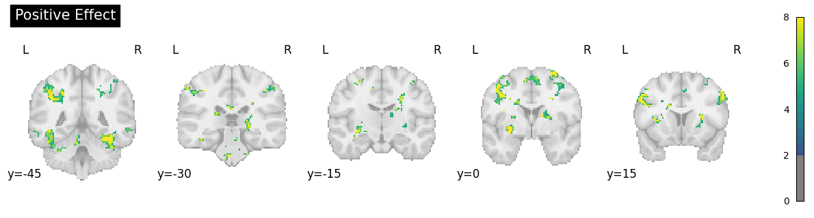
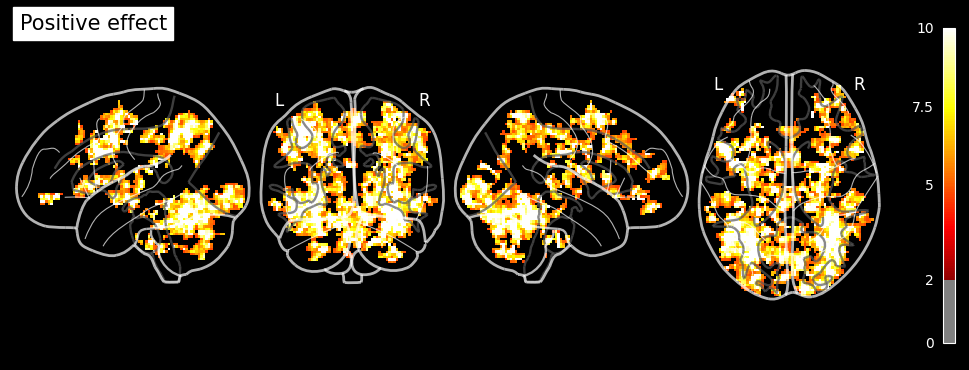
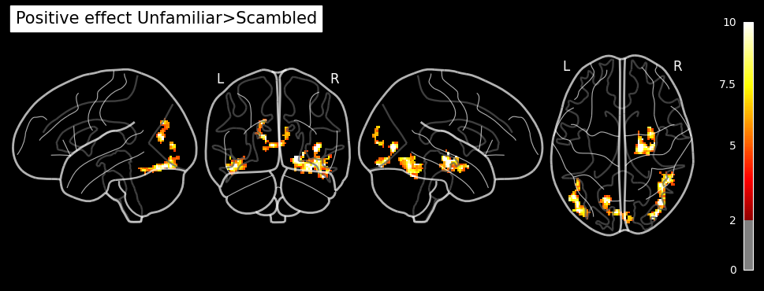
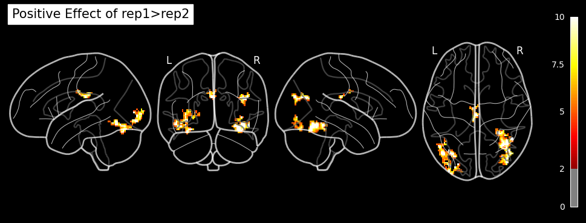
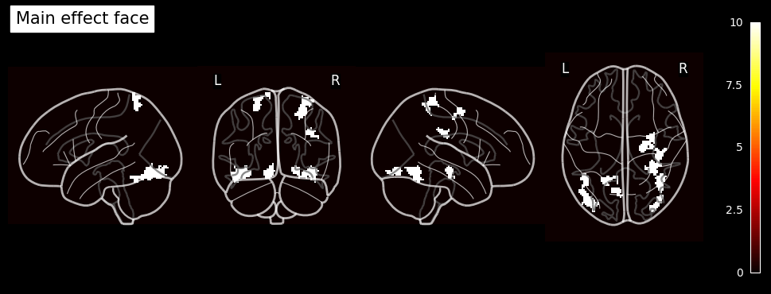

Nipype-SPM fMRI Analysis#
Subject and Group Level Analysis Workflows#
Author: Monika Doerig
Date: 13 June 2024
License:
Note: If this notebook uses neuroimaging tools from Neurocontainers, those tools retain their original licenses. Please see Neurodesk citation guidelines for details.
Citation and Resources:#
Tools included in this workflow#
Nipype:
Esteban, O., Markiewicz, C. J., Burns, C., Goncalves, M., Jarecka, D., Ziegler, E., Berleant, S., Ellis, D. G., Pinsard, B., Madison, C., Waskom, M., Notter, M. P., Clark, D., Manhães-Savio, A., Clark, D., Jordan, K., Dayan, M., Halchenko, Y. O., Loney, F., … Ghosh, S. (2025). nipy/nipype: 1.8.6 (1.8.6). Zenodo. https://doi.org/10.5281/zenodo.15054147
SPM12:
Friston, K. J. (2007). Statistical parametric mapping: The analysis of functional brain images (1st ed). Elsevier / Academic Press.
Dataset#
Wakeman, DG and Henson, RN (2021). Multisubject, multimodal face processing. OpenNeuro. [Dataset] doi: 10.18112/openneuro.ds000117.v1.0.5
Wakeman, D.G. & Henson, R.N. (2015). A multi-subject, multi-modal human neuroimaging dataset. Sci. Data 2:150001 doi: 10.1038/sdata.2015.1
Educational resources:#
Introduction#
The fMRI dataset used for this example is part of a multi-subject, multi-modal (sMRI, fMRI, MEG, EEG) neuroimaging dataset on face processing. It contains data in BIDS format on sixteen healthy volunteers. The data was recoreded while the volunteers performed multiple runs of hundreds of trials of a simple perceptual task on pictures of familiar, unfamiliar and scrambled faces during two visits to the laboratory.
The facial stimuli consisted of two groups of 300 greyscale photos, half of which were of famous people and half of which were of non-famous people (unknown to the participants). Each scrambled face was created either from the famous face or the non-famous face of the same stimulus number. Additionally, each image was presented twice to the participants. The second presentation occurred either immediately after the first presentation (Immediate Repeats) or after 5–15 intervening stimuli (Delayed Repeats), with 50% of each type of repeat. To ensure that each stimulus received equal attention, participants were instructed to use their left or right index finger to press one of two keys (assignment counter-balanced across participants). They determined the symmetry of each image by pressing a key based on whether they perceived it to be ‘more’ or ‘less symmetric’ than average.
In the original paper (Wakeman & Henson, 2015), the repetition manipulation was not distinguished, meaning that initial and repeated presentations were treated identically without considering the timing of the repeats.
To illustrate the setup of a 3x2 factorial design analysis (familiar vs. unfamiliar vs. scrambled faces) x (1st vs. 2nd presentation) in an SPM Nipype workflow, the event files will be adapted accordingly. Each stimulus type will be labeled as either the first or second presentation. However, for simplicity, no distinction is made between immediate and delayed repetitions, resulting in 6 stimulus types (conditions): Familiar-Rep1 (F1), Familiar-Rep2 (F2), Unfamiliar-Rep1 (U1), Unfamiliar-Rep2 (U2), Scrambled-Rep1 (S1), and Scrambled-Rep2 (S2).
Examples of a familiar, unfamiliar and scrambled face:
PATTERN_STIMULI = "stimuli/func/*001.bmp"
!datalad install https://github.com/OpenNeuroDatasets/ds000117.git
!cd ds000117 && git checkout 1.0.5 && datalad get $PATTERN_STIMULI
Cloning: 0%| | 0.00/2.00 [00:00<?, ? candidates/s]
Enumerating: 0.00 Objects [00:00, ? Objects/s]
Counting: 0%| | 0.00/39.9k [00:00<?, ? Objects/s]
Compressing: 0%| | 0.00/22.2k [00:00<?, ? Objects/s]
Compressing: 94%|█████████████████▊ | 20.9k/22.2k [00:00<00:00, 192k Objects/s]
Receiving: 0%| | 0.00/61.8k [00:00<?, ? Objects/s]
Receiving: 9%|█▊ | 5.56k/61.8k [00:00<00:01, 54.0k Objects/s]
Receiving: 26%|█████▏ | 16.1k/61.8k [00:00<00:00, 82.7k Objects/s]
Receiving: 49%|██████████▎ | 30.3k/61.8k [00:00<00:00, 106k Objects/s]
Receiving: 77%|████████████████▏ | 47.6k/61.8k [00:00<00:00, 131k Objects/s]
Receiving: 99%|████████████████████▊| 61.1k/61.8k [00:00<00:00, 103k Objects/s]
Resolving: 0%| | 0.00/16.5k [00:00<?, ? Deltas/s]
Resolving: 12%|██▌ | 1.98k/16.5k [00:00<00:00, 18.3k Deltas/s]
Resolving: 42%|████████▊ | 6.93k/16.5k [00:00<00:00, 34.7k Deltas/s]
Resolving: 82%|█████████████████▏ | 13.5k/16.5k [00:00<00:00, 48.3k Deltas/s]
[INFO ] Remote origin not usable by git-annex; setting annex-ignore
[INFO ] https://github.com/OpenNeuroDatasets/ds000117.git/config download failed: Not Found
install(ok): /home/jovyan/workspace/books/examples/functional_imaging/ds000117 (dataset)
Note: switching to '1.0.5'.
You are in 'detached HEAD' state. You can look around, make experimental
changes and commit them, and you can discard any commits you make in this
state without impacting any branches by switching back to a branch.
If you want to create a new branch to retain commits you create, you may
do so (now or later) by using -c with the switch command. Example:
git switch -c <new-branch-name>
Or undo this operation with:
git switch -
Turn off this advice by setting config variable advice.detachedHead to false
HEAD is now at 12470d39 [OpenNeuro] Recorded changes
Total: 0%| | 0.00/131k [00:00<?, ? Bytes/s]
Get stimuli/ .. nc/ps001.bmp: 0%| | 0.00/21.8k [00:00<?, ? Bytes/s]
Get stimuli/ .. nc/ps001.bmp: 0%| | 0.00/21.8k [00:00<?, ? Bytes/s]
Total: 17%|████▌ | 21.8k/131k [00:01<00:06, 17.4k Bytes/s]
Get stimuli/ .. nc/pf001.bmp: 0%| | 0.00/21.8k [00:00<?, ? Bytes/s]
Get stimuli/ .. nc/pf001.bmp: 0%| | 0.00/21.8k [00:00<?, ? Bytes/s]
Total: 33%|█████████ | 43.6k/131k [00:01<00:02, 29.2k Bytes/s]
Get stimuli/func/s001.bmp: 0%| | 0.00/21.8k [00:00<?, ? Bytes/s]
Get stimuli/func/s001.bmp: 0%| | 0.00/21.8k [00:00<?, ? Bytes/s]
Total: 50%|█████████████▌ | 65.4k/131k [00:01<00:01, 36.2k Bytes/s]
Get stimuli/func/f001.bmp: 0%| | 0.00/21.8k [00:00<?, ? Bytes/s]
Get stimuli/func/f001.bmp: 0%| | 0.00/21.8k [00:00<?, ? Bytes/s]
Total: 67%|██████████████████ | 87.3k/131k [00:02<00:01, 42.4k Bytes/s]
Get stimuli/func/u001.bmp: 0%| | 0.00/21.8k [00:00<?, ? Bytes/s]
Get stimuli/func/u001.bmp: 0%| | 0.00/21.8k [00:00<?, ? Bytes/s]
Total: 83%|███████████████████████▎ | 109k/131k [00:02<00:00, 47.0k Bytes/s]
Get stimuli/ .. nc/pu001.bmp: 0%| | 0.00/21.8k [00:00<?, ? Bytes/s]
Get stimuli/ .. nc/pu001.bmp: 0%| | 0.00/21.8k [00:00<?, ? Bytes/s]
get(ok): stimuli/func/ps001.bmp (file) [from s3-PUBLIC...]
get(ok): stimuli/func/pf001.bmp (file) [from s3-PUBLIC...]
get(ok): stimuli/func/s001.bmp (file) [from s3-PUBLIC...]
get(ok): stimuli/func/f001.bmp (file) [from s3-PUBLIC...]
get(ok): stimuli/func/u001.bmp (file) [from s3-PUBLIC...]
get(ok): stimuli/func/pu001.bmp (file) [from s3-PUBLIC...]
action summary:
get (ok: 6)
import matplotlib.pyplot as plt
from matplotlib.image import imread
# Load the .bmp images
familiar = imread('ds000117/stimuli/func/f001.bmp')
unfamiliar = imread('ds000117/stimuli/func/u001.bmp')
scrambled = imread('ds000117/stimuli/func/s001.bmp')
# Create a Matplotlib figure with subplots
fig, axes = plt.subplots(1, 3, figsize=(12, 4))
# Plot each image on a subplot
axes[0].imshow(familiar, cmap='gray')
axes[0].set_title('Familiar face')
axes[0].axis('off')
axes[1].imshow(unfamiliar, cmap='gray')
axes[1].set_title('Unfamiliar face')
axes[1].axis('off')
axes[2].imshow(scrambled, cmap='gray')
axes[2].set_title('Scrambled face')
axes[2].axis('off')
plt.tight_layout()
plt.show()

Download Data and install Python modules#
# Raw dataset: ONLY events.tsv + json sidecar
!cd ds000117 && git checkout 1.0.5 && \
datalad get sub-0[1-5]/ses-mri/func/*_events.tsv task-facerecognition_bold.json
HEAD is now at 12470d39 [OpenNeuro] Recorded changes
action summary:
get (notneeded: 46)
# get preprocessed normalized func images of 5 individuals and 2 runs
PATTERN_PREP = "sub-0[1-5]/ses-mri/func/*run-[1-2]*space-MNI152NLin6Asym_desc-smoothAROMAnonaggr_bold.nii.gz"
!datalad install https://github.com/OpenNeuroDerivatives/ds000117-fmriprep.git
!cd ds000117-fmriprep && datalad get $PATTERN_PREP
Cloning: 0%| | 0.00/2.00 [00:00<?, ? candidates/s]
Enumerating: 0.00 Objects [00:00, ? Objects/s]
Counting: 0%| | 0.00/103k [00:00<?, ? Objects/s]
Compressing: 0%| | 0.00/85.9k [00:00<?, ? Objects/s]
Receiving: 0%| | 0.00/103k [00:00<?, ? Objects/s]
Receiving: 5%|█ | 5.14k/103k [00:00<00:01, 49.1k Objects/s]
Receiving: 16%|███▎ | 16.5k/103k [00:00<00:01, 83.3k Objects/s]
Receiving: 27%|█████▋ | 27.8k/103k [00:00<00:00, 94.7k Objects/s]
Receiving: 37%|███████▊ | 38.1k/103k [00:00<00:00, 90.9k Objects/s]
Receiving: 47%|█████████▊ | 48.4k/103k [00:00<00:00, 94.0k Objects/s]
Receiving: 66%|█████████████▉ | 68.2k/103k [00:01<00:00, 58.8k Objects/s]
Receiving: 74%|███████████████▌ | 76.1k/103k [00:01<00:00, 26.8k Objects/s]
Resolving: 0%| | 0.00/13.2k [00:00<?, ? Deltas/s]
Resolving: 27%|█████▋ | 3.57k/13.2k [00:00<00:00, 35.1k Deltas/s]
Resolving: 60%|████████████▌ | 7.93k/13.2k [00:00<00:00, 39.5k Deltas/s]
Resolving: 90%|██████████████████▉ | 11.9k/13.2k [00:00<00:00, 18.0k Deltas/s]
[INFO ] Remote origin not usable by git-annex; setting annex-ignore
[INFO ] https://github.com/OpenNeuroDerivatives/ds000117-fmriprep.git/config download failed: Not Found
install(ok): /home/jovyan/workspace/books/examples/functional_imaging/ds000117-fmriprep (dataset)
Total: 0%| | 0.00/4.99G [00:00<?, ? Bytes/s]
Get sub-04/s .. _bold.nii.gz: 0%| | 0.00/514M [00:00<?, ? Bytes/s]
Get sub-04/s .. _bold.nii.gz: 0%| | 50.8k/514M [00:00<27:42, 309k Bytes/s]
Get sub-04/s .. _bold.nii.gz: 0%| | 103k/514M [00:00<27:30, 312k Bytes/s]
Get sub-04/s .. _bold.nii.gz: 0%| | 173k/514M [00:00<23:48, 360k Bytes/s]
Get sub-04/s .. _bold.nii.gz: 0%| | 347k/514M [00:00<13:33, 632k Bytes/s]
Get sub-04/s .. _bold.nii.gz: 0%| | 712k/514M [00:00<07:08, 1.20M Bytes/s]
Get sub-04/s .. _bold.nii.gz: 0%| | 1.43M/514M [00:00<03:48, 2.24M Bytes/s]
Get sub-04/s .. _bold.nii.gz: 1%| | 2.86M/514M [00:01<01:58, 4.31M Bytes/s]
Get sub-04/s .. _bold.nii.gz: 1%| | 4.77M/514M [00:01<01:07, 7.55M Bytes/s]
Get sub-04/s .. _bold.nii.gz: 1%| | 7.63M/514M [00:01<00:53, 9.55M Bytes/s]
Get sub-04/s .. _bold.nii.gz: 2%| | 9.18M/514M [00:01<00:46, 10.8M Bytes/s]
Get sub-04/s .. _bold.nii.gz: 2%| | 10.5M/514M [00:01<00:44, 11.3M Bytes/s]
Get sub-04/s .. _bold.nii.gz: 2%| | 12.1M/514M [00:01<00:40, 12.5M Bytes/s]
Get sub-04/s .. _bold.nii.gz: 3%| | 13.6M/514M [00:01<00:38, 13.1M Bytes/s]
Get sub-04/s .. _bold.nii.gz: 3%| | 16.1M/514M [00:02<00:39, 12.7M Bytes/s]
Get sub-04/s .. _bold.nii.gz: 3%|▏ | 17.4M/514M [00:02<00:38, 12.9M Bytes/s]
Get sub-04/s .. _bold.nii.gz: 4%|▏ | 19.0M/514M [00:02<00:39, 12.6M Bytes/s]
Get sub-04/s .. _bold.nii.gz: 4%|▏ | 20.5M/514M [00:02<00:37, 13.2M Bytes/s]
Get sub-04/s .. _bold.nii.gz: 5%|▏ | 23.5M/514M [00:02<00:37, 13.0M Bytes/s]
Get sub-04/s .. _bold.nii.gz: 5%|▏ | 25.4M/514M [00:02<00:34, 14.3M Bytes/s]
Get sub-04/s .. _bold.nii.gz: 5%|▏ | 28.0M/514M [00:02<00:37, 13.0M Bytes/s]
Get sub-04/s .. _bold.nii.gz: 6%|▏ | 29.6M/514M [00:03<00:35, 13.7M Bytes/s]
Get sub-04/s .. _bold.nii.gz: 6%|▏ | 32.1M/514M [00:03<00:48, 10.0M Bytes/s]
Get sub-04/s .. _bold.nii.gz: 7%|▎ | 33.6M/514M [00:03<00:44, 10.7M Bytes/s]
Get sub-04/s .. _bold.nii.gz: 7%|▎ | 35.3M/514M [00:03<00:45, 10.6M Bytes/s]
Get sub-04/s .. _bold.nii.gz: 7%|▎ | 36.8M/514M [00:03<00:41, 11.5M Bytes/s]
Get sub-04/s .. _bold.nii.gz: 8%|▎ | 39.6M/514M [00:04<00:40, 11.8M Bytes/s]
Get sub-04/s .. _bold.nii.gz: 8%|▎ | 42.3M/514M [00:04<00:53, 8.83M Bytes/s]
Get sub-04/s .. _bold.nii.gz: 9%|▎ | 43.9M/514M [00:04<00:47, 9.84M Bytes/s]
Get sub-04/s .. _bold.nii.gz: 9%|▎ | 45.1M/514M [00:04<00:47, 9.78M Bytes/s]
Get sub-04/s .. _bold.nii.gz: 9%|▎ | 46.5M/514M [00:04<00:44, 10.6M Bytes/s]
Get sub-04/s .. _bold.nii.gz: 9%|▎ | 48.0M/514M [00:04<00:40, 11.4M Bytes/s]
Get sub-04/s .. _bold.nii.gz: 10%|▍ | 49.6M/514M [00:05<00:37, 12.4M Bytes/s]
Get sub-04/s .. _bold.nii.gz: 10%|▍ | 52.3M/514M [00:05<00:36, 12.8M Bytes/s]
Get sub-04/s .. _bold.nii.gz: 10%|▍ | 53.8M/514M [00:05<00:34, 13.4M Bytes/s]
Get sub-04/s .. _bold.nii.gz: 11%|▍ | 55.4M/514M [00:05<00:33, 13.9M Bytes/s]
Get sub-04/s .. _bold.nii.gz: 11%|▍ | 56.9M/514M [00:05<00:32, 14.3M Bytes/s]
Get sub-04/s .. _bold.nii.gz: 11%|▍ | 58.4M/514M [00:05<00:31, 14.6M Bytes/s]
Get sub-04/s .. _bold.nii.gz: 12%|▍ | 61.1M/514M [00:06<00:43, 10.4M Bytes/s]
Get sub-04/s .. _bold.nii.gz: 12%|▍ | 62.5M/514M [00:06<00:41, 10.8M Bytes/s]
Get sub-04/s .. _bold.nii.gz: 12%|▍ | 64.1M/514M [00:06<00:37, 11.9M Bytes/s]
Get sub-04/s .. _bold.nii.gz: 13%|▌ | 66.4M/514M [00:06<00:38, 11.6M Bytes/s]
Get sub-04/s .. _bold.nii.gz: 13%|▌ | 68.8M/514M [00:06<00:37, 11.8M Bytes/s]
Get sub-04/s .. _bold.nii.gz: 14%|▌ | 70.3M/514M [00:06<00:36, 12.3M Bytes/s]
Get sub-04/s .. _bold.nii.gz: 14%|▌ | 73.1M/514M [00:06<00:33, 13.0M Bytes/s]
Get sub-04/s .. _bold.nii.gz: 15%|▌ | 75.8M/514M [00:07<00:33, 13.0M Bytes/s]
Get sub-04/s .. _bold.nii.gz: 15%|▌ | 77.2M/514M [00:07<00:32, 13.4M Bytes/s]
Get sub-04/s .. _bold.nii.gz: 16%|▌ | 80.2M/514M [00:07<00:31, 13.9M Bytes/s]
Get sub-04/s .. _bold.nii.gz: 16%|▋ | 82.9M/514M [00:07<00:31, 13.7M Bytes/s]
Get sub-04/s .. _bold.nii.gz: 16%|▋ | 84.4M/514M [00:07<00:30, 14.0M Bytes/s]
Get sub-04/s .. _bold.nii.gz: 17%|▋ | 87.4M/514M [00:07<00:29, 14.3M Bytes/s]
Get sub-04/s .. _bold.nii.gz: 18%|▋ | 90.2M/514M [00:08<00:30, 14.1M Bytes/s]
Get sub-04/s .. _bold.nii.gz: 18%|▋ | 91.7M/514M [00:08<00:29, 14.4M Bytes/s]
Get sub-04/s .. _bold.nii.gz: 18%|▋ | 94.6M/514M [00:08<00:29, 14.3M Bytes/s]
Get sub-04/s .. _bold.nii.gz: 19%|▋ | 96.1M/514M [00:08<00:28, 14.5M Bytes/s]
Get sub-04/s .. _bold.nii.gz: 19%|▊ | 97.6M/514M [00:08<00:28, 14.5M Bytes/s]
Get sub-04/s .. _bold.nii.gz: 19%|▊ | 99.1M/514M [00:08<00:28, 14.7M Bytes/s]
Get sub-04/s .. _bold.nii.gz: 20%|▉ | 101M/514M [00:08<00:28, 14.7M Bytes/s]
Get sub-04/s .. _bold.nii.gz: 20%|▉ | 102M/514M [00:08<00:27, 15.2M Bytes/s]
Get sub-04/s .. _bold.nii.gz: 20%|█ | 105M/514M [00:09<00:27, 14.9M Bytes/s]
Get sub-04/s .. _bold.nii.gz: 21%|█ | 108M/514M [00:09<00:28, 14.5M Bytes/s]
Get sub-04/s .. _bold.nii.gz: 21%|█ | 110M/514M [00:09<00:29, 13.8M Bytes/s]
Get sub-04/s .. _bold.nii.gz: 22%|█ | 112M/514M [00:09<00:29, 13.8M Bytes/s]
Get sub-04/s .. _bold.nii.gz: 22%|█ | 114M/514M [00:09<00:27, 14.5M Bytes/s]
Get sub-04/s .. _bold.nii.gz: 22%|█ | 115M/514M [00:09<00:25, 15.5M Bytes/s]
Get sub-04/s .. _bold.nii.gz: 23%|█▏ | 119M/514M [00:10<00:25, 15.7M Bytes/s]
Get sub-04/s .. _bold.nii.gz: 24%|█▏ | 121M/514M [00:10<00:26, 14.9M Bytes/s]
Get sub-04/s .. _bold.nii.gz: 24%|█▏ | 124M/514M [00:10<00:26, 14.8M Bytes/s]
Get sub-04/s .. _bold.nii.gz: 24%|█▏ | 126M/514M [00:10<00:26, 14.9M Bytes/s]
Get sub-04/s .. _bold.nii.gz: 25%|█▏ | 127M/514M [00:10<00:25, 14.9M Bytes/s]
Get sub-04/s .. _bold.nii.gz: 25%|█▎ | 130M/514M [00:10<00:25, 14.9M Bytes/s]
Get sub-04/s .. _bold.nii.gz: 26%|█▎ | 132M/514M [00:10<00:25, 15.0M Bytes/s]
Get sub-04/s .. _bold.nii.gz: 26%|█▎ | 133M/514M [00:11<00:25, 15.1M Bytes/s]
Get sub-04/s .. _bold.nii.gz: 26%|█▎ | 135M/514M [00:11<00:25, 15.1M Bytes/s]
Get sub-04/s .. _bold.nii.gz: 27%|█▎ | 137M/514M [00:11<00:24, 15.2M Bytes/s]
Get sub-04/s .. _bold.nii.gz: 27%|█▎ | 139M/514M [00:11<00:28, 13.2M Bytes/s]
Get sub-04/s .. _bold.nii.gz: 27%|█▎ | 141M/514M [00:11<00:33, 11.1M Bytes/s]
Get sub-04/s .. _bold.nii.gz: 28%|█▍ | 142M/514M [00:11<00:30, 12.0M Bytes/s]
Get sub-04/s .. _bold.nii.gz: 28%|█▍ | 144M/514M [00:11<00:31, 11.9M Bytes/s]
Get sub-04/s .. _bold.nii.gz: 28%|█▍ | 145M/514M [00:12<00:29, 12.7M Bytes/s]
Get sub-04/s .. _bold.nii.gz: 29%|█▍ | 147M/514M [00:12<00:32, 11.3M Bytes/s]
Get sub-04/s .. _bold.nii.gz: 29%|█▍ | 149M/514M [00:12<00:30, 12.0M Bytes/s]
Get sub-04/s .. _bold.nii.gz: 29%|█▍ | 151M/514M [00:12<00:31, 11.4M Bytes/s]
Get sub-04/s .. _bold.nii.gz: 30%|█▍ | 153M/514M [00:12<00:30, 11.8M Bytes/s]
Get sub-04/s .. _bold.nii.gz: 30%|█▌ | 155M/514M [00:12<00:30, 11.9M Bytes/s]
Get sub-04/s .. _bold.nii.gz: 30%|█▌ | 156M/514M [00:13<00:43, 8.32M Bytes/s]
Get sub-04/s .. _bold.nii.gz: 31%|█▌ | 158M/514M [00:13<00:39, 8.97M Bytes/s]
Get sub-04/s .. _bold.nii.gz: 31%|█▌ | 159M/514M [00:13<00:38, 9.31M Bytes/s]
Get sub-04/s .. _bold.nii.gz: 31%|█▌ | 160M/514M [00:13<00:33, 10.7M Bytes/s]
Get sub-04/s .. _bold.nii.gz: 32%|█▌ | 162M/514M [00:13<00:32, 10.8M Bytes/s]
Get sub-04/s .. _bold.nii.gz: 32%|█▌ | 164M/514M [00:13<00:31, 11.2M Bytes/s]
Get sub-04/s .. _bold.nii.gz: 32%|█▌ | 166M/514M [00:14<00:29, 11.7M Bytes/s]
Get sub-04/s .. _bold.nii.gz: 33%|█▋ | 169M/514M [00:14<00:29, 11.7M Bytes/s]
Get sub-04/s .. _bold.nii.gz: 33%|█▋ | 170M/514M [00:14<00:28, 12.1M Bytes/s]
Get sub-04/s .. _bold.nii.gz: 34%|█▋ | 173M/514M [00:14<00:27, 12.6M Bytes/s]
Get sub-04/s .. _bold.nii.gz: 34%|█▋ | 175M/514M [00:14<00:28, 12.1M Bytes/s]
Get sub-04/s .. _bold.nii.gz: 34%|█▋ | 176M/514M [00:14<00:27, 12.3M Bytes/s]
Get sub-04/s .. _bold.nii.gz: 35%|█▋ | 179M/514M [00:15<00:26, 12.6M Bytes/s]
Get sub-04/s .. _bold.nii.gz: 35%|█▊ | 181M/514M [00:15<00:26, 12.5M Bytes/s]
Get sub-04/s .. _bold.nii.gz: 36%|█▊ | 183M/514M [00:15<00:26, 12.7M Bytes/s]
Get sub-04/s .. _bold.nii.gz: 36%|█▊ | 185M/514M [00:15<00:25, 12.9M Bytes/s]
Get sub-04/s .. _bold.nii.gz: 37%|█▊ | 188M/514M [00:15<00:25, 12.7M Bytes/s]
Get sub-04/s .. _bold.nii.gz: 37%|█▊ | 189M/514M [00:15<00:25, 12.8M Bytes/s]
Get sub-04/s .. _bold.nii.gz: 37%|█▊ | 192M/514M [00:16<00:25, 12.5M Bytes/s]
Get sub-04/s .. _bold.nii.gz: 38%|█▉ | 194M/514M [00:16<00:25, 12.5M Bytes/s]
Get sub-04/s .. _bold.nii.gz: 38%|█▉ | 197M/514M [00:16<00:25, 12.6M Bytes/s]
Get sub-04/s .. _bold.nii.gz: 39%|█▉ | 199M/514M [00:16<00:24, 12.6M Bytes/s]
Get sub-04/s .. _bold.nii.gz: 39%|█▉ | 202M/514M [00:16<00:25, 12.4M Bytes/s]
Get sub-04/s .. _bold.nii.gz: 40%|█▉ | 204M/514M [00:17<00:25, 12.3M Bytes/s]
Get sub-04/s .. _bold.nii.gz: 40%|█▉ | 205M/514M [00:17<00:25, 12.3M Bytes/s]
Get sub-04/s .. _bold.nii.gz: 40%|██ | 207M/514M [00:17<00:24, 12.7M Bytes/s]
Get sub-04/s .. _bold.nii.gz: 41%|██ | 209M/514M [00:17<00:24, 12.6M Bytes/s]
Get sub-04/s .. _bold.nii.gz: 41%|██ | 211M/514M [00:17<00:23, 12.9M Bytes/s]
Get sub-04/s .. _bold.nii.gz: 41%|██ | 213M/514M [00:17<00:22, 13.1M Bytes/s]
Get sub-04/s .. _bold.nii.gz: 42%|██ | 216M/514M [00:17<00:23, 12.7M Bytes/s]
Get sub-04/s .. _bold.nii.gz: 42%|██ | 217M/514M [00:18<00:22, 13.1M Bytes/s]
Get sub-04/s .. _bold.nii.gz: 43%|██▏ | 220M/514M [00:18<00:22, 13.1M Bytes/s]
Get sub-04/s .. _bold.nii.gz: 43%|██▏ | 222M/514M [00:18<00:21, 13.4M Bytes/s]
Get sub-04/s .. _bold.nii.gz: 44%|██▏ | 224M/514M [00:18<00:22, 13.1M Bytes/s]
Get sub-04/s .. _bold.nii.gz: 44%|██▏ | 226M/514M [00:18<00:21, 13.3M Bytes/s]
Get sub-04/s .. _bold.nii.gz: 44%|██▏ | 228M/514M [00:18<00:21, 13.4M Bytes/s]
Get sub-04/s .. _bold.nii.gz: 45%|██▏ | 231M/514M [00:19<00:21, 13.2M Bytes/s]
Get sub-04/s .. _bold.nii.gz: 45%|██▎ | 232M/514M [00:19<00:21, 13.3M Bytes/s]
Get sub-04/s .. _bold.nii.gz: 45%|██▎ | 234M/514M [00:19<00:21, 13.3M Bytes/s]
Get sub-04/s .. _bold.nii.gz: 46%|██▎ | 235M/514M [00:19<00:20, 13.4M Bytes/s]
Get sub-04/s .. _bold.nii.gz: 46%|██▎ | 238M/514M [00:19<00:20, 13.4M Bytes/s]
Get sub-04/s .. _bold.nii.gz: 47%|██▎ | 240M/514M [00:19<00:20, 13.3M Bytes/s]
Get sub-04/s .. _bold.nii.gz: 47%|██▎ | 242M/514M [00:19<00:20, 13.3M Bytes/s]
Get sub-04/s .. _bold.nii.gz: 47%|██▎ | 243M/514M [00:19<00:20, 13.4M Bytes/s]
Get sub-04/s .. _bold.nii.gz: 48%|██▍ | 244M/514M [00:20<00:19, 13.5M Bytes/s]
Get sub-04/s .. _bold.nii.gz: 48%|██▍ | 247M/514M [00:20<00:20, 13.3M Bytes/s]
Get sub-04/s .. _bold.nii.gz: 48%|██▍ | 249M/514M [00:20<00:19, 13.7M Bytes/s]
Get sub-04/s .. _bold.nii.gz: 49%|██▍ | 251M/514M [00:20<00:19, 13.2M Bytes/s]
Get sub-04/s .. _bold.nii.gz: 49%|██▍ | 254M/514M [00:20<00:19, 13.3M Bytes/s]
Get sub-04/s .. _bold.nii.gz: 50%|██▍ | 255M/514M [00:20<00:19, 13.5M Bytes/s]
Get sub-04/s .. _bold.nii.gz: 50%|██▍ | 257M/514M [00:20<00:19, 13.5M Bytes/s]
Get sub-04/s .. _bold.nii.gz: 50%|██▌ | 258M/514M [00:21<00:18, 13.6M Bytes/s]
Get sub-04/s .. _bold.nii.gz: 51%|██▌ | 261M/514M [00:21<00:18, 13.4M Bytes/s]
Get sub-04/s .. _bold.nii.gz: 51%|██▌ | 262M/514M [00:21<00:18, 13.6M Bytes/s]
Get sub-04/s .. _bold.nii.gz: 51%|██▌ | 265M/514M [00:21<00:18, 13.2M Bytes/s]
Get sub-04/s .. _bold.nii.gz: 52%|██▌ | 266M/514M [00:21<00:18, 13.5M Bytes/s]
Get sub-04/s .. _bold.nii.gz: 52%|██▌ | 269M/514M [00:21<00:18, 13.4M Bytes/s]
Get sub-04/s .. _bold.nii.gz: 52%|██▌ | 270M/514M [00:21<00:18, 13.4M Bytes/s]
Get sub-04/s .. _bold.nii.gz: 53%|██▋ | 271M/514M [00:22<00:17, 13.7M Bytes/s]
Get sub-04/s .. _bold.nii.gz: 53%|██▋ | 274M/514M [00:22<00:17, 13.4M Bytes/s]
Get sub-04/s .. _bold.nii.gz: 54%|██▋ | 277M/514M [00:22<00:17, 13.4M Bytes/s]
Get sub-04/s .. _bold.nii.gz: 54%|██▋ | 278M/514M [00:22<00:17, 13.7M Bytes/s]
Get sub-04/s .. _bold.nii.gz: 55%|██▋ | 281M/514M [00:22<00:17, 13.5M Bytes/s]
Get sub-04/s .. _bold.nii.gz: 55%|██▋ | 282M/514M [00:22<00:17, 13.6M Bytes/s]
Get sub-04/s .. _bold.nii.gz: 55%|██▊ | 285M/514M [00:23<00:17, 13.4M Bytes/s]
Get sub-04/s .. _bold.nii.gz: 56%|██▊ | 286M/514M [00:23<00:16, 13.5M Bytes/s]
Get sub-04/s .. _bold.nii.gz: 56%|██▊ | 289M/514M [00:23<00:16, 13.7M Bytes/s]
Get sub-04/s .. _bold.nii.gz: 57%|██▊ | 292M/514M [00:23<00:16, 13.4M Bytes/s]
Get sub-04/s .. _bold.nii.gz: 57%|██▊ | 293M/514M [00:23<00:16, 13.5M Bytes/s]
Get sub-04/s .. _bold.nii.gz: 58%|██▉ | 296M/514M [00:23<00:16, 13.6M Bytes/s]
Get sub-04/s .. _bold.nii.gz: 58%|██▉ | 299M/514M [00:24<00:16, 13.5M Bytes/s]
Get sub-04/s .. _bold.nii.gz: 58%|██▉ | 300M/514M [00:24<00:15, 13.6M Bytes/s]
Get sub-04/s .. _bold.nii.gz: 59%|██▉ | 303M/514M [00:24<00:15, 13.7M Bytes/s]
Get sub-04/s .. _bold.nii.gz: 59%|██▉ | 305M/514M [00:24<00:15, 13.4M Bytes/s]
Get sub-04/s .. _bold.nii.gz: 60%|██▉ | 307M/514M [00:24<00:15, 13.7M Bytes/s]
Get sub-04/s .. _bold.nii.gz: 60%|███ | 310M/514M [00:24<00:14, 13.9M Bytes/s]
Get sub-04/s .. _bold.nii.gz: 61%|███ | 312M/514M [00:25<00:15, 13.4M Bytes/s]
Get sub-04/s .. _bold.nii.gz: 61%|███ | 314M/514M [00:25<00:19, 10.1M Bytes/s]
Get sub-04/s .. _bold.nii.gz: 61%|███ | 316M/514M [00:25<00:17, 11.0M Bytes/s]
Get sub-04/s .. _bold.nii.gz: 62%|███ | 317M/514M [00:25<00:17, 11.1M Bytes/s]
Get sub-04/s .. _bold.nii.gz: 62%|███ | 320M/514M [00:25<00:17, 10.9M Bytes/s]
Get sub-04/s .. _bold.nii.gz: 62%|███ | 321M/514M [00:25<00:18, 10.5M Bytes/s]
Get sub-04/s .. _bold.nii.gz: 63%|███▏ | 322M/514M [00:26<00:16, 11.4M Bytes/s]
Get sub-04/s .. _bold.nii.gz: 63%|███▏ | 324M/514M [00:26<00:18, 10.2M Bytes/s]
Get sub-04/s .. _bold.nii.gz: 63%|███▏ | 326M/514M [00:26<00:16, 11.3M Bytes/s]
Get sub-04/s .. _bold.nii.gz: 64%|███▏ | 328M/514M [00:26<00:18, 10.3M Bytes/s]
Get sub-04/s .. _bold.nii.gz: 64%|███▏ | 329M/514M [00:26<00:16, 11.2M Bytes/s]
Get sub-04/s .. _bold.nii.gz: 64%|███▏ | 331M/514M [00:26<00:17, 10.5M Bytes/s]
Get sub-04/s .. _bold.nii.gz: 65%|███▏ | 333M/514M [00:27<00:16, 11.2M Bytes/s]
Get sub-04/s .. _bold.nii.gz: 65%|███▎ | 335M/514M [00:27<00:16, 10.8M Bytes/s]
Get sub-04/s .. _bold.nii.gz: 65%|███▎ | 337M/514M [00:27<00:15, 11.3M Bytes/s]
Get sub-04/s .. _bold.nii.gz: 66%|███▎ | 339M/514M [00:27<00:15, 11.1M Bytes/s]
Get sub-04/s .. _bold.nii.gz: 66%|███▎ | 340M/514M [00:27<00:15, 11.5M Bytes/s]
Get sub-04/s .. _bold.nii.gz: 67%|███▎ | 343M/514M [00:27<00:14, 11.9M Bytes/s]
Get sub-04/s .. _bold.nii.gz: 67%|███▎ | 345M/514M [00:28<00:14, 11.4M Bytes/s]
Get sub-04/s .. _bold.nii.gz: 67%|███▎ | 346M/514M [00:28<00:14, 12.0M Bytes/s]
Get sub-04/s .. _bold.nii.gz: 68%|███▍ | 349M/514M [00:28<00:13, 11.8M Bytes/s]
Get sub-04/s .. _bold.nii.gz: 68%|███▍ | 350M/514M [00:28<00:13, 12.0M Bytes/s]
Get sub-04/s .. _bold.nii.gz: 69%|███▍ | 353M/514M [00:28<00:13, 12.4M Bytes/s]
Get sub-04/s .. _bold.nii.gz: 69%|███▍ | 355M/514M [00:28<00:13, 12.1M Bytes/s]
Get sub-04/s .. _bold.nii.gz: 69%|███▍ | 357M/514M [00:29<00:12, 12.5M Bytes/s]
Get sub-04/s .. _bold.nii.gz: 70%|███▍ | 359M/514M [00:29<00:12, 12.8M Bytes/s]
Get sub-04/s .. _bold.nii.gz: 70%|███▌ | 362M/514M [00:29<00:12, 12.2M Bytes/s]
Get sub-04/s .. _bold.nii.gz: 71%|███▌ | 363M/514M [00:29<00:11, 12.6M Bytes/s]
Get sub-04/s .. _bold.nii.gz: 71%|███▌ | 366M/514M [00:29<00:11, 12.8M Bytes/s]
Get sub-04/s .. _bold.nii.gz: 72%|███▌ | 368M/514M [00:29<00:11, 12.6M Bytes/s]
Get sub-04/s .. _bold.nii.gz: 72%|███▌ | 370M/514M [00:30<00:11, 12.8M Bytes/s]
Get sub-04/s .. _bold.nii.gz: 72%|███▌ | 372M/514M [00:30<00:10, 13.1M Bytes/s]
Get sub-04/s .. _bold.nii.gz: 73%|███▋ | 375M/514M [00:30<00:10, 12.7M Bytes/s]
Get sub-04/s .. _bold.nii.gz: 73%|███▋ | 376M/514M [00:30<00:10, 13.1M Bytes/s]
Get sub-04/s .. _bold.nii.gz: 74%|███▋ | 379M/514M [00:30<00:10, 13.3M Bytes/s]
Get sub-04/s .. _bold.nii.gz: 74%|███▋ | 381M/514M [00:30<00:10, 12.9M Bytes/s]
Get sub-04/s .. _bold.nii.gz: 74%|███▋ | 383M/514M [00:31<00:10, 13.0M Bytes/s]
Get sub-04/s .. _bold.nii.gz: 75%|███▋ | 384M/514M [00:31<00:09, 13.3M Bytes/s]
Get sub-04/s .. _bold.nii.gz: 75%|███▋ | 386M/514M [00:31<00:09, 13.6M Bytes/s]
Get sub-04/s .. _bold.nii.gz: 75%|███▊ | 388M/514M [00:31<00:09, 13.1M Bytes/s]
Get sub-04/s .. _bold.nii.gz: 76%|███▊ | 390M/514M [00:31<00:09, 13.6M Bytes/s]
Get sub-04/s .. _bold.nii.gz: 76%|███▊ | 392M/514M [00:31<00:09, 13.5M Bytes/s]
Get sub-04/s .. _bold.nii.gz: 77%|███▊ | 394M/514M [00:31<00:08, 13.6M Bytes/s]
Get sub-04/s .. _bold.nii.gz: 77%|███▊ | 397M/514M [00:32<00:08, 13.6M Bytes/s]
Get sub-04/s .. _bold.nii.gz: 78%|███▉ | 399M/514M [00:32<00:08, 13.4M Bytes/s]
Get sub-04/s .. _bold.nii.gz: 78%|███▉ | 401M/514M [00:32<00:08, 13.7M Bytes/s]
Get sub-04/s .. _bold.nii.gz: 78%|███▉ | 403M/514M [00:32<00:08, 13.6M Bytes/s]
Get sub-04/s .. _bold.nii.gz: 79%|███▉ | 405M/514M [00:32<00:07, 13.8M Bytes/s]
Get sub-04/s .. _bold.nii.gz: 79%|███▉ | 408M/514M [00:32<00:07, 13.8M Bytes/s]
Get sub-04/s .. _bold.nii.gz: 80%|███▉ | 410M/514M [00:33<00:07, 13.8M Bytes/s]
Get sub-04/s .. _bold.nii.gz: 80%|████ | 413M/514M [00:33<00:07, 13.4M Bytes/s]
Get sub-04/s .. _bold.nii.gz: 81%|████ | 415M/514M [00:33<00:07, 13.7M Bytes/s]
Get sub-04/s .. _bold.nii.gz: 81%|████ | 417M/514M [00:33<00:07, 13.9M Bytes/s]
Get sub-04/s .. _bold.nii.gz: 82%|████ | 420M/514M [00:33<00:06, 13.5M Bytes/s]
Get sub-04/s .. _bold.nii.gz: 82%|████ | 422M/514M [00:33<00:06, 13.9M Bytes/s]
Get sub-04/s .. _bold.nii.gz: 82%|████ | 424M/514M [00:34<00:06, 13.8M Bytes/s]
Get sub-04/s .. _bold.nii.gz: 83%|████▏| 427M/514M [00:34<00:06, 13.7M Bytes/s]
Get sub-04/s .. _bold.nii.gz: 83%|████▏| 429M/514M [00:34<00:05, 14.4M Bytes/s]
Get sub-04/s .. _bold.nii.gz: 84%|████▏| 431M/514M [00:34<00:06, 13.6M Bytes/s]
Get sub-04/s .. _bold.nii.gz: 84%|████▏| 433M/514M [00:34<00:05, 14.5M Bytes/s]
Get sub-04/s .. _bold.nii.gz: 85%|████▏| 435M/514M [00:34<00:05, 13.6M Bytes/s]
Get sub-04/s .. _bold.nii.gz: 85%|████▎| 438M/514M [00:35<00:05, 13.5M Bytes/s]
Get sub-04/s .. _bold.nii.gz: 85%|████▎| 440M/514M [00:35<00:05, 13.7M Bytes/s]
Get sub-04/s .. _bold.nii.gz: 86%|████▎| 442M/514M [00:35<00:05, 13.8M Bytes/s]
Get sub-04/s .. _bold.nii.gz: 87%|████▎| 445M/514M [00:35<00:05, 13.6M Bytes/s]
Get sub-04/s .. _bold.nii.gz: 87%|████▎| 448M/514M [00:35<00:04, 13.6M Bytes/s]
Get sub-04/s .. _bold.nii.gz: 87%|████▎| 449M/514M [00:35<00:04, 14.0M Bytes/s]
Get sub-04/s .. _bold.nii.gz: 88%|████▍| 452M/514M [00:36<00:04, 13.6M Bytes/s]
Get sub-04/s .. _bold.nii.gz: 88%|████▍| 454M/514M [00:36<00:04, 14.0M Bytes/s]
Get sub-04/s .. _bold.nii.gz: 89%|████▍| 456M/514M [00:36<00:04, 14.0M Bytes/s]
Get sub-04/s .. _bold.nii.gz: 89%|████▍| 459M/514M [00:36<00:04, 13.6M Bytes/s]
Get sub-04/s .. _bold.nii.gz: 90%|████▍| 462M/514M [00:36<00:03, 13.7M Bytes/s]
Get sub-04/s .. _bold.nii.gz: 90%|████▌| 463M/514M [00:36<00:03, 14.0M Bytes/s]
Get sub-04/s .. _bold.nii.gz: 91%|████▌| 466M/514M [00:37<00:03, 13.6M Bytes/s]
Get sub-04/s .. _bold.nii.gz: 91%|████▌| 467M/514M [00:37<00:03, 13.9M Bytes/s]
Get sub-04/s .. _bold.nii.gz: 91%|████▌| 470M/514M [00:37<00:03, 13.9M Bytes/s]
Get sub-04/s .. _bold.nii.gz: 92%|████▌| 473M/514M [00:37<00:03, 13.7M Bytes/s]
Get sub-04/s .. _bold.nii.gz: 92%|████▌| 474M/514M [00:37<00:02, 14.1M Bytes/s]
Get sub-04/s .. _bold.nii.gz: 93%|████▋| 477M/514M [00:37<00:02, 13.8M Bytes/s]
Get sub-04/s .. _bold.nii.gz: 93%|████▋| 479M/514M [00:38<00:02, 14.1M Bytes/s]
Get sub-04/s .. _bold.nii.gz: 94%|████▋| 482M/514M [00:38<00:02, 14.2M Bytes/s]
Get sub-04/s .. _bold.nii.gz: 94%|████▋| 484M/514M [00:38<00:02, 13.7M Bytes/s]
Get sub-04/s .. _bold.nii.gz: 94%|████▋| 486M/514M [00:38<00:02, 13.8M Bytes/s]
Get sub-04/s .. _bold.nii.gz: 95%|████▋| 488M/514M [00:38<00:01, 13.9M Bytes/s]
Get sub-04/s .. _bold.nii.gz: 95%|████▊| 491M/514M [00:38<00:01, 13.7M Bytes/s]
Get sub-04/s .. _bold.nii.gz: 96%|████▊| 493M/514M [00:39<00:01, 14.1M Bytes/s]
Get sub-04/s .. _bold.nii.gz: 96%|████▊| 495M/514M [00:39<00:01, 14.0M Bytes/s]
Get sub-04/s .. _bold.nii.gz: 97%|████▊| 498M/514M [00:39<00:01, 13.7M Bytes/s]
Get sub-04/s .. _bold.nii.gz: 97%|████▊| 500M/514M [00:39<00:01, 13.9M Bytes/s]
Get sub-04/s .. _bold.nii.gz: 98%|████▉| 502M/514M [00:39<00:00, 14.0M Bytes/s]
Get sub-04/s .. _bold.nii.gz: 98%|████▉| 505M/514M [00:39<00:00, 13.8M Bytes/s]
Get sub-04/s .. _bold.nii.gz: 98%|████▉| 507M/514M [00:40<00:00, 13.9M Bytes/s]
Get sub-04/s .. _bold.nii.gz: 99%|████▉| 509M/514M [00:40<00:00, 14.0M Bytes/s]
Get sub-04/s .. _bold.nii.gz: 100%|████▉| 512M/514M [00:40<00:00, 13.8M Bytes/s]
Get sub-04/s .. _bold.nii.gz: 0%| | 0.00/514M [00:00<?, ? Bytes/s]
Total: 10%|██▊ | 514M/4.99G [00:43<06:17, 11.9M Bytes/s]
Get sub-05/s .. _bold.nii.gz: 0%| | 0.00/497M [00:00<?, ? Bytes/s]
Get sub-05/s .. _bold.nii.gz: 0%| | 1.32M/497M [00:00<00:37, 13.2M Bytes/s]
Get sub-05/s .. _bold.nii.gz: 1%| | 2.66M/497M [00:00<00:37, 13.3M Bytes/s]
Get sub-05/s .. _bold.nii.gz: 1%| | 4.06M/497M [00:00<00:36, 13.6M Bytes/s]
Get sub-05/s .. _bold.nii.gz: 1%| | 6.51M/497M [00:00<00:38, 12.8M Bytes/s]
Get sub-05/s .. _bold.nii.gz: 2%| | 8.00M/497M [00:00<00:36, 13.4M Bytes/s]
Get sub-05/s .. _bold.nii.gz: 2%| | 10.7M/497M [00:00<00:35, 13.5M Bytes/s]
Get sub-05/s .. _bold.nii.gz: 3%| | 13.2M/497M [00:01<00:37, 12.9M Bytes/s]
Get sub-05/s .. _bold.nii.gz: 3%| | 14.6M/497M [00:01<00:36, 13.1M Bytes/s]
Get sub-05/s .. _bold.nii.gz: 3%|▏ | 17.4M/497M [00:01<00:36, 13.0M Bytes/s]
Get sub-05/s .. _bold.nii.gz: 4%|▏ | 19.3M/497M [00:01<00:33, 14.2M Bytes/s]
Get sub-05/s .. _bold.nii.gz: 4%|▏ | 21.5M/497M [00:01<00:36, 13.0M Bytes/s]
Get sub-05/s .. _bold.nii.gz: 5%|▏ | 22.9M/497M [00:01<00:35, 13.3M Bytes/s]
Get sub-05/s .. _bold.nii.gz: 5%|▏ | 24.3M/497M [00:01<00:35, 13.5M Bytes/s]
Get sub-05/s .. _bold.nii.gz: 5%|▏ | 27.0M/497M [00:02<00:34, 13.4M Bytes/s]
Get sub-05/s .. _bold.nii.gz: 6%|▏ | 29.8M/497M [00:02<00:34, 13.5M Bytes/s]
Get sub-05/s .. _bold.nii.gz: 7%|▎ | 32.5M/497M [00:02<00:34, 13.5M Bytes/s]
Get sub-05/s .. _bold.nii.gz: 7%|▎ | 33.9M/497M [00:02<00:33, 13.7M Bytes/s]
Get sub-05/s .. _bold.nii.gz: 7%|▎ | 35.4M/497M [00:02<00:32, 14.0M Bytes/s]
Get sub-05/s .. _bold.nii.gz: 7%|▎ | 37.2M/497M [00:02<00:31, 14.8M Bytes/s]
Get sub-05/s .. _bold.nii.gz: 8%|▎ | 40.5M/497M [00:02<00:29, 15.5M Bytes/s]
Get sub-05/s .. _bold.nii.gz: 9%|▎ | 42.7M/497M [00:03<00:32, 13.9M Bytes/s]
Get sub-05/s .. _bold.nii.gz: 9%|▎ | 44.2M/497M [00:03<00:32, 14.0M Bytes/s]
Get sub-05/s .. _bold.nii.gz: 9%|▎ | 45.7M/497M [00:03<00:31, 14.2M Bytes/s]
Get sub-05/s .. _bold.nii.gz: 10%|▍ | 48.5M/497M [00:03<00:31, 14.2M Bytes/s]
Get sub-05/s .. _bold.nii.gz: 10%|▍ | 50.1M/497M [00:03<00:30, 14.6M Bytes/s]
Get sub-05/s .. _bold.nii.gz: 10%|▍ | 51.6M/497M [00:03<00:30, 14.7M Bytes/s]
Get sub-05/s .. _bold.nii.gz: 11%|▍ | 53.3M/497M [00:03<00:29, 15.1M Bytes/s]
Get sub-05/s .. _bold.nii.gz: 11%|▍ | 55.1M/497M [00:03<00:30, 14.4M Bytes/s]
Get sub-05/s .. _bold.nii.gz: 12%|▍ | 57.2M/497M [00:04<00:27, 16.2M Bytes/s]
Get sub-05/s .. _bold.nii.gz: 12%|▍ | 59.6M/497M [00:04<00:30, 14.4M Bytes/s]
Get sub-05/s .. _bold.nii.gz: 13%|▌ | 62.3M/497M [00:04<00:31, 14.0M Bytes/s]
Get sub-05/s .. _bold.nii.gz: 13%|▌ | 64.1M/497M [00:04<00:29, 14.8M Bytes/s]
Get sub-05/s .. _bold.nii.gz: 13%|▌ | 65.7M/497M [00:04<00:28, 15.0M Bytes/s]
Get sub-05/s .. _bold.nii.gz: 14%|▌ | 69.0M/497M [00:04<00:27, 15.6M Bytes/s]
Get sub-05/s .. _bold.nii.gz: 15%|▌ | 72.7M/497M [00:05<00:25, 16.3M Bytes/s]
Get sub-05/s .. _bold.nii.gz: 15%|▌ | 75.5M/497M [00:05<00:27, 15.3M Bytes/s]
Get sub-05/s .. _bold.nii.gz: 16%|▋ | 78.1M/497M [00:05<00:24, 17.2M Bytes/s]
Get sub-05/s .. _bold.nii.gz: 16%|▋ | 81.2M/497M [00:05<00:26, 15.9M Bytes/s]
Get sub-05/s .. _bold.nii.gz: 17%|▋ | 83.3M/497M [00:05<00:24, 16.9M Bytes/s]
Get sub-05/s .. _bold.nii.gz: 17%|▋ | 86.6M/497M [00:05<00:24, 16.7M Bytes/s]
Get sub-05/s .. _bold.nii.gz: 18%|▋ | 89.7M/497M [00:06<00:24, 16.3M Bytes/s]
Get sub-05/s .. _bold.nii.gz: 19%|▋ | 93.0M/497M [00:06<00:24, 16.3M Bytes/s]
Get sub-05/s .. _bold.nii.gz: 19%|▊ | 96.1M/497M [00:06<00:24, 16.1M Bytes/s]
Get sub-05/s .. _bold.nii.gz: 20%|▊ | 97.8M/497M [00:06<00:24, 16.2M Bytes/s]
Get sub-05/s .. _bold.nii.gz: 20%|▊ | 99.5M/497M [00:06<00:24, 16.2M Bytes/s]
Get sub-05/s .. _bold.nii.gz: 21%|█ | 103M/497M [00:06<00:23, 16.8M Bytes/s]
Get sub-05/s .. _bold.nii.gz: 21%|█ | 105M/497M [00:07<00:23, 16.8M Bytes/s]
Get sub-05/s .. _bold.nii.gz: 21%|█ | 106M/497M [00:07<00:23, 16.8M Bytes/s]
Get sub-05/s .. _bold.nii.gz: 22%|█ | 108M/497M [00:07<00:23, 16.6M Bytes/s]
Get sub-05/s .. _bold.nii.gz: 22%|█ | 111M/497M [00:07<00:23, 16.1M Bytes/s]
Get sub-05/s .. _bold.nii.gz: 23%|█▏ | 114M/497M [00:07<00:23, 16.0M Bytes/s]
Get sub-05/s .. _bold.nii.gz: 24%|█▏ | 118M/497M [00:07<00:23, 16.0M Bytes/s]
Get sub-05/s .. _bold.nii.gz: 24%|█▏ | 121M/497M [00:08<00:23, 15.9M Bytes/s]
Get sub-05/s .. _bold.nii.gz: 25%|█▏ | 122M/497M [00:08<00:23, 15.9M Bytes/s]
Get sub-05/s .. _bold.nii.gz: 25%|█▏ | 124M/497M [00:08<00:23, 16.2M Bytes/s]
Get sub-05/s .. _bold.nii.gz: 25%|█▎ | 126M/497M [00:08<00:22, 16.7M Bytes/s]
Get sub-05/s .. _bold.nii.gz: 26%|█▎ | 129M/497M [00:08<00:22, 16.0M Bytes/s]
Get sub-05/s .. _bold.nii.gz: 27%|█▎ | 132M/497M [00:08<00:23, 15.8M Bytes/s]
Get sub-05/s .. _bold.nii.gz: 27%|█▎ | 135M/497M [00:08<00:23, 15.7M Bytes/s]
Get sub-05/s .. _bold.nii.gz: 28%|█▍ | 138M/497M [00:09<00:23, 15.5M Bytes/s]
Get sub-05/s .. _bold.nii.gz: 28%|█▍ | 141M/497M [00:09<00:23, 15.4M Bytes/s]
Get sub-05/s .. _bold.nii.gz: 29%|█▍ | 143M/497M [00:09<00:22, 15.4M Bytes/s]
Get sub-05/s .. _bold.nii.gz: 29%|█▍ | 145M/497M [00:09<00:22, 16.0M Bytes/s]
Get sub-05/s .. _bold.nii.gz: 29%|█▍ | 147M/497M [00:09<00:21, 16.5M Bytes/s]
Get sub-05/s .. _bold.nii.gz: 30%|█▌ | 150M/497M [00:09<00:21, 16.1M Bytes/s]
Get sub-05/s .. _bold.nii.gz: 30%|█▌ | 151M/497M [00:09<00:21, 16.3M Bytes/s]
Get sub-05/s .. _bold.nii.gz: 31%|█▌ | 153M/497M [00:10<00:20, 16.7M Bytes/s]
Get sub-05/s .. _bold.nii.gz: 31%|█▌ | 155M/497M [00:10<00:19, 17.4M Bytes/s]
Get sub-05/s .. _bold.nii.gz: 32%|█▌ | 159M/497M [00:10<00:19, 16.9M Bytes/s]
Get sub-05/s .. _bold.nii.gz: 33%|█▋ | 162M/497M [00:10<00:20, 16.5M Bytes/s]
Get sub-05/s .. _bold.nii.gz: 33%|█▋ | 165M/497M [00:10<00:19, 17.4M Bytes/s]
Get sub-05/s .. _bold.nii.gz: 34%|█▋ | 168M/497M [00:10<00:19, 16.9M Bytes/s]
Get sub-05/s .. _bold.nii.gz: 34%|█▋ | 170M/497M [00:11<00:18, 17.5M Bytes/s]
Get sub-05/s .. _bold.nii.gz: 35%|█▋ | 173M/497M [00:11<00:19, 17.0M Bytes/s]
Get sub-05/s .. _bold.nii.gz: 35%|█▊ | 176M/497M [00:11<00:19, 16.2M Bytes/s]
Get sub-05/s .. _bold.nii.gz: 36%|█▊ | 179M/497M [00:11<00:19, 16.0M Bytes/s]
Get sub-05/s .. _bold.nii.gz: 36%|█▊ | 181M/497M [00:11<00:19, 16.1M Bytes/s]
Get sub-05/s .. _bold.nii.gz: 37%|█▊ | 183M/497M [00:11<00:19, 16.4M Bytes/s]
Get sub-05/s .. _bold.nii.gz: 37%|█▊ | 184M/497M [00:11<00:18, 16.7M Bytes/s]
Get sub-05/s .. _bold.nii.gz: 37%|█▊ | 186M/497M [00:12<00:17, 17.4M Bytes/s]
Get sub-05/s .. _bold.nii.gz: 38%|█▉ | 190M/497M [00:12<00:18, 16.9M Bytes/s]
Get sub-05/s .. _bold.nii.gz: 39%|█▉ | 193M/497M [00:12<00:18, 16.2M Bytes/s]
Get sub-05/s .. _bold.nii.gz: 39%|█▉ | 195M/497M [00:12<00:19, 15.2M Bytes/s]
Get sub-05/s .. _bold.nii.gz: 40%|█▉ | 198M/497M [00:12<00:19, 15.3M Bytes/s]
Get sub-05/s .. _bold.nii.gz: 41%|██ | 201M/497M [00:13<00:19, 15.3M Bytes/s]
Get sub-05/s .. _bold.nii.gz: 41%|██ | 203M/497M [00:13<00:19, 15.4M Bytes/s]
Get sub-05/s .. _bold.nii.gz: 41%|██ | 205M/497M [00:13<00:18, 15.5M Bytes/s]
Get sub-05/s .. _bold.nii.gz: 42%|██ | 206M/497M [00:13<00:18, 15.8M Bytes/s]
Get sub-05/s .. _bold.nii.gz: 42%|██ | 208M/497M [00:13<00:18, 15.8M Bytes/s]
Get sub-05/s .. _bold.nii.gz: 42%|██ | 210M/497M [00:13<00:17, 16.3M Bytes/s]
Get sub-05/s .. _bold.nii.gz: 43%|██▏ | 211M/497M [00:13<00:17, 16.7M Bytes/s]
Get sub-05/s .. _bold.nii.gz: 43%|██▏ | 213M/497M [00:13<00:16, 17.0M Bytes/s]
Get sub-05/s .. _bold.nii.gz: 43%|██▏ | 215M/497M [00:13<00:15, 17.7M Bytes/s]
Get sub-05/s .. _bold.nii.gz: 44%|██▏ | 219M/497M [00:14<00:15, 17.8M Bytes/s]
Get sub-05/s .. _bold.nii.gz: 45%|██▏ | 223M/497M [00:14<00:15, 17.4M Bytes/s]
Get sub-05/s .. _bold.nii.gz: 45%|██▎ | 224M/497M [00:14<00:15, 17.8M Bytes/s]
Get sub-05/s .. _bold.nii.gz: 46%|██▎ | 228M/497M [00:14<00:15, 17.8M Bytes/s]
Get sub-05/s .. _bold.nii.gz: 47%|██▎ | 232M/497M [00:14<00:14, 18.1M Bytes/s]
Get sub-05/s .. _bold.nii.gz: 47%|██▎ | 236M/497M [00:14<00:14, 17.8M Bytes/s]
Get sub-05/s .. _bold.nii.gz: 48%|██▍ | 238M/497M [00:15<00:15, 16.7M Bytes/s]
Get sub-05/s .. _bold.nii.gz: 49%|██▍ | 242M/497M [00:15<00:15, 16.2M Bytes/s]
Get sub-05/s .. _bold.nii.gz: 49%|██▍ | 245M/497M [00:15<00:15, 15.9M Bytes/s]
Get sub-05/s .. _bold.nii.gz: 50%|██▍ | 248M/497M [00:15<00:15, 15.8M Bytes/s]
Get sub-05/s .. _bold.nii.gz: 50%|██▌ | 251M/497M [00:16<00:19, 12.7M Bytes/s]
Get sub-05/s .. _bold.nii.gz: 51%|██▌ | 252M/497M [00:16<00:18, 13.2M Bytes/s]
Total: 10%|██▊ | 514M/4.99G [01:00<08:42, 8.57M Bytes/s]
Get sub-05/s .. _bold.nii.gz: 51%|██▌ | 254M/497M [00:16<00:17, 13.6M Bytes/s]
Get sub-05/s .. _bold.nii.gz: 52%|██▌ | 257M/497M [00:16<00:18, 13.0M Bytes/s]
Get sub-05/s .. _bold.nii.gz: 52%|██▌ | 259M/497M [00:16<00:19, 12.3M Bytes/s]
Get sub-05/s .. _bold.nii.gz: 52%|██▌ | 261M/497M [00:16<00:18, 13.0M Bytes/s]
Get sub-05/s .. _bold.nii.gz: 53%|██▋ | 263M/497M [00:17<00:19, 12.2M Bytes/s]
Get sub-05/s .. _bold.nii.gz: 53%|██▋ | 265M/497M [00:17<00:17, 13.0M Bytes/s]
Get sub-05/s .. _bold.nii.gz: 54%|██▋ | 267M/497M [00:17<00:28, 7.96M Bytes/s]
Get sub-05/s .. _bold.nii.gz: 54%|██▋ | 269M/497M [00:17<00:25, 9.11M Bytes/s]
Get sub-05/s .. _bold.nii.gz: 54%|██▋ | 270M/497M [00:17<00:24, 9.38M Bytes/s]
Get sub-05/s .. _bold.nii.gz: 55%|██▋ | 272M/497M [00:18<00:21, 10.5M Bytes/s]
Get sub-05/s .. _bold.nii.gz: 55%|██▊ | 274M/497M [00:18<00:22, 9.80M Bytes/s]
Get sub-05/s .. _bold.nii.gz: 55%|██▊ | 275M/497M [00:18<00:20, 11.0M Bytes/s]
Get sub-05/s .. _bold.nii.gz: 56%|██▊ | 277M/497M [00:18<00:21, 10.1M Bytes/s]
Get sub-05/s .. _bold.nii.gz: 56%|██▊ | 279M/497M [00:18<00:19, 11.1M Bytes/s]
Get sub-05/s .. _bold.nii.gz: 57%|██▊ | 281M/497M [00:18<00:20, 10.5M Bytes/s]
Get sub-05/s .. _bold.nii.gz: 57%|██▊ | 282M/497M [00:19<00:18, 11.3M Bytes/s]
Get sub-05/s .. _bold.nii.gz: 57%|██▊ | 285M/497M [00:19<00:19, 10.8M Bytes/s]
Get sub-05/s .. _bold.nii.gz: 58%|██▉ | 286M/497M [00:19<00:18, 11.7M Bytes/s]
Get sub-05/s .. _bold.nii.gz: 58%|██▉ | 288M/497M [00:19<00:18, 11.0M Bytes/s]
Get sub-05/s .. _bold.nii.gz: 58%|██▉ | 290M/497M [00:19<00:17, 11.8M Bytes/s]
Get sub-05/s .. _bold.nii.gz: 59%|██▉ | 292M/497M [00:19<00:18, 11.2M Bytes/s]
Get sub-05/s .. _bold.nii.gz: 59%|██▉ | 294M/497M [00:20<00:17, 11.8M Bytes/s]
Get sub-05/s .. _bold.nii.gz: 60%|██▉ | 296M/497M [00:20<00:17, 11.4M Bytes/s]
Get sub-05/s .. _bold.nii.gz: 60%|██▉ | 298M/497M [00:20<00:16, 12.1M Bytes/s]
Get sub-05/s .. _bold.nii.gz: 60%|███ | 300M/497M [00:20<00:16, 11.6M Bytes/s]
Get sub-05/s .. _bold.nii.gz: 61%|███ | 302M/497M [00:20<00:16, 12.2M Bytes/s]
Get sub-05/s .. _bold.nii.gz: 61%|███ | 304M/497M [00:20<00:16, 12.0M Bytes/s]
Get sub-05/s .. _bold.nii.gz: 62%|███ | 306M/497M [00:21<00:16, 11.8M Bytes/s]
Get sub-05/s .. _bold.nii.gz: 62%|███ | 308M/497M [00:21<00:15, 12.4M Bytes/s]
Get sub-05/s .. _bold.nii.gz: 62%|███ | 310M/497M [00:21<00:15, 11.9M Bytes/s]
Get sub-05/s .. _bold.nii.gz: 63%|███▏ | 312M/497M [00:21<00:15, 12.3M Bytes/s]
Get sub-05/s .. _bold.nii.gz: 63%|███▏ | 314M/497M [00:21<00:14, 12.5M Bytes/s]
Get sub-05/s .. _bold.nii.gz: 64%|███▏ | 317M/497M [00:21<00:15, 11.9M Bytes/s]
Get sub-05/s .. _bold.nii.gz: 64%|███▏ | 318M/497M [00:22<00:14, 12.6M Bytes/s]
Get sub-05/s .. _bold.nii.gz: 65%|███▏ | 321M/497M [00:22<00:14, 12.5M Bytes/s]
Get sub-05/s .. _bold.nii.gz: 65%|███▏ | 323M/497M [00:22<00:14, 12.1M Bytes/s]
Get sub-05/s .. _bold.nii.gz: 65%|███▎ | 324M/497M [00:22<00:13, 12.6M Bytes/s]
Get sub-05/s .. _bold.nii.gz: 66%|███▎ | 327M/497M [00:22<00:13, 12.4M Bytes/s]
Get sub-05/s .. _bold.nii.gz: 66%|███▎ | 329M/497M [00:22<00:13, 12.2M Bytes/s]
Get sub-05/s .. _bold.nii.gz: 67%|███▎ | 331M/497M [00:23<00:12, 13.0M Bytes/s]
Get sub-05/s .. _bold.nii.gz: 67%|███▎ | 333M/497M [00:23<00:13, 12.4M Bytes/s]
Get sub-05/s .. _bold.nii.gz: 68%|███▍ | 336M/497M [00:23<00:13, 12.3M Bytes/s]
Get sub-05/s .. _bold.nii.gz: 68%|███▍ | 337M/497M [00:23<00:12, 13.1M Bytes/s]
Get sub-05/s .. _bold.nii.gz: 68%|███▍ | 339M/497M [00:23<00:12, 12.4M Bytes/s]
Get sub-05/s .. _bold.nii.gz: 69%|███▍ | 341M/497M [00:23<00:12, 12.8M Bytes/s]
Get sub-05/s .. _bold.nii.gz: 69%|███▍ | 344M/497M [00:24<00:12, 12.7M Bytes/s]
Get sub-05/s .. _bold.nii.gz: 70%|███▍ | 346M/497M [00:24<00:12, 12.4M Bytes/s]
Get sub-05/s .. _bold.nii.gz: 70%|███▍ | 348M/497M [00:24<00:11, 13.0M Bytes/s]
Get sub-05/s .. _bold.nii.gz: 70%|███▌ | 350M/497M [00:24<00:11, 12.6M Bytes/s]
Get sub-05/s .. _bold.nii.gz: 71%|███▌ | 352M/497M [00:24<00:11, 12.5M Bytes/s]
Get sub-05/s .. _bold.nii.gz: 71%|███▌ | 354M/497M [00:24<00:10, 13.1M Bytes/s]
Get sub-05/s .. _bold.nii.gz: 72%|███▌ | 356M/497M [00:25<00:11, 12.6M Bytes/s]
Get sub-05/s .. _bold.nii.gz: 72%|███▌ | 358M/497M [00:25<00:10, 12.9M Bytes/s]
Get sub-05/s .. _bold.nii.gz: 73%|███▋ | 360M/497M [00:25<00:10, 13.0M Bytes/s]
Get sub-05/s .. _bold.nii.gz: 73%|███▋ | 363M/497M [00:25<00:10, 12.4M Bytes/s]
Get sub-05/s .. _bold.nii.gz: 73%|███▋ | 364M/497M [00:25<00:10, 12.8M Bytes/s]
Get sub-05/s .. _bold.nii.gz: 74%|███▋ | 367M/497M [00:25<00:10, 12.9M Bytes/s]
Get sub-05/s .. _bold.nii.gz: 74%|███▋ | 369M/497M [00:26<00:10, 12.4M Bytes/s]
Get sub-05/s .. _bold.nii.gz: 75%|███▋ | 371M/497M [00:26<00:09, 12.9M Bytes/s]
Get sub-05/s .. _bold.nii.gz: 75%|███▊ | 373M/497M [00:26<00:09, 12.8M Bytes/s]
Get sub-05/s .. _bold.nii.gz: 76%|███▊ | 376M/497M [00:26<00:09, 12.4M Bytes/s]
Get sub-05/s .. _bold.nii.gz: 76%|███▊ | 377M/497M [00:26<00:09, 13.0M Bytes/s]
Get sub-05/s .. _bold.nii.gz: 76%|███▊ | 380M/497M [00:26<00:09, 12.7M Bytes/s]
Get sub-05/s .. _bold.nii.gz: 77%|███▊ | 381M/497M [00:27<00:09, 12.8M Bytes/s]
Get sub-05/s .. _bold.nii.gz: 77%|███▊ | 384M/497M [00:27<00:08, 12.9M Bytes/s]
Get sub-05/s .. _bold.nii.gz: 78%|███▉ | 386M/497M [00:27<00:08, 12.6M Bytes/s]
Get sub-05/s .. _bold.nii.gz: 78%|███▉ | 387M/497M [00:27<00:08, 12.8M Bytes/s]
Get sub-05/s .. _bold.nii.gz: 78%|███▉ | 390M/497M [00:27<00:08, 12.9M Bytes/s]
Get sub-05/s .. _bold.nii.gz: 79%|███▉ | 392M/497M [00:27<00:08, 12.6M Bytes/s]
Get sub-05/s .. _bold.nii.gz: 79%|███▉ | 395M/497M [00:28<00:08, 12.4M Bytes/s]
Get sub-05/s .. _bold.nii.gz: 80%|███▉ | 396M/497M [00:28<00:07, 13.0M Bytes/s]
Get sub-05/s .. _bold.nii.gz: 80%|████ | 399M/497M [00:28<00:11, 8.81M Bytes/s]
Get sub-05/s .. _bold.nii.gz: 81%|████ | 400M/497M [00:28<00:09, 9.94M Bytes/s]
Get sub-05/s .. _bold.nii.gz: 81%|████ | 402M/497M [00:28<00:09, 10.0M Bytes/s]
Get sub-05/s .. _bold.nii.gz: 81%|████ | 403M/497M [00:29<00:09, 9.78M Bytes/s]
Get sub-05/s .. _bold.nii.gz: 81%|████ | 405M/497M [00:29<00:09, 9.67M Bytes/s]
Get sub-05/s .. _bold.nii.gz: 82%|████ | 406M/497M [00:29<00:08, 10.8M Bytes/s]
Get sub-05/s .. _bold.nii.gz: 82%|████ | 408M/497M [00:29<00:09, 9.37M Bytes/s]
Get sub-05/s .. _bold.nii.gz: 82%|████ | 409M/497M [00:29<00:08, 10.4M Bytes/s]
Get sub-05/s .. _bold.nii.gz: 83%|████▏| 411M/497M [00:29<00:09, 9.43M Bytes/s]
Get sub-05/s .. _bold.nii.gz: 83%|████▏| 412M/497M [00:29<00:08, 9.92M Bytes/s]
Get sub-05/s .. _bold.nii.gz: 83%|████▏| 415M/497M [00:30<00:08, 9.77M Bytes/s]
Get sub-05/s .. _bold.nii.gz: 84%|████▏| 416M/497M [00:30<00:07, 10.9M Bytes/s]
Get sub-05/s .. _bold.nii.gz: 84%|████▏| 418M/497M [00:30<00:07, 9.93M Bytes/s]
Get sub-05/s .. _bold.nii.gz: 84%|████▏| 419M/497M [00:30<00:07, 10.8M Bytes/s]
Get sub-05/s .. _bold.nii.gz: 85%|████▏| 422M/497M [00:30<00:07, 10.1M Bytes/s]
Get sub-05/s .. _bold.nii.gz: 85%|████▎| 423M/497M [00:30<00:06, 11.1M Bytes/s]
Get sub-05/s .. _bold.nii.gz: 86%|████▎| 425M/497M [00:31<00:06, 10.4M Bytes/s]
Get sub-05/s .. _bold.nii.gz: 86%|████▎| 427M/497M [00:31<00:06, 11.1M Bytes/s]
Get sub-05/s .. _bold.nii.gz: 86%|████▎| 429M/497M [00:31<00:06, 10.6M Bytes/s]
Get sub-05/s .. _bold.nii.gz: 87%|████▎| 430M/497M [00:31<00:05, 11.3M Bytes/s]
Get sub-05/s .. _bold.nii.gz: 87%|████▎| 433M/497M [00:31<00:05, 10.9M Bytes/s]
Get sub-05/s .. _bold.nii.gz: 87%|████▎| 434M/497M [00:31<00:05, 11.6M Bytes/s]
Get sub-05/s .. _bold.nii.gz: 88%|████▍| 437M/497M [00:32<00:05, 11.1M Bytes/s]
Get sub-05/s .. _bold.nii.gz: 88%|████▍| 438M/497M [00:32<00:05, 11.7M Bytes/s]
Get sub-05/s .. _bold.nii.gz: 89%|████▍| 440M/497M [00:32<00:04, 11.3M Bytes/s]
Get sub-05/s .. _bold.nii.gz: 89%|████▍| 442M/497M [00:32<00:04, 11.7M Bytes/s]
Get sub-05/s .. _bold.nii.gz: 89%|████▍| 444M/497M [00:32<00:04, 11.9M Bytes/s]
Get sub-05/s .. _bold.nii.gz: 90%|████▍| 446M/497M [00:33<00:04, 11.5M Bytes/s]
Get sub-05/s .. _bold.nii.gz: 90%|████▌| 448M/497M [00:33<00:04, 12.0M Bytes/s]
Get sub-05/s .. _bold.nii.gz: 91%|████▌| 450M/497M [00:33<00:03, 11.7M Bytes/s]
Get sub-05/s .. _bold.nii.gz: 91%|████▌| 452M/497M [00:33<00:03, 12.0M Bytes/s]
Get sub-05/s .. _bold.nii.gz: 91%|████▌| 454M/497M [00:33<00:03, 12.2M Bytes/s]
Get sub-05/s .. _bold.nii.gz: 92%|████▌| 456M/497M [00:33<00:03, 11.9M Bytes/s]
Get sub-05/s .. _bold.nii.gz: 92%|████▌| 458M/497M [00:33<00:03, 12.2M Bytes/s]
Get sub-05/s .. _bold.nii.gz: 93%|████▋| 460M/497M [00:34<00:02, 12.5M Bytes/s]
Get sub-05/s .. _bold.nii.gz: 93%|████▋| 463M/497M [00:34<00:02, 12.0M Bytes/s]
Get sub-05/s .. _bold.nii.gz: 93%|████▋| 464M/497M [00:34<00:02, 12.4M Bytes/s]
Get sub-05/s .. _bold.nii.gz: 94%|████▋| 467M/497M [00:34<00:02, 12.3M Bytes/s]
Get sub-05/s .. _bold.nii.gz: 94%|████▋| 469M/497M [00:34<00:02, 12.1M Bytes/s]
Get sub-05/s .. _bold.nii.gz: 95%|████▋| 470M/497M [00:34<00:02, 12.5M Bytes/s]
Get sub-05/s .. _bold.nii.gz: 95%|████▊| 473M/497M [00:35<00:01, 12.4M Bytes/s]
Get sub-05/s .. _bold.nii.gz: 95%|████▊| 475M/497M [00:35<00:01, 13.0M Bytes/s]
Get sub-05/s .. _bold.nii.gz: 96%|████▊| 477M/497M [00:35<00:01, 12.6M Bytes/s]
Get sub-05/s .. _bold.nii.gz: 96%|████▊| 479M/497M [00:35<00:01, 12.3M Bytes/s]
Get sub-05/s .. _bold.nii.gz: 97%|████▊| 481M/497M [00:35<00:01, 12.9M Bytes/s]
Get sub-05/s .. _bold.nii.gz: 97%|████▊| 483M/497M [00:35<00:01, 12.5M Bytes/s]
Get sub-05/s .. _bold.nii.gz: 98%|████▉| 486M/497M [00:36<00:00, 12.2M Bytes/s]
Get sub-05/s .. _bold.nii.gz: 98%|████▉| 487M/497M [00:36<00:00, 12.4M Bytes/s]
Get sub-05/s .. _bold.nii.gz: 99%|████▉| 490M/497M [00:36<00:00, 12.6M Bytes/s]
Get sub-05/s .. _bold.nii.gz: 99%|████▉| 492M/497M [00:36<00:00, 12.5M Bytes/s]
Get sub-05/s .. _bold.nii.gz: 99%|████▉| 494M/497M [00:36<00:00, 13.1M Bytes/s]
Get sub-05/s .. _bold.nii.gz: 100%|████▉| 496M/497M [00:36<00:00, 12.7M Bytes/s]
Get sub-05/s .. _bold.nii.gz: 0%| | 0.00/497M [00:00<?, ? Bytes/s]
Total: 20%|█████▎ | 1.01G/4.99G [01:20<05:18, 12.5M Bytes/s]
Get sub-03/s .. _bold.nii.gz: 0%| | 0.00/498M [00:00<?, ? Bytes/s]
Get sub-03/s .. _bold.nii.gz: 1%| | 2.58M/498M [00:00<00:38, 12.9M Bytes/s]
Get sub-03/s .. _bold.nii.gz: 1%| | 3.90M/498M [00:00<00:37, 13.0M Bytes/s]
Get sub-03/s .. _bold.nii.gz: 1%| | 5.23M/498M [00:00<00:37, 13.1M Bytes/s]
Get sub-03/s .. _bold.nii.gz: 2%| | 7.87M/498M [00:00<00:37, 13.1M Bytes/s]
Get sub-03/s .. _bold.nii.gz: 2%| | 10.4M/498M [00:00<00:40, 12.2M Bytes/s]
Get sub-03/s .. _bold.nii.gz: 2%| | 11.9M/498M [00:00<00:37, 12.9M Bytes/s]
Get sub-03/s .. _bold.nii.gz: 3%| | 14.5M/498M [00:01<00:37, 12.9M Bytes/s]
Get sub-03/s .. _bold.nii.gz: 3%|▏ | 16.7M/498M [00:01<00:39, 12.2M Bytes/s]
Get sub-03/s .. _bold.nii.gz: 4%|▏ | 18.2M/498M [00:01<00:38, 12.6M Bytes/s]
Get sub-03/s .. _bold.nii.gz: 4%|▏ | 20.9M/498M [00:01<00:38, 12.4M Bytes/s]
Get sub-03/s .. _bold.nii.gz: 5%|▏ | 22.5M/498M [00:01<00:36, 13.1M Bytes/s]
Get sub-03/s .. _bold.nii.gz: 5%|▏ | 25.1M/498M [00:01<00:37, 12.4M Bytes/s]
Get sub-03/s .. _bold.nii.gz: 5%|▏ | 26.7M/498M [00:02<00:59, 7.93M Bytes/s]
Get sub-03/s .. _bold.nii.gz: 6%|▏ | 28.3M/498M [00:02<00:51, 9.06M Bytes/s]
Get sub-03/s .. _bold.nii.gz: 6%|▏ | 29.8M/498M [00:02<00:48, 9.62M Bytes/s]
Get sub-03/s .. _bold.nii.gz: 6%|▎ | 31.3M/498M [00:02<00:49, 9.42M Bytes/s]
Get sub-03/s .. _bold.nii.gz: 7%|▎ | 32.9M/498M [00:02<00:44, 10.5M Bytes/s]
Get sub-03/s .. _bold.nii.gz: 7%|▎ | 34.5M/498M [00:03<00:51, 9.04M Bytes/s]
Get sub-03/s .. _bold.nii.gz: 7%|▎ | 36.0M/498M [00:03<00:45, 10.2M Bytes/s]
Get sub-03/s .. _bold.nii.gz: 8%|▎ | 37.7M/498M [00:03<00:50, 9.17M Bytes/s]
Get sub-03/s .. _bold.nii.gz: 8%|▎ | 39.1M/498M [00:03<00:45, 10.1M Bytes/s]
Get sub-03/s .. _bold.nii.gz: 8%|▎ | 41.1M/498M [00:03<00:48, 9.42M Bytes/s]
Get sub-03/s .. _bold.nii.gz: 9%|▎ | 42.4M/498M [00:03<00:44, 10.3M Bytes/s]
Get sub-03/s .. _bold.nii.gz: 9%|▎ | 44.5M/498M [00:04<00:46, 9.75M Bytes/s]
Get sub-03/s .. _bold.nii.gz: 9%|▎ | 45.9M/498M [00:04<00:42, 10.5M Bytes/s]
Get sub-03/s .. _bold.nii.gz: 10%|▍ | 48.0M/498M [00:04<00:44, 10.1M Bytes/s]
Get sub-03/s .. _bold.nii.gz: 10%|▍ | 49.4M/498M [00:04<00:41, 10.8M Bytes/s]
Get sub-03/s .. _bold.nii.gz: 10%|▍ | 51.6M/498M [00:04<00:43, 10.4M Bytes/s]
Get sub-03/s .. _bold.nii.gz: 11%|▍ | 53.1M/498M [00:04<00:40, 11.1M Bytes/s]
Get sub-03/s .. _bold.nii.gz: 11%|▍ | 55.3M/498M [00:05<00:39, 11.1M Bytes/s]
Get sub-03/s .. _bold.nii.gz: 11%|▍ | 57.2M/498M [00:05<00:41, 10.6M Bytes/s]
Get sub-03/s .. _bold.nii.gz: 12%|▍ | 58.5M/498M [00:05<00:40, 11.0M Bytes/s]
Get sub-03/s .. _bold.nii.gz: 12%|▍ | 61.0M/498M [00:05<00:39, 11.0M Bytes/s]
Get sub-03/s .. _bold.nii.gz: 13%|▌ | 62.3M/498M [00:05<00:38, 11.4M Bytes/s]
Get sub-03/s .. _bold.nii.gz: 13%|▌ | 64.8M/498M [00:05<00:36, 11.8M Bytes/s]
Get sub-03/s .. _bold.nii.gz: 13%|▌ | 66.8M/498M [00:06<00:38, 11.2M Bytes/s]
Get sub-03/s .. _bold.nii.gz: 14%|▌ | 68.2M/498M [00:06<00:36, 11.7M Bytes/s]
Get sub-03/s .. _bold.nii.gz: 14%|▌ | 70.7M/498M [00:06<00:37, 11.5M Bytes/s]
Get sub-03/s .. _bold.nii.gz: 14%|▌ | 72.0M/498M [00:06<00:36, 11.7M Bytes/s]
Get sub-03/s .. _bold.nii.gz: 15%|▌ | 74.6M/498M [00:06<00:34, 12.1M Bytes/s]
Get sub-03/s .. _bold.nii.gz: 15%|▌ | 76.7M/498M [00:06<00:36, 11.6M Bytes/s]
Get sub-03/s .. _bold.nii.gz: 16%|▋ | 78.1M/498M [00:07<00:34, 12.1M Bytes/s]
Get sub-03/s .. _bold.nii.gz: 16%|▋ | 80.6M/498M [00:07<00:33, 12.3M Bytes/s]
Get sub-03/s .. _bold.nii.gz: 17%|▋ | 82.8M/498M [00:07<00:35, 11.6M Bytes/s]
Get sub-03/s .. _bold.nii.gz: 17%|▋ | 84.2M/498M [00:07<00:34, 12.1M Bytes/s]
Get sub-03/s .. _bold.nii.gz: 17%|▋ | 86.8M/498M [00:07<00:33, 12.1M Bytes/s]
Get sub-03/s .. _bold.nii.gz: 18%|▋ | 88.1M/498M [00:07<00:33, 12.4M Bytes/s]
Get sub-03/s .. _bold.nii.gz: 18%|▋ | 90.7M/498M [00:08<00:32, 12.4M Bytes/s]
Get sub-03/s .. _bold.nii.gz: 19%|▋ | 93.0M/498M [00:08<00:33, 12.2M Bytes/s]
Get sub-03/s .. _bold.nii.gz: 19%|▊ | 94.3M/498M [00:08<00:32, 12.4M Bytes/s]
Get sub-03/s .. _bold.nii.gz: 19%|▊ | 96.7M/498M [00:08<00:33, 12.1M Bytes/s]
Get sub-03/s .. _bold.nii.gz: 20%|▊ | 98.9M/498M [00:08<00:33, 11.7M Bytes/s]
Get sub-03/s .. _bold.nii.gz: 20%|█ | 101M/498M [00:09<00:33, 11.7M Bytes/s]
Get sub-03/s .. _bold.nii.gz: 21%|█ | 103M/498M [00:09<00:32, 12.2M Bytes/s]
Get sub-03/s .. _bold.nii.gz: 21%|█ | 104M/498M [00:09<00:30, 12.9M Bytes/s]
Get sub-03/s .. _bold.nii.gz: 21%|█ | 107M/498M [00:09<00:30, 13.0M Bytes/s]
Get sub-03/s .. _bold.nii.gz: 22%|█ | 110M/498M [00:09<00:29, 13.0M Bytes/s]
Get sub-03/s .. _bold.nii.gz: 22%|█ | 111M/498M [00:09<00:29, 13.1M Bytes/s]
Get sub-03/s .. _bold.nii.gz: 23%|█▏ | 113M/498M [00:09<00:29, 12.9M Bytes/s]
Get sub-03/s .. _bold.nii.gz: 23%|█▏ | 116M/498M [00:10<00:30, 12.7M Bytes/s]
Get sub-03/s .. _bold.nii.gz: 24%|█▏ | 118M/498M [00:10<00:30, 12.4M Bytes/s]
Get sub-03/s .. _bold.nii.gz: 24%|█▏ | 120M/498M [00:10<00:29, 13.0M Bytes/s]
Get sub-03/s .. _bold.nii.gz: 25%|█▏ | 122M/498M [00:10<00:29, 12.7M Bytes/s]
Get sub-03/s .. _bold.nii.gz: 25%|█▏ | 124M/498M [00:10<00:29, 12.9M Bytes/s]
Get sub-03/s .. _bold.nii.gz: 25%|█▎ | 126M/498M [00:10<00:28, 13.0M Bytes/s]
Get sub-03/s .. _bold.nii.gz: 26%|█▎ | 129M/498M [00:11<00:29, 12.5M Bytes/s]
Get sub-03/s .. _bold.nii.gz: 26%|█▎ | 130M/498M [00:11<00:28, 12.7M Bytes/s]
Get sub-03/s .. _bold.nii.gz: 27%|█▎ | 133M/498M [00:11<00:28, 12.9M Bytes/s]
Get sub-03/s .. _bold.nii.gz: 27%|█▎ | 135M/498M [00:11<00:29, 12.5M Bytes/s]
Get sub-03/s .. _bold.nii.gz: 27%|█▎ | 137M/498M [00:11<00:28, 12.9M Bytes/s]
Get sub-03/s .. _bold.nii.gz: 28%|█▍ | 139M/498M [00:11<00:27, 12.9M Bytes/s]
Get sub-03/s .. _bold.nii.gz: 28%|█▍ | 141M/498M [00:12<00:28, 12.4M Bytes/s]
Get sub-03/s .. _bold.nii.gz: 29%|█▍ | 143M/498M [00:12<00:27, 12.9M Bytes/s]
Get sub-03/s .. _bold.nii.gz: 29%|█▍ | 146M/498M [00:12<00:27, 12.9M Bytes/s]
Get sub-03/s .. _bold.nii.gz: 30%|█▍ | 148M/498M [00:12<00:28, 12.5M Bytes/s]
Get sub-03/s .. _bold.nii.gz: 30%|█▌ | 149M/498M [00:12<00:26, 13.1M Bytes/s]
Get sub-03/s .. _bold.nii.gz: 31%|█▌ | 152M/498M [00:12<00:27, 12.7M Bytes/s]
Get sub-03/s .. _bold.nii.gz: 31%|█▌ | 154M/498M [00:13<00:27, 12.5M Bytes/s]
Get sub-03/s .. _bold.nii.gz: 31%|█▌ | 156M/498M [00:13<00:26, 13.1M Bytes/s]
Get sub-03/s .. _bold.nii.gz: 32%|█▌ | 158M/498M [00:13<00:27, 12.6M Bytes/s]
Get sub-03/s .. _bold.nii.gz: 32%|█▌ | 160M/498M [00:13<00:26, 12.7M Bytes/s]
Get sub-03/s .. _bold.nii.gz: 33%|█▋ | 162M/498M [00:13<00:25, 13.1M Bytes/s]
Get sub-03/s .. _bold.nii.gz: 33%|█▋ | 165M/498M [00:13<00:26, 12.5M Bytes/s]
Get sub-03/s .. _bold.nii.gz: 33%|█▋ | 166M/498M [00:14<00:25, 12.9M Bytes/s]
Get sub-03/s .. _bold.nii.gz: 34%|█▋ | 169M/498M [00:14<00:25, 13.0M Bytes/s]
Get sub-03/s .. _bold.nii.gz: 34%|█▋ | 171M/498M [00:14<00:26, 12.5M Bytes/s]
Get sub-03/s .. _bold.nii.gz: 35%|█▋ | 173M/498M [00:14<00:25, 12.8M Bytes/s]
Get sub-03/s .. _bold.nii.gz: 35%|█▊ | 175M/498M [00:14<00:25, 12.8M Bytes/s]
Get sub-03/s .. _bold.nii.gz: 36%|█▊ | 178M/498M [00:14<00:25, 12.4M Bytes/s]
Get sub-03/s .. _bold.nii.gz: 36%|█▊ | 179M/498M [00:15<00:24, 12.9M Bytes/s]
Get sub-03/s .. _bold.nii.gz: 36%|█▊ | 182M/498M [00:15<00:24, 12.8M Bytes/s]
Get sub-03/s .. _bold.nii.gz: 37%|█▊ | 184M/498M [00:15<00:25, 12.5M Bytes/s]
Get sub-03/s .. _bold.nii.gz: 37%|█▊ | 185M/498M [00:15<00:24, 12.8M Bytes/s]
Get sub-03/s .. _bold.nii.gz: 38%|█▉ | 188M/498M [00:15<00:24, 12.8M Bytes/s]
Get sub-03/s .. _bold.nii.gz: 38%|█▉ | 190M/498M [00:15<00:24, 12.6M Bytes/s]
Get sub-03/s .. _bold.nii.gz: 39%|█▉ | 192M/498M [00:16<00:23, 13.3M Bytes/s]
Get sub-03/s .. _bold.nii.gz: 39%|█▉ | 194M/498M [00:16<00:23, 12.8M Bytes/s]
Get sub-03/s .. _bold.nii.gz: 39%|█▉ | 196M/498M [00:16<00:22, 13.3M Bytes/s]
Get sub-03/s .. _bold.nii.gz: 40%|█▉ | 199M/498M [00:16<00:22, 13.1M Bytes/s]
Get sub-03/s .. _bold.nii.gz: 40%|██ | 201M/498M [00:16<00:23, 12.6M Bytes/s]
Get sub-03/s .. _bold.nii.gz: 41%|██ | 202M/498M [00:16<00:22, 12.9M Bytes/s]
Get sub-03/s .. _bold.nii.gz: 41%|██ | 205M/498M [00:17<00:22, 13.0M Bytes/s]
Get sub-03/s .. _bold.nii.gz: 42%|██ | 208M/498M [00:17<00:22, 12.7M Bytes/s]
Get sub-03/s .. _bold.nii.gz: 42%|██ | 209M/498M [00:17<00:22, 12.9M Bytes/s]
Get sub-03/s .. _bold.nii.gz: 43%|██▏ | 212M/498M [00:17<00:21, 13.1M Bytes/s]
Get sub-03/s .. _bold.nii.gz: 43%|██▏ | 214M/498M [00:17<00:22, 12.8M Bytes/s]
Get sub-03/s .. _bold.nii.gz: 43%|██▏ | 216M/498M [00:17<00:21, 13.2M Bytes/s]
Get sub-03/s .. _bold.nii.gz: 44%|██▏ | 218M/498M [00:18<00:21, 13.2M Bytes/s]
Get sub-03/s .. _bold.nii.gz: 44%|██▏ | 221M/498M [00:18<00:21, 13.0M Bytes/s]
Get sub-03/s .. _bold.nii.gz: 45%|██▏ | 222M/498M [00:18<00:20, 13.5M Bytes/s]
Get sub-03/s .. _bold.nii.gz: 45%|██▎ | 225M/498M [00:18<00:20, 13.3M Bytes/s]
Get sub-03/s .. _bold.nii.gz: 46%|██▎ | 228M/498M [00:18<00:20, 13.1M Bytes/s]
Total: 20%|█████▎ | 1.01G/4.99G [01:40<06:33, 10.1M Bytes/s]
Get sub-03/s .. _bold.nii.gz: 46%|██▎ | 229M/498M [00:18<00:19, 13.5M Bytes/s]
Get sub-03/s .. _bold.nii.gz: 47%|██▎ | 232M/498M [00:19<00:19, 13.5M Bytes/s]
Get sub-03/s .. _bold.nii.gz: 47%|██▎ | 233M/498M [00:19<00:19, 13.5M Bytes/s]
Get sub-03/s .. _bold.nii.gz: 47%|██▎ | 236M/498M [00:19<00:19, 13.7M Bytes/s]
Get sub-03/s .. _bold.nii.gz: 48%|██▍ | 239M/498M [00:19<00:19, 13.6M Bytes/s]
Get sub-03/s .. _bold.nii.gz: 48%|██▍ | 240M/498M [00:19<00:18, 13.6M Bytes/s]
Get sub-03/s .. _bold.nii.gz: 49%|██▍ | 243M/498M [00:19<00:18, 13.9M Bytes/s]
Get sub-03/s .. _bold.nii.gz: 49%|██▍ | 246M/498M [00:20<00:18, 13.8M Bytes/s]
Get sub-03/s .. _bold.nii.gz: 50%|██▍ | 247M/498M [00:20<00:18, 13.9M Bytes/s]
Get sub-03/s .. _bold.nii.gz: 50%|██▌ | 250M/498M [00:20<00:17, 14.1M Bytes/s]
Get sub-03/s .. _bold.nii.gz: 51%|██▌ | 253M/498M [00:20<00:17, 14.0M Bytes/s]
Get sub-03/s .. _bold.nii.gz: 51%|██▌ | 254M/498M [00:20<00:17, 14.2M Bytes/s]
Get sub-03/s .. _bold.nii.gz: 52%|██▌ | 257M/498M [00:20<00:16, 14.5M Bytes/s]
Get sub-03/s .. _bold.nii.gz: 52%|██▌ | 260M/498M [00:21<00:16, 14.3M Bytes/s]
Get sub-03/s .. _bold.nii.gz: 53%|██▋ | 262M/498M [00:21<00:16, 14.7M Bytes/s]
Get sub-03/s .. _bold.nii.gz: 53%|██▋ | 265M/498M [00:21<00:16, 14.4M Bytes/s]
Get sub-03/s .. _bold.nii.gz: 53%|██▋ | 266M/498M [00:21<00:16, 14.4M Bytes/s]
Get sub-03/s .. _bold.nii.gz: 54%|██▋ | 268M/498M [00:21<00:15, 14.6M Bytes/s]
Get sub-03/s .. _bold.nii.gz: 54%|██▋ | 269M/498M [00:21<00:15, 14.9M Bytes/s]
Get sub-03/s .. _bold.nii.gz: 54%|██▋ | 271M/498M [00:21<00:15, 15.1M Bytes/s]
Get sub-03/s .. _bold.nii.gz: 55%|██▋ | 272M/498M [00:21<00:14, 15.4M Bytes/s]
Get sub-03/s .. _bold.nii.gz: 55%|██▊ | 275M/498M [00:22<00:14, 15.0M Bytes/s]
Get sub-03/s .. _bold.nii.gz: 56%|██▊ | 277M/498M [00:22<00:14, 15.1M Bytes/s]
Get sub-03/s .. _bold.nii.gz: 56%|██▊ | 278M/498M [00:22<00:14, 15.4M Bytes/s]
Get sub-03/s .. _bold.nii.gz: 56%|██▊ | 280M/498M [00:22<00:13, 15.8M Bytes/s]
Get sub-03/s .. _bold.nii.gz: 57%|██▊ | 282M/498M [00:22<00:13, 15.8M Bytes/s]
Get sub-03/s .. _bold.nii.gz: 57%|██▊ | 285M/498M [00:22<00:12, 16.4M Bytes/s]
Get sub-03/s .. _bold.nii.gz: 58%|██▉ | 288M/498M [00:22<00:13, 15.8M Bytes/s]
Get sub-03/s .. _bold.nii.gz: 58%|██▉ | 290M/498M [00:23<00:12, 16.7M Bytes/s]
Get sub-03/s .. _bold.nii.gz: 59%|██▉ | 293M/498M [00:23<00:12, 15.7M Bytes/s]
Get sub-03/s .. _bold.nii.gz: 59%|██▉ | 295M/498M [00:23<00:12, 16.7M Bytes/s]
Get sub-03/s .. _bold.nii.gz: 60%|██▉ | 298M/498M [00:23<00:12, 15.5M Bytes/s]
Get sub-03/s .. _bold.nii.gz: 61%|███ | 301M/498M [00:23<00:12, 15.5M Bytes/s]
Get sub-03/s .. _bold.nii.gz: 61%|███ | 304M/498M [00:23<00:12, 15.4M Bytes/s]
Get sub-03/s .. _bold.nii.gz: 62%|███ | 307M/498M [00:24<00:12, 15.5M Bytes/s]
Get sub-03/s .. _bold.nii.gz: 62%|███ | 310M/498M [00:24<00:12, 15.3M Bytes/s]
Get sub-03/s .. _bold.nii.gz: 63%|███▏ | 314M/498M [00:24<00:12, 15.4M Bytes/s]
Get sub-03/s .. _bold.nii.gz: 63%|███▏ | 315M/498M [00:24<00:11, 15.3M Bytes/s]
Get sub-03/s .. _bold.nii.gz: 64%|███▏ | 318M/498M [00:24<00:11, 15.2M Bytes/s]
Get sub-03/s .. _bold.nii.gz: 64%|███▏ | 320M/498M [00:24<00:11, 15.2M Bytes/s]
Get sub-03/s .. _bold.nii.gz: 65%|███▏ | 323M/498M [00:25<00:11, 15.1M Bytes/s]
Get sub-03/s .. _bold.nii.gz: 65%|███▎ | 324M/498M [00:25<00:11, 15.4M Bytes/s]
Get sub-03/s .. _bold.nii.gz: 65%|███▎ | 326M/498M [00:25<00:10, 15.7M Bytes/s]
Get sub-03/s .. _bold.nii.gz: 66%|███▎ | 328M/498M [00:25<00:10, 15.8M Bytes/s]
Get sub-03/s .. _bold.nii.gz: 66%|███▎ | 329M/498M [00:25<00:10, 15.7M Bytes/s]
Get sub-03/s .. _bold.nii.gz: 67%|███▎ | 332M/498M [00:25<00:10, 15.5M Bytes/s]
Get sub-03/s .. _bold.nii.gz: 67%|███▎ | 334M/498M [00:25<00:10, 15.6M Bytes/s]
Get sub-03/s .. _bold.nii.gz: 67%|███▎ | 336M/498M [00:25<00:10, 15.8M Bytes/s]
Get sub-03/s .. _bold.nii.gz: 68%|███▍ | 337M/498M [00:26<00:09, 16.5M Bytes/s]
Get sub-03/s .. _bold.nii.gz: 68%|███▍ | 339M/498M [00:26<00:09, 17.3M Bytes/s]
Get sub-03/s .. _bold.nii.gz: 69%|███▍ | 342M/498M [00:26<00:10, 15.5M Bytes/s]
Get sub-03/s .. _bold.nii.gz: 69%|███▍ | 345M/498M [00:26<00:09, 15.4M Bytes/s]
Get sub-03/s .. _bold.nii.gz: 70%|███▍ | 348M/498M [00:26<00:09, 15.3M Bytes/s]
Get sub-03/s .. _bold.nii.gz: 71%|███▌ | 351M/498M [00:26<00:09, 15.3M Bytes/s]
Get sub-03/s .. _bold.nii.gz: 71%|███▌ | 354M/498M [00:27<00:09, 15.3M Bytes/s]
Get sub-03/s .. _bold.nii.gz: 71%|███▌ | 356M/498M [00:27<00:09, 15.6M Bytes/s]
Get sub-03/s .. _bold.nii.gz: 72%|███▌ | 358M/498M [00:27<00:08, 16.1M Bytes/s]
Get sub-03/s .. _bold.nii.gz: 72%|███▌ | 360M/498M [00:27<00:08, 16.6M Bytes/s]
Get sub-03/s .. _bold.nii.gz: 73%|███▋ | 362M/498M [00:27<00:08, 15.6M Bytes/s]
Get sub-03/s .. _bold.nii.gz: 73%|███▋ | 366M/498M [00:27<00:08, 15.4M Bytes/s]
Get sub-03/s .. _bold.nii.gz: 74%|███▋ | 369M/498M [00:28<00:08, 16.0M Bytes/s]
Get sub-03/s .. _bold.nii.gz: 74%|███▋ | 371M/498M [00:28<00:07, 16.4M Bytes/s]
Get sub-03/s .. _bold.nii.gz: 75%|███▋ | 373M/498M [00:28<00:07, 16.8M Bytes/s]
Get sub-03/s .. _bold.nii.gz: 75%|███▊ | 374M/498M [00:28<00:07, 17.0M Bytes/s]
Get sub-03/s .. _bold.nii.gz: 76%|███▊ | 376M/498M [00:28<00:07, 17.2M Bytes/s]
Get sub-03/s .. _bold.nii.gz: 76%|███▊ | 379M/498M [00:28<00:07, 16.2M Bytes/s]
Get sub-03/s .. _bold.nii.gz: 77%|███▊ | 382M/498M [00:28<00:07, 16.3M Bytes/s]
Get sub-03/s .. _bold.nii.gz: 77%|███▊ | 384M/498M [00:28<00:06, 16.6M Bytes/s]
Get sub-03/s .. _bold.nii.gz: 78%|███▉ | 386M/498M [00:29<00:06, 16.9M Bytes/s]
Get sub-03/s .. _bold.nii.gz: 78%|███▉ | 388M/498M [00:29<00:06, 17.3M Bytes/s]
Get sub-03/s .. _bold.nii.gz: 78%|███▉ | 391M/498M [00:29<00:06, 16.2M Bytes/s]
Get sub-03/s .. _bold.nii.gz: 79%|███▉ | 394M/498M [00:29<00:06, 15.4M Bytes/s]
Get sub-03/s .. _bold.nii.gz: 80%|███▉ | 397M/498M [00:29<00:06, 15.5M Bytes/s]
Get sub-03/s .. _bold.nii.gz: 80%|████ | 398M/498M [00:29<00:06, 15.7M Bytes/s]
Get sub-03/s .. _bold.nii.gz: 80%|████ | 400M/498M [00:29<00:05, 16.3M Bytes/s]
Get sub-03/s .. _bold.nii.gz: 81%|████ | 402M/498M [00:30<00:05, 16.8M Bytes/s]
Get sub-03/s .. _bold.nii.gz: 81%|████ | 404M/498M [00:30<00:05, 17.4M Bytes/s]
Get sub-03/s .. _bold.nii.gz: 82%|████ | 408M/498M [00:30<00:05, 17.5M Bytes/s]
Get sub-03/s .. _bold.nii.gz: 82%|████ | 409M/498M [00:30<00:05, 17.7M Bytes/s]
Get sub-03/s .. _bold.nii.gz: 83%|████▏| 412M/498M [00:30<00:05, 16.4M Bytes/s]
Get sub-03/s .. _bold.nii.gz: 83%|████▏| 415M/498M [00:30<00:05, 16.1M Bytes/s]
Get sub-03/s .. _bold.nii.gz: 84%|████▏| 419M/498M [00:31<00:04, 15.9M Bytes/s]
Get sub-03/s .. _bold.nii.gz: 84%|████▏| 420M/498M [00:31<00:04, 15.9M Bytes/s]
Get sub-03/s .. _bold.nii.gz: 85%|████▎| 423M/498M [00:31<00:04, 15.9M Bytes/s]
Get sub-03/s .. _bold.nii.gz: 85%|████▎| 425M/498M [00:31<00:04, 15.9M Bytes/s]
Get sub-03/s .. _bold.nii.gz: 86%|████▎| 427M/498M [00:31<00:04, 16.1M Bytes/s]
Get sub-03/s .. _bold.nii.gz: 86%|████▎| 428M/498M [00:31<00:04, 16.6M Bytes/s]
Get sub-03/s .. _bold.nii.gz: 86%|████▎| 430M/498M [00:31<00:03, 17.4M Bytes/s]
Get sub-03/s .. _bold.nii.gz: 87%|████▎| 434M/498M [00:32<00:05, 12.1M Bytes/s]
Get sub-03/s .. _bold.nii.gz: 87%|████▎| 436M/498M [00:32<00:04, 13.3M Bytes/s]
Get sub-03/s .. _bold.nii.gz: 88%|████▍| 438M/498M [00:32<00:04, 13.1M Bytes/s]
Get sub-03/s .. _bold.nii.gz: 89%|████▍| 441M/498M [00:32<00:04, 12.3M Bytes/s]
Get sub-03/s .. _bold.nii.gz: 89%|████▍| 442M/498M [00:32<00:04, 12.8M Bytes/s]
Get sub-03/s .. _bold.nii.gz: 89%|████▍| 445M/498M [00:33<00:04, 12.4M Bytes/s]
Get sub-03/s .. _bold.nii.gz: 90%|████▍| 447M/498M [00:33<00:04, 12.8M Bytes/s]
Get sub-03/s .. _bold.nii.gz: 90%|████▌| 449M/498M [00:33<00:03, 12.9M Bytes/s]
Get sub-03/s .. _bold.nii.gz: 91%|████▌| 452M/498M [00:33<00:03, 12.5M Bytes/s]
Get sub-03/s .. _bold.nii.gz: 91%|████▌| 453M/498M [00:33<00:03, 13.1M Bytes/s]
Get sub-03/s .. _bold.nii.gz: 92%|████▌| 456M/498M [00:33<00:03, 12.5M Bytes/s]
Get sub-03/s .. _bold.nii.gz: 92%|████▌| 457M/498M [00:34<00:04, 8.82M Bytes/s]
Get sub-03/s .. _bold.nii.gz: 92%|████▌| 459M/498M [00:34<00:03, 9.92M Bytes/s]
Get sub-03/s .. _bold.nii.gz: 92%|████▌| 460M/498M [00:34<00:03, 10.9M Bytes/s]
Get sub-03/s .. _bold.nii.gz: 93%|████▋| 463M/498M [00:34<00:03, 11.2M Bytes/s]
Get sub-03/s .. _bold.nii.gz: 93%|████▋| 465M/498M [00:34<00:03, 10.9M Bytes/s]
Get sub-03/s .. _bold.nii.gz: 94%|████▋| 467M/498M [00:34<00:02, 11.8M Bytes/s]
Get sub-03/s .. _bold.nii.gz: 94%|████▋| 469M/498M [00:35<00:02, 11.3M Bytes/s]
Get sub-03/s .. _bold.nii.gz: 95%|████▋| 471M/498M [00:35<00:02, 12.3M Bytes/s]
Get sub-03/s .. _bold.nii.gz: 95%|████▊| 473M/498M [00:35<00:02, 11.6M Bytes/s]
Get sub-03/s .. _bold.nii.gz: 95%|████▊| 475M/498M [00:35<00:01, 12.4M Bytes/s]
Get sub-03/s .. _bold.nii.gz: 96%|████▊| 478M/498M [00:35<00:01, 12.0M Bytes/s]
Get sub-03/s .. _bold.nii.gz: 96%|████▊| 479M/498M [00:35<00:01, 12.6M Bytes/s]
Get sub-03/s .. _bold.nii.gz: 97%|████▊| 482M/498M [00:36<00:01, 12.8M Bytes/s]
Get sub-03/s .. _bold.nii.gz: 97%|████▊| 484M/498M [00:36<00:01, 12.3M Bytes/s]
Get sub-03/s .. _bold.nii.gz: 98%|████▉| 486M/498M [00:36<00:00, 12.8M Bytes/s]
Get sub-03/s .. _bold.nii.gz: 98%|████▉| 488M/498M [00:36<00:00, 12.8M Bytes/s]
Get sub-03/s .. _bold.nii.gz: 98%|████▉| 490M/498M [00:36<00:00, 13.1M Bytes/s]
Get sub-03/s .. _bold.nii.gz: 99%|████▉| 492M/498M [00:36<00:00, 13.3M Bytes/s]
Get sub-03/s .. _bold.nii.gz: 99%|████▉| 495M/498M [00:37<00:00, 12.8M Bytes/s]
Get sub-03/s .. _bold.nii.gz: 100%|████▉| 496M/498M [00:37<00:00, 13.0M Bytes/s]
Get sub-03/s .. _bold.nii.gz: 0%| | 0.00/498M [00:00<?, ? Bytes/s]
Total: 30%|███████▊ | 1.51G/4.99G [01:58<04:34, 12.7M Bytes/s]
Get sub-01/s .. _bold.nii.gz: 0%| | 0.00/514M [00:00<?, ? Bytes/s]
Get sub-01/s .. _bold.nii.gz: 1%| | 2.78M/514M [00:00<00:36, 13.9M Bytes/s]
Get sub-01/s .. _bold.nii.gz: 1%| | 4.38M/514M [00:00<00:34, 14.8M Bytes/s]
Get sub-01/s .. _bold.nii.gz: 1%| | 6.74M/514M [00:00<00:38, 13.1M Bytes/s]
Get sub-01/s .. _bold.nii.gz: 2%| | 8.19M/514M [00:00<00:37, 13.4M Bytes/s]
Get sub-01/s .. _bold.nii.gz: 2%| | 11.0M/514M [00:00<00:36, 13.7M Bytes/s]
Get sub-01/s .. _bold.nii.gz: 3%| | 13.5M/514M [00:01<00:38, 13.2M Bytes/s]
Get sub-01/s .. _bold.nii.gz: 3%| | 15.0M/514M [00:01<00:36, 13.6M Bytes/s]
Get sub-01/s .. _bold.nii.gz: 3%|▏ | 17.8M/514M [00:01<00:37, 13.2M Bytes/s]
Get sub-01/s .. _bold.nii.gz: 4%|▏ | 19.5M/514M [00:01<00:35, 14.1M Bytes/s]
Get sub-01/s .. _bold.nii.gz: 4%|▏ | 22.3M/514M [00:01<00:37, 13.3M Bytes/s]
Get sub-01/s .. _bold.nii.gz: 5%|▏ | 24.1M/514M [00:01<00:34, 14.3M Bytes/s]
Get sub-01/s .. _bold.nii.gz: 5%|▏ | 26.9M/514M [00:01<00:36, 13.3M Bytes/s]
Get sub-01/s .. _bold.nii.gz: 6%|▏ | 28.7M/514M [00:02<00:33, 14.4M Bytes/s]
Get sub-01/s .. _bold.nii.gz: 6%|▏ | 31.5M/514M [00:02<00:36, 13.4M Bytes/s]
Get sub-01/s .. _bold.nii.gz: 6%|▎ | 33.4M/514M [00:02<00:33, 14.6M Bytes/s]
Get sub-01/s .. _bold.nii.gz: 7%|▎ | 36.1M/514M [00:02<00:35, 13.5M Bytes/s]
Get sub-01/s .. _bold.nii.gz: 7%|▎ | 38.0M/514M [00:02<00:32, 14.5M Bytes/s]
Get sub-01/s .. _bold.nii.gz: 8%|▎ | 40.3M/514M [00:02<00:35, 13.5M Bytes/s]
Get sub-01/s .. _bold.nii.gz: 8%|▎ | 43.1M/514M [00:03<00:34, 13.6M Bytes/s]
Get sub-01/s .. _bold.nii.gz: 9%|▎ | 45.9M/514M [00:03<00:34, 13.6M Bytes/s]
Get sub-01/s .. _bold.nii.gz: 9%|▎ | 47.4M/514M [00:03<00:33, 14.0M Bytes/s]
Get sub-01/s .. _bold.nii.gz: 10%|▍ | 50.2M/514M [00:03<00:33, 13.9M Bytes/s]
Get sub-01/s .. _bold.nii.gz: 10%|▍ | 51.8M/514M [00:03<00:32, 14.3M Bytes/s]
Get sub-01/s .. _bold.nii.gz: 11%|▍ | 54.8M/514M [00:03<00:32, 14.0M Bytes/s]
Get sub-01/s .. _bold.nii.gz: 11%|▍ | 56.3M/514M [00:04<00:32, 14.3M Bytes/s]
Get sub-01/s .. _bold.nii.gz: 11%|▍ | 59.1M/514M [00:04<00:32, 14.2M Bytes/s]
Get sub-01/s .. _bold.nii.gz: 12%|▍ | 61.9M/514M [00:04<00:32, 14.0M Bytes/s]
Get sub-01/s .. _bold.nii.gz: 12%|▍ | 63.3M/514M [00:04<00:32, 14.0M Bytes/s]
Get sub-01/s .. _bold.nii.gz: 13%|▌ | 66.2M/514M [00:04<00:31, 14.2M Bytes/s]
Get sub-01/s .. _bold.nii.gz: 13%|▌ | 69.0M/514M [00:04<00:31, 14.0M Bytes/s]
Get sub-01/s .. _bold.nii.gz: 14%|▌ | 70.6M/514M [00:05<00:30, 14.4M Bytes/s]
Get sub-01/s .. _bold.nii.gz: 14%|▌ | 73.5M/514M [00:05<00:31, 14.0M Bytes/s]
Get sub-01/s .. _bold.nii.gz: 15%|▌ | 75.0M/514M [00:05<00:31, 14.2M Bytes/s]
Get sub-01/s .. _bold.nii.gz: 15%|▌ | 77.5M/514M [00:05<00:32, 13.5M Bytes/s]
Get sub-01/s .. _bold.nii.gz: 15%|▌ | 79.0M/514M [00:05<00:31, 13.8M Bytes/s]
Get sub-01/s .. _bold.nii.gz: 16%|▋ | 80.6M/514M [00:05<00:30, 14.3M Bytes/s]
Get sub-01/s .. _bold.nii.gz: 16%|▋ | 83.3M/514M [00:06<00:30, 13.9M Bytes/s]
Get sub-01/s .. _bold.nii.gz: 17%|▋ | 86.1M/514M [00:06<00:30, 13.9M Bytes/s]
Get sub-01/s .. _bold.nii.gz: 17%|▋ | 87.7M/514M [00:06<00:29, 14.3M Bytes/s]
Get sub-01/s .. _bold.nii.gz: 18%|▋ | 90.4M/514M [00:06<00:30, 14.0M Bytes/s]
Get sub-01/s .. _bold.nii.gz: 18%|▋ | 93.2M/514M [00:06<00:30, 14.0M Bytes/s]
Get sub-01/s .. _bold.nii.gz: 18%|▋ | 94.7M/514M [00:06<00:29, 14.2M Bytes/s]
Get sub-01/s .. _bold.nii.gz: 19%|▊ | 97.5M/514M [00:07<00:29, 14.1M Bytes/s]
Get sub-01/s .. _bold.nii.gz: 19%|▊ | 99.0M/514M [00:07<00:28, 14.4M Bytes/s]
Get sub-01/s .. _bold.nii.gz: 20%|▉ | 102M/514M [00:07<00:29, 14.1M Bytes/s]
Get sub-01/s .. _bold.nii.gz: 20%|█ | 103M/514M [00:07<00:28, 14.2M Bytes/s]
Get sub-01/s .. _bold.nii.gz: 21%|█ | 106M/514M [00:07<00:28, 14.4M Bytes/s]
Get sub-01/s .. _bold.nii.gz: 21%|█ | 109M/514M [00:07<00:28, 14.1M Bytes/s]
Get sub-01/s .. _bold.nii.gz: 22%|█ | 112M/514M [00:08<00:28, 13.9M Bytes/s]
Get sub-01/s .. _bold.nii.gz: 22%|█ | 113M/514M [00:08<00:27, 14.5M Bytes/s]
Get sub-01/s .. _bold.nii.gz: 23%|█▏ | 116M/514M [00:08<00:28, 14.1M Bytes/s]
Get sub-01/s .. _bold.nii.gz: 23%|█▏ | 118M/514M [00:08<00:27, 14.3M Bytes/s]
Get sub-01/s .. _bold.nii.gz: 23%|█▏ | 120M/514M [00:08<00:27, 14.2M Bytes/s]
Get sub-01/s .. _bold.nii.gz: 24%|█▏ | 122M/514M [00:08<00:27, 14.3M Bytes/s]
Get sub-01/s .. _bold.nii.gz: 24%|█▏ | 125M/514M [00:08<00:26, 14.5M Bytes/s]
Get sub-01/s .. _bold.nii.gz: 25%|█▏ | 128M/514M [00:09<00:27, 14.1M Bytes/s]
Get sub-01/s .. _bold.nii.gz: 25%|█▎ | 131M/514M [00:09<00:27, 13.9M Bytes/s]
Get sub-01/s .. _bold.nii.gz: 26%|█▎ | 132M/514M [00:09<00:26, 14.5M Bytes/s]
Get sub-01/s .. _bold.nii.gz: 26%|█▎ | 135M/514M [00:09<00:27, 13.6M Bytes/s]
Get sub-01/s .. _bold.nii.gz: 27%|█▎ | 138M/514M [00:09<00:27, 13.9M Bytes/s]
Get sub-01/s .. _bold.nii.gz: 27%|█▎ | 140M/514M [00:10<00:26, 13.9M Bytes/s]
Get sub-01/s .. _bold.nii.gz: 28%|█▍ | 142M/514M [00:10<00:26, 14.0M Bytes/s]
Get sub-01/s .. _bold.nii.gz: 28%|█▍ | 143M/514M [00:10<00:26, 14.2M Bytes/s]
Get sub-01/s .. _bold.nii.gz: 28%|█▍ | 145M/514M [00:10<00:25, 14.5M Bytes/s]
Get sub-01/s .. _bold.nii.gz: 29%|█▍ | 148M/514M [00:10<00:24, 14.7M Bytes/s]
Get sub-01/s .. _bold.nii.gz: 29%|█▍ | 149M/514M [00:10<00:24, 14.7M Bytes/s]
Get sub-01/s .. _bold.nii.gz: 30%|█▍ | 152M/514M [00:10<00:25, 14.5M Bytes/s]
Get sub-01/s .. _bold.nii.gz: 30%|█▍ | 154M/514M [00:10<00:24, 14.7M Bytes/s]
Total: 30%|███████▊ | 1.51G/4.99G [02:10<05:00, 11.6M Bytes/s]
Get sub-01/s .. _bold.nii.gz: 30%|█▌ | 157M/514M [00:11<00:24, 14.5M Bytes/s]
Get sub-01/s .. _bold.nii.gz: 31%|█▌ | 158M/514M [00:11<00:24, 14.7M Bytes/s]
Get sub-01/s .. _bold.nii.gz: 31%|█▌ | 161M/514M [00:11<00:23, 15.0M Bytes/s]
Get sub-01/s .. _bold.nii.gz: 32%|█▌ | 164M/514M [00:11<00:24, 14.5M Bytes/s]
Get sub-01/s .. _bold.nii.gz: 32%|█▌ | 166M/514M [00:11<00:22, 15.4M Bytes/s]
Get sub-01/s .. _bold.nii.gz: 33%|█▋ | 169M/514M [00:11<00:23, 14.5M Bytes/s]
Get sub-01/s .. _bold.nii.gz: 33%|█▋ | 172M/514M [00:12<00:23, 14.6M Bytes/s]
Get sub-01/s .. _bold.nii.gz: 34%|█▋ | 173M/514M [00:12<00:23, 14.7M Bytes/s]
Get sub-01/s .. _bold.nii.gz: 34%|█▋ | 176M/514M [00:12<00:22, 14.9M Bytes/s]
Get sub-01/s .. _bold.nii.gz: 35%|█▋ | 179M/514M [00:12<00:22, 14.8M Bytes/s]
Get sub-01/s .. _bold.nii.gz: 35%|█▊ | 181M/514M [00:12<00:22, 15.1M Bytes/s]
Get sub-01/s .. _bold.nii.gz: 36%|█▊ | 184M/514M [00:12<00:21, 15.3M Bytes/s]
Get sub-01/s .. _bold.nii.gz: 36%|█▊ | 185M/514M [00:13<00:21, 15.4M Bytes/s]
Get sub-01/s .. _bold.nii.gz: 37%|█▊ | 188M/514M [00:13<00:22, 14.7M Bytes/s]
Get sub-01/s .. _bold.nii.gz: 37%|█▊ | 191M/514M [00:13<00:21, 14.9M Bytes/s]
Get sub-01/s .. _bold.nii.gz: 37%|█▊ | 193M/514M [00:13<00:21, 15.1M Bytes/s]
Get sub-01/s .. _bold.nii.gz: 38%|█▉ | 194M/514M [00:13<00:21, 15.2M Bytes/s]
Get sub-01/s .. _bold.nii.gz: 38%|█▉ | 196M/514M [00:13<00:20, 15.2M Bytes/s]
Get sub-01/s .. _bold.nii.gz: 39%|█▉ | 199M/514M [00:13<00:20, 15.3M Bytes/s]
Get sub-01/s .. _bold.nii.gz: 39%|█▉ | 201M/514M [00:14<00:20, 15.5M Bytes/s]
Get sub-01/s .. _bold.nii.gz: 39%|█▉ | 202M/514M [00:14<00:19, 16.1M Bytes/s]
Get sub-01/s .. _bold.nii.gz: 40%|█▉ | 204M/514M [00:14<00:18, 16.7M Bytes/s]
Get sub-01/s .. _bold.nii.gz: 40%|██ | 207M/514M [00:14<00:19, 16.0M Bytes/s]
Get sub-01/s .. _bold.nii.gz: 41%|██ | 210M/514M [00:14<00:19, 15.8M Bytes/s]
Get sub-01/s .. _bold.nii.gz: 42%|██ | 214M/514M [00:14<00:19, 15.6M Bytes/s]
Get sub-01/s .. _bold.nii.gz: 42%|██ | 217M/514M [00:15<00:19, 15.4M Bytes/s]
Get sub-01/s .. _bold.nii.gz: 42%|██ | 218M/514M [00:15<00:19, 15.6M Bytes/s]
Get sub-01/s .. _bold.nii.gz: 43%|██▏ | 220M/514M [00:15<00:18, 15.7M Bytes/s]
Get sub-01/s .. _bold.nii.gz: 43%|██▏ | 223M/514M [00:15<00:18, 15.5M Bytes/s]
Get sub-01/s .. _bold.nii.gz: 44%|██▏ | 226M/514M [00:15<00:18, 15.4M Bytes/s]
Get sub-01/s .. _bold.nii.gz: 44%|██▏ | 227M/514M [00:15<00:18, 15.5M Bytes/s]
Get sub-01/s .. _bold.nii.gz: 45%|██▏ | 231M/514M [00:15<00:18, 15.7M Bytes/s]
Get sub-01/s .. _bold.nii.gz: 45%|██▎ | 232M/514M [00:16<00:17, 16.1M Bytes/s]
Get sub-01/s .. _bold.nii.gz: 46%|██▎ | 234M/514M [00:16<00:16, 16.6M Bytes/s]
Get sub-01/s .. _bold.nii.gz: 46%|██▎ | 236M/514M [00:16<00:15, 17.6M Bytes/s]
Get sub-01/s .. _bold.nii.gz: 47%|██▎ | 240M/514M [00:16<00:15, 17.4M Bytes/s]
Get sub-01/s .. _bold.nii.gz: 47%|██▎ | 243M/514M [00:16<00:15, 17.6M Bytes/s]
Get sub-01/s .. _bold.nii.gz: 48%|██▍ | 245M/514M [00:16<00:15, 17.6M Bytes/s]
Get sub-01/s .. _bold.nii.gz: 48%|██▍ | 247M/514M [00:16<00:14, 18.1M Bytes/s]
Get sub-01/s .. _bold.nii.gz: 49%|██▍ | 250M/514M [00:17<00:15, 16.7M Bytes/s]
Get sub-01/s .. _bold.nii.gz: 49%|██▍ | 253M/514M [00:17<00:15, 16.5M Bytes/s]
Get sub-01/s .. _bold.nii.gz: 50%|██▍ | 257M/514M [00:17<00:15, 16.3M Bytes/s]
Get sub-01/s .. _bold.nii.gz: 50%|██▌ | 260M/514M [00:17<00:15, 15.9M Bytes/s]
Get sub-01/s .. _bold.nii.gz: 51%|██▌ | 263M/514M [00:17<00:15, 15.9M Bytes/s]
Get sub-01/s .. _bold.nii.gz: 51%|██▌ | 265M/514M [00:17<00:15, 16.2M Bytes/s]
Get sub-01/s .. _bold.nii.gz: 52%|██▌ | 266M/514M [00:18<00:14, 16.5M Bytes/s]
Get sub-01/s .. _bold.nii.gz: 52%|██▌ | 268M/514M [00:18<00:14, 16.8M Bytes/s]
Get sub-01/s .. _bold.nii.gz: 53%|██▋ | 270M/514M [00:18<00:13, 17.6M Bytes/s]
Get sub-01/s .. _bold.nii.gz: 53%|██▋ | 274M/514M [00:18<00:13, 17.6M Bytes/s]
Get sub-01/s .. _bold.nii.gz: 54%|██▋ | 277M/514M [00:18<00:14, 16.9M Bytes/s]
Get sub-01/s .. _bold.nii.gz: 54%|██▋ | 280M/514M [00:18<00:14, 16.2M Bytes/s]
Get sub-01/s .. _bold.nii.gz: 55%|██▋ | 283M/514M [00:19<00:14, 15.8M Bytes/s]
Get sub-01/s .. _bold.nii.gz: 56%|██▊ | 286M/514M [00:19<00:14, 15.8M Bytes/s]
Get sub-01/s .. _bold.nii.gz: 56%|██▊ | 289M/514M [00:19<00:14, 15.5M Bytes/s]
Get sub-01/s .. _bold.nii.gz: 56%|██▊ | 291M/514M [00:19<00:14, 15.6M Bytes/s]
Get sub-01/s .. _bold.nii.gz: 57%|██▊ | 294M/514M [00:19<00:13, 15.8M Bytes/s]
Get sub-01/s .. _bold.nii.gz: 57%|██▊ | 296M/514M [00:19<00:13, 16.2M Bytes/s]
Get sub-01/s .. _bold.nii.gz: 58%|██▉ | 297M/514M [00:20<00:13, 16.5M Bytes/s]
Get sub-01/s .. _bold.nii.gz: 58%|██▉ | 299M/514M [00:20<00:12, 17.2M Bytes/s]
Get sub-01/s .. _bold.nii.gz: 59%|██▉ | 303M/514M [00:20<00:12, 17.0M Bytes/s]
Get sub-01/s .. _bold.nii.gz: 59%|██▉ | 305M/514M [00:20<00:12, 17.2M Bytes/s]
Get sub-01/s .. _bold.nii.gz: 60%|██▉ | 307M/514M [00:20<00:11, 17.7M Bytes/s]
Get sub-01/s .. _bold.nii.gz: 60%|███ | 309M/514M [00:20<00:11, 18.0M Bytes/s]
Get sub-01/s .. _bold.nii.gz: 61%|███ | 312M/514M [00:20<00:11, 17.0M Bytes/s]
Get sub-01/s .. _bold.nii.gz: 61%|███ | 315M/514M [00:21<00:12, 16.6M Bytes/s]
Get sub-01/s .. _bold.nii.gz: 62%|███ | 318M/514M [00:21<00:11, 16.4M Bytes/s]
Get sub-01/s .. _bold.nii.gz: 62%|███ | 321M/514M [00:21<00:11, 16.1M Bytes/s]
Get sub-01/s .. _bold.nii.gz: 63%|███▏ | 325M/514M [00:21<00:11, 16.0M Bytes/s]
Get sub-01/s .. _bold.nii.gz: 63%|███▏ | 326M/514M [00:21<00:11, 16.2M Bytes/s]
Get sub-01/s .. _bold.nii.gz: 64%|███▏ | 328M/514M [00:21<00:11, 16.4M Bytes/s]
Get sub-01/s .. _bold.nii.gz: 64%|███▏ | 330M/514M [00:21<00:10, 17.1M Bytes/s]
Get sub-01/s .. _bold.nii.gz: 65%|███▏ | 333M/514M [00:22<00:10, 16.9M Bytes/s]
Get sub-01/s .. _bold.nii.gz: 65%|███▎ | 337M/514M [00:22<00:10, 16.5M Bytes/s]
Get sub-01/s .. _bold.nii.gz: 66%|███▎ | 338M/514M [00:22<00:10, 16.6M Bytes/s]
Get sub-01/s .. _bold.nii.gz: 66%|███▎ | 340M/514M [00:22<00:10, 16.8M Bytes/s]
Get sub-01/s .. _bold.nii.gz: 66%|███▎ | 342M/514M [00:22<00:10, 17.1M Bytes/s]
Get sub-01/s .. _bold.nii.gz: 67%|███▎ | 345M/514M [00:22<00:10, 16.6M Bytes/s]
Get sub-01/s .. _bold.nii.gz: 68%|███▍ | 348M/514M [00:23<00:10, 16.3M Bytes/s]
Get sub-01/s .. _bold.nii.gz: 68%|███▍ | 351M/514M [00:23<00:10, 16.2M Bytes/s]
Get sub-01/s .. _bold.nii.gz: 69%|███▍ | 354M/514M [00:23<00:10, 15.9M Bytes/s]
Get sub-01/s .. _bold.nii.gz: 69%|███▍ | 358M/514M [00:23<00:09, 15.7M Bytes/s]
Get sub-01/s .. _bold.nii.gz: 70%|███▍ | 359M/514M [00:23<00:09, 15.9M Bytes/s]
Get sub-01/s .. _bold.nii.gz: 70%|███▌ | 361M/514M [00:23<00:09, 16.1M Bytes/s]
Get sub-01/s .. _bold.nii.gz: 71%|███▌ | 363M/514M [00:23<00:09, 16.8M Bytes/s]
Get sub-01/s .. _bold.nii.gz: 71%|███▌ | 365M/514M [00:24<00:08, 17.3M Bytes/s]
Get sub-01/s .. _bold.nii.gz: 72%|███▌ | 368M/514M [00:24<00:08, 17.2M Bytes/s]
Get sub-01/s .. _bold.nii.gz: 72%|███▌ | 370M/514M [00:24<00:08, 17.7M Bytes/s]
Get sub-01/s .. _bold.nii.gz: 73%|███▋ | 374M/514M [00:24<00:07, 18.2M Bytes/s]
Get sub-01/s .. _bold.nii.gz: 73%|███▋ | 377M/514M [00:24<00:07, 17.2M Bytes/s]
Get sub-01/s .. _bold.nii.gz: 74%|███▋ | 379M/514M [00:24<00:07, 18.0M Bytes/s]
Get sub-01/s .. _bold.nii.gz: 74%|███▋ | 383M/514M [00:25<00:07, 18.2M Bytes/s]
Get sub-01/s .. _bold.nii.gz: 75%|███▊ | 386M/514M [00:25<00:07, 17.1M Bytes/s]
Get sub-01/s .. _bold.nii.gz: 75%|███▊ | 388M/514M [00:25<00:07, 17.6M Bytes/s]
Get sub-01/s .. _bold.nii.gz: 76%|███▊ | 391M/514M [00:25<00:07, 16.8M Bytes/s]
Get sub-01/s .. _bold.nii.gz: 77%|███▊ | 394M/514M [00:25<00:07, 16.2M Bytes/s]
Get sub-01/s .. _bold.nii.gz: 77%|███▊ | 397M/514M [00:25<00:07, 16.0M Bytes/s]
Get sub-01/s .. _bold.nii.gz: 78%|███▉ | 400M/514M [00:26<00:07, 15.5M Bytes/s]
Get sub-01/s .. _bold.nii.gz: 78%|███▉ | 403M/514M [00:26<00:07, 15.4M Bytes/s]
Get sub-01/s .. _bold.nii.gz: 79%|███▉ | 406M/514M [00:26<00:07, 15.4M Bytes/s]
Get sub-01/s .. _bold.nii.gz: 80%|███▉ | 409M/514M [00:26<00:06, 15.3M Bytes/s]
Get sub-01/s .. _bold.nii.gz: 80%|████ | 412M/514M [00:26<00:06, 15.3M Bytes/s]
Get sub-01/s .. _bold.nii.gz: 80%|████ | 414M/514M [00:27<00:06, 15.4M Bytes/s]
Get sub-01/s .. _bold.nii.gz: 81%|████ | 416M/514M [00:27<00:06, 15.9M Bytes/s]
Get sub-01/s .. _bold.nii.gz: 81%|████ | 418M/514M [00:27<00:05, 16.4M Bytes/s]
Get sub-01/s .. _bold.nii.gz: 82%|████ | 420M/514M [00:27<00:05, 17.2M Bytes/s]
Get sub-01/s .. _bold.nii.gz: 82%|████ | 423M/514M [00:27<00:05, 16.8M Bytes/s]
Get sub-01/s .. _bold.nii.gz: 83%|████▏| 425M/514M [00:27<00:05, 17.8M Bytes/s]
Get sub-01/s .. _bold.nii.gz: 83%|████▏| 429M/514M [00:27<00:05, 16.7M Bytes/s]
Get sub-01/s .. _bold.nii.gz: 84%|████▏| 431M/514M [00:28<00:04, 18.0M Bytes/s]
Get sub-01/s .. _bold.nii.gz: 85%|████▏| 435M/514M [00:28<00:04, 17.4M Bytes/s]
Get sub-01/s .. _bold.nii.gz: 85%|████▏| 437M/514M [00:28<00:04, 18.0M Bytes/s]
Get sub-01/s .. _bold.nii.gz: 86%|████▎| 441M/514M [00:28<00:04, 18.3M Bytes/s]
Get sub-01/s .. _bold.nii.gz: 86%|████▎| 444M/514M [00:28<00:04, 17.3M Bytes/s]
Get sub-01/s .. _bold.nii.gz: 87%|████▎| 446M/514M [00:28<00:03, 17.8M Bytes/s]
Get sub-01/s .. _bold.nii.gz: 87%|████▎| 449M/514M [00:29<00:03, 16.5M Bytes/s]
Get sub-01/s .. _bold.nii.gz: 88%|████▍| 452M/514M [00:29<00:03, 16.1M Bytes/s]
Get sub-01/s .. _bold.nii.gz: 88%|████▍| 455M/514M [00:29<00:03, 15.8M Bytes/s]
Get sub-01/s .. _bold.nii.gz: 89%|████▍| 458M/514M [00:29<00:03, 15.6M Bytes/s]
Get sub-01/s .. _bold.nii.gz: 90%|████▍| 461M/514M [00:29<00:03, 15.5M Bytes/s]
Get sub-01/s .. _bold.nii.gz: 90%|████▌| 463M/514M [00:30<00:03, 14.7M Bytes/s]
Get sub-01/s .. _bold.nii.gz: 91%|████▌| 466M/514M [00:30<00:03, 14.4M Bytes/s]
Get sub-01/s .. _bold.nii.gz: 91%|████▌| 468M/514M [00:30<00:03, 14.4M Bytes/s]
Get sub-01/s .. _bold.nii.gz: 91%|████▌| 469M/514M [00:30<00:03, 14.5M Bytes/s]
Get sub-01/s .. _bold.nii.gz: 92%|████▌| 472M/514M [00:30<00:03, 13.9M Bytes/s]
Get sub-01/s .. _bold.nii.gz: 92%|████▌| 473M/514M [00:30<00:02, 14.0M Bytes/s]
Get sub-01/s .. _bold.nii.gz: 92%|████▌| 475M/514M [00:30<00:02, 14.1M Bytes/s]
Get sub-01/s .. _bold.nii.gz: 93%|████▋| 476M/514M [00:30<00:02, 14.4M Bytes/s]
Get sub-01/s .. _bold.nii.gz: 93%|████▋| 478M/514M [00:31<00:02, 14.8M Bytes/s]
Get sub-01/s .. _bold.nii.gz: 93%|████▋| 479M/514M [00:31<00:02, 15.2M Bytes/s]
Get sub-01/s .. _bold.nii.gz: 94%|████▋| 481M/514M [00:31<00:01, 16.5M Bytes/s]
Get sub-01/s .. _bold.nii.gz: 94%|████▋| 483M/514M [00:31<00:01, 17.4M Bytes/s]
Get sub-01/s .. _bold.nii.gz: 95%|████▋| 487M/514M [00:31<00:01, 17.1M Bytes/s]
Get sub-01/s .. _bold.nii.gz: 95%|████▊| 489M/514M [00:31<00:01, 17.2M Bytes/s]
Get sub-01/s .. _bold.nii.gz: 95%|████▊| 491M/514M [00:31<00:01, 17.4M Bytes/s]
Get sub-01/s .. _bold.nii.gz: 96%|████▊| 494M/514M [00:31<00:01, 16.7M Bytes/s]
Get sub-01/s .. _bold.nii.gz: 97%|████▊| 497M/514M [00:32<00:01, 16.2M Bytes/s]
Get sub-01/s .. _bold.nii.gz: 97%|████▊| 500M/514M [00:32<00:00, 16.2M Bytes/s]
Get sub-01/s .. _bold.nii.gz: 98%|████▉| 502M/514M [00:32<00:00, 16.4M Bytes/s]
Get sub-01/s .. _bold.nii.gz: 98%|████▉| 504M/514M [00:32<00:00, 16.8M Bytes/s]
Get sub-01/s .. _bold.nii.gz: 98%|████▉| 506M/514M [00:32<00:00, 17.3M Bytes/s]
Get sub-01/s .. _bold.nii.gz: 99%|████▉| 509M/514M [00:32<00:00, 17.4M Bytes/s]
Get sub-01/s .. _bold.nii.gz: 100%|████▉| 513M/514M [00:33<00:00, 17.2M Bytes/s]
Get sub-01/s .. _bold.nii.gz: 100%|████▉| 514M/514M [00:33<00:00, 17.3M Bytes/s]
Get sub-01/s .. _bold.nii.gz: 0%| | 0.00/514M [00:00<?, ? Bytes/s]
Total: 41%|██████████▌ | 2.02G/4.99G [02:32<03:43, 13.3M Bytes/s]
Get sub-02/s .. _bold.nii.gz: 0%| | 0.00/473M [00:00<?, ? Bytes/s]
Get sub-02/s .. _bold.nii.gz: 0%| | 1.47M/473M [00:00<00:32, 14.7M Bytes/s]
Get sub-02/s .. _bold.nii.gz: 1%| | 2.98M/473M [00:00<00:31, 14.9M Bytes/s]
Get sub-02/s .. _bold.nii.gz: 1%| | 4.59M/473M [00:00<00:30, 15.4M Bytes/s]
Get sub-02/s .. _bold.nii.gz: 1%| | 6.73M/473M [00:00<00:36, 12.7M Bytes/s]
Get sub-02/s .. _bold.nii.gz: 2%| | 8.26M/473M [00:00<00:34, 13.5M Bytes/s]
Get sub-02/s .. _bold.nii.gz: 2%| | 10.9M/473M [00:00<00:34, 13.2M Bytes/s]
Get sub-02/s .. _bold.nii.gz: 3%| | 13.5M/473M [00:01<00:35, 13.1M Bytes/s]
Get sub-02/s .. _bold.nii.gz: 3%|▏ | 15.0M/473M [00:01<00:33, 13.6M Bytes/s]
Get sub-02/s .. _bold.nii.gz: 4%|▏ | 18.0M/473M [00:01<00:32, 14.0M Bytes/s]
Get sub-02/s .. _bold.nii.gz: 4%|▏ | 20.5M/473M [00:01<00:33, 13.6M Bytes/s]
Get sub-02/s .. _bold.nii.gz: 5%|▏ | 22.1M/473M [00:01<00:32, 14.0M Bytes/s]
Get sub-02/s .. _bold.nii.gz: 5%|▏ | 23.7M/473M [00:01<00:31, 14.3M Bytes/s]
Get sub-02/s .. _bold.nii.gz: 5%|▏ | 25.2M/473M [00:01<00:31, 14.1M Bytes/s]
Get sub-02/s .. _bold.nii.gz: 6%|▏ | 26.8M/473M [00:01<00:30, 14.5M Bytes/s]
Get sub-02/s .. _bold.nii.gz: 6%|▎ | 29.8M/473M [00:02<00:30, 14.7M Bytes/s]
Get sub-02/s .. _bold.nii.gz: 7%|▎ | 31.7M/473M [00:02<00:28, 15.5M Bytes/s]
Get sub-02/s .. _bold.nii.gz: 7%|▎ | 35.0M/473M [00:02<00:27, 15.9M Bytes/s]
Get sub-02/s .. _bold.nii.gz: 8%|▎ | 36.9M/473M [00:02<00:26, 16.5M Bytes/s]
Get sub-02/s .. _bold.nii.gz: 8%|▎ | 39.6M/473M [00:02<00:28, 15.3M Bytes/s]
Get sub-02/s .. _bold.nii.gz: 9%|▎ | 42.3M/473M [00:02<00:29, 14.7M Bytes/s]
Get sub-02/s .. _bold.nii.gz: 10%|▍ | 45.3M/473M [00:03<00:28, 14.8M Bytes/s]
Get sub-02/s .. _bold.nii.gz: 10%|▍ | 47.9M/473M [00:03<00:29, 14.3M Bytes/s]
Get sub-02/s .. _bold.nii.gz: 11%|▍ | 50.9M/473M [00:03<00:29, 14.4M Bytes/s]
Get sub-02/s .. _bold.nii.gz: 11%|▍ | 52.4M/473M [00:03<00:28, 14.5M Bytes/s]
Get sub-02/s .. _bold.nii.gz: 12%|▍ | 55.6M/473M [00:03<00:27, 15.0M Bytes/s]
Get sub-02/s .. _bold.nii.gz: 12%|▍ | 57.4M/473M [00:03<00:26, 15.6M Bytes/s]
Get sub-02/s .. _bold.nii.gz: 13%|▌ | 59.1M/473M [00:04<00:26, 15.7M Bytes/s]
Get sub-02/s .. _bold.nii.gz: 13%|▌ | 60.9M/473M [00:04<00:25, 16.3M Bytes/s]
Get sub-02/s .. _bold.nii.gz: 13%|▌ | 62.8M/473M [00:04<00:25, 15.8M Bytes/s]
Get sub-02/s .. _bold.nii.gz: 14%|▌ | 65.0M/473M [00:04<00:23, 17.3M Bytes/s]
Get sub-02/s .. _bold.nii.gz: 14%|▌ | 67.8M/473M [00:04<00:25, 15.9M Bytes/s]
Get sub-02/s .. _bold.nii.gz: 15%|▌ | 69.5M/473M [00:04<00:24, 16.1M Bytes/s]
Get sub-02/s .. _bold.nii.gz: 15%|▌ | 72.8M/473M [00:04<00:24, 16.3M Bytes/s]
Get sub-02/s .. _bold.nii.gz: 16%|▋ | 74.5M/473M [00:04<00:24, 16.4M Bytes/s]
Get sub-02/s .. _bold.nii.gz: 16%|▋ | 76.2M/473M [00:05<00:24, 16.4M Bytes/s]
Get sub-02/s .. _bold.nii.gz: 17%|▋ | 79.6M/473M [00:05<00:23, 16.7M Bytes/s]
Get sub-02/s .. _bold.nii.gz: 17%|▋ | 81.3M/473M [00:05<00:23, 16.7M Bytes/s]
Get sub-02/s .. _bold.nii.gz: 18%|▋ | 83.1M/473M [00:05<00:22, 17.1M Bytes/s]
Get sub-02/s .. _bold.nii.gz: 18%|▋ | 85.0M/473M [00:05<00:22, 17.5M Bytes/s]
Get sub-02/s .. _bold.nii.gz: 18%|▋ | 86.9M/473M [00:05<00:22, 17.0M Bytes/s]
Get sub-02/s .. _bold.nii.gz: 19%|▊ | 90.2M/473M [00:05<00:22, 16.9M Bytes/s]
Get sub-02/s .. _bold.nii.gz: 20%|▊ | 92.2M/473M [00:05<00:21, 17.6M Bytes/s]
Get sub-02/s .. _bold.nii.gz: 20%|▊ | 95.1M/473M [00:06<00:23, 16.2M Bytes/s]
Get sub-02/s .. _bold.nii.gz: 21%|▊ | 98.2M/473M [00:06<00:23, 15.8M Bytes/s]
Get sub-02/s .. _bold.nii.gz: 21%|█ | 101M/473M [00:06<00:23, 15.7M Bytes/s]
Get sub-02/s .. _bold.nii.gz: 22%|█ | 103M/473M [00:06<00:23, 15.7M Bytes/s]
Get sub-02/s .. _bold.nii.gz: 22%|█ | 106M/473M [00:06<00:23, 15.6M Bytes/s]
Get sub-02/s .. _bold.nii.gz: 23%|█▏ | 108M/473M [00:06<00:23, 15.8M Bytes/s]
Get sub-02/s .. _bold.nii.gz: 23%|█▏ | 109M/473M [00:07<00:22, 16.1M Bytes/s]
Get sub-02/s .. _bold.nii.gz: 24%|█▏ | 111M/473M [00:07<00:21, 16.7M Bytes/s]
Get sub-02/s .. _bold.nii.gz: 24%|█▏ | 113M/473M [00:07<00:21, 16.8M Bytes/s]
Get sub-02/s .. _bold.nii.gz: 25%|█▏ | 116M/473M [00:07<00:22, 15.9M Bytes/s]
Get sub-02/s .. _bold.nii.gz: 25%|█▎ | 119M/473M [00:07<00:22, 15.5M Bytes/s]
Get sub-02/s .. _bold.nii.gz: 26%|█▎ | 122M/473M [00:07<00:23, 15.2M Bytes/s]
Get sub-02/s .. _bold.nii.gz: 26%|█▎ | 125M/473M [00:08<00:23, 15.0M Bytes/s]
Get sub-02/s .. _bold.nii.gz: 27%|█▎ | 126M/473M [00:08<00:22, 15.1M Bytes/s]
Get sub-02/s .. _bold.nii.gz: 27%|█▎ | 128M/473M [00:08<00:22, 15.4M Bytes/s]
Get sub-02/s .. _bold.nii.gz: 27%|█▎ | 130M/473M [00:08<00:21, 15.6M Bytes/s]
Get sub-02/s .. _bold.nii.gz: 28%|█▍ | 131M/473M [00:08<00:21, 16.1M Bytes/s]
Get sub-02/s .. _bold.nii.gz: 28%|█▍ | 133M/473M [00:08<00:20, 16.7M Bytes/s]
Get sub-02/s .. _bold.nii.gz: 29%|█▍ | 137M/473M [00:08<00:19, 17.3M Bytes/s]
Get sub-02/s .. _bold.nii.gz: 30%|█▍ | 140M/473M [00:09<00:19, 16.8M Bytes/s]
Get sub-02/s .. _bold.nii.gz: 30%|█▍ | 142M/473M [00:09<00:19, 16.9M Bytes/s]
Get sub-02/s .. _bold.nii.gz: 31%|█▌ | 145M/473M [00:09<00:20, 16.1M Bytes/s]
Get sub-02/s .. _bold.nii.gz: 31%|█▌ | 148M/473M [00:09<00:20, 15.6M Bytes/s]
Get sub-02/s .. _bold.nii.gz: 32%|█▌ | 151M/473M [00:09<00:20, 15.6M Bytes/s]
Get sub-02/s .. _bold.nii.gz: 33%|█▋ | 154M/473M [00:09<00:20, 15.4M Bytes/s]
Get sub-02/s .. _bold.nii.gz: 33%|█▋ | 155M/473M [00:10<00:20, 15.4M Bytes/s]
Get sub-02/s .. _bold.nii.gz: 33%|█▋ | 157M/473M [00:10<00:20, 15.7M Bytes/s]
Get sub-02/s .. _bold.nii.gz: 34%|█▋ | 159M/473M [00:10<00:19, 16.1M Bytes/s]
Get sub-02/s .. _bold.nii.gz: 34%|█▋ | 161M/473M [00:10<00:18, 16.5M Bytes/s]
Get sub-02/s .. _bold.nii.gz: 35%|█▋ | 163M/473M [00:10<00:20, 15.4M Bytes/s]
Get sub-02/s .. _bold.nii.gz: 35%|█▊ | 166M/473M [00:10<00:20, 14.9M Bytes/s]
Get sub-02/s .. _bold.nii.gz: 36%|█▊ | 169M/473M [00:10<00:21, 14.3M Bytes/s]
Get sub-02/s .. _bold.nii.gz: 36%|█▊ | 172M/473M [00:11<00:20, 14.6M Bytes/s]
Get sub-02/s .. _bold.nii.gz: 37%|█▊ | 174M/473M [00:11<00:20, 14.9M Bytes/s]
Get sub-02/s .. _bold.nii.gz: 37%|█▊ | 175M/473M [00:11<00:19, 15.5M Bytes/s]
Get sub-02/s .. _bold.nii.gz: 38%|█▉ | 177M/473M [00:11<00:17, 16.5M Bytes/s]
Get sub-02/s .. _bold.nii.gz: 38%|█▉ | 181M/473M [00:11<00:17, 17.0M Bytes/s]
Get sub-02/s .. _bold.nii.gz: 39%|█▉ | 184M/473M [00:11<00:17, 16.5M Bytes/s]
Get sub-02/s .. _bold.nii.gz: 39%|█▉ | 186M/473M [00:11<00:17, 16.8M Bytes/s]
Get sub-02/s .. _bold.nii.gz: 40%|██ | 189M/473M [00:12<00:17, 16.1M Bytes/s]
Get sub-02/s .. _bold.nii.gz: 41%|██ | 192M/473M [00:12<00:17, 16.1M Bytes/s]
Get sub-02/s .. _bold.nii.gz: 41%|██ | 194M/473M [00:12<00:16, 16.5M Bytes/s]
Get sub-02/s .. _bold.nii.gz: 41%|██ | 196M/473M [00:12<00:16, 16.7M Bytes/s]
Get sub-02/s .. _bold.nii.gz: 42%|██ | 198M/473M [00:12<00:15, 17.2M Bytes/s]
Get sub-02/s .. _bold.nii.gz: 43%|██▏ | 201M/473M [00:12<00:15, 17.0M Bytes/s]
Get sub-02/s .. _bold.nii.gz: 43%|██▏ | 205M/473M [00:13<00:15, 17.6M Bytes/s]
Get sub-02/s .. _bold.nii.gz: 44%|██▏ | 208M/473M [00:13<00:15, 16.6M Bytes/s]
Get sub-02/s .. _bold.nii.gz: 45%|██▏ | 211M/473M [00:13<00:16, 16.2M Bytes/s]
Get sub-02/s .. _bold.nii.gz: 45%|██▎ | 214M/473M [00:13<00:16, 15.7M Bytes/s]
Get sub-02/s .. _bold.nii.gz: 46%|██▎ | 216M/473M [00:13<00:16, 15.7M Bytes/s]
Get sub-02/s .. _bold.nii.gz: 46%|██▎ | 217M/473M [00:13<00:16, 15.8M Bytes/s]
Get sub-02/s .. _bold.nii.gz: 46%|██▎ | 219M/473M [00:13<00:15, 16.2M Bytes/s]
Get sub-02/s .. _bold.nii.gz: 47%|██▎ | 221M/473M [00:14<00:15, 16.8M Bytes/s]
Get sub-02/s .. _bold.nii.gz: 47%|██▎ | 223M/473M [00:14<00:14, 17.1M Bytes/s]
Get sub-02/s .. _bold.nii.gz: 48%|██▍ | 226M/473M [00:14<00:13, 17.6M Bytes/s]
Get sub-02/s .. _bold.nii.gz: 48%|██▍ | 229M/473M [00:14<00:15, 15.5M Bytes/s]
Get sub-02/s .. _bold.nii.gz: 49%|██▍ | 232M/473M [00:14<00:15, 15.2M Bytes/s]
Get sub-02/s .. _bold.nii.gz: 50%|██▍ | 235M/473M [00:14<00:15, 15.1M Bytes/s]
Get sub-02/s .. _bold.nii.gz: 50%|██▍ | 236M/473M [00:15<00:15, 15.3M Bytes/s]
Get sub-02/s .. _bold.nii.gz: 50%|██▌ | 238M/473M [00:15<00:15, 15.6M Bytes/s]
Get sub-02/s .. _bold.nii.gz: 51%|██▌ | 240M/473M [00:15<00:14, 16.2M Bytes/s]
Get sub-02/s .. _bold.nii.gz: 51%|██▌ | 242M/473M [00:15<00:13, 17.0M Bytes/s]
Get sub-02/s .. _bold.nii.gz: 52%|██▌ | 245M/473M [00:15<00:14, 15.9M Bytes/s]
Get sub-02/s .. _bold.nii.gz: 52%|██▌ | 247M/473M [00:15<00:13, 17.1M Bytes/s]
Get sub-02/s .. _bold.nii.gz: 53%|██▋ | 250M/473M [00:15<00:13, 16.8M Bytes/s]
Get sub-02/s .. _bold.nii.gz: 54%|██▋ | 253M/473M [00:16<00:13, 16.1M Bytes/s]
Get sub-02/s .. _bold.nii.gz: 54%|██▋ | 256M/473M [00:16<00:13, 15.9M Bytes/s]
Get sub-02/s .. _bold.nii.gz: 55%|██▋ | 259M/473M [00:16<00:13, 15.5M Bytes/s]
Get sub-02/s .. _bold.nii.gz: 55%|██▊ | 262M/473M [00:16<00:13, 15.7M Bytes/s]
Get sub-02/s .. _bold.nii.gz: 56%|██▊ | 264M/473M [00:16<00:13, 16.0M Bytes/s]
Get sub-02/s .. _bold.nii.gz: 56%|██▊ | 266M/473M [00:16<00:13, 15.7M Bytes/s]
Get sub-02/s .. _bold.nii.gz: 57%|██▊ | 269M/473M [00:17<00:13, 15.4M Bytes/s]
Get sub-02/s .. _bold.nii.gz: 58%|██▉ | 272M/473M [00:17<00:13, 15.3M Bytes/s]
Get sub-02/s .. _bold.nii.gz: 58%|██▉ | 274M/473M [00:17<00:12, 15.8M Bytes/s]
Total: 41%|██████████▌ | 2.02G/4.99G [02:50<04:09, 11.9M Bytes/s]
Get sub-02/s .. _bold.nii.gz: 59%|██▉ | 278M/473M [00:17<00:12, 15.8M Bytes/s]
Get sub-02/s .. _bold.nii.gz: 60%|██▉ | 282M/473M [00:17<00:11, 15.9M Bytes/s]
Get sub-02/s .. _bold.nii.gz: 60%|███ | 285M/473M [00:18<00:11, 16.1M Bytes/s]
Get sub-02/s .. _bold.nii.gz: 61%|███ | 287M/473M [00:18<00:11, 16.2M Bytes/s]
Get sub-02/s .. _bold.nii.gz: 61%|███ | 288M/473M [00:18<00:11, 16.5M Bytes/s]
Get sub-02/s .. _bold.nii.gz: 61%|███ | 290M/473M [00:18<00:11, 16.6M Bytes/s]
Get sub-02/s .. _bold.nii.gz: 62%|███ | 292M/473M [00:18<00:10, 17.2M Bytes/s]
Get sub-02/s .. _bold.nii.gz: 62%|███ | 294M/473M [00:18<00:10, 17.2M Bytes/s]
Get sub-02/s .. _bold.nii.gz: 63%|███▏ | 297M/473M [00:18<00:10, 16.7M Bytes/s]
Get sub-02/s .. _bold.nii.gz: 63%|███▏ | 300M/473M [00:19<00:10, 16.4M Bytes/s]
Get sub-02/s .. _bold.nii.gz: 64%|███▏ | 302M/473M [00:19<00:10, 16.5M Bytes/s]
Get sub-02/s .. _bold.nii.gz: 64%|███▏ | 304M/473M [00:19<00:10, 16.7M Bytes/s]
Get sub-02/s .. _bold.nii.gz: 65%|███▏ | 307M/473M [00:19<00:10, 15.8M Bytes/s]
Get sub-02/s .. _bold.nii.gz: 65%|███▎ | 310M/473M [00:19<00:10, 15.6M Bytes/s]
Get sub-02/s .. _bold.nii.gz: 66%|███▎ | 313M/473M [00:19<00:10, 15.5M Bytes/s]
Get sub-02/s .. _bold.nii.gz: 67%|███▎ | 316M/473M [00:20<00:10, 15.2M Bytes/s]
Get sub-02/s .. _bold.nii.gz: 67%|███▎ | 317M/473M [00:20<00:10, 15.3M Bytes/s]
Get sub-02/s .. _bold.nii.gz: 68%|███▍ | 320M/473M [00:20<00:10, 15.0M Bytes/s]
Get sub-02/s .. _bold.nii.gz: 68%|███▍ | 323M/473M [00:20<00:10, 14.5M Bytes/s]
Get sub-02/s .. _bold.nii.gz: 69%|███▍ | 326M/473M [00:20<00:10, 14.3M Bytes/s]
Get sub-02/s .. _bold.nii.gz: 69%|███▍ | 328M/473M [00:20<00:10, 13.9M Bytes/s]
Get sub-02/s .. _bold.nii.gz: 70%|███▍ | 330M/473M [00:21<00:10, 14.2M Bytes/s]
Get sub-02/s .. _bold.nii.gz: 70%|███▌ | 332M/473M [00:21<00:09, 14.9M Bytes/s]
Get sub-02/s .. _bold.nii.gz: 71%|███▌ | 333M/473M [00:21<00:08, 15.7M Bytes/s]
Get sub-02/s .. _bold.nii.gz: 71%|███▌ | 335M/473M [00:21<00:08, 16.5M Bytes/s]
Get sub-02/s .. _bold.nii.gz: 71%|███▌ | 337M/473M [00:21<00:08, 16.8M Bytes/s]
Get sub-02/s .. _bold.nii.gz: 72%|███▌ | 340M/473M [00:21<00:07, 16.9M Bytes/s]
Get sub-02/s .. _bold.nii.gz: 72%|███▌ | 342M/473M [00:21<00:07, 17.6M Bytes/s]
Get sub-02/s .. _bold.nii.gz: 73%|███▋ | 345M/473M [00:21<00:07, 16.3M Bytes/s]
Get sub-02/s .. _bold.nii.gz: 74%|███▋ | 348M/473M [00:22<00:07, 15.7M Bytes/s]
Get sub-02/s .. _bold.nii.gz: 74%|███▋ | 351M/473M [00:22<00:07, 15.7M Bytes/s]
Get sub-02/s .. _bold.nii.gz: 75%|███▋ | 353M/473M [00:22<00:07, 16.0M Bytes/s]
Get sub-02/s .. _bold.nii.gz: 75%|███▊ | 355M/473M [00:22<00:07, 16.2M Bytes/s]
Get sub-02/s .. _bold.nii.gz: 75%|███▊ | 357M/473M [00:22<00:06, 16.7M Bytes/s]
Get sub-02/s .. _bold.nii.gz: 76%|███▊ | 359M/473M [00:22<00:06, 17.4M Bytes/s]
Get sub-02/s .. _bold.nii.gz: 76%|███▊ | 361M/473M [00:22<00:06, 17.5M Bytes/s]
Get sub-02/s .. _bold.nii.gz: 77%|███▊ | 364M/473M [00:23<00:06, 17.6M Bytes/s]
Get sub-02/s .. _bold.nii.gz: 78%|███▉ | 367M/473M [00:23<00:06, 17.2M Bytes/s]
Get sub-02/s .. _bold.nii.gz: 78%|███▉ | 371M/473M [00:23<00:06, 16.8M Bytes/s]
Get sub-02/s .. _bold.nii.gz: 79%|███▉ | 374M/473M [00:23<00:06, 16.3M Bytes/s]
Get sub-02/s .. _bold.nii.gz: 80%|███▉ | 377M/473M [00:23<00:06, 15.9M Bytes/s]
Get sub-02/s .. _bold.nii.gz: 80%|████ | 378M/473M [00:23<00:05, 16.0M Bytes/s]
Get sub-02/s .. _bold.nii.gz: 81%|████ | 382M/473M [00:24<00:05, 16.0M Bytes/s]
Get sub-02/s .. _bold.nii.gz: 81%|████ | 383M/473M [00:24<00:05, 16.3M Bytes/s]
Get sub-02/s .. _bold.nii.gz: 81%|████ | 385M/473M [00:24<00:05, 16.7M Bytes/s]
Get sub-02/s .. _bold.nii.gz: 82%|████ | 387M/473M [00:24<00:04, 17.3M Bytes/s]
Get sub-02/s .. _bold.nii.gz: 83%|████▏| 391M/473M [00:24<00:04, 17.7M Bytes/s]
Get sub-02/s .. _bold.nii.gz: 83%|████▏| 394M/473M [00:24<00:04, 16.2M Bytes/s]
Get sub-02/s .. _bold.nii.gz: 84%|████▏| 396M/473M [00:25<00:04, 15.5M Bytes/s]
Get sub-02/s .. _bold.nii.gz: 85%|████▏| 399M/473M [00:25<00:04, 15.4M Bytes/s]
Get sub-02/s .. _bold.nii.gz: 85%|████▎| 402M/473M [00:25<00:04, 15.1M Bytes/s]
Get sub-02/s .. _bold.nii.gz: 85%|████▎| 404M/473M [00:25<00:04, 15.2M Bytes/s]
Get sub-02/s .. _bold.nii.gz: 86%|████▎| 406M/473M [00:25<00:04, 15.7M Bytes/s]
Get sub-02/s .. _bold.nii.gz: 86%|████▎| 408M/473M [00:25<00:03, 16.6M Bytes/s]
Get sub-02/s .. _bold.nii.gz: 87%|████▎| 409M/473M [00:25<00:03, 16.8M Bytes/s]
Get sub-02/s .. _bold.nii.gz: 87%|████▎| 411M/473M [00:25<00:03, 17.1M Bytes/s]
Get sub-02/s .. _bold.nii.gz: 87%|████▎| 413M/473M [00:26<00:03, 17.7M Bytes/s]
Get sub-02/s .. _bold.nii.gz: 88%|████▍| 416M/473M [00:26<00:03, 16.4M Bytes/s]
Get sub-02/s .. _bold.nii.gz: 89%|████▍| 419M/473M [00:26<00:03, 15.6M Bytes/s]
Get sub-02/s .. _bold.nii.gz: 89%|████▍| 422M/473M [00:26<00:03, 15.3M Bytes/s]
Get sub-02/s .. _bold.nii.gz: 90%|████▍| 425M/473M [00:26<00:03, 15.4M Bytes/s]
Get sub-02/s .. _bold.nii.gz: 90%|████▌| 427M/473M [00:26<00:02, 15.8M Bytes/s]
Get sub-02/s .. _bold.nii.gz: 91%|████▌| 429M/473M [00:27<00:02, 16.6M Bytes/s]
Get sub-02/s .. _bold.nii.gz: 91%|████▌| 431M/473M [00:27<00:02, 16.7M Bytes/s]
Get sub-02/s .. _bold.nii.gz: 92%|████▌| 432M/473M [00:27<00:02, 17.3M Bytes/s]
Get sub-02/s .. _bold.nii.gz: 92%|████▌| 436M/473M [00:27<00:02, 17.3M Bytes/s]
Get sub-02/s .. _bold.nii.gz: 93%|████▋| 439M/473M [00:27<00:02, 16.1M Bytes/s]
Get sub-02/s .. _bold.nii.gz: 93%|████▋| 440M/473M [00:27<00:01, 16.2M Bytes/s]
Get sub-02/s .. _bold.nii.gz: 94%|████▋| 442M/473M [00:27<00:01, 16.6M Bytes/s]
Get sub-02/s .. _bold.nii.gz: 94%|████▋| 444M/473M [00:27<00:01, 16.9M Bytes/s]
Get sub-02/s .. _bold.nii.gz: 95%|████▋| 447M/473M [00:28<00:01, 16.8M Bytes/s]
Get sub-02/s .. _bold.nii.gz: 95%|████▊| 449M/473M [00:28<00:01, 16.8M Bytes/s]
Get sub-02/s .. _bold.nii.gz: 95%|████▊| 451M/473M [00:28<00:01, 17.2M Bytes/s]
Get sub-02/s .. _bold.nii.gz: 96%|████▊| 453M/473M [00:28<00:01, 16.6M Bytes/s]
Get sub-02/s .. _bold.nii.gz: 96%|████▊| 455M/473M [00:28<00:01, 17.0M Bytes/s]
Get sub-02/s .. _bold.nii.gz: 97%|████▊| 457M/473M [00:28<00:00, 17.4M Bytes/s]
Get sub-02/s .. _bold.nii.gz: 97%|████▊| 461M/473M [00:28<00:00, 17.5M Bytes/s]
Get sub-02/s .. _bold.nii.gz: 98%|████▉| 463M/473M [00:29<00:00, 15.7M Bytes/s]
Get sub-02/s .. _bold.nii.gz: 99%|████▉| 467M/473M [00:29<00:00, 15.9M Bytes/s]
Get sub-02/s .. _bold.nii.gz: 99%|████▉| 470M/473M [00:29<00:00, 16.2M Bytes/s]
Get sub-02/s .. _bold.nii.gz: 100%|████▉| 472M/473M [00:29<00:00, 16.2M Bytes/s]
Get sub-02/s .. _bold.nii.gz: 0%| | 0.00/473M [00:00<?, ? Bytes/s]
Total: 50%|█████████████ | 2.50G/4.99G [03:02<03:02, 13.7M Bytes/s]
Get sub-03/s .. _bold.nii.gz: 0%| | 0.00/498M [00:00<?, ? Bytes/s]
Get sub-03/s .. _bold.nii.gz: 0%| | 1.44M/498M [00:00<00:34, 14.3M Bytes/s]
Get sub-03/s .. _bold.nii.gz: 1%| | 3.02M/498M [00:00<00:32, 15.2M Bytes/s]
Get sub-03/s .. _bold.nii.gz: 1%| | 4.56M/498M [00:00<00:35, 13.8M Bytes/s]
Get sub-03/s .. _bold.nii.gz: 1%| | 6.20M/498M [00:00<00:33, 14.8M Bytes/s]
Get sub-03/s .. _bold.nii.gz: 2%| | 8.56M/498M [00:00<00:37, 13.2M Bytes/s]
Get sub-03/s .. _bold.nii.gz: 2%| | 10.8M/498M [00:00<00:39, 12.2M Bytes/s]
Get sub-03/s .. _bold.nii.gz: 2%| | 12.3M/498M [00:00<00:38, 12.8M Bytes/s]
Get sub-03/s .. _bold.nii.gz: 3%| | 14.9M/498M [00:01<00:39, 12.2M Bytes/s]
Get sub-03/s .. _bold.nii.gz: 3%|▏ | 16.5M/498M [00:01<00:37, 12.9M Bytes/s]
Get sub-03/s .. _bold.nii.gz: 4%|▏ | 19.0M/498M [00:01<00:39, 12.1M Bytes/s]
Get sub-03/s .. _bold.nii.gz: 4%|▏ | 20.6M/498M [00:01<00:36, 13.0M Bytes/s]
Get sub-03/s .. _bold.nii.gz: 5%|▏ | 23.1M/498M [00:01<00:39, 12.1M Bytes/s]
Get sub-03/s .. _bold.nii.gz: 5%|▏ | 25.0M/498M [00:01<00:35, 13.4M Bytes/s]
Get sub-03/s .. _bold.nii.gz: 6%|▏ | 27.7M/498M [00:02<00:37, 12.7M Bytes/s]
Get sub-03/s .. _bold.nii.gz: 6%|▏ | 29.9M/498M [00:02<00:32, 14.5M Bytes/s]
Get sub-03/s .. _bold.nii.gz: 7%|▎ | 32.5M/498M [00:02<00:35, 13.2M Bytes/s]
Get sub-03/s .. _bold.nii.gz: 7%|▎ | 34.6M/498M [00:02<00:31, 14.8M Bytes/s]
Get sub-03/s .. _bold.nii.gz: 7%|▎ | 37.3M/498M [00:02<00:34, 13.5M Bytes/s]
Get sub-03/s .. _bold.nii.gz: 8%|▎ | 39.5M/498M [00:02<00:30, 15.2M Bytes/s]
Get sub-03/s .. _bold.nii.gz: 8%|▎ | 41.7M/498M [00:03<00:33, 13.7M Bytes/s]
Get sub-03/s .. _bold.nii.gz: 9%|▎ | 44.4M/498M [00:03<00:33, 13.6M Bytes/s]
Get sub-03/s .. _bold.nii.gz: 9%|▎ | 46.0M/498M [00:03<00:32, 14.0M Bytes/s]
Get sub-03/s .. _bold.nii.gz: 10%|▍ | 48.9M/498M [00:03<00:31, 14.2M Bytes/s]
Get sub-03/s .. _bold.nii.gz: 10%|▍ | 50.5M/498M [00:03<00:31, 14.4M Bytes/s]
Get sub-03/s .. _bold.nii.gz: 11%|▍ | 53.6M/498M [00:03<00:30, 14.8M Bytes/s]
Get sub-03/s .. _bold.nii.gz: 11%|▍ | 55.1M/498M [00:04<00:29, 14.9M Bytes/s]
Get sub-03/s .. _bold.nii.gz: 11%|▍ | 56.7M/498M [00:04<00:29, 15.2M Bytes/s]
Get sub-03/s .. _bold.nii.gz: 12%|▍ | 59.7M/498M [00:04<00:29, 15.1M Bytes/s]
Get sub-03/s .. _bold.nii.gz: 12%|▍ | 61.3M/498M [00:04<00:28, 15.2M Bytes/s]
Get sub-03/s .. _bold.nii.gz: 13%|▌ | 64.2M/498M [00:04<00:28, 15.0M Bytes/s]
Get sub-03/s .. _bold.nii.gz: 13%|▌ | 65.9M/498M [00:04<00:28, 15.2M Bytes/s]
Get sub-03/s .. _bold.nii.gz: 14%|▌ | 68.9M/498M [00:04<00:28, 15.3M Bytes/s]
Get sub-03/s .. _bold.nii.gz: 14%|▌ | 72.1M/498M [00:05<00:27, 15.5M Bytes/s]
Get sub-03/s .. _bold.nii.gz: 15%|▌ | 73.7M/498M [00:05<00:27, 15.5M Bytes/s]
Get sub-03/s .. _bold.nii.gz: 15%|▌ | 77.0M/498M [00:05<00:26, 15.9M Bytes/s]
Get sub-03/s .. _bold.nii.gz: 16%|▋ | 80.1M/498M [00:05<00:27, 15.4M Bytes/s]
Get sub-03/s .. _bold.nii.gz: 16%|▋ | 81.7M/498M [00:05<00:27, 15.4M Bytes/s]
Get sub-03/s .. _bold.nii.gz: 17%|▋ | 84.7M/498M [00:05<00:27, 15.2M Bytes/s]
Get sub-03/s .. _bold.nii.gz: 18%|▋ | 87.6M/498M [00:06<00:27, 15.0M Bytes/s]
Get sub-03/s .. _bold.nii.gz: 18%|▋ | 89.2M/498M [00:06<00:26, 15.2M Bytes/s]
Get sub-03/s .. _bold.nii.gz: 18%|▋ | 90.8M/498M [00:06<00:26, 15.4M Bytes/s]
Get sub-03/s .. _bold.nii.gz: 19%|▋ | 92.5M/498M [00:06<00:25, 15.8M Bytes/s]
Get sub-03/s .. _bold.nii.gz: 19%|▊ | 94.3M/498M [00:06<00:24, 16.2M Bytes/s]
Get sub-03/s .. _bold.nii.gz: 19%|▊ | 96.0M/498M [00:06<00:24, 16.3M Bytes/s]
Get sub-03/s .. _bold.nii.gz: 20%|▊ | 97.7M/498M [00:06<00:24, 16.6M Bytes/s]
Get sub-03/s .. _bold.nii.gz: 20%|█ | 101M/498M [00:06<00:23, 16.8M Bytes/s]
Get sub-03/s .. _bold.nii.gz: 21%|█ | 105M/498M [00:07<00:22, 17.2M Bytes/s]
Get sub-03/s .. _bold.nii.gz: 22%|█ | 108M/498M [00:07<00:23, 16.5M Bytes/s]
Get sub-03/s .. _bold.nii.gz: 22%|█ | 110M/498M [00:07<00:22, 17.3M Bytes/s]
Get sub-03/s .. _bold.nii.gz: 23%|█▏ | 113M/498M [00:07<00:23, 16.1M Bytes/s]
Get sub-03/s .. _bold.nii.gz: 23%|█▏ | 116M/498M [00:07<00:24, 15.6M Bytes/s]
Get sub-03/s .. _bold.nii.gz: 24%|█▏ | 119M/498M [00:08<00:24, 15.2M Bytes/s]
Get sub-03/s .. _bold.nii.gz: 24%|█▏ | 121M/498M [00:08<00:24, 15.3M Bytes/s]
Get sub-03/s .. _bold.nii.gz: 25%|█▏ | 122M/498M [00:08<00:24, 15.5M Bytes/s]
Get sub-03/s .. _bold.nii.gz: 25%|█▏ | 124M/498M [00:08<00:23, 15.7M Bytes/s]
Get sub-03/s .. _bold.nii.gz: 26%|█▎ | 127M/498M [00:08<00:23, 15.6M Bytes/s]
Get sub-03/s .. _bold.nii.gz: 26%|█▎ | 129M/498M [00:08<00:23, 15.7M Bytes/s]
Get sub-03/s .. _bold.nii.gz: 26%|█▎ | 132M/498M [00:08<00:23, 15.7M Bytes/s]
Get sub-03/s .. _bold.nii.gz: 27%|█▎ | 134M/498M [00:09<00:23, 15.8M Bytes/s]
Get sub-03/s .. _bold.nii.gz: 27%|█▎ | 137M/498M [00:09<00:22, 15.8M Bytes/s]
Get sub-03/s .. _bold.nii.gz: 28%|█▍ | 138M/498M [00:09<00:22, 16.0M Bytes/s]
Get sub-03/s .. _bold.nii.gz: 28%|█▍ | 140M/498M [00:09<00:21, 16.4M Bytes/s]
Get sub-03/s .. _bold.nii.gz: 29%|█▍ | 143M/498M [00:09<00:21, 16.2M Bytes/s]
Get sub-03/s .. _bold.nii.gz: 29%|█▍ | 145M/498M [00:09<00:21, 16.3M Bytes/s]
Get sub-03/s .. _bold.nii.gz: 29%|█▍ | 147M/498M [00:09<00:21, 16.3M Bytes/s]
Get sub-03/s .. _bold.nii.gz: 30%|█▌ | 150M/498M [00:10<00:21, 16.1M Bytes/s]
Get sub-03/s .. _bold.nii.gz: 31%|█▌ | 153M/498M [00:10<00:21, 15.8M Bytes/s]
Get sub-03/s .. _bold.nii.gz: 31%|█▌ | 156M/498M [00:10<00:21, 15.7M Bytes/s]
Get sub-03/s .. _bold.nii.gz: 32%|█▌ | 158M/498M [00:10<00:21, 15.7M Bytes/s]
Get sub-03/s .. _bold.nii.gz: 32%|█▌ | 161M/498M [00:10<00:22, 15.2M Bytes/s]
Get sub-03/s .. _bold.nii.gz: 33%|█▋ | 162M/498M [00:10<00:21, 15.6M Bytes/s]
Get sub-03/s .. _bold.nii.gz: 33%|█▋ | 164M/498M [00:10<00:20, 16.1M Bytes/s]
Get sub-03/s .. _bold.nii.gz: 33%|█▋ | 166M/498M [00:11<00:20, 16.4M Bytes/s]
Get sub-03/s .. _bold.nii.gz: 34%|█▋ | 169M/498M [00:11<00:20, 15.9M Bytes/s]
Get sub-03/s .. _bold.nii.gz: 35%|█▋ | 172M/498M [00:11<00:20, 15.8M Bytes/s]
Get sub-03/s .. _bold.nii.gz: 35%|█▊ | 175M/498M [00:11<00:20, 15.9M Bytes/s]
Get sub-03/s .. _bold.nii.gz: 36%|█▊ | 178M/498M [00:11<00:20, 15.7M Bytes/s]
Get sub-03/s .. _bold.nii.gz: 36%|█▊ | 180M/498M [00:11<00:20, 15.8M Bytes/s]
Get sub-03/s .. _bold.nii.gz: 36%|█▊ | 182M/498M [00:12<00:19, 16.0M Bytes/s]
Get sub-03/s .. _bold.nii.gz: 37%|█▊ | 183M/498M [00:12<00:19, 16.4M Bytes/s]
Get sub-03/s .. _bold.nii.gz: 37%|█▊ | 185M/498M [00:12<00:18, 17.0M Bytes/s]
Get sub-03/s .. _bold.nii.gz: 38%|█▉ | 188M/498M [00:12<00:19, 16.3M Bytes/s]
Get sub-03/s .. _bold.nii.gz: 38%|█▉ | 190M/498M [00:12<00:18, 17.0M Bytes/s]
Get sub-03/s .. _bold.nii.gz: 39%|█▉ | 194M/498M [00:12<00:18, 16.5M Bytes/s]
Get sub-03/s .. _bold.nii.gz: 39%|█▉ | 196M/498M [00:12<00:17, 17.1M Bytes/s]
Get sub-03/s .. _bold.nii.gz: 40%|█▉ | 199M/498M [00:13<00:18, 15.9M Bytes/s]
Get sub-03/s .. _bold.nii.gz: 40%|██ | 202M/498M [00:13<00:18, 15.8M Bytes/s]
Get sub-03/s .. _bold.nii.gz: 41%|██ | 205M/498M [00:13<00:18, 15.5M Bytes/s]
Get sub-03/s .. _bold.nii.gz: 41%|██ | 206M/498M [00:13<00:18, 15.7M Bytes/s]
Get sub-03/s .. _bold.nii.gz: 42%|██ | 209M/498M [00:13<00:18, 15.3M Bytes/s]
Get sub-03/s .. _bold.nii.gz: 43%|██▏ | 213M/498M [00:13<00:18, 15.7M Bytes/s]
Get sub-03/s .. _bold.nii.gz: 43%|██▏ | 214M/498M [00:14<00:17, 16.1M Bytes/s]
Get sub-03/s .. _bold.nii.gz: 44%|██▏ | 217M/498M [00:14<00:18, 15.5M Bytes/s]
Get sub-03/s .. _bold.nii.gz: 44%|██▏ | 220M/498M [00:14<00:19, 14.6M Bytes/s]
Get sub-03/s .. _bold.nii.gz: 45%|██▏ | 223M/498M [00:14<00:19, 14.3M Bytes/s]
Get sub-03/s .. _bold.nii.gz: 45%|██▎ | 225M/498M [00:14<00:19, 14.2M Bytes/s]
Get sub-03/s .. _bold.nii.gz: 46%|██▎ | 227M/498M [00:14<00:19, 14.2M Bytes/s]
Get sub-03/s .. _bold.nii.gz: 46%|██▎ | 228M/498M [00:15<00:18, 14.3M Bytes/s]
Get sub-03/s .. _bold.nii.gz: 46%|██▎ | 230M/498M [00:15<00:18, 14.5M Bytes/s]
Get sub-03/s .. _bold.nii.gz: 46%|██▎ | 232M/498M [00:15<00:17, 15.0M Bytes/s]
Get sub-03/s .. _bold.nii.gz: 47%|██▎ | 233M/498M [00:15<00:16, 15.9M Bytes/s]
Get sub-03/s .. _bold.nii.gz: 47%|██▎ | 235M/498M [00:15<00:16, 16.2M Bytes/s]
Get sub-03/s .. _bold.nii.gz: 48%|██▍ | 239M/498M [00:15<00:15, 16.6M Bytes/s]
Get sub-03/s .. _bold.nii.gz: 48%|██▍ | 240M/498M [00:15<00:15, 16.6M Bytes/s]
Get sub-03/s .. _bold.nii.gz: 49%|██▍ | 242M/498M [00:15<00:14, 17.1M Bytes/s]
Get sub-03/s .. _bold.nii.gz: 49%|██▍ | 244M/498M [00:15<00:15, 16.6M Bytes/s]
Get sub-03/s .. _bold.nii.gz: 50%|██▍ | 248M/498M [00:16<00:14, 17.3M Bytes/s]
Get sub-03/s .. _bold.nii.gz: 50%|██▌ | 251M/498M [00:16<00:15, 16.4M Bytes/s]
Get sub-03/s .. _bold.nii.gz: 51%|██▌ | 253M/498M [00:16<00:14, 16.9M Bytes/s]
Get sub-03/s .. _bold.nii.gz: 51%|██▌ | 256M/498M [00:16<00:13, 17.4M Bytes/s]
Total: 50%|█████████████ | 2.50G/4.99G [03:20<03:19, 12.5M Bytes/s]
Get sub-03/s .. _bold.nii.gz: 52%|██▌ | 260M/498M [00:16<00:14, 16.7M Bytes/s]
Get sub-03/s .. _bold.nii.gz: 53%|██▋ | 262M/498M [00:17<00:13, 17.6M Bytes/s]
Get sub-03/s .. _bold.nii.gz: 53%|██▋ | 265M/498M [00:17<00:14, 16.4M Bytes/s]
Get sub-03/s .. _bold.nii.gz: 54%|██▋ | 267M/498M [00:17<00:13, 17.0M Bytes/s]
Get sub-03/s .. _bold.nii.gz: 54%|██▋ | 270M/498M [00:17<00:13, 17.2M Bytes/s]
Get sub-03/s .. _bold.nii.gz: 55%|██▋ | 273M/498M [00:17<00:13, 16.3M Bytes/s]
Get sub-03/s .. _bold.nii.gz: 55%|██▊ | 275M/498M [00:17<00:13, 16.8M Bytes/s]
Get sub-03/s .. _bold.nii.gz: 56%|██▊ | 278M/498M [00:18<00:13, 16.4M Bytes/s]
Get sub-03/s .. _bold.nii.gz: 56%|██▊ | 280M/498M [00:18<00:13, 16.8M Bytes/s]
Get sub-03/s .. _bold.nii.gz: 57%|██▊ | 283M/498M [00:18<00:12, 16.7M Bytes/s]
Get sub-03/s .. _bold.nii.gz: 57%|██▊ | 286M/498M [00:18<00:13, 15.7M Bytes/s]
Get sub-03/s .. _bold.nii.gz: 58%|██▉ | 289M/498M [00:18<00:13, 15.6M Bytes/s]
Get sub-03/s .. _bold.nii.gz: 59%|██▉ | 292M/498M [00:18<00:13, 15.4M Bytes/s]
Get sub-03/s .. _bold.nii.gz: 59%|██▉ | 294M/498M [00:19<00:13, 15.5M Bytes/s]
Get sub-03/s .. _bold.nii.gz: 59%|██▉ | 296M/498M [00:19<00:12, 15.6M Bytes/s]
Get sub-03/s .. _bold.nii.gz: 60%|██▉ | 299M/498M [00:19<00:12, 15.5M Bytes/s]
Get sub-03/s .. _bold.nii.gz: 60%|███ | 301M/498M [00:19<00:13, 15.1M Bytes/s]
Get sub-03/s .. _bold.nii.gz: 61%|███ | 305M/498M [00:19<00:12, 15.1M Bytes/s]
Get sub-03/s .. _bold.nii.gz: 61%|███ | 306M/498M [00:19<00:12, 15.4M Bytes/s]
Get sub-03/s .. _bold.nii.gz: 62%|███ | 308M/498M [00:19<00:12, 15.7M Bytes/s]
Get sub-03/s .. _bold.nii.gz: 62%|███ | 310M/498M [00:20<00:11, 16.1M Bytes/s]
Get sub-03/s .. _bold.nii.gz: 62%|███ | 311M/498M [00:20<00:11, 16.7M Bytes/s]
Get sub-03/s .. _bold.nii.gz: 63%|███▏ | 315M/498M [00:20<00:11, 16.4M Bytes/s]
Get sub-03/s .. _bold.nii.gz: 64%|███▏ | 317M/498M [00:20<00:10, 17.1M Bytes/s]
Get sub-03/s .. _bold.nii.gz: 64%|███▏ | 320M/498M [00:20<00:10, 17.3M Bytes/s]
Get sub-03/s .. _bold.nii.gz: 65%|███▎ | 324M/498M [00:20<00:09, 17.5M Bytes/s]
Get sub-03/s .. _bold.nii.gz: 66%|███▎ | 327M/498M [00:21<00:10, 16.6M Bytes/s]
Get sub-03/s .. _bold.nii.gz: 66%|███▎ | 330M/498M [00:21<00:10, 16.3M Bytes/s]
Get sub-03/s .. _bold.nii.gz: 67%|███▎ | 333M/498M [00:21<00:10, 16.0M Bytes/s]
Get sub-03/s .. _bold.nii.gz: 67%|███▎ | 336M/498M [00:21<00:10, 15.8M Bytes/s]
Get sub-03/s .. _bold.nii.gz: 68%|███▍ | 338M/498M [00:21<00:10, 15.9M Bytes/s]
Get sub-03/s .. _bold.nii.gz: 68%|███▍ | 340M/498M [00:21<00:09, 16.0M Bytes/s]
Get sub-03/s .. _bold.nii.gz: 68%|███▍ | 341M/498M [00:21<00:09, 16.5M Bytes/s]
Get sub-03/s .. _bold.nii.gz: 69%|███▍ | 343M/498M [00:22<00:09, 17.0M Bytes/s]
Get sub-03/s .. _bold.nii.gz: 70%|███▍ | 346M/498M [00:22<00:09, 16.3M Bytes/s]
Get sub-03/s .. _bold.nii.gz: 70%|███▍ | 349M/498M [00:22<00:08, 17.7M Bytes/s]
Get sub-03/s .. _bold.nii.gz: 71%|███▌ | 351M/498M [00:22<00:09, 16.0M Bytes/s]
Get sub-03/s .. _bold.nii.gz: 71%|███▌ | 355M/498M [00:22<00:08, 16.2M Bytes/s]
Get sub-03/s .. _bold.nii.gz: 72%|███▌ | 358M/498M [00:22<00:08, 16.2M Bytes/s]
Get sub-03/s .. _bold.nii.gz: 72%|███▌ | 360M/498M [00:23<00:08, 16.2M Bytes/s]
Get sub-03/s .. _bold.nii.gz: 73%|███▋ | 363M/498M [00:23<00:08, 16.1M Bytes/s]
Get sub-03/s .. _bold.nii.gz: 73%|███▋ | 365M/498M [00:23<00:08, 16.6M Bytes/s]
Get sub-03/s .. _bold.nii.gz: 74%|███▋ | 368M/498M [00:23<00:08, 16.2M Bytes/s]
Get sub-03/s .. _bold.nii.gz: 74%|███▋ | 370M/498M [00:23<00:07, 17.5M Bytes/s]
Get sub-03/s .. _bold.nii.gz: 75%|███▋ | 373M/498M [00:23<00:07, 15.8M Bytes/s]
Get sub-03/s .. _bold.nii.gz: 75%|███▊ | 376M/498M [00:24<00:07, 15.6M Bytes/s]
Get sub-03/s .. _bold.nii.gz: 76%|███▊ | 379M/498M [00:24<00:07, 15.4M Bytes/s]
Get sub-03/s .. _bold.nii.gz: 77%|███▊ | 382M/498M [00:24<00:07, 15.2M Bytes/s]
Get sub-03/s .. _bold.nii.gz: 77%|███▊ | 385M/498M [00:24<00:07, 15.2M Bytes/s]
Get sub-03/s .. _bold.nii.gz: 78%|███▉ | 387M/498M [00:24<00:07, 15.5M Bytes/s]
Get sub-03/s .. _bold.nii.gz: 78%|███▉ | 389M/498M [00:24<00:06, 16.1M Bytes/s]
Get sub-03/s .. _bold.nii.gz: 78%|███▉ | 391M/498M [00:25<00:06, 16.6M Bytes/s]
Get sub-03/s .. _bold.nii.gz: 79%|███▉ | 392M/498M [00:25<00:06, 16.7M Bytes/s]
Get sub-03/s .. _bold.nii.gz: 79%|███▉ | 394M/498M [00:25<00:06, 17.1M Bytes/s]
Get sub-03/s .. _bold.nii.gz: 80%|███▉ | 397M/498M [00:25<00:06, 16.2M Bytes/s]
Get sub-03/s .. _bold.nii.gz: 80%|████ | 400M/498M [00:25<00:06, 15.7M Bytes/s]
Get sub-03/s .. _bold.nii.gz: 81%|████ | 403M/498M [00:25<00:06, 15.3M Bytes/s]
Get sub-03/s .. _bold.nii.gz: 81%|████ | 406M/498M [00:26<00:06, 15.3M Bytes/s]
Get sub-03/s .. _bold.nii.gz: 82%|████ | 408M/498M [00:26<00:05, 15.5M Bytes/s]
Get sub-03/s .. _bold.nii.gz: 82%|████ | 410M/498M [00:26<00:05, 16.0M Bytes/s]
Get sub-03/s .. _bold.nii.gz: 83%|████▏| 411M/498M [00:26<00:05, 16.3M Bytes/s]
Get sub-03/s .. _bold.nii.gz: 83%|████▏| 413M/498M [00:26<00:05, 16.4M Bytes/s]
Get sub-03/s .. _bold.nii.gz: 83%|████▏| 416M/498M [00:26<00:05, 15.1M Bytes/s]
Get sub-03/s .. _bold.nii.gz: 84%|████▏| 419M/498M [00:26<00:05, 15.0M Bytes/s]
Get sub-03/s .. _bold.nii.gz: 84%|████▏| 420M/498M [00:26<00:05, 15.3M Bytes/s]
Get sub-03/s .. _bold.nii.gz: 85%|████▏| 422M/498M [00:27<00:04, 15.9M Bytes/s]
Get sub-03/s .. _bold.nii.gz: 85%|████▎| 424M/498M [00:27<00:04, 16.4M Bytes/s]
Get sub-03/s .. _bold.nii.gz: 85%|████▎| 426M/498M [00:27<00:04, 16.7M Bytes/s]
Get sub-03/s .. _bold.nii.gz: 86%|████▎| 428M/498M [00:27<00:04, 17.2M Bytes/s]
Get sub-03/s .. _bold.nii.gz: 86%|████▎| 430M/498M [00:27<00:03, 17.9M Bytes/s]
Get sub-03/s .. _bold.nii.gz: 87%|████▎| 433M/498M [00:27<00:03, 16.9M Bytes/s]
Get sub-03/s .. _bold.nii.gz: 87%|████▎| 435M/498M [00:27<00:03, 17.7M Bytes/s]
Get sub-03/s .. _bold.nii.gz: 88%|████▍| 439M/498M [00:27<00:03, 18.2M Bytes/s]
Get sub-03/s .. _bold.nii.gz: 89%|████▍| 441M/498M [00:28<00:03, 16.3M Bytes/s]
Get sub-03/s .. _bold.nii.gz: 89%|████▍| 444M/498M [00:28<00:03, 15.9M Bytes/s]
Get sub-03/s .. _bold.nii.gz: 90%|████▍| 447M/498M [00:28<00:03, 15.3M Bytes/s]
Get sub-03/s .. _bold.nii.gz: 90%|████▌| 450M/498M [00:28<00:03, 14.5M Bytes/s]
Get sub-03/s .. _bold.nii.gz: 91%|████▌| 453M/498M [00:28<00:03, 14.6M Bytes/s]
Get sub-03/s .. _bold.nii.gz: 91%|████▌| 454M/498M [00:29<00:02, 15.0M Bytes/s]
Get sub-03/s .. _bold.nii.gz: 91%|████▌| 456M/498M [00:29<00:02, 15.5M Bytes/s]
Get sub-03/s .. _bold.nii.gz: 92%|████▌| 458M/498M [00:29<00:02, 16.7M Bytes/s]
Get sub-03/s .. _bold.nii.gz: 93%|████▋| 462M/498M [00:29<00:02, 16.3M Bytes/s]
Get sub-03/s .. _bold.nii.gz: 93%|████▋| 464M/498M [00:29<00:01, 17.4M Bytes/s]
Get sub-03/s .. _bold.nii.gz: 94%|████▋| 466M/498M [00:29<00:02, 15.7M Bytes/s]
Get sub-03/s .. _bold.nii.gz: 94%|████▋| 470M/498M [00:29<00:01, 15.8M Bytes/s]
Get sub-03/s .. _bold.nii.gz: 95%|████▋| 473M/498M [00:30<00:01, 15.8M Bytes/s]
Get sub-03/s .. _bold.nii.gz: 95%|████▊| 475M/498M [00:30<00:01, 16.4M Bytes/s]
Get sub-03/s .. _bold.nii.gz: 96%|████▊| 476M/498M [00:30<00:01, 16.8M Bytes/s]
Get sub-03/s .. _bold.nii.gz: 96%|████▊| 480M/498M [00:30<00:01, 17.0M Bytes/s]
Get sub-03/s .. _bold.nii.gz: 97%|████▊| 483M/498M [00:30<00:00, 16.5M Bytes/s]
Get sub-03/s .. _bold.nii.gz: 97%|████▊| 485M/498M [00:30<00:00, 16.7M Bytes/s]
Get sub-03/s .. _bold.nii.gz: 98%|████▉| 487M/498M [00:30<00:00, 17.1M Bytes/s]
Get sub-03/s .. _bold.nii.gz: 98%|████▉| 489M/498M [00:31<00:00, 17.5M Bytes/s]
Get sub-03/s .. _bold.nii.gz: 99%|████▉| 492M/498M [00:31<00:00, 16.6M Bytes/s]
Get sub-03/s .. _bold.nii.gz: 99%|████▉| 494M/498M [00:31<00:00, 17.8M Bytes/s]
Get sub-03/s .. _bold.nii.gz: 100%|████▉| 498M/498M [00:31<00:00, 17.0M Bytes/s]
Get sub-03/s .. _bold.nii.gz: 0%| | 0.00/498M [00:00<?, ? Bytes/s]
Total: 60%|███████████████▌ | 2.99G/4.99G [03:35<02:23, 13.9M Bytes/s]
Get sub-01/s .. _bold.nii.gz: 0%| | 0.00/513M [00:00<?, ? Bytes/s]
Get sub-01/s .. _bold.nii.gz: 1%| | 3.08M/513M [00:00<00:32, 15.5M Bytes/s]
Get sub-01/s .. _bold.nii.gz: 1%| | 6.23M/513M [00:00<00:35, 14.3M Bytes/s]
Get sub-01/s .. _bold.nii.gz: 2%| | 8.94M/513M [00:00<00:38, 13.0M Bytes/s]
Get sub-01/s .. _bold.nii.gz: 2%| | 10.6M/513M [00:00<00:36, 13.7M Bytes/s]
Get sub-01/s .. _bold.nii.gz: 3%| | 13.2M/513M [00:00<00:39, 12.7M Bytes/s]
Get sub-01/s .. _bold.nii.gz: 3%| | 14.9M/513M [00:01<00:37, 13.5M Bytes/s]
Get sub-01/s .. _bold.nii.gz: 3%|▏ | 17.4M/513M [00:01<00:37, 13.2M Bytes/s]
Get sub-01/s .. _bold.nii.gz: 4%|▏ | 19.6M/513M [00:01<00:39, 12.4M Bytes/s]
Get sub-01/s .. _bold.nii.gz: 4%|▏ | 21.3M/513M [00:01<00:37, 13.3M Bytes/s]
Get sub-01/s .. _bold.nii.gz: 4%|▏ | 22.7M/513M [00:01<00:36, 13.4M Bytes/s]
Get sub-01/s .. _bold.nii.gz: 5%|▏ | 24.3M/513M [00:01<00:34, 14.0M Bytes/s]
Get sub-01/s .. _bold.nii.gz: 5%|▏ | 26.9M/513M [00:02<00:35, 13.6M Bytes/s]
Get sub-01/s .. _bold.nii.gz: 6%|▏ | 28.4M/513M [00:02<00:34, 14.0M Bytes/s]
Get sub-01/s .. _bold.nii.gz: 6%|▏ | 31.4M/513M [00:02<00:33, 14.2M Bytes/s]
Get sub-01/s .. _bold.nii.gz: 7%|▎ | 34.0M/513M [00:02<00:34, 13.9M Bytes/s]
Get sub-01/s .. _bold.nii.gz: 7%|▎ | 35.7M/513M [00:02<00:33, 14.4M Bytes/s]
Get sub-01/s .. _bold.nii.gz: 8%|▎ | 38.6M/513M [00:02<00:34, 13.9M Bytes/s]
Get sub-01/s .. _bold.nii.gz: 8%|▎ | 40.4M/513M [00:02<00:31, 14.8M Bytes/s]
Get sub-01/s .. _bold.nii.gz: 8%|▎ | 43.6M/513M [00:03<00:30, 15.2M Bytes/s]
Get sub-01/s .. _bold.nii.gz: 9%|▎ | 46.4M/513M [00:03<00:31, 14.7M Bytes/s]
Get sub-01/s .. _bold.nii.gz: 10%|▍ | 49.4M/513M [00:03<00:31, 14.8M Bytes/s]
Get sub-01/s .. _bold.nii.gz: 10%|▍ | 52.4M/513M [00:03<00:30, 14.9M Bytes/s]
Get sub-01/s .. _bold.nii.gz: 11%|▍ | 54.0M/513M [00:03<00:30, 15.0M Bytes/s]
Get sub-01/s .. _bold.nii.gz: 11%|▍ | 55.6M/513M [00:03<00:30, 15.2M Bytes/s]
Get sub-01/s .. _bold.nii.gz: 11%|▍ | 57.2M/513M [00:04<00:29, 15.5M Bytes/s]
Get sub-01/s .. _bold.nii.gz: 11%|▍ | 59.0M/513M [00:04<00:28, 15.9M Bytes/s]
Get sub-01/s .. _bold.nii.gz: 12%|▍ | 61.9M/513M [00:04<00:29, 15.3M Bytes/s]
Get sub-01/s .. _bold.nii.gz: 13%|▌ | 64.9M/513M [00:04<00:29, 15.3M Bytes/s]
Get sub-01/s .. _bold.nii.gz: 13%|▌ | 66.6M/513M [00:04<00:28, 15.5M Bytes/s]
Get sub-01/s .. _bold.nii.gz: 14%|▌ | 69.7M/513M [00:04<00:28, 15.6M Bytes/s]
Get sub-01/s .. _bold.nii.gz: 14%|▌ | 71.3M/513M [00:04<00:28, 15.7M Bytes/s]
Get sub-01/s .. _bold.nii.gz: 14%|▌ | 73.0M/513M [00:05<00:27, 15.8M Bytes/s]
Get sub-01/s .. _bold.nii.gz: 15%|▌ | 74.8M/513M [00:05<00:26, 16.4M Bytes/s]
Get sub-01/s .. _bold.nii.gz: 15%|▌ | 77.9M/513M [00:05<00:27, 16.1M Bytes/s]
Get sub-01/s .. _bold.nii.gz: 15%|▌ | 79.6M/513M [00:05<00:26, 16.1M Bytes/s]
Get sub-01/s .. _bold.nii.gz: 16%|▋ | 81.4M/513M [00:05<00:25, 16.7M Bytes/s]
Get sub-01/s .. _bold.nii.gz: 17%|▋ | 85.2M/513M [00:05<00:25, 17.0M Bytes/s]
Get sub-01/s .. _bold.nii.gz: 17%|▋ | 88.7M/513M [00:05<00:25, 16.4M Bytes/s]
Get sub-01/s .. _bold.nii.gz: 18%|▋ | 90.7M/513M [00:06<00:24, 17.0M Bytes/s]
Get sub-01/s .. _bold.nii.gz: 18%|▋ | 94.3M/513M [00:06<00:25, 16.4M Bytes/s]
Get sub-01/s .. _bold.nii.gz: 19%|▊ | 96.5M/513M [00:06<00:24, 17.3M Bytes/s]
Get sub-01/s .. _bold.nii.gz: 19%|▊ | 99.9M/513M [00:06<00:25, 16.2M Bytes/s]
Get sub-01/s .. _bold.nii.gz: 20%|▉ | 102M/513M [00:06<00:23, 17.4M Bytes/s]
Get sub-01/s .. _bold.nii.gz: 21%|█ | 106M/513M [00:06<00:22, 17.8M Bytes/s]
Get sub-01/s .. _bold.nii.gz: 21%|█ | 108M/513M [00:07<00:25, 15.6M Bytes/s]
Get sub-01/s .. _bold.nii.gz: 22%|█ | 111M/513M [00:07<00:26, 15.4M Bytes/s]
Get sub-01/s .. _bold.nii.gz: 22%|█ | 113M/513M [00:07<00:26, 15.4M Bytes/s]
Get sub-01/s .. _bold.nii.gz: 22%|█ | 114M/513M [00:07<00:25, 15.7M Bytes/s]
Get sub-01/s .. _bold.nii.gz: 23%|█▏ | 116M/513M [00:07<00:24, 16.0M Bytes/s]
Get sub-01/s .. _bold.nii.gz: 23%|█▏ | 118M/513M [00:07<00:24, 16.2M Bytes/s]
Get sub-01/s .. _bold.nii.gz: 23%|█▏ | 120M/513M [00:07<00:24, 16.4M Bytes/s]
Get sub-01/s .. _bold.nii.gz: 24%|█▏ | 123M/513M [00:08<00:24, 16.2M Bytes/s]
Get sub-01/s .. _bold.nii.gz: 24%|█▏ | 124M/513M [00:08<00:24, 16.0M Bytes/s]
Get sub-01/s .. _bold.nii.gz: 25%|█▏ | 127M/513M [00:08<00:24, 15.9M Bytes/s]
Get sub-01/s .. _bold.nii.gz: 25%|█▎ | 129M/513M [00:08<00:23, 16.1M Bytes/s]
Get sub-01/s .. _bold.nii.gz: 25%|█▎ | 131M/513M [00:08<00:23, 16.5M Bytes/s]
Get sub-01/s .. _bold.nii.gz: 26%|█▎ | 133M/513M [00:08<00:22, 17.2M Bytes/s]
Get sub-01/s .. _bold.nii.gz: 26%|█▎ | 135M/513M [00:08<00:21, 17.5M Bytes/s]
Get sub-01/s .. _bold.nii.gz: 27%|█▎ | 136M/513M [00:08<00:21, 17.5M Bytes/s]
Get sub-01/s .. _bold.nii.gz: 27%|█▎ | 138M/513M [00:08<00:21, 17.6M Bytes/s]
Get sub-01/s .. _bold.nii.gz: 27%|█▎ | 140M/513M [00:09<00:22, 17.0M Bytes/s]
Get sub-01/s .. _bold.nii.gz: 28%|█▍ | 143M/513M [00:09<00:21, 17.3M Bytes/s]
Get sub-01/s .. _bold.nii.gz: 29%|█▍ | 146M/513M [00:09<00:22, 16.2M Bytes/s]
Get sub-01/s .. _bold.nii.gz: 29%|█▍ | 149M/513M [00:09<00:23, 15.3M Bytes/s]
Get sub-01/s .. _bold.nii.gz: 29%|█▍ | 151M/513M [00:09<00:23, 15.1M Bytes/s]
Get sub-01/s .. _bold.nii.gz: 30%|█▍ | 153M/513M [00:09<00:24, 14.9M Bytes/s]
Get sub-01/s .. _bold.nii.gz: 30%|█▌ | 155M/513M [00:10<00:23, 15.1M Bytes/s]
Get sub-01/s .. _bold.nii.gz: 31%|█▌ | 157M/513M [00:10<00:23, 15.4M Bytes/s]
Get sub-01/s .. _bold.nii.gz: 31%|█▌ | 159M/513M [00:10<00:22, 16.1M Bytes/s]
Get sub-01/s .. _bold.nii.gz: 31%|█▌ | 160M/513M [00:10<00:21, 16.8M Bytes/s]
Get sub-01/s .. _bold.nii.gz: 32%|█▌ | 162M/513M [00:10<00:21, 16.7M Bytes/s]
Get sub-01/s .. _bold.nii.gz: 32%|█▌ | 164M/513M [00:10<00:19, 17.7M Bytes/s]
Get sub-01/s .. _bold.nii.gz: 33%|█▋ | 168M/513M [00:10<00:20, 17.0M Bytes/s]
Get sub-01/s .. _bold.nii.gz: 33%|█▋ | 171M/513M [00:11<00:20, 16.8M Bytes/s]
Get sub-01/s .. _bold.nii.gz: 34%|█▋ | 174M/513M [00:11<00:20, 16.4M Bytes/s]
Get sub-01/s .. _bold.nii.gz: 35%|█▋ | 177M/513M [00:11<00:20, 16.3M Bytes/s]
Get sub-01/s .. _bold.nii.gz: 35%|█▊ | 181M/513M [00:11<00:20, 16.2M Bytes/s]
Get sub-01/s .. _bold.nii.gz: 36%|█▊ | 182M/513M [00:11<00:20, 16.4M Bytes/s]
Get sub-01/s .. _bold.nii.gz: 36%|█▊ | 184M/513M [00:11<00:19, 16.5M Bytes/s]
Get sub-01/s .. _bold.nii.gz: 36%|█▊ | 186M/513M [00:11<00:19, 17.2M Bytes/s]
Get sub-01/s .. _bold.nii.gz: 37%|█▊ | 190M/513M [00:12<00:18, 17.3M Bytes/s]
Get sub-01/s .. _bold.nii.gz: 38%|█▉ | 193M/513M [00:12<00:18, 17.2M Bytes/s]
Get sub-01/s .. _bold.nii.gz: 38%|█▉ | 195M/513M [00:12<00:17, 18.0M Bytes/s]
Get sub-01/s .. _bold.nii.gz: 39%|█▉ | 199M/513M [00:12<00:17, 17.9M Bytes/s]
Get sub-01/s .. _bold.nii.gz: 39%|█▉ | 201M/513M [00:12<00:19, 16.1M Bytes/s]
Get sub-01/s .. _bold.nii.gz: 40%|█▉ | 204M/513M [00:13<00:19, 15.6M Bytes/s]
Get sub-01/s .. _bold.nii.gz: 40%|██ | 207M/513M [00:13<00:20, 15.3M Bytes/s]
Get sub-01/s .. _bold.nii.gz: 41%|██ | 210M/513M [00:13<00:20, 15.2M Bytes/s]
Get sub-01/s .. _bold.nii.gz: 42%|██ | 213M/513M [00:13<00:19, 15.1M Bytes/s]
Get sub-01/s .. _bold.nii.gz: 42%|██ | 215M/513M [00:13<00:19, 15.2M Bytes/s]
Get sub-01/s .. _bold.nii.gz: 42%|██ | 217M/513M [00:13<00:18, 15.9M Bytes/s]
Get sub-01/s .. _bold.nii.gz: 43%|██▏ | 219M/513M [00:13<00:17, 16.6M Bytes/s]
Get sub-01/s .. _bold.nii.gz: 43%|██▏ | 221M/513M [00:14<00:19, 15.4M Bytes/s]
Get sub-01/s .. _bold.nii.gz: 44%|██▏ | 224M/513M [00:14<00:18, 15.2M Bytes/s]
Total: 60%|███████████████▌ | 2.99G/4.99G [03:50<02:33, 13.0M Bytes/s]
Get sub-01/s .. _bold.nii.gz: 44%|██▏ | 226M/513M [00:14<00:18, 15.6M Bytes/s]
Get sub-01/s .. _bold.nii.gz: 45%|██▏ | 229M/513M [00:14<00:18, 15.6M Bytes/s]
Get sub-01/s .. _bold.nii.gz: 45%|██▎ | 231M/513M [00:14<00:17, 16.5M Bytes/s]
Get sub-01/s .. _bold.nii.gz: 45%|██▎ | 233M/513M [00:14<00:16, 16.7M Bytes/s]
Get sub-01/s .. _bold.nii.gz: 46%|██▎ | 235M/513M [00:14<00:16, 17.2M Bytes/s]
Get sub-01/s .. _bold.nii.gz: 46%|██▎ | 237M/513M [00:15<00:16, 17.3M Bytes/s]
Get sub-01/s .. _bold.nii.gz: 47%|██▎ | 240M/513M [00:15<00:16, 16.4M Bytes/s]
Get sub-01/s .. _bold.nii.gz: 47%|██▎ | 243M/513M [00:15<00:17, 15.7M Bytes/s]
Get sub-01/s .. _bold.nii.gz: 48%|██▍ | 245M/513M [00:15<00:17, 15.0M Bytes/s]
Get sub-01/s .. _bold.nii.gz: 48%|██▍ | 248M/513M [00:15<00:18, 14.7M Bytes/s]
Get sub-01/s .. _bold.nii.gz: 49%|██▍ | 250M/513M [00:15<00:17, 14.8M Bytes/s]
Get sub-01/s .. _bold.nii.gz: 49%|██▍ | 251M/513M [00:16<00:17, 14.8M Bytes/s]
Get sub-01/s .. _bold.nii.gz: 49%|██▍ | 253M/513M [00:16<00:17, 14.8M Bytes/s]
Get sub-01/s .. _bold.nii.gz: 50%|██▍ | 256M/513M [00:16<00:17, 14.7M Bytes/s]
Get sub-01/s .. _bold.nii.gz: 50%|██▌ | 257M/513M [00:16<00:17, 14.7M Bytes/s]
Get sub-01/s .. _bold.nii.gz: 50%|██▌ | 259M/513M [00:16<00:17, 14.9M Bytes/s]
Get sub-01/s .. _bold.nii.gz: 51%|██▌ | 260M/513M [00:16<00:16, 15.3M Bytes/s]
Get sub-01/s .. _bold.nii.gz: 51%|██▌ | 262M/513M [00:16<00:16, 15.6M Bytes/s]
Get sub-01/s .. _bold.nii.gz: 51%|██▌ | 264M/513M [00:16<00:15, 16.1M Bytes/s]
Get sub-01/s .. _bold.nii.gz: 52%|██▌ | 265M/513M [00:16<00:14, 16.8M Bytes/s]
Get sub-01/s .. _bold.nii.gz: 52%|██▌ | 267M/513M [00:17<00:14, 17.5M Bytes/s]
Get sub-01/s .. _bold.nii.gz: 53%|██▋ | 271M/513M [00:17<00:13, 17.5M Bytes/s]
Get sub-01/s .. _bold.nii.gz: 53%|██▋ | 274M/513M [00:17<00:14, 16.3M Bytes/s]
Get sub-01/s .. _bold.nii.gz: 54%|██▋ | 277M/513M [00:17<00:14, 15.9M Bytes/s]
Get sub-01/s .. _bold.nii.gz: 55%|██▋ | 280M/513M [00:17<00:14, 15.9M Bytes/s]
Get sub-01/s .. _bold.nii.gz: 55%|██▋ | 282M/513M [00:17<00:14, 16.0M Bytes/s]
Get sub-01/s .. _bold.nii.gz: 55%|██▊ | 284M/513M [00:18<00:14, 16.3M Bytes/s]
Get sub-01/s .. _bold.nii.gz: 56%|██▊ | 285M/513M [00:18<00:13, 16.7M Bytes/s]
Get sub-01/s .. _bold.nii.gz: 56%|██▊ | 287M/513M [00:18<00:13, 17.1M Bytes/s]
Get sub-01/s .. _bold.nii.gz: 57%|██▊ | 291M/513M [00:18<00:12, 17.8M Bytes/s]
Get sub-01/s .. _bold.nii.gz: 57%|██▊ | 293M/513M [00:18<00:17, 12.4M Bytes/s]
Get sub-01/s .. _bold.nii.gz: 57%|██▊ | 295M/513M [00:18<00:16, 13.4M Bytes/s]
Get sub-01/s .. _bold.nii.gz: 58%|██▉ | 298M/513M [00:19<00:15, 13.8M Bytes/s]
Get sub-01/s .. _bold.nii.gz: 59%|██▉ | 301M/513M [00:19<00:16, 12.8M Bytes/s]
Get sub-01/s .. _bold.nii.gz: 59%|██▉ | 302M/513M [00:19<00:15, 14.0M Bytes/s]
Get sub-01/s .. _bold.nii.gz: 59%|██▉ | 305M/513M [00:19<00:15, 13.2M Bytes/s]
Get sub-01/s .. _bold.nii.gz: 60%|██▉ | 307M/513M [00:19<00:14, 14.4M Bytes/s]
Get sub-01/s .. _bold.nii.gz: 60%|███ | 310M/513M [00:19<00:15, 13.4M Bytes/s]
Get sub-01/s .. _bold.nii.gz: 61%|███ | 312M/513M [00:20<00:13, 14.8M Bytes/s]
Get sub-01/s .. _bold.nii.gz: 61%|███ | 315M/513M [00:20<00:14, 13.4M Bytes/s]
Get sub-01/s .. _bold.nii.gz: 62%|███ | 317M/513M [00:20<00:12, 15.1M Bytes/s]
Get sub-01/s .. _bold.nii.gz: 62%|███ | 320M/513M [00:20<00:13, 14.5M Bytes/s]
Get sub-01/s .. _bold.nii.gz: 63%|███▏ | 323M/513M [00:20<00:12, 14.8M Bytes/s]
Get sub-01/s .. _bold.nii.gz: 64%|███▏ | 326M/513M [00:21<00:12, 15.0M Bytes/s]
Get sub-01/s .. _bold.nii.gz: 64%|███▏ | 329M/513M [00:21<00:12, 15.1M Bytes/s]
Get sub-01/s .. _bold.nii.gz: 65%|███▏ | 332M/513M [00:21<00:11, 15.3M Bytes/s]
Get sub-01/s .. _bold.nii.gz: 65%|███▎ | 334M/513M [00:21<00:11, 15.4M Bytes/s]
Get sub-01/s .. _bold.nii.gz: 66%|███▎ | 337M/513M [00:21<00:11, 15.6M Bytes/s]
Get sub-01/s .. _bold.nii.gz: 66%|███▎ | 341M/513M [00:21<00:11, 15.6M Bytes/s]
Get sub-01/s .. _bold.nii.gz: 67%|███▎ | 344M/513M [00:22<00:10, 15.5M Bytes/s]
Get sub-01/s .. _bold.nii.gz: 67%|███▎ | 345M/513M [00:22<00:10, 15.6M Bytes/s]
Get sub-01/s .. _bold.nii.gz: 68%|███▍ | 347M/513M [00:22<00:10, 15.7M Bytes/s]
Get sub-01/s .. _bold.nii.gz: 68%|███▍ | 348M/513M [00:22<00:10, 15.7M Bytes/s]
Get sub-01/s .. _bold.nii.gz: 68%|███▍ | 352M/513M [00:22<00:10, 15.6M Bytes/s]
Get sub-01/s .. _bold.nii.gz: 69%|███▍ | 353M/513M [00:22<00:10, 15.7M Bytes/s]
Get sub-01/s .. _bold.nii.gz: 69%|███▍ | 355M/513M [00:22<00:10, 15.8M Bytes/s]
Get sub-01/s .. _bold.nii.gz: 69%|███▍ | 357M/513M [00:22<00:09, 16.3M Bytes/s]
Get sub-01/s .. _bold.nii.gz: 70%|███▌ | 360M/513M [00:23<00:09, 16.7M Bytes/s]
Get sub-01/s .. _bold.nii.gz: 71%|███▌ | 363M/513M [00:23<00:09, 16.4M Bytes/s]
Get sub-01/s .. _bold.nii.gz: 71%|███▌ | 366M/513M [00:23<00:09, 15.8M Bytes/s]
Get sub-01/s .. _bold.nii.gz: 72%|███▌ | 369M/513M [00:23<00:09, 15.7M Bytes/s]
Get sub-01/s .. _bold.nii.gz: 72%|███▌ | 372M/513M [00:23<00:09, 15.1M Bytes/s]
Get sub-01/s .. _bold.nii.gz: 73%|███▋ | 375M/513M [00:24<00:09, 14.9M Bytes/s]
Get sub-01/s .. _bold.nii.gz: 73%|███▋ | 377M/513M [00:24<00:09, 15.0M Bytes/s]
Get sub-01/s .. _bold.nii.gz: 74%|███▋ | 378M/513M [00:24<00:08, 15.5M Bytes/s]
Get sub-01/s .. _bold.nii.gz: 74%|███▋ | 380M/513M [00:24<00:08, 16.3M Bytes/s]
Get sub-01/s .. _bold.nii.gz: 75%|███▋ | 384M/513M [00:24<00:07, 17.3M Bytes/s]
Get sub-01/s .. _bold.nii.gz: 75%|███▊ | 386M/513M [00:24<00:08, 15.4M Bytes/s]
Get sub-01/s .. _bold.nii.gz: 76%|███▊ | 389M/513M [00:25<00:08, 15.0M Bytes/s]
Get sub-01/s .. _bold.nii.gz: 76%|███▊ | 391M/513M [00:25<00:07, 15.4M Bytes/s]
Get sub-01/s .. _bold.nii.gz: 76%|███▊ | 393M/513M [00:25<00:07, 15.7M Bytes/s]
Get sub-01/s .. _bold.nii.gz: 77%|███▊ | 396M/513M [00:25<00:07, 16.7M Bytes/s]
Get sub-01/s .. _bold.nii.gz: 78%|███▉ | 398M/513M [00:25<00:06, 16.6M Bytes/s]
Get sub-01/s .. _bold.nii.gz: 78%|███▉ | 400M/513M [00:25<00:07, 16.2M Bytes/s]
Get sub-01/s .. _bold.nii.gz: 78%|███▉ | 403M/513M [00:25<00:07, 15.7M Bytes/s]
Get sub-01/s .. _bold.nii.gz: 79%|███▉ | 406M/513M [00:26<00:06, 15.5M Bytes/s]
Get sub-01/s .. _bold.nii.gz: 80%|███▉ | 409M/513M [00:26<00:06, 15.4M Bytes/s]
Get sub-01/s .. _bold.nii.gz: 80%|███▉ | 410M/513M [00:26<00:06, 15.4M Bytes/s]
Get sub-01/s .. _bold.nii.gz: 80%|████ | 412M/513M [00:26<00:06, 15.6M Bytes/s]
Get sub-01/s .. _bold.nii.gz: 81%|████ | 414M/513M [00:26<00:06, 15.8M Bytes/s]
Get sub-01/s .. _bold.nii.gz: 81%|████ | 415M/513M [00:26<00:06, 16.2M Bytes/s]
Get sub-01/s .. _bold.nii.gz: 81%|████ | 417M/513M [00:26<00:05, 17.0M Bytes/s]
Get sub-01/s .. _bold.nii.gz: 82%|████ | 421M/513M [00:27<00:05, 17.4M Bytes/s]
Get sub-01/s .. _bold.nii.gz: 82%|████ | 423M/513M [00:27<00:05, 17.6M Bytes/s]
Get sub-01/s .. _bold.nii.gz: 83%|████▏| 426M/513M [00:27<00:05, 17.2M Bytes/s]
Get sub-01/s .. _bold.nii.gz: 84%|████▏| 430M/513M [00:27<00:05, 16.7M Bytes/s]
Get sub-01/s .. _bold.nii.gz: 84%|████▏| 433M/513M [00:27<00:04, 16.2M Bytes/s]
Get sub-01/s .. _bold.nii.gz: 85%|████▏| 436M/513M [00:27<00:04, 15.8M Bytes/s]
Get sub-01/s .. _bold.nii.gz: 85%|████▎| 439M/513M [00:28<00:04, 15.7M Bytes/s]
Get sub-01/s .. _bold.nii.gz: 86%|████▎| 440M/513M [00:28<00:04, 15.8M Bytes/s]
Get sub-01/s .. _bold.nii.gz: 86%|████▎| 442M/513M [00:28<00:04, 16.2M Bytes/s]
Get sub-01/s .. _bold.nii.gz: 86%|████▎| 444M/513M [00:28<00:04, 16.8M Bytes/s]
Get sub-01/s .. _bold.nii.gz: 87%|████▎| 446M/513M [00:28<00:03, 17.0M Bytes/s]
Get sub-01/s .. _bold.nii.gz: 87%|████▎| 449M/513M [00:28<00:03, 16.4M Bytes/s]
Get sub-01/s .. _bold.nii.gz: 88%|████▍| 452M/513M [00:28<00:03, 16.3M Bytes/s]
Get sub-01/s .. _bold.nii.gz: 89%|████▍| 455M/513M [00:29<00:03, 16.3M Bytes/s]
Get sub-01/s .. _bold.nii.gz: 89%|████▍| 457M/513M [00:29<00:03, 16.5M Bytes/s]
Get sub-01/s .. _bold.nii.gz: 89%|████▍| 459M/513M [00:29<00:03, 16.7M Bytes/s]
Get sub-01/s .. _bold.nii.gz: 90%|████▍| 461M/513M [00:29<00:03, 17.2M Bytes/s]
Get sub-01/s .. _bold.nii.gz: 90%|████▌| 465M/513M [00:29<00:02, 17.6M Bytes/s]
Get sub-01/s .. _bold.nii.gz: 91%|████▌| 468M/513M [00:29<00:02, 17.8M Bytes/s]
Get sub-01/s .. _bold.nii.gz: 92%|████▌| 472M/513M [00:30<00:02, 17.3M Bytes/s]
Get sub-01/s .. _bold.nii.gz: 92%|████▌| 474M/513M [00:30<00:02, 16.2M Bytes/s]
Get sub-01/s .. _bold.nii.gz: 93%|████▋| 477M/513M [00:30<00:02, 15.8M Bytes/s]
Get sub-01/s .. _bold.nii.gz: 94%|████▋| 480M/513M [00:30<00:02, 15.4M Bytes/s]
Get sub-01/s .. _bold.nii.gz: 94%|████▋| 483M/513M [00:30<00:01, 15.4M Bytes/s]
Get sub-01/s .. _bold.nii.gz: 94%|████▋| 485M/513M [00:30<00:01, 15.5M Bytes/s]
Get sub-01/s .. _bold.nii.gz: 95%|████▋| 487M/513M [00:31<00:01, 15.7M Bytes/s]
Get sub-01/s .. _bold.nii.gz: 95%|████▊| 489M/513M [00:31<00:01, 16.3M Bytes/s]
Get sub-01/s .. _bold.nii.gz: 96%|████▊| 490M/513M [00:31<00:01, 16.7M Bytes/s]
Get sub-01/s .. _bold.nii.gz: 96%|████▊| 492M/513M [00:31<00:01, 17.5M Bytes/s]
Get sub-01/s .. _bold.nii.gz: 96%|████▊| 495M/513M [00:31<00:01, 16.2M Bytes/s]
Get sub-01/s .. _bold.nii.gz: 97%|████▊| 499M/513M [00:31<00:00, 16.0M Bytes/s]
Get sub-01/s .. _bold.nii.gz: 98%|████▉| 502M/513M [00:31<00:00, 16.0M Bytes/s]
Get sub-01/s .. _bold.nii.gz: 98%|████▉| 505M/513M [00:32<00:00, 16.1M Bytes/s]
Get sub-01/s .. _bold.nii.gz: 99%|████▉| 507M/513M [00:32<00:00, 16.3M Bytes/s]
Get sub-01/s .. _bold.nii.gz: 99%|████▉| 509M/513M [00:32<00:00, 16.8M Bytes/s]
Get sub-01/s .. _bold.nii.gz: 99%|████▉| 510M/513M [00:32<00:00, 17.0M Bytes/s]
Get sub-01/s .. _bold.nii.gz: 100%|████▉| 512M/513M [00:32<00:00, 17.4M Bytes/s]
Get sub-01/s .. _bold.nii.gz: 0%| | 0.00/513M [00:00<?, ? Bytes/s]
Total: 70%|██████████████████▎ | 3.51G/4.99G [04:08<01:45, 14.1M Bytes/s]
Get sub-04/s .. _bold.nii.gz: 0%| | 0.00/514M [00:00<?, ? Bytes/s]
Get sub-04/s .. _bold.nii.gz: 1%| | 2.96M/514M [00:00<00:34, 14.8M Bytes/s]
Get sub-04/s .. _bold.nii.gz: 1%| | 4.58M/514M [00:00<00:37, 13.6M Bytes/s]
Get sub-04/s .. _bold.nii.gz: 1%| | 6.18M/514M [00:00<00:35, 14.4M Bytes/s]
Get sub-04/s .. _bold.nii.gz: 2%| | 8.72M/514M [00:00<00:40, 12.6M Bytes/s]
Get sub-04/s .. _bold.nii.gz: 2%| | 10.3M/514M [00:00<00:37, 13.4M Bytes/s]
Get sub-04/s .. _bold.nii.gz: 3%| | 12.9M/514M [00:00<00:40, 12.3M Bytes/s]
Get sub-04/s .. _bold.nii.gz: 3%| | 14.4M/514M [00:01<00:38, 13.0M Bytes/s]
Get sub-04/s .. _bold.nii.gz: 3%|▏ | 17.0M/514M [00:01<00:38, 13.0M Bytes/s]
Get sub-04/s .. _bold.nii.gz: 4%|▏ | 18.4M/514M [00:01<00:37, 13.2M Bytes/s]
Get sub-04/s .. _bold.nii.gz: 4%|▏ | 21.4M/514M [00:01<00:35, 13.7M Bytes/s]
Get sub-04/s .. _bold.nii.gz: 5%|▏ | 24.3M/514M [00:01<00:36, 13.4M Bytes/s]
Get sub-04/s .. _bold.nii.gz: 5%|▏ | 25.9M/514M [00:01<00:35, 13.9M Bytes/s]
Get sub-04/s .. _bold.nii.gz: 6%|▏ | 28.9M/514M [00:02<00:35, 13.5M Bytes/s]
Get sub-04/s .. _bold.nii.gz: 6%|▏ | 30.5M/514M [00:02<00:34, 14.0M Bytes/s]
Get sub-04/s .. _bold.nii.gz: 6%|▏ | 32.1M/514M [00:02<00:33, 14.4M Bytes/s]
Get sub-04/s .. _bold.nii.gz: 7%|▎ | 33.6M/514M [00:02<00:32, 14.7M Bytes/s]
Get sub-04/s .. _bold.nii.gz: 7%|▎ | 35.3M/514M [00:02<00:31, 15.1M Bytes/s]
Get sub-04/s .. _bold.nii.gz: 7%|▎ | 38.4M/514M [00:02<00:31, 15.2M Bytes/s]
Get sub-04/s .. _bold.nii.gz: 8%|▎ | 39.9M/514M [00:02<00:30, 15.3M Bytes/s]
Get sub-04/s .. _bold.nii.gz: 8%|▎ | 41.6M/514M [00:02<00:30, 15.5M Bytes/s]
Get sub-04/s .. _bold.nii.gz: 9%|▎ | 44.6M/514M [00:03<00:30, 15.4M Bytes/s]
Get sub-04/s .. _bold.nii.gz: 9%|▎ | 46.4M/514M [00:03<00:29, 15.8M Bytes/s]
Get sub-04/s .. _bold.nii.gz: 10%|▍ | 49.7M/514M [00:03<00:29, 15.6M Bytes/s]
Get sub-04/s .. _bold.nii.gz: 10%|▍ | 51.6M/514M [00:03<00:28, 16.2M Bytes/s]
Get sub-04/s .. _bold.nii.gz: 11%|▍ | 55.1M/514M [00:03<00:27, 16.7M Bytes/s]
Get sub-04/s .. _bold.nii.gz: 11%|▍ | 57.7M/514M [00:03<00:29, 15.4M Bytes/s]
Get sub-04/s .. _bold.nii.gz: 12%|▍ | 60.7M/514M [00:04<00:29, 15.3M Bytes/s]
Get sub-04/s .. _bold.nii.gz: 12%|▍ | 62.3M/514M [00:04<00:29, 15.4M Bytes/s]
Get sub-04/s .. _bold.nii.gz: 12%|▍ | 63.9M/514M [00:04<00:29, 15.4M Bytes/s]
Get sub-04/s .. _bold.nii.gz: 13%|▌ | 67.1M/514M [00:04<00:28, 15.6M Bytes/s]
Get sub-04/s .. _bold.nii.gz: 14%|▌ | 69.9M/514M [00:04<00:29, 15.0M Bytes/s]
Get sub-04/s .. _bold.nii.gz: 14%|▌ | 72.9M/514M [00:04<00:29, 15.1M Bytes/s]
Get sub-04/s .. _bold.nii.gz: 15%|▌ | 76.2M/514M [00:05<00:28, 15.4M Bytes/s]
Get sub-04/s .. _bold.nii.gz: 15%|▌ | 77.8M/514M [00:05<00:28, 15.6M Bytes/s]
Get sub-04/s .. _bold.nii.gz: 15%|▌ | 79.4M/514M [00:05<00:27, 15.7M Bytes/s]
Get sub-04/s .. _bold.nii.gz: 16%|▋ | 82.7M/514M [00:05<00:27, 16.0M Bytes/s]
Get sub-04/s .. _bold.nii.gz: 16%|▋ | 84.4M/514M [00:05<00:26, 16.2M Bytes/s]
Get sub-04/s .. _bold.nii.gz: 17%|▋ | 86.1M/514M [00:05<00:26, 16.0M Bytes/s]
Get sub-04/s .. _bold.nii.gz: 17%|▋ | 87.9M/514M [00:05<00:26, 16.3M Bytes/s]
Get sub-04/s .. _bold.nii.gz: 17%|▋ | 89.7M/514M [00:06<00:25, 16.5M Bytes/s]
Get sub-04/s .. _bold.nii.gz: 18%|▋ | 91.6M/514M [00:06<00:26, 16.2M Bytes/s]
Get sub-04/s .. _bold.nii.gz: 18%|▋ | 93.4M/514M [00:06<00:25, 16.6M Bytes/s]
Get sub-04/s .. _bold.nii.gz: 19%|▊ | 96.5M/514M [00:06<00:26, 15.9M Bytes/s]
Get sub-04/s .. _bold.nii.gz: 19%|▊ | 99.5M/514M [00:06<00:26, 15.5M Bytes/s]
Get sub-04/s .. _bold.nii.gz: 20%|▉ | 101M/514M [00:06<00:26, 15.7M Bytes/s]
Get sub-04/s .. _bold.nii.gz: 20%|▉ | 103M/514M [00:06<00:25, 15.8M Bytes/s]
Get sub-04/s .. _bold.nii.gz: 20%|█ | 104M/514M [00:06<00:25, 15.9M Bytes/s]
Get sub-04/s .. _bold.nii.gz: 21%|█ | 108M/514M [00:07<00:25, 15.9M Bytes/s]
Get sub-04/s .. _bold.nii.gz: 22%|█ | 111M/514M [00:07<00:24, 16.2M Bytes/s]
Get sub-04/s .. _bold.nii.gz: 22%|█ | 113M/514M [00:07<00:24, 16.2M Bytes/s]
Get sub-04/s .. _bold.nii.gz: 22%|█ | 114M/514M [00:07<00:24, 16.0M Bytes/s]
Get sub-04/s .. _bold.nii.gz: 23%|█▏ | 117M/514M [00:07<00:25, 15.6M Bytes/s]
Get sub-04/s .. _bold.nii.gz: 23%|█▏ | 121M/514M [00:07<00:25, 15.6M Bytes/s]
Get sub-04/s .. _bold.nii.gz: 24%|█▏ | 122M/514M [00:08<00:25, 15.6M Bytes/s]
Get sub-04/s .. _bold.nii.gz: 24%|█▏ | 124M/514M [00:08<00:24, 15.7M Bytes/s]
Get sub-04/s .. _bold.nii.gz: 24%|█▏ | 125M/514M [00:08<00:24, 15.8M Bytes/s]
Get sub-04/s .. _bold.nii.gz: 25%|█▏ | 127M/514M [00:08<00:24, 15.8M Bytes/s]
Get sub-04/s .. _bold.nii.gz: 25%|█▏ | 129M/514M [00:08<00:24, 15.8M Bytes/s]
Get sub-04/s .. _bold.nii.gz: 25%|█▎ | 130M/514M [00:08<00:23, 16.3M Bytes/s]
Get sub-04/s .. _bold.nii.gz: 26%|█▎ | 132M/514M [00:08<00:23, 16.5M Bytes/s]
Get sub-04/s .. _bold.nii.gz: 26%|█▎ | 134M/514M [00:08<00:23, 16.5M Bytes/s]
Get sub-04/s .. _bold.nii.gz: 26%|█▎ | 135M/514M [00:08<00:23, 16.4M Bytes/s]
Get sub-04/s .. _bold.nii.gz: 27%|█▎ | 137M/514M [00:08<00:21, 17.3M Bytes/s]
Get sub-04/s .. _bold.nii.gz: 27%|█▎ | 141M/514M [00:09<00:22, 16.8M Bytes/s]
Get sub-04/s .. _bold.nii.gz: 28%|█▍ | 142M/514M [00:09<00:22, 16.9M Bytes/s]
Get sub-04/s .. _bold.nii.gz: 28%|█▍ | 146M/514M [00:09<00:22, 16.7M Bytes/s]
Get sub-04/s .. _bold.nii.gz: 29%|█▍ | 148M/514M [00:09<00:21, 17.0M Bytes/s]
Get sub-04/s .. _bold.nii.gz: 29%|█▍ | 151M/514M [00:09<00:22, 16.3M Bytes/s]
Get sub-04/s .. _bold.nii.gz: 30%|█▍ | 154M/514M [00:10<00:22, 15.8M Bytes/s]
Get sub-04/s .. _bold.nii.gz: 30%|█▌ | 157M/514M [00:10<00:23, 15.1M Bytes/s]
Get sub-04/s .. _bold.nii.gz: 31%|█▌ | 159M/514M [00:10<00:24, 14.7M Bytes/s]
Get sub-04/s .. _bold.nii.gz: 31%|█▌ | 161M/514M [00:10<00:23, 15.0M Bytes/s]
Get sub-04/s .. _bold.nii.gz: 32%|█▌ | 164M/514M [00:10<00:23, 15.2M Bytes/s]
Total: 70%|██████████████████▎ | 3.51G/4.99G [04:20<01:50, 13.5M Bytes/s]
Get sub-04/s .. _bold.nii.gz: 32%|█▌ | 166M/514M [00:10<00:22, 15.3M Bytes/s]
Get sub-04/s .. _bold.nii.gz: 33%|█▋ | 169M/514M [00:11<00:21, 15.9M Bytes/s]
Get sub-04/s .. _bold.nii.gz: 34%|█▋ | 172M/514M [00:11<00:21, 15.8M Bytes/s]
Get sub-04/s .. _bold.nii.gz: 34%|█▋ | 174M/514M [00:11<00:21, 15.9M Bytes/s]
Get sub-04/s .. _bold.nii.gz: 34%|█▋ | 176M/514M [00:11<00:21, 16.0M Bytes/s]
Get sub-04/s .. _bold.nii.gz: 34%|█▋ | 177M/514M [00:11<00:20, 16.3M Bytes/s]
Get sub-04/s .. _bold.nii.gz: 35%|█▊ | 181M/514M [00:11<00:20, 16.1M Bytes/s]
Get sub-04/s .. _bold.nii.gz: 36%|█▊ | 184M/514M [00:11<00:20, 15.8M Bytes/s]
Get sub-04/s .. _bold.nii.gz: 36%|█▊ | 185M/514M [00:12<00:20, 15.9M Bytes/s]
Get sub-04/s .. _bold.nii.gz: 37%|█▊ | 188M/514M [00:12<00:20, 15.7M Bytes/s]
Get sub-04/s .. _bold.nii.gz: 37%|█▊ | 190M/514M [00:12<00:20, 15.8M Bytes/s]
Get sub-04/s .. _bold.nii.gz: 37%|█▊ | 192M/514M [00:12<00:20, 15.9M Bytes/s]
Get sub-04/s .. _bold.nii.gz: 38%|█▉ | 195M/514M [00:12<00:20, 15.6M Bytes/s]
Get sub-04/s .. _bold.nii.gz: 38%|█▉ | 196M/514M [00:12<00:19, 16.2M Bytes/s]
Get sub-04/s .. _bold.nii.gz: 39%|█▉ | 198M/514M [00:12<00:18, 16.7M Bytes/s]
Get sub-04/s .. _bold.nii.gz: 39%|█▉ | 202M/514M [00:13<00:18, 17.1M Bytes/s]
Get sub-04/s .. _bold.nii.gz: 40%|█▉ | 205M/514M [00:13<00:18, 17.0M Bytes/s]
Get sub-04/s .. _bold.nii.gz: 41%|██ | 208M/514M [00:13<00:18, 16.3M Bytes/s]
Get sub-04/s .. _bold.nii.gz: 41%|██ | 212M/514M [00:13<00:18, 16.2M Bytes/s]
Get sub-04/s .. _bold.nii.gz: 42%|██ | 215M/514M [00:13<00:18, 16.2M Bytes/s]
Get sub-04/s .. _bold.nii.gz: 42%|██ | 217M/514M [00:13<00:18, 16.2M Bytes/s]
Get sub-04/s .. _bold.nii.gz: 42%|██ | 218M/514M [00:14<00:18, 16.4M Bytes/s]
Get sub-04/s .. _bold.nii.gz: 43%|██▏ | 220M/514M [00:14<00:17, 16.9M Bytes/s]
Get sub-04/s .. _bold.nii.gz: 43%|██▏ | 222M/514M [00:14<00:17, 17.1M Bytes/s]
Get sub-04/s .. _bold.nii.gz: 44%|██▏ | 224M/514M [00:14<00:16, 17.4M Bytes/s]
Get sub-04/s .. _bold.nii.gz: 44%|██▏ | 227M/514M [00:14<00:17, 16.2M Bytes/s]
Get sub-04/s .. _bold.nii.gz: 45%|██▏ | 230M/514M [00:14<00:18, 15.6M Bytes/s]
Get sub-04/s .. _bold.nii.gz: 45%|██▎ | 233M/514M [00:14<00:18, 15.1M Bytes/s]
Get sub-04/s .. _bold.nii.gz: 46%|██▎ | 234M/514M [00:15<00:18, 15.3M Bytes/s]
Get sub-04/s .. _bold.nii.gz: 46%|██▎ | 236M/514M [00:15<00:17, 15.9M Bytes/s]
Get sub-04/s .. _bold.nii.gz: 46%|██▎ | 238M/514M [00:15<00:16, 16.5M Bytes/s]
Get sub-04/s .. _bold.nii.gz: 47%|██▎ | 240M/514M [00:15<00:16, 16.8M Bytes/s]
Get sub-04/s .. _bold.nii.gz: 47%|██▎ | 241M/514M [00:15<00:15, 17.2M Bytes/s]
Get sub-04/s .. _bold.nii.gz: 47%|██▎ | 243M/514M [00:15<00:15, 17.6M Bytes/s]
Get sub-04/s .. _bold.nii.gz: 48%|██▍ | 247M/514M [00:15<00:14, 18.2M Bytes/s]
Get sub-04/s .. _bold.nii.gz: 49%|██▍ | 250M/514M [00:15<00:15, 17.1M Bytes/s]
Get sub-04/s .. _bold.nii.gz: 49%|██▍ | 254M/514M [00:16<00:15, 16.6M Bytes/s]
Get sub-04/s .. _bold.nii.gz: 50%|██▍ | 257M/514M [00:16<00:15, 16.4M Bytes/s]
Get sub-04/s .. _bold.nii.gz: 51%|██▌ | 260M/514M [00:16<00:15, 16.1M Bytes/s]
Get sub-04/s .. _bold.nii.gz: 51%|██▌ | 262M/514M [00:16<00:15, 16.3M Bytes/s]
Get sub-04/s .. _bold.nii.gz: 51%|██▌ | 263M/514M [00:16<00:14, 16.8M Bytes/s]
Get sub-04/s .. _bold.nii.gz: 52%|██▌ | 266M/514M [00:16<00:15, 16.1M Bytes/s]
Get sub-04/s .. _bold.nii.gz: 52%|██▌ | 270M/514M [00:17<00:15, 15.8M Bytes/s]
Get sub-04/s .. _bold.nii.gz: 53%|██▋ | 273M/514M [00:17<00:15, 15.5M Bytes/s]
Get sub-04/s .. _bold.nii.gz: 53%|██▋ | 274M/514M [00:17<00:15, 15.6M Bytes/s]
Get sub-04/s .. _bold.nii.gz: 54%|██▋ | 276M/514M [00:17<00:15, 15.8M Bytes/s]
Get sub-04/s .. _bold.nii.gz: 54%|██▋ | 278M/514M [00:17<00:14, 16.2M Bytes/s]
Get sub-04/s .. _bold.nii.gz: 54%|██▋ | 279M/514M [00:17<00:13, 17.0M Bytes/s]
Get sub-04/s .. _bold.nii.gz: 55%|██▋ | 281M/514M [00:17<00:13, 17.2M Bytes/s]
Get sub-04/s .. _bold.nii.gz: 55%|██▊ | 285M/514M [00:18<00:13, 17.6M Bytes/s]
Get sub-04/s .. _bold.nii.gz: 56%|██▊ | 288M/514M [00:18<00:13, 17.2M Bytes/s]
Get sub-04/s .. _bold.nii.gz: 56%|██▊ | 290M/514M [00:18<00:13, 17.2M Bytes/s]
Get sub-04/s .. _bold.nii.gz: 57%|██▊ | 292M/514M [00:18<00:12, 17.2M Bytes/s]
Get sub-04/s .. _bold.nii.gz: 57%|██▊ | 294M/514M [00:18<00:11, 18.8M Bytes/s]
Get sub-04/s .. _bold.nii.gz: 58%|██▉ | 297M/514M [00:18<00:13, 16.2M Bytes/s]
Get sub-04/s .. _bold.nii.gz: 58%|██▉ | 300M/514M [00:18<00:13, 15.6M Bytes/s]
Get sub-04/s .. _bold.nii.gz: 59%|██▉ | 303M/514M [00:19<00:13, 15.6M Bytes/s]
Get sub-04/s .. _bold.nii.gz: 59%|██▉ | 306M/514M [00:19<00:13, 15.3M Bytes/s]
Get sub-04/s .. _bold.nii.gz: 60%|███ | 309M/514M [00:19<00:13, 15.5M Bytes/s]
Get sub-04/s .. _bold.nii.gz: 60%|███ | 311M/514M [00:19<00:12, 15.8M Bytes/s]
Get sub-04/s .. _bold.nii.gz: 61%|███ | 312M/514M [00:19<00:12, 16.1M Bytes/s]
Get sub-04/s .. _bold.nii.gz: 61%|███ | 314M/514M [00:19<00:11, 17.0M Bytes/s]
Get sub-04/s .. _bold.nii.gz: 62%|███ | 318M/514M [00:20<00:12, 16.1M Bytes/s]
Get sub-04/s .. _bold.nii.gz: 62%|███ | 319M/514M [00:20<00:12, 16.3M Bytes/s]
Get sub-04/s .. _bold.nii.gz: 63%|███▏ | 323M/514M [00:20<00:11, 16.5M Bytes/s]
Get sub-04/s .. _bold.nii.gz: 63%|███▏ | 324M/514M [00:20<00:11, 16.5M Bytes/s]
Get sub-04/s .. _bold.nii.gz: 64%|███▏ | 328M/514M [00:20<00:10, 17.0M Bytes/s]
Get sub-04/s .. _bold.nii.gz: 64%|███▏ | 331M/514M [00:20<00:11, 16.1M Bytes/s]
Get sub-04/s .. _bold.nii.gz: 65%|███▏ | 333M/514M [00:21<00:10, 16.7M Bytes/s]
Get sub-04/s .. _bold.nii.gz: 65%|███▎ | 337M/514M [00:21<00:11, 16.0M Bytes/s]
Get sub-04/s .. _bold.nii.gz: 66%|███▎ | 340M/514M [00:21<00:11, 15.6M Bytes/s]
Get sub-04/s .. _bold.nii.gz: 67%|███▎ | 343M/514M [00:21<00:11, 15.5M Bytes/s]
Get sub-04/s .. _bold.nii.gz: 67%|███▎ | 344M/514M [00:21<00:10, 15.5M Bytes/s]
Get sub-04/s .. _bold.nii.gz: 67%|███▎ | 346M/514M [00:21<00:10, 16.4M Bytes/s]
Get sub-04/s .. _bold.nii.gz: 68%|███▍ | 349M/514M [00:22<00:10, 15.6M Bytes/s]
Get sub-04/s .. _bold.nii.gz: 68%|███▍ | 352M/514M [00:22<00:09, 17.0M Bytes/s]
Get sub-04/s .. _bold.nii.gz: 69%|███▍ | 355M/514M [00:22<00:10, 15.7M Bytes/s]
Get sub-04/s .. _bold.nii.gz: 69%|███▍ | 357M/514M [00:22<00:09, 16.6M Bytes/s]
Get sub-04/s .. _bold.nii.gz: 70%|███▌ | 361M/514M [00:22<00:09, 16.3M Bytes/s]
Get sub-04/s .. _bold.nii.gz: 71%|███▌ | 363M/514M [00:22<00:08, 17.8M Bytes/s]
Get sub-04/s .. _bold.nii.gz: 71%|███▌ | 367M/514M [00:23<00:08, 16.6M Bytes/s]
Get sub-04/s .. _bold.nii.gz: 72%|███▌ | 369M/514M [00:23<00:08, 17.9M Bytes/s]
Get sub-04/s .. _bold.nii.gz: 72%|███▌ | 372M/514M [00:23<00:08, 16.8M Bytes/s]
Get sub-04/s .. _bold.nii.gz: 73%|███▋ | 375M/514M [00:23<00:07, 17.8M Bytes/s]
Get sub-04/s .. _bold.nii.gz: 74%|███▋ | 378M/514M [00:23<00:08, 16.7M Bytes/s]
Get sub-04/s .. _bold.nii.gz: 74%|███▋ | 381M/514M [00:23<00:08, 16.4M Bytes/s]
Get sub-04/s .. _bold.nii.gz: 75%|███▋ | 384M/514M [00:24<00:08, 16.1M Bytes/s]
Get sub-04/s .. _bold.nii.gz: 75%|███▊ | 388M/514M [00:24<00:07, 16.0M Bytes/s]
Get sub-04/s .. _bold.nii.gz: 76%|███▊ | 391M/514M [00:24<00:07, 15.9M Bytes/s]
Get sub-04/s .. _bold.nii.gz: 77%|███▊ | 394M/514M [00:24<00:07, 15.9M Bytes/s]
Get sub-04/s .. _bold.nii.gz: 77%|███▊ | 396M/514M [00:24<00:07, 16.1M Bytes/s]
Get sub-04/s .. _bold.nii.gz: 78%|███▉ | 399M/514M [00:25<00:07, 16.4M Bytes/s]
Get sub-04/s .. _bold.nii.gz: 78%|███▉ | 402M/514M [00:25<00:07, 16.0M Bytes/s]
Get sub-04/s .. _bold.nii.gz: 79%|███▉ | 404M/514M [00:25<00:06, 16.5M Bytes/s]
Get sub-04/s .. _bold.nii.gz: 79%|███▉ | 406M/514M [00:25<00:06, 16.8M Bytes/s]
Get sub-04/s .. _bold.nii.gz: 79%|███▉ | 409M/514M [00:25<00:06, 16.2M Bytes/s]
Get sub-04/s .. _bold.nii.gz: 80%|████ | 412M/514M [00:25<00:06, 15.9M Bytes/s]
Get sub-04/s .. _bold.nii.gz: 81%|████ | 415M/514M [00:26<00:06, 15.5M Bytes/s]
Get sub-04/s .. _bold.nii.gz: 81%|████ | 418M/514M [00:26<00:06, 15.7M Bytes/s]
Get sub-04/s .. _bold.nii.gz: 82%|████ | 420M/514M [00:26<00:05, 16.2M Bytes/s]
Get sub-04/s .. _bold.nii.gz: 82%|████ | 422M/514M [00:26<00:05, 16.7M Bytes/s]
Get sub-04/s .. _bold.nii.gz: 83%|████▏| 425M/514M [00:26<00:05, 16.3M Bytes/s]
Get sub-04/s .. _bold.nii.gz: 83%|████▏| 428M/514M [00:26<00:05, 16.0M Bytes/s]
Get sub-04/s .. _bold.nii.gz: 84%|████▏| 431M/514M [00:27<00:05, 16.0M Bytes/s]
Get sub-04/s .. _bold.nii.gz: 84%|████▏| 434M/514M [00:27<00:05, 15.6M Bytes/s]
Get sub-04/s .. _bold.nii.gz: 85%|████▎| 437M/514M [00:27<00:04, 15.5M Bytes/s]
Get sub-04/s .. _bold.nii.gz: 85%|████▎| 439M/514M [00:27<00:04, 15.6M Bytes/s]
Get sub-04/s .. _bold.nii.gz: 86%|████▎| 442M/514M [00:27<00:04, 15.5M Bytes/s]
Get sub-04/s .. _bold.nii.gz: 86%|████▎| 444M/514M [00:27<00:04, 15.5M Bytes/s]
Get sub-04/s .. _bold.nii.gz: 87%|████▎| 445M/514M [00:27<00:04, 15.7M Bytes/s]
Get sub-04/s .. _bold.nii.gz: 87%|████▎| 447M/514M [00:28<00:04, 16.1M Bytes/s]
Get sub-04/s .. _bold.nii.gz: 87%|████▎| 449M/514M [00:28<00:03, 16.7M Bytes/s]
Get sub-04/s .. _bold.nii.gz: 88%|████▍| 451M/514M [00:28<00:03, 17.3M Bytes/s]
Get sub-04/s .. _bold.nii.gz: 88%|████▍| 454M/514M [00:28<00:03, 16.6M Bytes/s]
Get sub-04/s .. _bold.nii.gz: 89%|████▍| 457M/514M [00:28<00:03, 16.3M Bytes/s]
Get sub-04/s .. _bold.nii.gz: 89%|████▍| 460M/514M [00:28<00:03, 15.8M Bytes/s]
Get sub-04/s .. _bold.nii.gz: 90%|████▌| 463M/514M [00:29<00:03, 15.7M Bytes/s]
Get sub-04/s .. _bold.nii.gz: 90%|████▌| 465M/514M [00:29<00:03, 15.8M Bytes/s]
Get sub-04/s .. _bold.nii.gz: 91%|████▌| 467M/514M [00:29<00:02, 16.1M Bytes/s]
Get sub-04/s .. _bold.nii.gz: 91%|████▌| 468M/514M [00:29<00:02, 16.6M Bytes/s]
Get sub-04/s .. _bold.nii.gz: 91%|████▌| 470M/514M [00:29<00:02, 17.1M Bytes/s]
Get sub-04/s .. _bold.nii.gz: 92%|████▌| 474M/514M [00:29<00:02, 17.2M Bytes/s]
Get sub-04/s .. _bold.nii.gz: 92%|████▌| 475M/514M [00:29<00:02, 17.3M Bytes/s]
Get sub-04/s .. _bold.nii.gz: 93%|████▋| 477M/514M [00:29<00:02, 18.0M Bytes/s]
Get sub-04/s .. _bold.nii.gz: 93%|████▋| 481M/514M [00:30<00:01, 16.9M Bytes/s]
Get sub-04/s .. _bold.nii.gz: 94%|████▋| 482M/514M [00:30<00:01, 17.3M Bytes/s]
Get sub-04/s .. _bold.nii.gz: 94%|████▋| 484M/514M [00:30<00:01, 17.3M Bytes/s]
Get sub-04/s .. _bold.nii.gz: 95%|████▋| 488M/514M [00:30<00:01, 17.1M Bytes/s]
Get sub-04/s .. _bold.nii.gz: 95%|████▊| 489M/514M [00:30<00:01, 17.4M Bytes/s]
Get sub-04/s .. _bold.nii.gz: 95%|████▊| 491M/514M [00:30<00:01, 17.5M Bytes/s]
Get sub-04/s .. _bold.nii.gz: 96%|████▊| 493M/514M [00:30<00:01, 18.0M Bytes/s]
Get sub-04/s .. _bold.nii.gz: 97%|████▊| 497M/514M [00:31<00:01, 17.6M Bytes/s]
Get sub-04/s .. _bold.nii.gz: 97%|████▊| 500M/514M [00:31<00:00, 16.7M Bytes/s]
Get sub-04/s .. _bold.nii.gz: 98%|████▉| 502M/514M [00:31<00:00, 17.4M Bytes/s]
Get sub-04/s .. _bold.nii.gz: 98%|████▉| 504M/514M [00:31<00:00, 17.0M Bytes/s]
Get sub-04/s .. _bold.nii.gz: 98%|████▉| 505M/514M [00:31<00:00, 17.2M Bytes/s]
Get sub-04/s .. _bold.nii.gz: 99%|████▉| 507M/514M [00:31<00:00, 17.6M Bytes/s]
Get sub-04/s .. _bold.nii.gz: 99%|████▉| 509M/514M [00:31<00:00, 17.2M Bytes/s]
Get sub-04/s .. _bold.nii.gz: 99%|████▉| 511M/514M [00:31<00:00, 17.2M Bytes/s]
Get sub-04/s .. _bold.nii.gz: 100%|████▉| 513M/514M [00:32<00:00, 16.3M Bytes/s]
Get sub-04/s .. _bold.nii.gz: 0%| | 0.00/514M [00:00<?, ? Bytes/s]
Total: 81%|████████████████████▉ | 4.02G/4.99G [04:41<01:07, 14.3M Bytes/s]
Get sub-05/s .. _bold.nii.gz: 0%| | 0.00/497M [00:00<?, ? Bytes/s]
Get sub-05/s .. _bold.nii.gz: 0%| | 33.4k/497M [00:00<40:48, 203k Bytes/s]
Get sub-05/s .. _bold.nii.gz: 0%| | 85.6k/497M [00:00<30:54, 268k Bytes/s]
Get sub-05/s .. _bold.nii.gz: 0%| | 155k/497M [00:00<24:29, 338k Bytes/s]
Get sub-05/s .. _bold.nii.gz: 0%| | 312k/497M [00:00<14:17, 579k Bytes/s]
Get sub-05/s .. _bold.nii.gz: 0%| | 660k/497M [00:00<07:19, 1.13M Bytes/s]
Get sub-05/s .. _bold.nii.gz: 0%| | 1.32M/497M [00:00<03:55, 2.10M Bytes/s]
Get sub-05/s .. _bold.nii.gz: 1%| | 2.66M/497M [00:01<02:01, 4.06M Bytes/s]
Get sub-05/s .. _bold.nii.gz: 1%| | 4.27M/497M [00:01<01:13, 6.69M Bytes/s]
Get sub-05/s .. _bold.nii.gz: 1%| | 5.89M/497M [00:01<00:54, 8.96M Bytes/s]
Get sub-05/s .. _bold.nii.gz: 1%| | 7.30M/497M [00:01<00:51, 9.52M Bytes/s]
Get sub-05/s .. _bold.nii.gz: 2%| | 8.98M/497M [00:01<00:42, 11.3M Bytes/s]
Get sub-05/s .. _bold.nii.gz: 2%| | 11.8M/497M [00:01<00:41, 11.7M Bytes/s]
Get sub-05/s .. _bold.nii.gz: 3%| | 13.4M/497M [00:01<00:38, 12.6M Bytes/s]
Get sub-05/s .. _bold.nii.gz: 3%|▏ | 16.2M/497M [00:02<00:38, 12.4M Bytes/s]
Get sub-05/s .. _bold.nii.gz: 4%|▏ | 17.7M/497M [00:02<00:36, 13.1M Bytes/s]
Get sub-05/s .. _bold.nii.gz: 4%|▏ | 20.6M/497M [00:02<00:37, 12.7M Bytes/s]
Get sub-05/s .. _bold.nii.gz: 4%|▏ | 22.2M/497M [00:02<00:35, 13.4M Bytes/s]
Get sub-05/s .. _bold.nii.gz: 5%|▏ | 25.0M/497M [00:02<00:34, 13.6M Bytes/s]
Get sub-05/s .. _bold.nii.gz: 5%|▏ | 27.3M/497M [00:02<00:36, 12.9M Bytes/s]
Get sub-05/s .. _bold.nii.gz: 6%|▏ | 28.9M/497M [00:03<00:34, 13.5M Bytes/s]
Get sub-05/s .. _bold.nii.gz: 6%|▎ | 31.6M/497M [00:03<00:35, 12.9M Bytes/s]
Get sub-05/s .. _bold.nii.gz: 7%|▎ | 33.2M/497M [00:03<00:34, 13.5M Bytes/s]
Get sub-05/s .. _bold.nii.gz: 7%|▎ | 36.1M/497M [00:03<00:35, 13.1M Bytes/s]
Get sub-05/s .. _bold.nii.gz: 8%|▎ | 37.7M/497M [00:03<00:33, 13.7M Bytes/s]
Get sub-05/s .. _bold.nii.gz: 8%|▎ | 40.5M/497M [00:03<00:35, 13.0M Bytes/s]
Get sub-05/s .. _bold.nii.gz: 8%|▎ | 42.1M/497M [00:04<00:33, 13.6M Bytes/s]
Get sub-05/s .. _bold.nii.gz: 9%|▎ | 44.7M/497M [00:04<00:33, 13.3M Bytes/s]
Get sub-05/s .. _bold.nii.gz: 9%|▍ | 47.1M/497M [00:04<00:35, 12.8M Bytes/s]
Get sub-05/s .. _bold.nii.gz: 10%|▍ | 48.6M/497M [00:04<00:33, 13.3M Bytes/s]
Get sub-05/s .. _bold.nii.gz: 10%|▍ | 51.4M/497M [00:04<00:34, 12.9M Bytes/s]
Get sub-05/s .. _bold.nii.gz: 11%|▍ | 52.9M/497M [00:04<00:33, 13.3M Bytes/s]
Get sub-05/s .. _bold.nii.gz: 11%|▍ | 55.7M/497M [00:05<00:32, 13.5M Bytes/s]
Get sub-05/s .. _bold.nii.gz: 12%|▍ | 58.0M/497M [00:05<00:33, 12.9M Bytes/s]
Get sub-05/s .. _bold.nii.gz: 12%|▍ | 59.7M/497M [00:05<00:32, 13.6M Bytes/s]
Get sub-05/s .. _bold.nii.gz: 13%|▌ | 62.3M/497M [00:05<00:34, 12.7M Bytes/s]
Get sub-05/s .. _bold.nii.gz: 13%|▌ | 64.5M/497M [00:05<00:29, 14.5M Bytes/s]
Get sub-05/s .. _bold.nii.gz: 13%|▌ | 66.4M/497M [00:05<00:33, 12.8M Bytes/s]
Get sub-05/s .. _bold.nii.gz: 14%|▌ | 68.8M/497M [00:06<00:34, 12.4M Bytes/s]
Get sub-05/s .. _bold.nii.gz: 14%|▌ | 70.3M/497M [00:06<00:32, 13.0M Bytes/s]
Get sub-05/s .. _bold.nii.gz: 15%|▌ | 72.9M/497M [00:06<00:34, 12.4M Bytes/s]
Get sub-05/s .. _bold.nii.gz: 15%|▌ | 74.9M/497M [00:06<00:30, 13.8M Bytes/s]
Get sub-05/s .. _bold.nii.gz: 16%|▌ | 77.3M/497M [00:06<00:33, 12.5M Bytes/s]
Get sub-05/s .. _bold.nii.gz: 16%|▋ | 79.2M/497M [00:06<00:30, 13.7M Bytes/s]
Get sub-05/s .. _bold.nii.gz: 16%|▋ | 81.6M/497M [00:07<00:33, 12.5M Bytes/s]
Get sub-05/s .. _bold.nii.gz: 17%|▋ | 83.2M/497M [00:07<00:31, 13.1M Bytes/s]
Get sub-05/s .. _bold.nii.gz: 17%|▋ | 86.0M/497M [00:07<00:32, 12.7M Bytes/s]
Get sub-05/s .. _bold.nii.gz: 18%|▋ | 87.5M/497M [00:07<00:30, 13.2M Bytes/s]
Get sub-05/s .. _bold.nii.gz: 18%|▋ | 90.3M/497M [00:07<00:31, 12.8M Bytes/s]
Get sub-05/s .. _bold.nii.gz: 19%|▋ | 91.9M/497M [00:07<00:30, 13.4M Bytes/s]
Get sub-05/s .. _bold.nii.gz: 19%|▊ | 94.6M/497M [00:08<00:31, 12.6M Bytes/s]
Get sub-05/s .. _bold.nii.gz: 19%|▊ | 96.2M/497M [00:08<00:30, 13.2M Bytes/s]
Get sub-05/s .. _bold.nii.gz: 20%|▊ | 98.8M/497M [00:08<00:31, 12.5M Bytes/s]
Get sub-05/s .. _bold.nii.gz: 20%|█ | 100M/497M [00:08<00:30, 12.9M Bytes/s]
Get sub-05/s .. _bold.nii.gz: 21%|█ | 103M/497M [00:08<00:31, 12.6M Bytes/s]
Get sub-05/s .. _bold.nii.gz: 21%|█ | 104M/497M [00:08<00:30, 12.9M Bytes/s]
Get sub-05/s .. _bold.nii.gz: 22%|█ | 107M/497M [00:09<00:31, 12.5M Bytes/s]
Get sub-05/s .. _bold.nii.gz: 22%|█ | 109M/497M [00:09<00:29, 13.1M Bytes/s]
Get sub-05/s .. _bold.nii.gz: 22%|█ | 111M/497M [00:09<00:31, 12.4M Bytes/s]
Get sub-05/s .. _bold.nii.gz: 23%|█▏ | 113M/497M [00:09<00:29, 13.1M Bytes/s]
Get sub-05/s .. _bold.nii.gz: 23%|█▏ | 115M/497M [00:09<00:29, 12.8M Bytes/s]
Get sub-05/s .. _bold.nii.gz: 24%|█▏ | 118M/497M [00:09<00:31, 12.2M Bytes/s]
Get sub-05/s .. _bold.nii.gz: 24%|█▏ | 119M/497M [00:10<00:29, 12.9M Bytes/s]
Get sub-05/s .. _bold.nii.gz: 25%|█▏ | 122M/497M [00:10<00:30, 12.2M Bytes/s]
Get sub-05/s .. _bold.nii.gz: 25%|█▏ | 124M/497M [00:10<00:27, 13.4M Bytes/s]
Get sub-05/s .. _bold.nii.gz: 25%|█▎ | 126M/497M [00:10<00:30, 12.0M Bytes/s]
Get sub-05/s .. _bold.nii.gz: 26%|█▎ | 128M/497M [00:10<00:28, 13.2M Bytes/s]
Get sub-05/s .. _bold.nii.gz: 26%|█▎ | 130M/497M [00:10<00:30, 12.0M Bytes/s]
Get sub-05/s .. _bold.nii.gz: 26%|█▎ | 132M/497M [00:11<00:28, 12.6M Bytes/s]
Get sub-05/s .. _bold.nii.gz: 27%|█▎ | 134M/497M [00:11<00:29, 12.1M Bytes/s]
Get sub-05/s .. _bold.nii.gz: 27%|█▎ | 136M/497M [00:11<00:27, 12.9M Bytes/s]
Get sub-05/s .. _bold.nii.gz: 28%|█▍ | 138M/497M [00:11<00:29, 12.2M Bytes/s]
Get sub-05/s .. _bold.nii.gz: 28%|█▍ | 140M/497M [00:11<00:27, 13.0M Bytes/s]
Get sub-05/s .. _bold.nii.gz: 29%|█▍ | 143M/497M [00:11<00:29, 12.1M Bytes/s]
Get sub-05/s .. _bold.nii.gz: 29%|█▍ | 144M/497M [00:12<00:27, 12.9M Bytes/s]
Get sub-05/s .. _bold.nii.gz: 30%|█▍ | 147M/497M [00:12<00:28, 12.2M Bytes/s]
Get sub-05/s .. _bold.nii.gz: 30%|█▍ | 148M/497M [00:12<00:27, 12.9M Bytes/s]
Get sub-05/s .. _bold.nii.gz: 30%|█▌ | 151M/497M [00:12<00:28, 12.2M Bytes/s]
Get sub-05/s .. _bold.nii.gz: 31%|█▌ | 152M/497M [00:12<00:26, 13.0M Bytes/s]
Get sub-05/s .. _bold.nii.gz: 31%|█▌ | 155M/497M [00:12<00:28, 12.2M Bytes/s]
Get sub-05/s .. _bold.nii.gz: 32%|█▌ | 157M/497M [00:13<00:25, 13.2M Bytes/s]
Get sub-05/s .. _bold.nii.gz: 32%|█▌ | 159M/497M [00:13<00:28, 12.0M Bytes/s]
Get sub-05/s .. _bold.nii.gz: 32%|█▌ | 161M/497M [00:13<00:27, 12.3M Bytes/s]
Get sub-05/s .. _bold.nii.gz: 33%|█▋ | 163M/497M [00:13<00:28, 11.9M Bytes/s]
Get sub-05/s .. _bold.nii.gz: 33%|█▋ | 165M/497M [00:13<00:28, 11.7M Bytes/s]
Get sub-05/s .. _bold.nii.gz: 34%|█▋ | 167M/497M [00:13<00:28, 11.6M Bytes/s]
Get sub-05/s .. _bold.nii.gz: 34%|█▋ | 169M/497M [00:14<00:27, 11.8M Bytes/s]
Get sub-05/s .. _bold.nii.gz: 34%|█▋ | 170M/497M [00:14<00:26, 12.3M Bytes/s]
Get sub-05/s .. _bold.nii.gz: 35%|█▋ | 173M/497M [00:14<00:24, 13.0M Bytes/s]
Get sub-05/s .. _bold.nii.gz: 35%|█▊ | 175M/497M [00:14<00:26, 12.1M Bytes/s]
Get sub-05/s .. _bold.nii.gz: 36%|█▊ | 177M/497M [00:14<00:23, 13.4M Bytes/s]
Get sub-05/s .. _bold.nii.gz: 36%|█▊ | 179M/497M [00:14<00:26, 11.9M Bytes/s]
Get sub-05/s .. _bold.nii.gz: 37%|█▊ | 181M/497M [00:15<00:26, 12.1M Bytes/s]
Get sub-05/s .. _bold.nii.gz: 37%|█▊ | 183M/497M [00:15<00:24, 12.9M Bytes/s]
Get sub-05/s .. _bold.nii.gz: 37%|█▊ | 186M/497M [00:15<00:25, 12.1M Bytes/s]
Get sub-05/s .. _bold.nii.gz: 38%|█▉ | 188M/497M [00:15<00:25, 12.2M Bytes/s]
Get sub-05/s .. _bold.nii.gz: 38%|█▉ | 189M/497M [00:15<00:23, 12.9M Bytes/s]
Get sub-05/s .. _bold.nii.gz: 39%|█▉ | 192M/497M [00:15<00:24, 12.4M Bytes/s]
Get sub-05/s .. _bold.nii.gz: 39%|█▉ | 194M/497M [00:16<00:24, 12.2M Bytes/s]
Get sub-05/s .. _bold.nii.gz: 39%|█▉ | 195M/497M [00:16<00:23, 12.6M Bytes/s]
Get sub-05/s .. _bold.nii.gz: 40%|█▉ | 197M/497M [00:16<00:25, 11.8M Bytes/s]
Get sub-05/s .. _bold.nii.gz: 40%|██ | 200M/497M [00:16<00:24, 12.0M Bytes/s]
Get sub-05/s .. _bold.nii.gz: 41%|██ | 202M/497M [00:16<00:22, 13.1M Bytes/s]
Get sub-05/s .. _bold.nii.gz: 41%|██ | 204M/497M [00:16<00:24, 11.8M Bytes/s]
Get sub-05/s .. _bold.nii.gz: 41%|██ | 206M/497M [00:17<00:21, 13.3M Bytes/s]
Get sub-05/s .. _bold.nii.gz: 42%|██ | 208M/497M [00:17<00:24, 11.9M Bytes/s]
Get sub-05/s .. _bold.nii.gz: 42%|██ | 210M/497M [00:17<00:23, 12.1M Bytes/s]
Get sub-05/s .. _bold.nii.gz: 43%|██▏ | 212M/497M [00:17<00:20, 13.8M Bytes/s]
Get sub-05/s .. _bold.nii.gz: 43%|██▏ | 214M/497M [00:17<00:23, 11.9M Bytes/s]
Total: 81%|████████████████████▉ | 4.02G/4.99G [05:00<01:12, 13.4M Bytes/s]
Get sub-05/s .. _bold.nii.gz: 44%|██▏ | 216M/497M [00:17<00:23, 12.1M Bytes/s]
Get sub-05/s .. _bold.nii.gz: 44%|██▏ | 218M/497M [00:18<00:22, 12.2M Bytes/s]
Get sub-05/s .. _bold.nii.gz: 44%|██▏ | 221M/497M [00:18<00:19, 13.9M Bytes/s]
Get sub-05/s .. _bold.nii.gz: 45%|██▏ | 223M/497M [00:18<00:22, 11.9M Bytes/s]
Get sub-05/s .. _bold.nii.gz: 45%|██▎ | 224M/497M [00:18<00:22, 12.3M Bytes/s]
Get sub-05/s .. _bold.nii.gz: 46%|██▎ | 227M/497M [00:18<00:22, 12.1M Bytes/s]
Get sub-05/s .. _bold.nii.gz: 46%|██▎ | 228M/497M [00:18<00:21, 12.5M Bytes/s]
Get sub-05/s .. _bold.nii.gz: 46%|██▎ | 231M/497M [00:19<00:21, 12.3M Bytes/s]
Get sub-05/s .. _bold.nii.gz: 47%|██▎ | 233M/497M [00:19<00:19, 13.5M Bytes/s]
Get sub-05/s .. _bold.nii.gz: 47%|██▎ | 235M/497M [00:19<00:21, 12.0M Bytes/s]
Get sub-05/s .. _bold.nii.gz: 48%|██▍ | 237M/497M [00:19<00:19, 13.4M Bytes/s]
Get sub-05/s .. _bold.nii.gz: 48%|██▍ | 239M/497M [00:19<00:20, 12.6M Bytes/s]
Get sub-05/s .. _bold.nii.gz: 49%|██▍ | 241M/497M [00:19<00:18, 14.0M Bytes/s]
Get sub-05/s .. _bold.nii.gz: 49%|██▍ | 243M/497M [00:20<00:21, 11.6M Bytes/s]
Get sub-05/s .. _bold.nii.gz: 49%|██▍ | 245M/497M [00:20<00:20, 12.4M Bytes/s]
Get sub-05/s .. _bold.nii.gz: 50%|██▍ | 248M/497M [00:20<00:17, 14.1M Bytes/s]
Get sub-05/s .. _bold.nii.gz: 50%|██▌ | 250M/497M [00:20<00:21, 11.5M Bytes/s]
Get sub-05/s .. _bold.nii.gz: 51%|██▌ | 251M/497M [00:20<00:19, 12.5M Bytes/s]
Get sub-05/s .. _bold.nii.gz: 51%|██▌ | 254M/497M [00:20<00:20, 11.8M Bytes/s]
Get sub-05/s .. _bold.nii.gz: 51%|██▌ | 256M/497M [00:21<00:18, 13.2M Bytes/s]
Get sub-05/s .. _bold.nii.gz: 52%|██▌ | 258M/497M [00:21<00:19, 12.2M Bytes/s]
Get sub-05/s .. _bold.nii.gz: 52%|██▌ | 259M/497M [00:21<00:18, 12.7M Bytes/s]
Get sub-05/s .. _bold.nii.gz: 53%|██▋ | 262M/497M [00:21<00:19, 11.9M Bytes/s]
Get sub-05/s .. _bold.nii.gz: 53%|██▋ | 264M/497M [00:21<00:17, 13.6M Bytes/s]
Get sub-05/s .. _bold.nii.gz: 54%|██▋ | 266M/497M [00:21<00:19, 11.8M Bytes/s]
Get sub-05/s .. _bold.nii.gz: 54%|██▋ | 268M/497M [00:22<00:18, 12.7M Bytes/s]
Get sub-05/s .. _bold.nii.gz: 54%|██▋ | 270M/497M [00:22<00:18, 12.2M Bytes/s]
Get sub-05/s .. _bold.nii.gz: 55%|██▋ | 272M/497M [00:22<00:17, 12.7M Bytes/s]
Get sub-05/s .. _bold.nii.gz: 55%|██▊ | 274M/497M [00:22<00:17, 12.7M Bytes/s]
Get sub-05/s .. _bold.nii.gz: 56%|██▊ | 277M/497M [00:22<00:18, 12.0M Bytes/s]
Get sub-05/s .. _bold.nii.gz: 56%|██▊ | 278M/497M [00:22<00:17, 12.6M Bytes/s]
Get sub-05/s .. _bold.nii.gz: 57%|██▊ | 281M/497M [00:23<00:17, 12.1M Bytes/s]
Get sub-05/s .. _bold.nii.gz: 57%|██▊ | 282M/497M [00:23<00:17, 12.5M Bytes/s]
Get sub-05/s .. _bold.nii.gz: 57%|██▊ | 285M/497M [00:23<00:17, 12.2M Bytes/s]
Get sub-05/s .. _bold.nii.gz: 58%|██▉ | 287M/497M [00:23<00:16, 13.0M Bytes/s]
Get sub-05/s .. _bold.nii.gz: 58%|██▉ | 289M/497M [00:23<00:16, 12.3M Bytes/s]
Get sub-05/s .. _bold.nii.gz: 59%|██▉ | 291M/497M [00:23<00:15, 12.9M Bytes/s]
Get sub-05/s .. _bold.nii.gz: 59%|██▉ | 293M/497M [00:24<00:16, 12.6M Bytes/s]
Get sub-05/s .. _bold.nii.gz: 59%|██▉ | 295M/497M [00:24<00:16, 12.1M Bytes/s]
Get sub-05/s .. _bold.nii.gz: 60%|██▉ | 297M/497M [00:24<00:15, 12.9M Bytes/s]
Get sub-05/s .. _bold.nii.gz: 60%|███ | 300M/497M [00:24<00:16, 12.2M Bytes/s]
Get sub-05/s .. _bold.nii.gz: 61%|███ | 301M/497M [00:24<00:14, 13.2M Bytes/s]
Get sub-05/s .. _bold.nii.gz: 61%|███ | 304M/497M [00:24<00:15, 12.1M Bytes/s]
Get sub-05/s .. _bold.nii.gz: 61%|███ | 305M/497M [00:24<00:14, 13.0M Bytes/s]
Get sub-05/s .. _bold.nii.gz: 62%|███ | 308M/497M [00:25<00:15, 12.1M Bytes/s]
Get sub-05/s .. _bold.nii.gz: 62%|███ | 310M/497M [00:25<00:14, 13.1M Bytes/s]
Get sub-05/s .. _bold.nii.gz: 63%|███▏ | 312M/497M [00:25<00:15, 12.1M Bytes/s]
Get sub-05/s .. _bold.nii.gz: 63%|███▏ | 314M/497M [00:25<00:14, 12.7M Bytes/s]
Get sub-05/s .. _bold.nii.gz: 64%|███▏ | 316M/497M [00:25<00:15, 11.7M Bytes/s]
Get sub-05/s .. _bold.nii.gz: 64%|███▏ | 317M/497M [00:25<00:14, 12.1M Bytes/s]
Get sub-05/s .. _bold.nii.gz: 64%|███▏ | 318M/497M [00:26<00:14, 12.5M Bytes/s]
Get sub-05/s .. _bold.nii.gz: 64%|███▏ | 320M/497M [00:26<00:13, 13.1M Bytes/s]
Get sub-05/s .. _bold.nii.gz: 65%|███▏ | 322M/497M [00:26<00:13, 12.8M Bytes/s]
Get sub-05/s .. _bold.nii.gz: 65%|███▎ | 325M/497M [00:26<00:14, 12.2M Bytes/s]
Get sub-05/s .. _bold.nii.gz: 66%|███▎ | 326M/497M [00:26<00:13, 12.9M Bytes/s]
Get sub-05/s .. _bold.nii.gz: 66%|███▎ | 329M/497M [00:26<00:13, 12.2M Bytes/s]
Get sub-05/s .. _bold.nii.gz: 66%|███▎ | 330M/497M [00:26<00:12, 12.9M Bytes/s]
Get sub-05/s .. _bold.nii.gz: 67%|███▎ | 333M/497M [00:27<00:13, 12.2M Bytes/s]
Get sub-05/s .. _bold.nii.gz: 67%|███▎ | 334M/497M [00:27<00:12, 12.7M Bytes/s]
Get sub-05/s .. _bold.nii.gz: 68%|███▍ | 337M/497M [00:27<00:13, 12.2M Bytes/s]
Get sub-05/s .. _bold.nii.gz: 68%|███▍ | 338M/497M [00:27<00:12, 12.9M Bytes/s]
Get sub-05/s .. _bold.nii.gz: 69%|███▍ | 341M/497M [00:27<00:12, 12.2M Bytes/s]
Get sub-05/s .. _bold.nii.gz: 69%|███▍ | 343M/497M [00:27<00:12, 12.8M Bytes/s]
Get sub-05/s .. _bold.nii.gz: 69%|███▍ | 345M/497M [00:28<00:12, 12.2M Bytes/s]
Get sub-05/s .. _bold.nii.gz: 70%|███▍ | 347M/497M [00:28<00:11, 12.9M Bytes/s]
Get sub-05/s .. _bold.nii.gz: 70%|███▌ | 349M/497M [00:28<00:12, 12.2M Bytes/s]
Get sub-05/s .. _bold.nii.gz: 71%|███▌ | 351M/497M [00:28<00:11, 12.9M Bytes/s]
Get sub-05/s .. _bold.nii.gz: 71%|███▌ | 353M/497M [00:28<00:11, 12.2M Bytes/s]
Get sub-05/s .. _bold.nii.gz: 71%|███▌ | 355M/497M [00:28<00:10, 13.1M Bytes/s]
Get sub-05/s .. _bold.nii.gz: 72%|███▌ | 358M/497M [00:29<00:11, 12.1M Bytes/s]
Get sub-05/s .. _bold.nii.gz: 72%|███▌ | 359M/497M [00:29<00:10, 12.7M Bytes/s]
Get sub-05/s .. _bold.nii.gz: 73%|███▋ | 362M/497M [00:29<00:11, 12.2M Bytes/s]
Get sub-05/s .. _bold.nii.gz: 73%|███▋ | 363M/497M [00:29<00:10, 12.7M Bytes/s]
Get sub-05/s .. _bold.nii.gz: 74%|███▋ | 366M/497M [00:29<00:10, 12.2M Bytes/s]
Get sub-05/s .. _bold.nii.gz: 74%|███▋ | 367M/497M [00:29<00:10, 12.8M Bytes/s]
Get sub-05/s .. _bold.nii.gz: 74%|███▋ | 370M/497M [00:30<00:10, 12.2M Bytes/s]
Get sub-05/s .. _bold.nii.gz: 75%|███▋ | 372M/497M [00:30<00:09, 12.7M Bytes/s]
Get sub-05/s .. _bold.nii.gz: 75%|███▊ | 374M/497M [00:30<00:09, 12.3M Bytes/s]
Get sub-05/s .. _bold.nii.gz: 76%|███▊ | 376M/497M [00:30<00:09, 12.9M Bytes/s]
Get sub-05/s .. _bold.nii.gz: 76%|███▊ | 378M/497M [00:30<00:09, 12.9M Bytes/s]
Get sub-05/s .. _bold.nii.gz: 77%|███▊ | 380M/497M [00:31<00:09, 12.1M Bytes/s]
Get sub-05/s .. _bold.nii.gz: 77%|███▊ | 382M/497M [00:31<00:08, 12.8M Bytes/s]
Get sub-05/s .. _bold.nii.gz: 77%|███▊ | 385M/497M [00:31<00:09, 12.1M Bytes/s]
Get sub-05/s .. _bold.nii.gz: 78%|███▉ | 386M/497M [00:31<00:08, 13.0M Bytes/s]
Get sub-05/s .. _bold.nii.gz: 78%|███▉ | 389M/497M [00:31<00:08, 12.2M Bytes/s]
Get sub-05/s .. _bold.nii.gz: 79%|███▉ | 390M/497M [00:31<00:08, 12.9M Bytes/s]
Get sub-05/s .. _bold.nii.gz: 79%|███▉ | 393M/497M [00:32<00:08, 12.1M Bytes/s]
Get sub-05/s .. _bold.nii.gz: 79%|███▉ | 394M/497M [00:32<00:07, 12.9M Bytes/s]
Get sub-05/s .. _bold.nii.gz: 80%|███▉ | 397M/497M [00:32<00:08, 12.2M Bytes/s]
Get sub-05/s .. _bold.nii.gz: 80%|████ | 399M/497M [00:32<00:07, 13.0M Bytes/s]
Get sub-05/s .. _bold.nii.gz: 81%|████ | 401M/497M [00:32<00:07, 12.2M Bytes/s]
Get sub-05/s .. _bold.nii.gz: 81%|████ | 403M/497M [00:32<00:07, 13.1M Bytes/s]
Get sub-05/s .. _bold.nii.gz: 82%|████ | 405M/497M [00:33<00:07, 12.1M Bytes/s]
Get sub-05/s .. _bold.nii.gz: 82%|████ | 407M/497M [00:33<00:06, 13.4M Bytes/s]
Get sub-05/s .. _bold.nii.gz: 82%|████ | 410M/497M [00:33<00:07, 12.0M Bytes/s]
Get sub-05/s .. _bold.nii.gz: 83%|████▏| 411M/497M [00:33<00:06, 13.4M Bytes/s]
Get sub-05/s .. _bold.nii.gz: 83%|████▏| 414M/497M [00:33<00:06, 11.9M Bytes/s]
Get sub-05/s .. _bold.nii.gz: 84%|████▏| 415M/497M [00:33<00:06, 12.4M Bytes/s]
Get sub-05/s .. _bold.nii.gz: 84%|████▏| 418M/497M [00:34<00:06, 12.1M Bytes/s]
Get sub-05/s .. _bold.nii.gz: 84%|████▏| 419M/497M [00:34<00:06, 12.5M Bytes/s]
Get sub-05/s .. _bold.nii.gz: 85%|████▏| 422M/497M [00:34<00:05, 12.8M Bytes/s]
Get sub-05/s .. _bold.nii.gz: 85%|████▎| 424M/497M [00:34<00:05, 12.2M Bytes/s]
Get sub-05/s .. _bold.nii.gz: 86%|████▎| 426M/497M [00:34<00:05, 12.8M Bytes/s]
Get sub-05/s .. _bold.nii.gz: 86%|████▎| 428M/497M [00:34<00:05, 12.2M Bytes/s]
Get sub-05/s .. _bold.nii.gz: 87%|████▎| 431M/497M [00:35<00:05, 12.4M Bytes/s]
Get sub-05/s .. _bold.nii.gz: 87%|████▎| 432M/497M [00:35<00:05, 12.9M Bytes/s]
Get sub-05/s .. _bold.nii.gz: 87%|████▎| 435M/497M [00:35<00:05, 12.2M Bytes/s]
Get sub-05/s .. _bold.nii.gz: 88%|████▍| 436M/497M [00:35<00:04, 12.7M Bytes/s]
Get sub-05/s .. _bold.nii.gz: 88%|████▍| 438M/497M [00:35<00:04, 12.5M Bytes/s]
Get sub-05/s .. _bold.nii.gz: 89%|████▍| 441M/497M [00:35<00:04, 12.3M Bytes/s]
Get sub-05/s .. _bold.nii.gz: 89%|████▍| 442M/497M [00:35<00:04, 12.7M Bytes/s]
Get sub-05/s .. _bold.nii.gz: 90%|████▍| 445M/497M [00:36<00:04, 12.2M Bytes/s]
Get sub-05/s .. _bold.nii.gz: 90%|████▍| 446M/497M [00:36<00:03, 13.1M Bytes/s]
Get sub-05/s .. _bold.nii.gz: 90%|████▌| 449M/497M [00:36<00:03, 12.2M Bytes/s]
Get sub-05/s .. _bold.nii.gz: 91%|████▌| 451M/497M [00:36<00:03, 12.9M Bytes/s]
Get sub-05/s .. _bold.nii.gz: 91%|████▌| 453M/497M [00:36<00:03, 12.1M Bytes/s]
Get sub-05/s .. _bold.nii.gz: 92%|████▌| 455M/497M [00:37<00:03, 12.2M Bytes/s]
Get sub-05/s .. _bold.nii.gz: 92%|████▌| 457M/497M [00:37<00:03, 12.4M Bytes/s]
Get sub-05/s .. _bold.nii.gz: 92%|████▌| 459M/497M [00:37<00:03, 12.2M Bytes/s]
Get sub-05/s .. _bold.nii.gz: 93%|████▋| 461M/497M [00:37<00:02, 13.8M Bytes/s]
Get sub-05/s .. _bold.nii.gz: 93%|████▋| 463M/497M [00:37<00:02, 11.9M Bytes/s]
Get sub-05/s .. _bold.nii.gz: 94%|████▋| 466M/497M [00:37<00:02, 12.1M Bytes/s]
Get sub-05/s .. _bold.nii.gz: 94%|████▋| 467M/497M [00:37<00:02, 12.7M Bytes/s]
Get sub-05/s .. _bold.nii.gz: 95%|████▋| 470M/497M [00:38<00:02, 12.0M Bytes/s]
Get sub-05/s .. _bold.nii.gz: 95%|████▋| 471M/497M [00:38<00:02, 12.5M Bytes/s]
Get sub-05/s .. _bold.nii.gz: 95%|████▊| 474M/497M [00:38<00:01, 12.2M Bytes/s]
Get sub-05/s .. _bold.nii.gz: 96%|████▊| 475M/497M [00:38<00:01, 13.0M Bytes/s]
Get sub-05/s .. _bold.nii.gz: 96%|████▊| 478M/497M [00:38<00:01, 12.2M Bytes/s]
Get sub-05/s .. _bold.nii.gz: 97%|████▊| 480M/497M [00:38<00:01, 13.0M Bytes/s]
Get sub-05/s .. _bold.nii.gz: 97%|████▊| 482M/497M [00:39<00:01, 12.2M Bytes/s]
Get sub-05/s .. _bold.nii.gz: 97%|████▊| 484M/497M [00:39<00:00, 13.2M Bytes/s]
Get sub-05/s .. _bold.nii.gz: 98%|████▉| 486M/497M [00:39<00:00, 12.1M Bytes/s]
Get sub-05/s .. _bold.nii.gz: 98%|████▉| 488M/497M [00:39<00:00, 12.6M Bytes/s]
Get sub-05/s .. _bold.nii.gz: 99%|████▉| 490M/497M [00:39<00:00, 12.2M Bytes/s]
Get sub-05/s .. _bold.nii.gz: 99%|████▉| 492M/497M [00:39<00:00, 12.9M Bytes/s]
Get sub-05/s .. _bold.nii.gz: 100%|████▉| 494M/497M [00:40<00:00, 12.8M Bytes/s]
Get sub-05/s .. _bold.nii.gz: 100%|████▉| 497M/497M [00:40<00:00, 12.1M Bytes/s]
Get sub-05/s .. _bold.nii.gz: 0%| | 0.00/497M [00:00<?, ? Bytes/s]
Total: 91%|███████████████████████▌ | 4.52G/4.99G [05:22<00:33, 14.0M Bytes/s]
Get sub-02/s .. _bold.nii.gz: 0%| | 0.00/473M [00:00<?, ? Bytes/s]
Get sub-02/s .. _bold.nii.gz: 1%| | 2.97M/473M [00:00<00:31, 14.9M Bytes/s]
Get sub-02/s .. _bold.nii.gz: 1%| | 4.53M/473M [00:00<00:34, 13.4M Bytes/s]
Get sub-02/s .. _bold.nii.gz: 1%| | 6.07M/473M [00:00<00:33, 14.0M Bytes/s]
Get sub-02/s .. _bold.nii.gz: 2%| | 8.64M/473M [00:00<00:37, 12.5M Bytes/s]
Get sub-02/s .. _bold.nii.gz: 2%| | 10.1M/473M [00:00<00:35, 13.1M Bytes/s]
Get sub-02/s .. _bold.nii.gz: 3%| | 12.7M/473M [00:00<00:35, 13.0M Bytes/s]
Get sub-02/s .. _bold.nii.gz: 3%|▏ | 14.9M/473M [00:01<00:37, 12.2M Bytes/s]
Get sub-02/s .. _bold.nii.gz: 3%|▏ | 16.5M/473M [00:01<00:35, 13.0M Bytes/s]
Get sub-02/s .. _bold.nii.gz: 4%|▏ | 19.0M/473M [00:01<00:37, 12.1M Bytes/s]
Get sub-02/s .. _bold.nii.gz: 4%|▏ | 20.6M/473M [00:01<00:35, 12.8M Bytes/s]
Get sub-02/s .. _bold.nii.gz: 5%|▏ | 23.2M/473M [00:01<00:37, 12.1M Bytes/s]
Get sub-02/s .. _bold.nii.gz: 5%|▏ | 24.7M/473M [00:01<00:35, 12.8M Bytes/s]
Get sub-02/s .. _bold.nii.gz: 6%|▏ | 27.3M/473M [00:02<00:36, 12.2M Bytes/s]
Get sub-02/s .. _bold.nii.gz: 6%|▏ | 28.9M/473M [00:02<00:34, 12.8M Bytes/s]
Get sub-02/s .. _bold.nii.gz: 7%|▎ | 31.4M/473M [00:02<00:34, 12.8M Bytes/s]
Get sub-02/s .. _bold.nii.gz: 7%|▎ | 33.6M/473M [00:02<00:36, 12.1M Bytes/s]
Get sub-02/s .. _bold.nii.gz: 7%|▎ | 35.2M/473M [00:02<00:34, 12.8M Bytes/s]
Get sub-02/s .. _bold.nii.gz: 8%|▎ | 37.7M/473M [00:02<00:35, 12.1M Bytes/s]
Get sub-02/s .. _bold.nii.gz: 8%|▎ | 39.3M/473M [00:03<00:33, 12.9M Bytes/s]
Get sub-02/s .. _bold.nii.gz: 9%|▎ | 41.8M/473M [00:03<00:33, 12.8M Bytes/s]
Get sub-02/s .. _bold.nii.gz: 9%|▎ | 44.0M/473M [00:03<00:35, 12.1M Bytes/s]
Get sub-02/s .. _bold.nii.gz: 10%|▍ | 45.6M/473M [00:03<00:33, 12.9M Bytes/s]
Get sub-02/s .. _bold.nii.gz: 10%|▍ | 48.1M/473M [00:03<00:35, 12.1M Bytes/s]
Get sub-02/s .. _bold.nii.gz: 10%|▍ | 49.6M/473M [00:03<00:33, 12.7M Bytes/s]
Get sub-02/s .. _bold.nii.gz: 11%|▍ | 52.0M/473M [00:04<00:34, 12.3M Bytes/s]
Get sub-02/s .. _bold.nii.gz: 11%|▍ | 53.4M/473M [00:04<00:33, 12.7M Bytes/s]
Get sub-02/s .. _bold.nii.gz: 12%|▍ | 56.2M/473M [00:04<00:31, 13.2M Bytes/s]
Get sub-02/s .. _bold.nii.gz: 12%|▍ | 58.5M/473M [00:04<00:34, 12.1M Bytes/s]
Get sub-02/s .. _bold.nii.gz: 13%|▌ | 60.6M/473M [00:04<00:33, 12.2M Bytes/s]
Get sub-02/s .. _bold.nii.gz: 13%|▌ | 62.6M/473M [00:04<00:33, 12.2M Bytes/s]
Get sub-02/s .. _bold.nii.gz: 14%|▌ | 64.7M/473M [00:05<00:33, 12.3M Bytes/s]
Get sub-02/s .. _bold.nii.gz: 14%|▌ | 66.8M/473M [00:05<00:32, 12.4M Bytes/s]
Get sub-02/s .. _bold.nii.gz: 15%|▌ | 68.9M/473M [00:05<00:32, 12.4M Bytes/s]
Get sub-02/s .. _bold.nii.gz: 15%|▌ | 70.9M/473M [00:05<00:32, 12.4M Bytes/s]
Get sub-02/s .. _bold.nii.gz: 15%|▌ | 73.0M/473M [00:05<00:32, 12.5M Bytes/s]
Get sub-02/s .. _bold.nii.gz: 16%|▋ | 75.1M/473M [00:05<00:31, 12.5M Bytes/s]
Get sub-02/s .. _bold.nii.gz: 16%|▋ | 77.2M/473M [00:06<00:31, 12.5M Bytes/s]
Get sub-02/s .. _bold.nii.gz: 17%|▋ | 79.3M/473M [00:06<00:31, 12.5M Bytes/s]
Get sub-02/s .. _bold.nii.gz: 17%|▋ | 81.3M/473M [00:06<00:31, 12.5M Bytes/s]
Get sub-02/s .. _bold.nii.gz: 18%|▋ | 82.9M/473M [00:06<00:29, 13.1M Bytes/s]
Get sub-02/s .. _bold.nii.gz: 18%|▋ | 85.3M/473M [00:06<00:30, 12.7M Bytes/s]
Get sub-02/s .. _bold.nii.gz: 19%|▋ | 87.6M/473M [00:06<00:31, 12.3M Bytes/s]
Get sub-02/s .. _bold.nii.gz: 19%|▊ | 89.2M/473M [00:07<00:29, 13.0M Bytes/s]
Get sub-02/s .. _bold.nii.gz: 19%|▊ | 91.7M/473M [00:07<00:31, 12.2M Bytes/s]
Get sub-02/s .. _bold.nii.gz: 20%|▊ | 93.1M/473M [00:07<00:30, 12.5M Bytes/s]
Get sub-02/s .. _bold.nii.gz: 20%|▊ | 95.8M/473M [00:07<00:29, 12.9M Bytes/s]
Get sub-02/s .. _bold.nii.gz: 21%|▊ | 98.0M/473M [00:07<00:30, 12.2M Bytes/s]
Get sub-02/s .. _bold.nii.gz: 21%|▊ | 99.7M/473M [00:07<00:28, 13.1M Bytes/s]
Get sub-02/s .. _bold.nii.gz: 22%|█ | 102M/473M [00:08<00:30, 12.1M Bytes/s]
Get sub-02/s .. _bold.nii.gz: 22%|█ | 104M/473M [00:08<00:28, 12.8M Bytes/s]
Get sub-02/s .. _bold.nii.gz: 22%|█ | 106M/473M [00:08<00:30, 12.1M Bytes/s]
Get sub-02/s .. _bold.nii.gz: 23%|█▏ | 108M/473M [00:08<00:27, 13.2M Bytes/s]
Get sub-02/s .. _bold.nii.gz: 23%|█▏ | 110M/473M [00:08<00:29, 12.5M Bytes/s]
Get sub-02/s .. _bold.nii.gz: 24%|█▏ | 113M/473M [00:08<00:29, 12.0M Bytes/s]
Get sub-02/s .. _bold.nii.gz: 24%|█▏ | 114M/473M [00:09<00:28, 12.4M Bytes/s]
Get sub-02/s .. _bold.nii.gz: 25%|█▏ | 117M/473M [00:09<00:28, 12.7M Bytes/s]
Get sub-02/s .. _bold.nii.gz: 25%|█▎ | 119M/473M [00:09<00:28, 12.2M Bytes/s]
Get sub-02/s .. _bold.nii.gz: 26%|█▎ | 121M/473M [00:09<00:26, 13.4M Bytes/s]
Get sub-02/s .. _bold.nii.gz: 26%|█▎ | 123M/473M [00:09<00:29, 12.0M Bytes/s]
Get sub-02/s .. _bold.nii.gz: 26%|█▎ | 125M/473M [00:09<00:26, 13.0M Bytes/s]
Get sub-02/s .. _bold.nii.gz: 27%|█▎ | 127M/473M [00:10<00:28, 12.0M Bytes/s]
Get sub-02/s .. _bold.nii.gz: 27%|█▎ | 128M/473M [00:10<00:27, 12.4M Bytes/s]
Get sub-02/s .. _bold.nii.gz: 28%|█▍ | 131M/473M [00:10<00:27, 12.4M Bytes/s]
Get sub-02/s .. _bold.nii.gz: 28%|█▍ | 133M/473M [00:10<00:27, 12.3M Bytes/s]
Get sub-02/s .. _bold.nii.gz: 28%|█▍ | 135M/473M [00:10<00:26, 12.7M Bytes/s]
Get sub-02/s .. _bold.nii.gz: 29%|█▍ | 137M/473M [00:10<00:27, 12.3M Bytes/s]
Get sub-02/s .. _bold.nii.gz: 29%|█▍ | 139M/473M [00:11<00:24, 13.7M Bytes/s]
Get sub-02/s .. _bold.nii.gz: 30%|█▍ | 142M/473M [00:11<00:27, 12.0M Bytes/s]
Get sub-02/s .. _bold.nii.gz: 30%|█▌ | 144M/473M [00:11<00:27, 12.1M Bytes/s]
Get sub-02/s .. _bold.nii.gz: 31%|█▌ | 145M/473M [00:11<00:26, 12.5M Bytes/s]
Get sub-02/s .. _bold.nii.gz: 31%|█▌ | 148M/473M [00:11<00:26, 12.3M Bytes/s]
Get sub-02/s .. _bold.nii.gz: 32%|█▌ | 149M/473M [00:11<00:25, 12.8M Bytes/s]
Get sub-02/s .. _bold.nii.gz: 32%|█▌ | 152M/473M [00:12<00:25, 12.6M Bytes/s]
Get sub-02/s .. _bold.nii.gz: 33%|█▋ | 154M/473M [00:12<00:26, 12.3M Bytes/s]
Get sub-02/s .. _bold.nii.gz: 33%|█▋ | 156M/473M [00:12<00:23, 13.3M Bytes/s]
Get sub-02/s .. _bold.nii.gz: 33%|█▋ | 158M/473M [00:12<00:26, 12.1M Bytes/s]
Get sub-02/s .. _bold.nii.gz: 34%|█▋ | 160M/473M [00:12<00:25, 12.4M Bytes/s]
Get sub-02/s .. _bold.nii.gz: 34%|█▋ | 162M/473M [00:12<00:24, 12.6M Bytes/s]
Get sub-02/s .. _bold.nii.gz: 35%|█▋ | 164M/473M [00:13<00:25, 12.3M Bytes/s]
Get sub-02/s .. _bold.nii.gz: 35%|█▊ | 166M/473M [00:13<00:22, 13.4M Bytes/s]
Get sub-02/s .. _bold.nii.gz: 36%|█▊ | 169M/473M [00:13<00:25, 12.1M Bytes/s]
Get sub-02/s .. _bold.nii.gz: 36%|█▊ | 171M/473M [00:13<00:24, 12.2M Bytes/s]
Get sub-02/s .. _bold.nii.gz: 36%|█▊ | 173M/473M [00:13<00:23, 13.0M Bytes/s]
Get sub-02/s .. _bold.nii.gz: 37%|█▊ | 175M/473M [00:13<00:24, 12.2M Bytes/s]
Get sub-02/s .. _bold.nii.gz: 37%|█▊ | 177M/473M [00:14<00:24, 12.2M Bytes/s]
Get sub-02/s .. _bold.nii.gz: 38%|█▉ | 179M/473M [00:14<00:22, 13.1M Bytes/s]
Get sub-02/s .. _bold.nii.gz: 38%|█▉ | 181M/473M [00:14<00:23, 12.2M Bytes/s]
Get sub-02/s .. _bold.nii.gz: 39%|█▉ | 183M/473M [00:14<00:22, 13.1M Bytes/s]
Get sub-02/s .. _bold.nii.gz: 39%|█▉ | 185M/473M [00:14<00:22, 12.6M Bytes/s]
Get sub-02/s .. _bold.nii.gz: 40%|█▉ | 187M/473M [00:14<00:23, 12.1M Bytes/s]
Get sub-02/s .. _bold.nii.gz: 40%|█▉ | 189M/473M [00:15<00:22, 12.9M Bytes/s]
Get sub-02/s .. _bold.nii.gz: 40%|██ | 191M/473M [00:15<00:23, 12.1M Bytes/s]
Get sub-02/s .. _bold.nii.gz: 41%|██ | 193M/473M [00:15<00:21, 12.8M Bytes/s]
Get sub-02/s .. _bold.nii.gz: 41%|██ | 196M/473M [00:15<00:22, 12.2M Bytes/s]
Get sub-02/s .. _bold.nii.gz: 42%|██ | 197M/473M [00:15<00:21, 12.9M Bytes/s]
Get sub-02/s .. _bold.nii.gz: 42%|██ | 200M/473M [00:15<00:21, 12.6M Bytes/s]
Get sub-02/s .. _bold.nii.gz: 42%|██ | 201M/473M [00:16<00:21, 12.9M Bytes/s]
Get sub-02/s .. _bold.nii.gz: 43%|██▏ | 204M/473M [00:16<00:21, 12.3M Bytes/s]
Get sub-02/s .. _bold.nii.gz: 44%|██▏ | 206M/473M [00:16<00:22, 12.1M Bytes/s]
Get sub-02/s .. _bold.nii.gz: 44%|██▏ | 208M/473M [00:16<00:20, 12.7M Bytes/s]
Get sub-02/s .. _bold.nii.gz: 44%|██▏ | 210M/473M [00:16<00:21, 12.1M Bytes/s]
Get sub-02/s .. _bold.nii.gz: 45%|██▏ | 212M/473M [00:16<00:20, 12.7M Bytes/s]
Get sub-02/s .. _bold.nii.gz: 45%|██▎ | 214M/473M [00:17<00:20, 12.5M Bytes/s]
Total: 91%|███████████████████████▌ | 4.52G/4.99G [05:40<00:35, 13.3M Bytes/s]
Get sub-02/s .. _bold.nii.gz: 46%|██▎ | 216M/473M [00:17<00:21, 12.2M Bytes/s]
Get sub-02/s .. _bold.nii.gz: 46%|██▎ | 218M/473M [00:17<00:19, 13.1M Bytes/s]
Get sub-02/s .. _bold.nii.gz: 47%|██▎ | 221M/473M [00:17<00:20, 12.1M Bytes/s]
Get sub-02/s .. _bold.nii.gz: 47%|██▎ | 223M/473M [00:17<00:18, 13.7M Bytes/s]
Get sub-02/s .. _bold.nii.gz: 47%|██▎ | 225M/473M [00:17<00:20, 12.0M Bytes/s]
Get sub-02/s .. _bold.nii.gz: 48%|██▍ | 227M/473M [00:18<00:20, 12.1M Bytes/s]
Get sub-02/s .. _bold.nii.gz: 48%|██▍ | 229M/473M [00:18<00:19, 12.4M Bytes/s]
Get sub-02/s .. _bold.nii.gz: 49%|██▍ | 231M/473M [00:18<00:19, 12.3M Bytes/s]
Get sub-02/s .. _bold.nii.gz: 49%|██▍ | 233M/473M [00:18<00:19, 12.3M Bytes/s]
Get sub-02/s .. _bold.nii.gz: 50%|██▍ | 235M/473M [00:18<00:19, 12.5M Bytes/s]
Get sub-02/s .. _bold.nii.gz: 50%|██▌ | 237M/473M [00:18<00:19, 12.4M Bytes/s]
Get sub-02/s .. _bold.nii.gz: 51%|██▌ | 239M/473M [00:19<00:18, 12.5M Bytes/s]
Get sub-02/s .. _bold.nii.gz: 51%|██▌ | 241M/473M [00:19<00:16, 14.1M Bytes/s]
Get sub-02/s .. _bold.nii.gz: 51%|██▌ | 243M/473M [00:19<00:19, 12.1M Bytes/s]
Get sub-02/s .. _bold.nii.gz: 52%|██▌ | 245M/473M [00:19<00:18, 12.2M Bytes/s]
Get sub-02/s .. _bold.nii.gz: 52%|██▌ | 247M/473M [00:19<00:16, 13.8M Bytes/s]
Get sub-02/s .. _bold.nii.gz: 53%|██▋ | 250M/473M [00:19<00:18, 12.0M Bytes/s]
Get sub-02/s .. _bold.nii.gz: 53%|██▋ | 251M/473M [00:20<00:17, 12.7M Bytes/s]
Get sub-02/s .. _bold.nii.gz: 54%|██▋ | 254M/473M [00:20<00:18, 12.1M Bytes/s]
Get sub-02/s .. _bold.nii.gz: 54%|██▋ | 255M/473M [00:20<00:17, 12.7M Bytes/s]
Get sub-02/s .. _bold.nii.gz: 54%|██▋ | 258M/473M [00:20<00:16, 12.8M Bytes/s]
Get sub-02/s .. _bold.nii.gz: 55%|██▋ | 260M/473M [00:20<00:17, 12.1M Bytes/s]
Get sub-02/s .. _bold.nii.gz: 55%|██▊ | 262M/473M [00:20<00:16, 13.1M Bytes/s]
Get sub-02/s .. _bold.nii.gz: 56%|██▊ | 264M/473M [00:21<00:17, 12.1M Bytes/s]
Get sub-02/s .. _bold.nii.gz: 56%|██▊ | 266M/473M [00:21<00:15, 13.1M Bytes/s]
Get sub-02/s .. _bold.nii.gz: 57%|██▊ | 268M/473M [00:21<00:17, 12.0M Bytes/s]
Get sub-02/s .. _bold.nii.gz: 57%|██▊ | 270M/473M [00:21<00:15, 12.8M Bytes/s]
Get sub-02/s .. _bold.nii.gz: 58%|██▉ | 272M/473M [00:21<00:16, 12.1M Bytes/s]
Get sub-02/s .. _bold.nii.gz: 58%|██▉ | 274M/473M [00:21<00:15, 12.9M Bytes/s]
Get sub-02/s .. _bold.nii.gz: 58%|██▉ | 277M/473M [00:22<00:16, 12.0M Bytes/s]
Get sub-02/s .. _bold.nii.gz: 59%|██▉ | 278M/473M [00:22<00:15, 12.8M Bytes/s]
Get sub-02/s .. _bold.nii.gz: 59%|██▉ | 281M/473M [00:22<00:15, 12.1M Bytes/s]
Get sub-02/s .. _bold.nii.gz: 60%|██▉ | 282M/473M [00:22<00:14, 12.7M Bytes/s]
Get sub-02/s .. _bold.nii.gz: 60%|███ | 285M/473M [00:22<00:15, 12.1M Bytes/s]
Get sub-02/s .. _bold.nii.gz: 61%|███ | 287M/473M [00:22<00:15, 12.3M Bytes/s]
Get sub-02/s .. _bold.nii.gz: 61%|███ | 289M/473M [00:23<00:13, 13.7M Bytes/s]
Get sub-02/s .. _bold.nii.gz: 62%|███ | 291M/473M [00:23<00:15, 12.0M Bytes/s]
Get sub-02/s .. _bold.nii.gz: 62%|███ | 293M/473M [00:23<00:13, 13.6M Bytes/s]
Get sub-02/s .. _bold.nii.gz: 62%|███ | 295M/473M [00:23<00:15, 11.9M Bytes/s]
Get sub-02/s .. _bold.nii.gz: 63%|███▏ | 297M/473M [00:23<00:14, 12.5M Bytes/s]
Get sub-02/s .. _bold.nii.gz: 63%|███▏ | 299M/473M [00:23<00:14, 12.1M Bytes/s]
Get sub-02/s .. _bold.nii.gz: 63%|███▏ | 300M/473M [00:23<00:14, 12.3M Bytes/s]
Get sub-02/s .. _bold.nii.gz: 64%|███▏ | 303M/473M [00:24<00:13, 12.5M Bytes/s]
Get sub-02/s .. _bold.nii.gz: 65%|███▏ | 305M/473M [00:24<00:13, 12.4M Bytes/s]
Get sub-02/s .. _bold.nii.gz: 65%|███▎ | 308M/473M [00:24<00:13, 12.3M Bytes/s]
Get sub-02/s .. _bold.nii.gz: 65%|███▎ | 310M/473M [00:24<00:12, 13.4M Bytes/s]
Get sub-02/s .. _bold.nii.gz: 66%|███▎ | 312M/473M [00:24<00:13, 12.1M Bytes/s]
Get sub-02/s .. _bold.nii.gz: 66%|███▎ | 314M/473M [00:25<00:11, 13.3M Bytes/s]
Get sub-02/s .. _bold.nii.gz: 67%|███▎ | 316M/473M [00:25<00:13, 12.0M Bytes/s]
Get sub-02/s .. _bold.nii.gz: 67%|███▎ | 318M/473M [00:25<00:12, 12.2M Bytes/s]
Get sub-02/s .. _bold.nii.gz: 68%|███▍ | 320M/473M [00:25<00:11, 12.9M Bytes/s]
Get sub-02/s .. _bold.nii.gz: 68%|███▍ | 322M/473M [00:25<00:12, 12.2M Bytes/s]
Get sub-02/s .. _bold.nii.gz: 68%|███▍ | 324M/473M [00:25<00:11, 13.0M Bytes/s]
Get sub-02/s .. _bold.nii.gz: 69%|███▍ | 326M/473M [00:26<00:12, 12.1M Bytes/s]
Get sub-02/s .. _bold.nii.gz: 69%|███▍ | 328M/473M [00:26<00:11, 12.9M Bytes/s]
Get sub-02/s .. _bold.nii.gz: 70%|███▍ | 331M/473M [00:26<00:11, 12.2M Bytes/s]
Get sub-02/s .. _bold.nii.gz: 70%|███▌ | 332M/473M [00:26<00:10, 12.9M Bytes/s]
Get sub-02/s .. _bold.nii.gz: 71%|███▌ | 335M/473M [00:26<00:11, 12.2M Bytes/s]
Get sub-02/s .. _bold.nii.gz: 71%|███▌ | 336M/473M [00:26<00:10, 13.0M Bytes/s]
Get sub-02/s .. _bold.nii.gz: 72%|███▌ | 339M/473M [00:27<00:11, 12.1M Bytes/s]
Get sub-02/s .. _bold.nii.gz: 72%|███▌ | 341M/473M [00:27<00:10, 12.2M Bytes/s]
Get sub-02/s .. _bold.nii.gz: 72%|███▌ | 342M/473M [00:27<00:10, 12.4M Bytes/s]
Get sub-02/s .. _bold.nii.gz: 73%|███▋ | 344M/473M [00:27<00:10, 12.7M Bytes/s]
Get sub-02/s .. _bold.nii.gz: 73%|███▋ | 345M/473M [00:27<00:10, 12.3M Bytes/s]
Get sub-02/s .. _bold.nii.gz: 73%|███▋ | 347M/473M [00:27<00:09, 13.6M Bytes/s]
Get sub-02/s .. _bold.nii.gz: 74%|███▋ | 349M/473M [00:27<00:10, 12.1M Bytes/s]
Get sub-02/s .. _bold.nii.gz: 74%|███▋ | 351M/473M [00:28<00:09, 12.2M Bytes/s]
Get sub-02/s .. _bold.nii.gz: 75%|███▋ | 353M/473M [00:28<00:09, 12.3M Bytes/s]
Get sub-02/s .. _bold.nii.gz: 75%|███▊ | 355M/473M [00:28<00:08, 13.2M Bytes/s]
Get sub-02/s .. _bold.nii.gz: 76%|███▊ | 358M/473M [00:28<00:09, 12.8M Bytes/s]
Get sub-02/s .. _bold.nii.gz: 76%|███▊ | 360M/473M [00:28<00:09, 12.1M Bytes/s]
Get sub-02/s .. _bold.nii.gz: 76%|███▊ | 361M/473M [00:28<00:08, 12.9M Bytes/s]
Get sub-02/s .. _bold.nii.gz: 77%|███▊ | 364M/473M [00:29<00:09, 12.1M Bytes/s]
Get sub-02/s .. _bold.nii.gz: 77%|███▊ | 366M/473M [00:29<00:08, 13.0M Bytes/s]
Get sub-02/s .. _bold.nii.gz: 78%|███▉ | 368M/473M [00:29<00:08, 12.1M Bytes/s]
Get sub-02/s .. _bold.nii.gz: 78%|███▉ | 369M/473M [00:29<00:08, 12.7M Bytes/s]
Get sub-02/s .. _bold.nii.gz: 79%|███▉ | 372M/473M [00:29<00:08, 12.2M Bytes/s]
Get sub-02/s .. _bold.nii.gz: 79%|███▉ | 374M/473M [00:29<00:07, 12.9M Bytes/s]
Get sub-02/s .. _bold.nii.gz: 79%|███▉ | 376M/473M [00:30<00:07, 12.7M Bytes/s]
Get sub-02/s .. _bold.nii.gz: 80%|███▉ | 378M/473M [00:30<00:07, 12.2M Bytes/s]
Get sub-02/s .. _bold.nii.gz: 80%|████ | 380M/473M [00:30<00:07, 12.2M Bytes/s]
Get sub-02/s .. _bold.nii.gz: 81%|████ | 383M/473M [00:30<00:07, 12.3M Bytes/s]
Get sub-02/s .. _bold.nii.gz: 81%|████ | 385M/473M [00:30<00:06, 13.8M Bytes/s]
Get sub-02/s .. _bold.nii.gz: 82%|████ | 387M/473M [00:30<00:06, 12.4M Bytes/s]
Get sub-02/s .. _bold.nii.gz: 82%|████ | 389M/473M [00:31<00:06, 12.1M Bytes/s]
Get sub-02/s .. _bold.nii.gz: 82%|████ | 390M/473M [00:31<00:06, 12.6M Bytes/s]
Get sub-02/s .. _bold.nii.gz: 83%|████▏| 393M/473M [00:31<00:06, 12.2M Bytes/s]
Get sub-02/s .. _bold.nii.gz: 83%|████▏| 394M/473M [00:31<00:06, 12.5M Bytes/s]
Get sub-02/s .. _bold.nii.gz: 84%|████▏| 397M/473M [00:31<00:06, 12.3M Bytes/s]
Get sub-02/s .. _bold.nii.gz: 84%|████▏| 399M/473M [00:31<00:06, 12.3M Bytes/s]
Get sub-02/s .. _bold.nii.gz: 85%|████▏| 401M/473M [00:32<00:05, 12.4M Bytes/s]
Get sub-02/s .. _bold.nii.gz: 85%|████▎| 403M/473M [00:32<00:05, 12.4M Bytes/s]
Get sub-02/s .. _bold.nii.gz: 86%|████▎| 405M/473M [00:32<00:05, 12.5M Bytes/s]
Get sub-02/s .. _bold.nii.gz: 86%|████▎| 407M/473M [00:32<00:05, 12.5M Bytes/s]
Get sub-02/s .. _bold.nii.gz: 87%|████▎| 410M/473M [00:32<00:05, 12.5M Bytes/s]
Get sub-02/s .. _bold.nii.gz: 87%|████▎| 412M/473M [00:32<00:04, 14.1M Bytes/s]
Get sub-02/s .. _bold.nii.gz: 87%|████▎| 414M/473M [00:33<00:04, 12.1M Bytes/s]
Get sub-02/s .. _bold.nii.gz: 88%|████▍| 415M/473M [00:33<00:04, 13.0M Bytes/s]
Get sub-02/s .. _bold.nii.gz: 88%|████▍| 418M/473M [00:33<00:04, 12.1M Bytes/s]
Get sub-02/s .. _bold.nii.gz: 89%|████▍| 419M/473M [00:33<00:04, 12.9M Bytes/s]
Get sub-02/s .. _bold.nii.gz: 89%|████▍| 422M/473M [00:33<00:04, 12.1M Bytes/s]
Get sub-02/s .. _bold.nii.gz: 90%|████▍| 424M/473M [00:33<00:04, 12.2M Bytes/s]
Get sub-02/s .. _bold.nii.gz: 90%|████▌| 426M/473M [00:34<00:03, 12.3M Bytes/s]
Get sub-02/s .. _bold.nii.gz: 90%|████▌| 428M/473M [00:34<00:03, 12.4M Bytes/s]
Get sub-02/s .. _bold.nii.gz: 91%|████▌| 430M/473M [00:34<00:03, 12.4M Bytes/s]
Get sub-02/s .. _bold.nii.gz: 91%|████▌| 432M/473M [00:34<00:03, 13.1M Bytes/s]
Get sub-02/s .. _bold.nii.gz: 92%|████▌| 434M/473M [00:34<00:03, 12.3M Bytes/s]
Get sub-02/s .. _bold.nii.gz: 92%|████▌| 436M/473M [00:34<00:02, 12.8M Bytes/s]
Get sub-02/s .. _bold.nii.gz: 93%|████▋| 439M/473M [00:35<00:02, 12.3M Bytes/s]
Get sub-02/s .. _bold.nii.gz: 93%|████▋| 441M/473M [00:35<00:02, 12.6M Bytes/s]
Get sub-02/s .. _bold.nii.gz: 94%|████▋| 443M/473M [00:35<00:02, 12.3M Bytes/s]
Get sub-02/s .. _bold.nii.gz: 94%|████▋| 444M/473M [00:35<00:02, 13.1M Bytes/s]
Get sub-02/s .. _bold.nii.gz: 94%|████▋| 447M/473M [00:35<00:02, 12.2M Bytes/s]
Get sub-02/s .. _bold.nii.gz: 95%|████▋| 449M/473M [00:35<00:01, 12.9M Bytes/s]
Get sub-02/s .. _bold.nii.gz: 95%|████▊| 451M/473M [00:36<00:01, 12.2M Bytes/s]
Get sub-02/s .. _bold.nii.gz: 96%|████▊| 453M/473M [00:36<00:01, 12.9M Bytes/s]
Get sub-02/s .. _bold.nii.gz: 96%|████▊| 455M/473M [00:36<00:01, 12.2M Bytes/s]
Get sub-02/s .. _bold.nii.gz: 97%|████▊| 457M/473M [00:36<00:01, 13.0M Bytes/s]
Get sub-02/s .. _bold.nii.gz: 97%|████▊| 459M/473M [00:36<00:01, 12.1M Bytes/s]
Get sub-02/s .. _bold.nii.gz: 97%|████▊| 461M/473M [00:36<00:01, 12.4M Bytes/s]
Get sub-02/s .. _bold.nii.gz: 98%|████▉| 464M/473M [00:37<00:00, 13.0M Bytes/s]
Get sub-02/s .. _bold.nii.gz: 98%|████▉| 465M/473M [00:37<00:00, 12.3M Bytes/s]
Get sub-02/s .. _bold.nii.gz: 99%|████▉| 466M/473M [00:37<00:00, 12.4M Bytes/s]
Get sub-02/s .. _bold.nii.gz: 99%|████▉| 468M/473M [00:37<00:00, 12.1M Bytes/s]
Get sub-02/s .. _bold.nii.gz: 99%|████▉| 469M/473M [00:37<00:00, 12.6M Bytes/s]
Get sub-02/s .. _bold.nii.gz: 99%|████▉| 471M/473M [00:37<00:00, 12.4M Bytes/s]
Get sub-02/s .. _bold.nii.gz: 100%|████▉| 473M/473M [00:37<00:00, 12.5M Bytes/s]
Get sub-02/s .. _bold.nii.gz: 0%| | 0.00/473M [00:00<?, ? Bytes/s]
get(ok): sub-04/ses-mri/func/sub-04_ses-mri_task-facerecognition_run-2_space-MNI152NLin6Asym_desc-smoothAROMAnonaggr_bold.nii.gz (file) [from openneuro-derivatives...]
get(ok): sub-05/ses-mri/func/sub-05_ses-mri_task-facerecognition_run-1_space-MNI152NLin6Asym_desc-smoothAROMAnonaggr_bold.nii.gz (file) [from openneuro-derivatives...]
get(ok): sub-03/ses-mri/func/sub-03_ses-mri_task-facerecognition_run-2_space-MNI152NLin6Asym_desc-smoothAROMAnonaggr_bold.nii.gz (file) [from openneuro-derivatives...]
get(ok): sub-01/ses-mri/func/sub-01_ses-mri_task-facerecognition_run-2_space-MNI152NLin6Asym_desc-smoothAROMAnonaggr_bold.nii.gz (file) [from openneuro-derivatives...]
get(ok): sub-02/ses-mri/func/sub-02_ses-mri_task-facerecognition_run-2_space-MNI152NLin6Asym_desc-smoothAROMAnonaggr_bold.nii.gz (file) [from openneuro-derivatives...]
get(ok): sub-03/ses-mri/func/sub-03_ses-mri_task-facerecognition_run-1_space-MNI152NLin6Asym_desc-smoothAROMAnonaggr_bold.nii.gz (file) [from openneuro-derivatives...]
get(ok): sub-01/ses-mri/func/sub-01_ses-mri_task-facerecognition_run-1_space-MNI152NLin6Asym_desc-smoothAROMAnonaggr_bold.nii.gz (file) [from openneuro-derivatives...]
get(ok): sub-04/ses-mri/func/sub-04_ses-mri_task-facerecognition_run-1_space-MNI152NLin6Asym_desc-smoothAROMAnonaggr_bold.nii.gz (file) [from openneuro-derivatives...]
get(ok): sub-05/ses-mri/func/sub-05_ses-mri_task-facerecognition_run-2_space-MNI152NLin6Asym_desc-smoothAROMAnonaggr_bold.nii.gz (file) [from openneuro-derivatives...]
get(ok): sub-02/ses-mri/func/sub-02_ses-mri_task-facerecognition_run-1_space-MNI152NLin6Asym_desc-smoothAROMAnonaggr_bold.nii.gz (file) [from openneuro-derivatives...]
action summary:
get (ok: 10)
%%capture
!pip install nilearn pandas scipy
Load SPM and import Python and Nipype modules#
import module
await module.purge(force=True)
await module.load('spm12/r7771')
await module.list()
['spm12/r7771']
import pandas as pd
import numpy as np
from nilearn import plotting
import matplotlib.pyplot as plt
import json
import os
from os.path import join as opj
from scipy.io import loadmat
import nipype.algorithms.modelgen as model
from nipype.interfaces import spm
from nipype.interfaces.io import DataSink, DataGrabber
from nipype.interfaces.utility import IdentityInterface, Function
from nipype import Node, Workflow, MapNode
from nipype.algorithms.misc import Gunzip
import nipype
NIPYPE_VERSION = nipype.__version__
print(NIPYPE_VERSION)
1.10.0
from packaging.version import Version
if Version(NIPYPE_VERSION) <= Version("1.8.6"):
print('Contrasts need to be defined manually and wont be computed automatically when they are defined in Level1Design using the factor_info parameter')
# starting in nipype version 1.8.7., when factor_info parameter is used in Level1design T and F contrasts (ess*, con*, spmF* and spmT* images)
# are created automatically by in EstimateModel by SPM
Analysis#
1. First Level Analysis#
Prepare Data Input#
#base directories
data_base_dir = os.getcwd()
experiment_dir = opj(data_base_dir, 'spm_analysis/') #where to store the working and datasink directories
#list of subject identifiers and runs
sub_list = ['01', '02', '03', '04', '05']
#only take run 1 and 2 for computational reasons
run_id = [1,2]
#TR of functional images
with open(opj(data_base_dir,'ds000117/task-facerecognition_bold.json'), 'rt') as fp:
task_info = json.load(fp)
TR = float(task_info['RepetitionTime'])
print('Repetition Time:', TR)
Repetition Time: 2.0
Start the workflow#
wf = Workflow(name='level1_spm', base_dir=experiment_dir)
wf.config["execution"]["crashfile_format"] = "txt"
Input stream#
infosource = Node(IdentityInterface(fields=["subject_id"]),
name="infosource")
infosource.iterables = [("subject_id", sub_list)]
SPM12 can accept NIfTI files as input, but only if they are not compressed (‘unzipped’). Use Gunzip node to unzip the files, before feeding them it to the model specification node.#
gunzip_func = MapNode(Gunzip(), name='gunzip_func', iterfield='in_file')
datagrabber = Node(interface=DataGrabber(
infields=["subject_id","run_id"], outfields=["func", "events"]
), name="datagrabber"
)
# Specify task names and return a sorted filelist to ensure to match files to correct runs
datagrabber.inputs.run_id = run_id
datagrabber.inputs.sort_filelist = True
datagrabber.inputs.template = "*"
datagrabber.inputs.base_directory = data_base_dir
# Define arguments fill the wildcards in the below paths
datagrabber.inputs.template_args = dict(
func=[["subject_id","subject_id","run_id"]],
events=[["subject_id","subject_id", "run_id"]]
)
datagrabber.inputs.field_template = dict(
func= "ds000117-fmriprep/sub-%s/ses-mri/func/sub-%s_ses-mri_task-facerecognition_run-%d_space-MNI152NLin6Asym_desc-smoothAROMAnonaggr_bold.nii.gz",
events="ds000117/sub-%s/ses-mri/func/sub-%s_ses-mri_task-facerecognition_run-0%d_events.tsv",
)
wf.connect([
(infosource, datagrabber, [("subject_id", "subject_id")])])
wf.connect([(datagrabber, gunzip_func, [('func', 'in_file')])])
First-level GLM#
The subsequent task involves obtaining information such as stimuli type, onset, duration, and other regressors for integration into the GLM model. To accomplish this, a helper function needs to be created, which will be referred to as subjectinfo.
A TSV file for each run looks like this:
!cat ds000117/sub-01/ses-mri/func/sub-01_ses-mri_task-facerecognition_run-01_events.tsv
395.264 .012 0 n/a 999 0 0 func/Circle.bmp
As mentioned in the introduction, these event files will be adapted in the function ‘subjectinfo’ to demonstrate the setup of a 3x2 factorial design analysis. The original stimulus types (stim_types) FAMOUS, NONFAMILIAR, SCRAMBLED will be replaced with F1 (first presentation of an image of a famous face)/ F2 (second presentation of image), U1/U2 and S1/S1 due to the first or second occurance of the respective stimulus file (stim_file). In addition, stimuli of stimulus type n/a are deleted.
# Get the subject information: to create a GLM model, Nipype needs a list of Bunch objects per run (session)
def subjectinfo(events):
# packages need to be imported within the function for node to work (function is executed in a standalone environment)
from nipype.interfaces.base import Bunch
import pandas as pd
from collections import OrderedDict
trialinfo = pd.read_table(events)
# Filter out rows where stim_type does not contain 'FAMOUS', 'UNFAMILIAR', or 'SCRAMBLED' --> n/a
trialinfo = trialinfo[trialinfo['stim_type'].isin(['FAMOUS', 'UNFAMILIAR', 'SCRAMBLED'])].reset_index(drop=True)
# Create a dictionary to store the count of occurrences for each stim_file
stim_file_count = {}
# Iterate over each row in the dataframe
for index, row in trialinfo.iterrows():
# Get the stim_file value for the current row
stim_file = row['stim_file']
# If the stim_file is not in the stim_file_count dictionary, add it with count 1
if stim_file not in stim_file_count:
stim_file_count[stim_file] = 1
else:
# Increment the count for the stim_file and update the dictionary
stim_file_count[stim_file] += 1
# Get the count of occurrences for the current stim_file
count = stim_file_count[stim_file]
# Determine the new stim_type based on the stim_file and its count
if 'FAMOUS' in row['stim_type']:
new_stim_type = f'F{count}'
elif 'UNFAMILIAR' in row['stim_type']:
new_stim_type = f'U{count}'
else:
# If it's not 'FAMOUS' or 'UNFAMILIAR', it must be 'SCRAMBLED'
new_stim_type = f'S{count}'
# Update the stim_type in the dataframe
trialinfo.at[index, 'stim_type'] = new_stim_type
# Define the custom sorting order (instead of an alphabetic ordering F1, F2, S1, S2, U1, U2
sorting_order = OrderedDict([('F1', 1), ('F2', 2), ('U1', 3), ('U2', 4), ('S1', 5), ('S2', 6)])
conditions = []
onsets = []
durations = []
# Group trialinfo by 'stim_type' and iterate over groups
grouped_trials = trialinfo.groupby('stim_type')
for group_key in sorting_order.keys(): # Use keys() to iterate over keys
group_data = grouped_trials.get_group(group_key)
conditions.append(group_key)
onsets.append(group_data['onset'].tolist())
durations.append(group_data['duration'].tolist())
subject_info = Bunch(conditions=conditions,
onsets=onsets,
durations=durations)
return subject_info
getsubjectinfo = MapNode(Function(input_names=['events'],
output_names=['subject_info'],
function=subjectinfo),
name='getsubjectinfo', iterfield=['events'])
wf.connect(datagrabber, 'events', getsubjectinfo, 'events')
modelspec = Node(model.SpecifySPMModel(concatenate_runs=True,
input_units = 'secs',
output_units = 'secs',
time_repetition= TR,
high_pass_filter_cutoff=128), #in secs, slow signal drifts with a period > 128 will be removed
name='modelspec')
wf.connect(getsubjectinfo, 'subject_info', modelspec,'subject_info')
wf.connect(gunzip_func, 'out_file', modelspec, 'functional_runs')
Level1Design: canonical HRF#
The design matrix will be constructed without including derivatives of the hemodynamic response function (HRF) and therefore assumes a constant delay and dispersion for the hemodynamic response.
Starting in nipype version 1.8.7., when factor_info parameter is used in Level1design, T and F contrasts (ess, con, spmF and spmT images) are created automatically in EstimateModel by SPM. They need to be connected directly to a data output module
The following lines automatically inform SPM to create a default set of contrats for a factorial design.
# Level1Design - Generates an SPM design matrix
level1design = Node(spm.Level1Design(bases={'hrf':{'derivs': [0,0]}}, # no derivatives
timing_units='secs',
interscan_interval=TR,
microtime_onset=8, #The onset/time-bin in seconds for alignment
microtime_resolution=16, #Number of time-bins per scan in secs
mask_threshold=0.8,
global_intensity_normalization='none',
volterra_expansion_order=1, #do not model interactions
model_serial_correlations='AR(1)'), # serial correlations --> autoregressive AR(1) model during Classical (ReML) parameter estimation
name='level1design')
if Version(NIPYPE_VERSION) > Version("1.8.6"):
# Factors need to match conditions: product of levels (here 6) needs to match number of condition names --> F1, F2, U1, U2, S1, S2
level1design.inputs.factor_info = [dict(name = 'Face', levels = 3),
dict(name = 'Rep', levels = 2)]
wf.connect(modelspec,'session_info', level1design, 'session_info')
stty: 'standard input': Inappropriate ioctl for device
# EstimateModel - estimate the parameters of the model
level1estimate = Node(spm.EstimateModel(estimation_method={'Classical':1}),
name='level1estimate')
wf.connect(level1design, 'spm_mat_file', level1estimate, 'spm_mat_file')
Specify GLM contrast for nipype<=1.8.6#
Contrasts need to be set up manually as they are not created automatically in EstimateModel when factor_info parameter is used in Level1Design.
condition_names = ['F1', 'F2', 'U1', 'U2', 'S1', 'S2'] #The condition names must match the names listed in the subjectinfo function described above.
cond1 = ('Positive effect of condition', 'T', condition_names, [1, 1, 1, 1, 1, 1])
# positive effect face
face1 = ('Positive effect of Face_1', 'T', condition_names, [1, 1, -1, -1, 0, 0])
face2 = ('Positive effect of Face_2', 'T', condition_names, [0, 0, 1, 1, -1, -1])
# rep1 > rep2
rep1 = ('Positive effect of Rep', 'T', condition_names, [1, -1, 1, -1, 1, -1])
# positive interaction face x rep
int1 = ('Positive interaction of Face x Rep1', 'T', condition_names, [1, -1, -1, 1, 0, 0])
int2 = ('Positive interaction of Face x Rep2', 'T', condition_names, [0, 0, 1, -1, -1, 1])
contf1 = ['Average effect condition', 'F', [cond1]]
contf2 = ['Main effect Face', 'F', [face1, face2]]
contf3 = ['Main effect Rep', 'F', [rep1]]
contf4 = ['Interaction: Face x Rep', 'F', [int1, int2]]
contrasts = [contf1, contf2, contf3, contf4, cond1, face1, face2, rep1, int1, int2]
# EstimateContrast - explicit contrast estimation with nipype version <= 1.8.6 with the defined contrast list
if Version(NIPYPE_VERSION) <= Version("1.8.6"):
level1conest = Node(spm.EstimateContrast(),
name='level1conest')
level1conest.inputs.contrasts = contrasts
wf.connect([(level1estimate, level1conest, [('spm_mat_file','spm_mat_file'),
('beta_images','beta_images'),
('residual_image','residual_image')])])
else:
# NEW Nipype: contrasts already created in EstimateModel
pass
Output stream#
# save all results into one
datasink = Node(DataSink(), name='sinker')
datasink.inputs.base_directory=opj(experiment_dir, "level1_spm_results")
wf.connect(infosource, 'subject_id', datasink, 'container')
if Version(NIPYPE_VERSION)<= Version("1.8.6"):
wf.connect([(level1conest, datasink, [('spm_mat_file', '1stLevel.@spm_mat'),
('spmT_images', '1stLevel.@T'),
('con_images', '1stLevel.@con'),
('spmF_images', '1stLevel.@F'),
('ess_images', '1stLevel.@ess')]),
])
# starting in nipype version 1.8.7., when factor_info parameter is used in Level1Design T and F contrasts (ess*, con*, spmF* and spmT* images)
# are created automatically by SPM in EstimateModel
else:
wf.connect(level1design, 'spm_mat_file', datasink, '1stLevel.@spm_mat')
wf.connect([(level1estimate, datasink, [
('spmT_images', '1stLevel.@T'),
('con_images', '1stLevel.@con'),
('spmF_images', '1stLevel.@F'),
('ess_images', '1stLevel.@ess')]),
])
subFolders = [('%s/1stLevel' % s, 'sub-%s/' % s)
for s in sub_list]
subFolders1 = [('_subject_id_%s'%(s), '')
for s in sub_list]
subFolders.extend(subFolders1)
datasink.inputs.substitutions = subFolders
# Create 1st-level analysis output graph
wf.write_graph(graph2use='colored', format='png', simple_form=True)
# Visualize the graph
from IPython.display import Image
Image(filename=opj(wf.base_dir, wf.name, 'graph.png'))
260415-05:33:31,103 nipype.workflow INFO:
Generated workflow graph: /home/jovyan/workspace/books/examples/functional_imaging/spm_analysis/level1_spm/graph.png (graph2use=colored, simple_form=True).

wf.run(plugin="MultiProc") #will use all CPUs
260415-05:33:31,169 nipype.workflow INFO:
Workflow level1_spm settings: ['check', 'execution', 'logging', 'monitoring']
260415-05:33:31,233 nipype.workflow INFO:
Running in parallel.
260415-05:33:31,268 nipype.workflow INFO:
[MultiProc] Running 0 tasks, and 5 jobs ready. Free memory (GB): 113.21/113.21, Free processors: 32/32, Free GPU slot:0/0.
260415-05:33:31,999 nipype.workflow INFO:
[Node] Setting-up "level1_spm.datagrabber" in "/home/jovyan/workspace/books/examples/functional_imaging/spm_analysis/level1_spm/_subject_id_01/datagrabber".
260415-05:33:32,0 nipype.workflow INFO:
[Node] Setting-up "level1_spm.datagrabber" in "/home/jovyan/workspace/books/examples/functional_imaging/spm_analysis/level1_spm/_subject_id_03/datagrabber".
260415-05:33:32,1 nipype.workflow INFO:
[Node] Setting-up "level1_spm.datagrabber" in "/home/jovyan/workspace/books/examples/functional_imaging/spm_analysis/level1_spm/_subject_id_04/datagrabber".
260415-05:33:32,0 nipype.workflow INFO:
[Node] Setting-up "level1_spm.datagrabber" in "/home/jovyan/workspace/books/examples/functional_imaging/spm_analysis/level1_spm/_subject_id_02/datagrabber".
260415-05:33:32,2 nipype.workflow INFO:
[Node] Setting-up "level1_spm.datagrabber" in "/home/jovyan/workspace/books/examples/functional_imaging/spm_analysis/level1_spm/_subject_id_05/datagrabber".
260415-05:33:32,13 nipype.workflow INFO:
[Node] Executing "datagrabber" <nipype.interfaces.io.DataGrabber>
260415-05:33:32,13 nipype.workflow INFO:
[Node] Executing "datagrabber" <nipype.interfaces.io.DataGrabber>
260415-05:33:32,16 nipype.workflow INFO:
[Node] Executing "datagrabber" <nipype.interfaces.io.DataGrabber>
260415-05:33:32,16 nipype.workflow INFO:
[Node] Executing "datagrabber" <nipype.interfaces.io.DataGrabber>
260415-05:33:32,17 nipype.workflow INFO:
[Node] Executing "datagrabber" <nipype.interfaces.io.DataGrabber>
260415-05:33:32,20 nipype.workflow INFO:
[Node] Finished "datagrabber", elapsed time 0.001998s.
260415-05:33:32,20 nipype.workflow INFO:
[Node] Finished "datagrabber", elapsed time 0.001968s.
260415-05:33:32,23 nipype.workflow INFO:
[Node] Finished "datagrabber", elapsed time 0.002199s.
260415-05:33:32,23 nipype.workflow INFO:
[Node] Finished "datagrabber", elapsed time 0.0021s.
260415-05:33:32,24 nipype.workflow INFO:
[Node] Finished "datagrabber", elapsed time 0.001916s.
260415-05:33:33,264 nipype.workflow INFO:
[Job 0] Completed (level1_spm.datagrabber).
260415-05:33:33,270 nipype.workflow INFO:
[Job 1] Completed (level1_spm.datagrabber).
260415-05:33:33,273 nipype.workflow INFO:
[Job 2] Completed (level1_spm.datagrabber).
260415-05:33:33,276 nipype.workflow INFO:
[Job 3] Completed (level1_spm.datagrabber).
260415-05:33:33,279 nipype.workflow INFO:
[Job 4] Completed (level1_spm.datagrabber).
260415-05:33:33,282 nipype.workflow INFO:
[MultiProc] Running 0 tasks, and 10 jobs ready. Free memory (GB): 113.21/113.21, Free processors: 32/32, Free GPU slot:0/0.
260415-05:33:35,266 nipype.workflow INFO:
[MultiProc] Running 0 tasks, and 20 jobs ready. Free memory (GB): 113.21/113.21, Free processors: 32/32, Free GPU slot:0/0.
260415-05:33:35,440 nipype.workflow INFO:
[Node] Setting-up "_gunzip_func0" in "/home/jovyan/workspace/books/examples/functional_imaging/spm_analysis/level1_spm/_subject_id_01/gunzip_func/mapflow/_gunzip_func0".
260415-05:33:35,440 nipype.workflow INFO:
[Node] Setting-up "_gunzip_func1" in "/home/jovyan/workspace/books/examples/functional_imaging/spm_analysis/level1_spm/_subject_id_01/gunzip_func/mapflow/_gunzip_func1".
260415-05:33:35,450 nipype.workflow INFO:
[Node] Executing "_gunzip_func0" <nipype.algorithms.misc.Gunzip>
260415-05:33:35,451 nipype.workflow INFO:
[Node] Executing "_gunzip_func1" <nipype.algorithms.misc.Gunzip>
260415-05:33:35,450 nipype.workflow INFO:
[Node] Setting-up "_getsubjectinfo1" in "/home/jovyan/workspace/books/examples/functional_imaging/spm_analysis/level1_spm/_subject_id_01/getsubjectinfo/mapflow/_getsubjectinfo1".
260415-05:33:35,452 nipype.workflow INFO:
[Node] Setting-up "_gunzip_func0" in "/home/jovyan/workspace/books/examples/functional_imaging/spm_analysis/level1_spm/_subject_id_02/gunzip_func/mapflow/_gunzip_func0".
260415-05:33:35,450 nipype.workflow INFO:
[Node] Setting-up "_getsubjectinfo0" in "/home/jovyan/workspace/books/examples/functional_imaging/spm_analysis/level1_spm/_subject_id_01/getsubjectinfo/mapflow/_getsubjectinfo0".
260415-05:33:35,452 nipype.workflow INFO:
[Node] Setting-up "_getsubjectinfo0" in "/home/jovyan/workspace/books/examples/functional_imaging/spm_analysis/level1_spm/_subject_id_02/getsubjectinfo/mapflow/_getsubjectinfo0".
260415-05:33:35,453 nipype.workflow INFO:
[Node] Setting-up "_gunzip_func1" in "/home/jovyan/workspace/books/examples/functional_imaging/spm_analysis/level1_spm/_subject_id_03/gunzip_func/mapflow/_gunzip_func1".
260415-05:33:35,453 nipype.workflow INFO:
[Node] Setting-up "_getsubjectinfo0" in "/home/jovyan/workspace/books/examples/functional_imaging/spm_analysis/level1_spm/_subject_id_03/getsubjectinfo/mapflow/_getsubjectinfo0".
260415-05:33:35,452 nipype.workflow INFO:
[Node] Setting-up "_gunzip_func1" in "/home/jovyan/workspace/books/examples/functional_imaging/spm_analysis/level1_spm/_subject_id_02/gunzip_func/mapflow/_gunzip_func1".
260415-05:33:35,453 nipype.workflow INFO:
[Node] Setting-up "_gunzip_func0" in "/home/jovyan/workspace/books/examples/functional_imaging/spm_analysis/level1_spm/_subject_id_03/gunzip_func/mapflow/_gunzip_func0".
260415-05:33:35,452 nipype.workflow INFO:
[Node] Setting-up "_getsubjectinfo1" in "/home/jovyan/workspace/books/examples/functional_imaging/spm_analysis/level1_spm/_subject_id_02/getsubjectinfo/mapflow/_getsubjectinfo1".
260415-05:33:35,454 nipype.workflow INFO:
[Node] Setting-up "_getsubjectinfo1" in "/home/jovyan/workspace/books/examples/functional_imaging/spm_analysis/level1_spm/_subject_id_03/getsubjectinfo/mapflow/_getsubjectinfo1".
260415-05:33:35,456 nipype.workflow INFO:
[Node] Setting-up "_getsubjectinfo0" in "/home/jovyan/workspace/books/examples/functional_imaging/spm_analysis/level1_spm/_subject_id_04/getsubjectinfo/mapflow/_getsubjectinfo0".
260415-05:33:35,456 nipype.workflow INFO:
[Node] Setting-up "_gunzip_func1" in "/home/jovyan/workspace/books/examples/functional_imaging/spm_analysis/level1_spm/_subject_id_04/gunzip_func/mapflow/_gunzip_func1".
260415-05:33:35,460 nipype.workflow INFO:
[Node] Setting-up "_getsubjectinfo1" in "/home/jovyan/workspace/books/examples/functional_imaging/spm_analysis/level1_spm/_subject_id_04/getsubjectinfo/mapflow/_getsubjectinfo1".
260415-05:33:35,455 nipype.workflow INFO:
[Node] Setting-up "_gunzip_func0" in "/home/jovyan/workspace/books/examples/functional_imaging/spm_analysis/level1_spm/_subject_id_04/gunzip_func/mapflow/_gunzip_func0".
260415-05:33:35,462 nipype.workflow INFO:
[Node] Executing "_gunzip_func0" <nipype.algorithms.misc.Gunzip>
260415-05:33:35,463 nipype.workflow INFO:
[Node] Executing "_getsubjectinfo0" <nipype.interfaces.utility.wrappers.Function>
260415-05:33:35,463 nipype.workflow INFO:
[Node] Executing "_gunzip_func1" <nipype.algorithms.misc.Gunzip>
260415-05:33:35,463 nipype.workflow INFO:
[Node] Executing "_getsubjectinfo0" <nipype.interfaces.utility.wrappers.Function>
260415-05:33:35,464 nipype.workflow INFO:
[Node] Executing "_gunzip_func1" <nipype.algorithms.misc.Gunzip>
260415-05:33:35,463 nipype.workflow INFO:
[Node] Executing "_getsubjectinfo1" <nipype.interfaces.utility.wrappers.Function>
260415-05:33:35,462 nipype.workflow INFO:
[Node] Setting-up "_getsubjectinfo1" in "/home/jovyan/workspace/books/examples/functional_imaging/spm_analysis/level1_spm/_subject_id_05/getsubjectinfo/mapflow/_getsubjectinfo1".
260415-05:33:35,464 nipype.workflow INFO:
[Node] Executing "_getsubjectinfo0" <nipype.interfaces.utility.wrappers.Function>
260415-05:33:35,462 nipype.workflow INFO:
[Node] Setting-up "_getsubjectinfo0" in "/home/jovyan/workspace/books/examples/functional_imaging/spm_analysis/level1_spm/_subject_id_05/getsubjectinfo/mapflow/_getsubjectinfo0".
260415-05:33:35,466 nipype.workflow INFO:
[Node] Executing "_gunzip_func0" <nipype.algorithms.misc.Gunzip>
260415-05:33:35,468 nipype.workflow INFO:
[Node] Executing "_getsubjectinfo1" <nipype.interfaces.utility.wrappers.Function>
260415-05:33:35,468 nipype.workflow INFO:
[Node] Executing "_getsubjectinfo1" <nipype.interfaces.utility.wrappers.Function>
260415-05:33:35,470 nipype.workflow INFO:
[Node] Executing "_gunzip_func0" <nipype.algorithms.misc.Gunzip>
260415-05:33:35,470 nipype.workflow INFO:
[Node] Executing "_getsubjectinfo1" <nipype.interfaces.utility.wrappers.Function>
260415-05:33:35,470 nipype.workflow INFO:
[Node] Executing "_gunzip_func1" <nipype.algorithms.misc.Gunzip>
260415-05:33:35,472 nipype.workflow INFO:
[Node] Executing "_getsubjectinfo0" <nipype.interfaces.utility.wrappers.Function>
260415-05:33:35,478 nipype.workflow INFO:
[Node] Executing "_getsubjectinfo0" <nipype.interfaces.utility.wrappers.Function>
260415-05:33:35,481 nipype.workflow INFO:
[Node] Executing "_getsubjectinfo1" <nipype.interfaces.utility.wrappers.Function>
260415-05:33:35,461 nipype.workflow INFO:
[Node] Setting-up "_gunzip_func0" in "/home/jovyan/workspace/books/examples/functional_imaging/spm_analysis/level1_spm/_subject_id_05/gunzip_func/mapflow/_gunzip_func0".
260415-05:33:35,462 nipype.workflow INFO:
[Node] Setting-up "_gunzip_func1" in "/home/jovyan/workspace/books/examples/functional_imaging/spm_analysis/level1_spm/_subject_id_05/gunzip_func/mapflow/_gunzip_func1".
260415-05:33:35,529 nipype.workflow INFO:
[Node] Executing "_gunzip_func0" <nipype.algorithms.misc.Gunzip>
260415-05:33:35,532 nipype.workflow INFO:
[Node] Executing "_gunzip_func1" <nipype.algorithms.misc.Gunzip>
260415-05:33:35,539 nipype.workflow INFO:
[Node] Finished "_getsubjectinfo1", elapsed time 0.063467s.
260415-05:33:35,540 nipype.workflow INFO:
[Node] Finished "_getsubjectinfo0", elapsed time 0.068996s.
260415-05:33:35,540 nipype.workflow INFO:
[Node] Finished "_getsubjectinfo0", elapsed time 0.061112s.
260415-05:33:35,542 nipype.workflow INFO:
[Node] Finished "_getsubjectinfo1", elapsed time 0.065483s.
260415-05:33:35,545 nipype.workflow INFO:
[Node] Finished "_getsubjectinfo0", elapsed time 0.076668s.
260415-05:33:35,545 nipype.workflow INFO:
[Node] Finished "_getsubjectinfo0", elapsed time 0.074502s.
260415-05:33:35,552 nipype.workflow INFO:
[Node] Finished "_getsubjectinfo1", elapsed time 0.074324s.
260415-05:33:35,555 nipype.workflow INFO:
[Node] Finished "_getsubjectinfo0", elapsed time 0.065924s.
260415-05:33:35,555 nipype.workflow INFO:
[Node] Finished "_getsubjectinfo1", elapsed time 0.065148s.
260415-05:33:35,555 nipype.workflow INFO:
[Node] Finished "_getsubjectinfo1", elapsed time 0.078353s.
260415-05:33:37,262 nipype.workflow INFO:
[Job 37] Completed (_getsubjectinfo0).
260415-05:33:37,264 nipype.workflow INFO:
[Job 38] Completed (_getsubjectinfo1).
260415-05:33:37,265 nipype.workflow INFO:
[Job 41] Completed (_getsubjectinfo0).
260415-05:33:37,266 nipype.workflow INFO:
[Job 42] Completed (_getsubjectinfo1).
260415-05:33:37,267 nipype.workflow INFO:
[Job 45] Completed (_getsubjectinfo0).
260415-05:33:37,268 nipype.workflow INFO:
[Job 46] Completed (_getsubjectinfo1).
260415-05:33:37,269 nipype.workflow INFO:
[Job 49] Completed (_getsubjectinfo0).
260415-05:33:37,270 nipype.workflow INFO:
[Job 50] Completed (_getsubjectinfo1).
260415-05:33:37,271 nipype.workflow INFO:
[Job 53] Completed (_getsubjectinfo0).
260415-05:33:37,272 nipype.workflow INFO:
[Job 54] Completed (_getsubjectinfo1).
260415-05:33:37,274 nipype.workflow INFO:
[MultiProc] Running 10 tasks, and 5 jobs ready. Free memory (GB): 111.21/113.21, Free processors: 22/32, Free GPU slot:0/0.
Currently running:
* _gunzip_func1
* _gunzip_func0
* _gunzip_func1
* _gunzip_func0
* _gunzip_func1
* _gunzip_func0
* _gunzip_func1
* _gunzip_func0
* _gunzip_func1
* _gunzip_func0
260415-05:33:37,435 nipype.workflow INFO:
[Node] Setting-up "_getsubjectinfo0" in "/home/jovyan/workspace/books/examples/functional_imaging/spm_analysis/level1_spm/_subject_id_01/getsubjectinfo/mapflow/_getsubjectinfo0".
260415-05:33:37,445 nipype.workflow INFO:
[Node] Cached "_getsubjectinfo0" - collecting precomputed outputs
260415-05:33:37,448 nipype.workflow INFO:
[Node] "_getsubjectinfo0" found cached.
260415-05:33:37,451 nipype.workflow INFO:
[Node] Setting-up "_getsubjectinfo1" in "/home/jovyan/workspace/books/examples/functional_imaging/spm_analysis/level1_spm/_subject_id_01/getsubjectinfo/mapflow/_getsubjectinfo1".
260415-05:33:37,454 nipype.workflow INFO:
[Node] Cached "_getsubjectinfo1" - collecting precomputed outputs
260415-05:33:37,456 nipype.workflow INFO:
[Node] "_getsubjectinfo1" found cached.
260415-05:33:37,455 nipype.workflow INFO:
[Node] Setting-up "_getsubjectinfo0" in "/home/jovyan/workspace/books/examples/functional_imaging/spm_analysis/level1_spm/_subject_id_04/getsubjectinfo/mapflow/_getsubjectinfo0".
260415-05:33:37,459 nipype.workflow INFO:
[Node] Setting-up "_getsubjectinfo0" in "/home/jovyan/workspace/books/examples/functional_imaging/spm_analysis/level1_spm/_subject_id_02/getsubjectinfo/mapflow/_getsubjectinfo0".
260415-05:33:37,459 nipype.workflow INFO:
[Node] Setting-up "_getsubjectinfo0" in "/home/jovyan/workspace/books/examples/functional_imaging/spm_analysis/level1_spm/_subject_id_05/getsubjectinfo/mapflow/_getsubjectinfo0".
260415-05:33:37,464 nipype.workflow INFO:
[Node] Cached "_getsubjectinfo0" - collecting precomputed outputs
260415-05:33:37,459 nipype.workflow INFO:
[Node] Setting-up "_getsubjectinfo0" in "/home/jovyan/workspace/books/examples/functional_imaging/spm_analysis/level1_spm/_subject_id_03/getsubjectinfo/mapflow/_getsubjectinfo0".
260415-05:33:37,466 nipype.workflow INFO:
[Node] "_getsubjectinfo0" found cached.
260415-05:33:37,468 nipype.workflow INFO:
[Node] Cached "_getsubjectinfo0" - collecting precomputed outputs
260415-05:33:37,469 nipype.workflow INFO:
[Node] Cached "_getsubjectinfo0" - collecting precomputed outputs
260415-05:33:37,470 nipype.workflow INFO:
[Node] Setting-up "_getsubjectinfo1" in "/home/jovyan/workspace/books/examples/functional_imaging/spm_analysis/level1_spm/_subject_id_04/getsubjectinfo/mapflow/_getsubjectinfo1".
260415-05:33:37,471 nipype.workflow INFO:
[Node] "_getsubjectinfo0" found cached.
260415-05:33:37,471 nipype.workflow INFO:
[Node] "_getsubjectinfo0" found cached.
260415-05:33:37,474 nipype.workflow INFO:
[Node] Cached "_getsubjectinfo1" - collecting precomputed outputs
260415-05:33:37,476 nipype.workflow INFO:
[Node] "_getsubjectinfo1" found cached.
260415-05:33:37,475 nipype.workflow INFO:
[Node] Setting-up "_getsubjectinfo1" in "/home/jovyan/workspace/books/examples/functional_imaging/spm_analysis/level1_spm/_subject_id_05/getsubjectinfo/mapflow/_getsubjectinfo1".
260415-05:33:37,479 nipype.workflow INFO:
[Node] Setting-up "_getsubjectinfo1" in "/home/jovyan/workspace/books/examples/functional_imaging/spm_analysis/level1_spm/_subject_id_02/getsubjectinfo/mapflow/_getsubjectinfo1".
260415-05:33:37,475 nipype.workflow INFO:
[Node] Cached "_getsubjectinfo0" - collecting precomputed outputs
260415-05:33:37,483 nipype.workflow INFO:
[Node] Cached "_getsubjectinfo1" - collecting precomputed outputs
260415-05:33:37,483 nipype.workflow INFO:
[Node] Cached "_getsubjectinfo1" - collecting precomputed outputs
260415-05:33:37,485 nipype.workflow INFO:
[Node] "_getsubjectinfo0" found cached.
260415-05:33:37,485 nipype.workflow INFO:
[Node] "_getsubjectinfo1" found cached.
260415-05:33:37,485 nipype.workflow INFO:
[Node] "_getsubjectinfo1" found cached.
260415-05:33:37,488 nipype.workflow INFO:
[Node] Setting-up "_getsubjectinfo1" in "/home/jovyan/workspace/books/examples/functional_imaging/spm_analysis/level1_spm/_subject_id_03/getsubjectinfo/mapflow/_getsubjectinfo1".
260415-05:33:37,492 nipype.workflow INFO:
[Node] Cached "_getsubjectinfo1" - collecting precomputed outputs
260415-05:33:37,494 nipype.workflow INFO:
[Node] "_getsubjectinfo1" found cached.
260415-05:33:39,263 nipype.workflow INFO:
[Job 6] Completed (level1_spm.getsubjectinfo).
260415-05:33:39,267 nipype.workflow INFO:
[Job 8] Completed (level1_spm.getsubjectinfo).
260415-05:33:39,270 nipype.workflow INFO:
[Job 10] Completed (level1_spm.getsubjectinfo).
260415-05:33:39,272 nipype.workflow INFO:
[Job 12] Completed (level1_spm.getsubjectinfo).
260415-05:33:39,275 nipype.workflow INFO:
[Job 14] Completed (level1_spm.getsubjectinfo).
260415-05:33:39,278 nipype.workflow INFO:
[MultiProc] Running 10 tasks, and 0 jobs ready. Free memory (GB): 111.21/113.21, Free processors: 22/32, Free GPU slot:0/0.
Currently running:
* _gunzip_func1
* _gunzip_func0
* _gunzip_func1
* _gunzip_func0
* _gunzip_func1
* _gunzip_func0
* _gunzip_func1
* _gunzip_func0
* _gunzip_func1
* _gunzip_func0
260415-05:33:40,859 nipype.workflow INFO:
[Node] Finished "_gunzip_func0", elapsed time 5.386107s.
260415-05:33:40,958 nipype.workflow INFO:
[Node] Finished "_gunzip_func0", elapsed time 5.422896s.
260415-05:33:40,981 nipype.workflow INFO:
[Node] Finished "_gunzip_func0", elapsed time 5.507s.
260415-05:33:41,73 nipype.workflow INFO:
[Node] Finished "_gunzip_func1", elapsed time 5.613675s.
260415-05:33:41,87 nipype.workflow INFO:
[Node] Finished "_gunzip_func1", elapsed time 5.618152s.
260415-05:33:41,263 nipype.workflow INFO:
[Job 36] Completed (_gunzip_func1).
260415-05:33:41,266 nipype.workflow INFO:
[Job 40] Completed (_gunzip_func1).
260415-05:33:41,267 nipype.workflow INFO:
[Job 43] Completed (_gunzip_func0).
260415-05:33:41,269 nipype.workflow INFO:
[Job 47] Completed (_gunzip_func0).
260415-05:33:41,271 nipype.workflow INFO:
[Job 51] Completed (_gunzip_func0).
260415-05:33:41,273 nipype.workflow INFO:
[MultiProc] Running 5 tasks, and 0 jobs ready. Free memory (GB): 112.21/113.21, Free processors: 27/32, Free GPU slot:0/0.
Currently running:
* _gunzip_func1
* _gunzip_func1
* _gunzip_func1
* _gunzip_func0
* _gunzip_func0
260415-05:33:41,708 nipype.workflow INFO:
[Node] Finished "_gunzip_func1", elapsed time 6.170132s.
260415-05:33:41,766 nipype.workflow INFO:
[Node] Finished "_gunzip_func0", elapsed time 6.309442s.
260415-05:33:41,805 nipype.workflow INFO:
[Node] Finished "_gunzip_func1", elapsed time 6.336187s.
260415-05:33:41,888 nipype.workflow INFO:
[Node] Finished "_gunzip_func0", elapsed time 6.419603s.
260415-05:33:42,538 nipype.workflow INFO:
[Node] Finished "_gunzip_func1", elapsed time 7.062163s.
260415-05:33:43,264 nipype.workflow INFO:
[Job 35] Completed (_gunzip_func0).
260415-05:33:43,267 nipype.workflow INFO:
[Job 39] Completed (_gunzip_func0).
260415-05:33:43,268 nipype.workflow INFO:
[Job 44] Completed (_gunzip_func1).
260415-05:33:43,270 nipype.workflow INFO:
[Job 48] Completed (_gunzip_func1).
260415-05:33:43,271 nipype.workflow INFO:
[Job 52] Completed (_gunzip_func1).
260415-05:33:43,274 nipype.workflow INFO:
[MultiProc] Running 0 tasks, and 5 jobs ready. Free memory (GB): 113.21/113.21, Free processors: 32/32, Free GPU slot:0/0.
260415-05:33:43,467 nipype.workflow INFO:
[Node] Setting-up "_gunzip_func0" in "/home/jovyan/workspace/books/examples/functional_imaging/spm_analysis/level1_spm/_subject_id_05/gunzip_func/mapflow/_gunzip_func0".
260415-05:33:43,469 nipype.workflow INFO:
[Node] Setting-up "_gunzip_func0" in "/home/jovyan/workspace/books/examples/functional_imaging/spm_analysis/level1_spm/_subject_id_03/gunzip_func/mapflow/_gunzip_func0".
260415-05:33:43,471 nipype.workflow INFO:
[Node] Cached "_gunzip_func0" - collecting precomputed outputs
260415-05:33:43,471 nipype.workflow INFO:
[Node] Setting-up "_gunzip_func0" in "/home/jovyan/workspace/books/examples/functional_imaging/spm_analysis/level1_spm/_subject_id_04/gunzip_func/mapflow/_gunzip_func0".
260415-05:33:43,473 nipype.workflow INFO:
[Node] "_gunzip_func0" found cached.
260415-05:33:43,474 nipype.workflow INFO:
[Node] Cached "_gunzip_func0" - collecting precomputed outputs
260415-05:33:43,475 nipype.workflow INFO:
[Node] Setting-up "_gunzip_func1" in "/home/jovyan/workspace/books/examples/functional_imaging/spm_analysis/level1_spm/_subject_id_05/gunzip_func/mapflow/_gunzip_func1".
260415-05:33:43,476 nipype.workflow INFO:
[Node] "_gunzip_func0" found cached.
260415-05:33:43,477 nipype.workflow INFO:
[Node] Cached "_gunzip_func1" - collecting precomputed outputs
260415-05:33:43,476 nipype.workflow INFO:
[Node] Cached "_gunzip_func0" - collecting precomputed outputs
260415-05:33:43,476 nipype.workflow INFO:
[Node] Setting-up "_gunzip_func0" in "/home/jovyan/workspace/books/examples/functional_imaging/spm_analysis/level1_spm/_subject_id_01/gunzip_func/mapflow/_gunzip_func0".
260415-05:33:43,475 nipype.workflow INFO:
[Node] Setting-up "_gunzip_func0" in "/home/jovyan/workspace/books/examples/functional_imaging/spm_analysis/level1_spm/_subject_id_02/gunzip_func/mapflow/_gunzip_func0".
260415-05:33:43,478 nipype.workflow INFO:
[Node] "_gunzip_func1" found cached.
260415-05:33:43,479 nipype.workflow INFO:
[Node] "_gunzip_func0" found cached.
260415-05:33:43,479 nipype.workflow INFO:
[Node] Setting-up "_gunzip_func1" in "/home/jovyan/workspace/books/examples/functional_imaging/spm_analysis/level1_spm/_subject_id_03/gunzip_func/mapflow/_gunzip_func1".
260415-05:33:43,482 nipype.workflow INFO:
[Node] Setting-up "_gunzip_func1" in "/home/jovyan/workspace/books/examples/functional_imaging/spm_analysis/level1_spm/_subject_id_04/gunzip_func/mapflow/_gunzip_func1".
260415-05:33:43,483 nipype.workflow INFO:
[Node] Cached "_gunzip_func0" - collecting precomputed outputs
260415-05:33:43,483 nipype.workflow INFO:
[Node] Cached "_gunzip_func0" - collecting precomputed outputs
260415-05:33:43,484 nipype.workflow INFO:
[Node] Cached "_gunzip_func1" - collecting precomputed outputs
260415-05:33:43,485 nipype.workflow INFO:
[Node] "_gunzip_func0" found cached.
260415-05:33:43,485 nipype.workflow INFO:
[Node] "_gunzip_func0" found cached.
260415-05:33:43,486 nipype.workflow INFO:
[Node] Cached "_gunzip_func1" - collecting precomputed outputs
260415-05:33:43,486 nipype.workflow INFO:
[Node] "_gunzip_func1" found cached.
260415-05:33:43,488 nipype.workflow INFO:
[Node] Setting-up "_gunzip_func1" in "/home/jovyan/workspace/books/examples/functional_imaging/spm_analysis/level1_spm/_subject_id_02/gunzip_func/mapflow/_gunzip_func1".
260415-05:33:43,489 nipype.workflow INFO:
[Node] Setting-up "_gunzip_func1" in "/home/jovyan/workspace/books/examples/functional_imaging/spm_analysis/level1_spm/_subject_id_01/gunzip_func/mapflow/_gunzip_func1".
260415-05:33:43,489 nipype.workflow INFO:
[Node] "_gunzip_func1" found cached.
260415-05:33:43,492 nipype.workflow INFO:
[Node] Cached "_gunzip_func1" - collecting precomputed outputs
260415-05:33:43,493 nipype.workflow INFO:
[Node] Cached "_gunzip_func1" - collecting precomputed outputs
260415-05:33:43,493 nipype.workflow INFO:
[Node] "_gunzip_func1" found cached.
260415-05:33:43,495 nipype.workflow INFO:
[Node] "_gunzip_func1" found cached.
260415-05:33:45,264 nipype.workflow INFO:
[Job 5] Completed (level1_spm.gunzip_func).
260415-05:33:45,267 nipype.workflow INFO:
[Job 7] Completed (level1_spm.gunzip_func).
260415-05:33:45,269 nipype.workflow INFO:
[Job 9] Completed (level1_spm.gunzip_func).
260415-05:33:45,271 nipype.workflow INFO:
[Job 11] Completed (level1_spm.gunzip_func).
260415-05:33:45,273 nipype.workflow INFO:
[Job 13] Completed (level1_spm.gunzip_func).
260415-05:33:45,276 nipype.workflow INFO:
[MultiProc] Running 0 tasks, and 5 jobs ready. Free memory (GB): 113.21/113.21, Free processors: 32/32, Free GPU slot:0/0.
260415-05:33:45,462 nipype.workflow INFO:
[Node] Setting-up "level1_spm.modelspec" in "/home/jovyan/workspace/books/examples/functional_imaging/spm_analysis/level1_spm/_subject_id_01/modelspec".
260415-05:33:45,462 nipype.workflow INFO:
[Node] Setting-up "level1_spm.modelspec" in "/home/jovyan/workspace/books/examples/functional_imaging/spm_analysis/level1_spm/_subject_id_02/modelspec".
260415-05:33:45,463 nipype.workflow INFO:
[Node] Setting-up "level1_spm.modelspec" in "/home/jovyan/workspace/books/examples/functional_imaging/spm_analysis/level1_spm/_subject_id_03/modelspec".
260415-05:33:45,464 nipype.workflow INFO:
[Node] Setting-up "level1_spm.modelspec" in "/home/jovyan/workspace/books/examples/functional_imaging/spm_analysis/level1_spm/_subject_id_04/modelspec".
260415-05:33:45,464 nipype.workflow INFO:
[Node] Setting-up "level1_spm.modelspec" in "/home/jovyan/workspace/books/examples/functional_imaging/spm_analysis/level1_spm/_subject_id_05/modelspec".
260415-05:33:45,474 nipype.workflow INFO:
[Node] Executing "modelspec" <nipype.algorithms.modelgen.SpecifySPMModel>
260415-05:33:45,478 nipype.workflow INFO:
[Node] Executing "modelspec" <nipype.algorithms.modelgen.SpecifySPMModel>
260415-05:33:45,478 nipype.workflow INFO:
[Node] Executing "modelspec" <nipype.algorithms.modelgen.SpecifySPMModel>
260415-05:33:45,478 nipype.workflow INFO:
[Node] Executing "modelspec" <nipype.algorithms.modelgen.SpecifySPMModel>
260415-05:33:45,479 nipype.workflow INFO:
[Node] Executing "modelspec" <nipype.algorithms.modelgen.SpecifySPMModel>
260415-05:33:45,488 nipype.workflow INFO:
[Node] Finished "modelspec", elapsed time 0.009881s.
260415-05:33:45,490 nipype.workflow INFO:
[Node] Finished "modelspec", elapsed time 0.008792s.
260415-05:33:45,491 nipype.workflow INFO:
[Node] Finished "modelspec", elapsed time 0.009733s.
260415-05:33:45,492 nipype.workflow INFO:
[Node] Finished "modelspec", elapsed time 0.009978s.
260415-05:33:45,492 nipype.workflow INFO:
[Node] Finished "modelspec", elapsed time 0.010133s.
260415-05:33:47,264 nipype.workflow INFO:
[Job 15] Completed (level1_spm.modelspec).
260415-05:33:47,268 nipype.workflow INFO:
[Job 16] Completed (level1_spm.modelspec).
260415-05:33:47,270 nipype.workflow INFO:
[Job 17] Completed (level1_spm.modelspec).
260415-05:33:47,272 nipype.workflow INFO:
[Job 18] Completed (level1_spm.modelspec).
260415-05:33:47,274 nipype.workflow INFO:
[Job 19] Completed (level1_spm.modelspec).
260415-05:33:47,277 nipype.workflow INFO:
[MultiProc] Running 0 tasks, and 5 jobs ready. Free memory (GB): 113.21/113.21, Free processors: 32/32, Free GPU slot:0/0.
260415-05:33:47,462 nipype.workflow INFO:
[Node] Setting-up "level1_spm.level1design" in "/home/jovyan/workspace/books/examples/functional_imaging/spm_analysis/level1_spm/_subject_id_01/level1design".
260415-05:33:47,462 nipype.workflow INFO:
[Node] Setting-up "level1_spm.level1design" in "/home/jovyan/workspace/books/examples/functional_imaging/spm_analysis/level1_spm/_subject_id_02/level1design".
260415-05:33:47,463 nipype.workflow INFO:
[Node] Setting-up "level1_spm.level1design" in "/home/jovyan/workspace/books/examples/functional_imaging/spm_analysis/level1_spm/_subject_id_03/level1design".
260415-05:33:47,463 nipype.workflow INFO:
[Node] Setting-up "level1_spm.level1design" in "/home/jovyan/workspace/books/examples/functional_imaging/spm_analysis/level1_spm/_subject_id_04/level1design".
260415-05:33:47,464 nipype.workflow INFO:
[Node] Setting-up "level1_spm.level1design" in "/home/jovyan/workspace/books/examples/functional_imaging/spm_analysis/level1_spm/_subject_id_05/level1design".
260415-05:33:47,494 nipype.workflow INFO:
[Node] Executing "level1design" <nipype.interfaces.spm.model.Level1Design>
260415-05:33:47,496 nipype.workflow INFO:
[Node] Executing "level1design" <nipype.interfaces.spm.model.Level1Design>
260415-05:33:47,496 nipype.workflow INFO:
[Node] Executing "level1design" <nipype.interfaces.spm.model.Level1Design>
260415-05:33:47,496 nipype.workflow INFO:
[Node] Executing "level1design" <nipype.interfaces.spm.model.Level1Design>
260415-05:33:47,495 nipype.workflow INFO:
[Node] Executing "level1design" <nipype.interfaces.spm.model.Level1Design>
260415-05:33:49,267 nipype.workflow INFO:
[MultiProc] Running 5 tasks, and 0 jobs ready. Free memory (GB): 112.21/113.21, Free processors: 27/32, Free GPU slot:0/0.
Currently running:
* level1_spm.level1design
* level1_spm.level1design
* level1_spm.level1design
* level1_spm.level1design
* level1_spm.level1design
260415-05:34:25,627 nipype.workflow INFO:
[Node] Finished "level1design", elapsed time 38.126829s.
260415-05:34:25,769 nipype.workflow INFO:
[Node] Finished "level1design", elapsed time 38.271533s.
260415-05:34:25,959 nipype.workflow INFO:
[Node] Finished "level1design", elapsed time 38.459443s.
260415-05:34:26,262 nipype.workflow INFO:
[Node] Finished "level1design", elapsed time 38.762393s.
260415-05:34:26,315 nipype.workflow INFO:
[Node] Finished "level1design", elapsed time 38.815635s.
260415-05:34:27,271 nipype.workflow INFO:
[Job 20] Completed (level1_spm.level1design).
260415-05:34:27,274 nipype.workflow INFO:
[Job 21] Completed (level1_spm.level1design).
260415-05:34:27,276 nipype.workflow INFO:
[Job 22] Completed (level1_spm.level1design).
260415-05:34:27,278 nipype.workflow INFO:
[Job 23] Completed (level1_spm.level1design).
260415-05:34:27,279 nipype.workflow INFO:
[Job 24] Completed (level1_spm.level1design).
260415-05:34:27,282 nipype.workflow INFO:
[MultiProc] Running 0 tasks, and 5 jobs ready. Free memory (GB): 113.21/113.21, Free processors: 32/32, Free GPU slot:0/0.
260415-05:34:27,464 nipype.workflow INFO:
[Node] Setting-up "level1_spm.level1estimate" in "/home/jovyan/workspace/books/examples/functional_imaging/spm_analysis/level1_spm/_subject_id_01/level1estimate".
260415-05:34:27,464 nipype.workflow INFO:
[Node] Setting-up "level1_spm.level1estimate" in "/home/jovyan/workspace/books/examples/functional_imaging/spm_analysis/level1_spm/_subject_id_02/level1estimate".
260415-05:34:27,466 nipype.workflow INFO:
[Node] Setting-up "level1_spm.level1estimate" in "/home/jovyan/workspace/books/examples/functional_imaging/spm_analysis/level1_spm/_subject_id_03/level1estimate".
260415-05:34:27,467 nipype.workflow INFO:
[Node] Setting-up "level1_spm.level1estimate" in "/home/jovyan/workspace/books/examples/functional_imaging/spm_analysis/level1_spm/_subject_id_05/level1estimate".
260415-05:34:27,467 nipype.workflow INFO:
[Node] Setting-up "level1_spm.level1estimate" in "/home/jovyan/workspace/books/examples/functional_imaging/spm_analysis/level1_spm/_subject_id_04/level1estimate".
260415-05:34:27,476 nipype.workflow INFO:
[Node] Executing "level1estimate" <nipype.interfaces.spm.model.EstimateModel>
260415-05:34:27,477 nipype.workflow INFO:
[Node] Executing "level1estimate" <nipype.interfaces.spm.model.EstimateModel>
260415-05:34:27,477 nipype.workflow INFO:
[Node] Executing "level1estimate" <nipype.interfaces.spm.model.EstimateModel>
260415-05:34:27,482 nipype.workflow INFO:
[Node] Executing "level1estimate" <nipype.interfaces.spm.model.EstimateModel>
260415-05:34:27,482 nipype.workflow INFO:
[Node] Executing "level1estimate" <nipype.interfaces.spm.model.EstimateModel>
260415-05:34:29,273 nipype.workflow INFO:
[MultiProc] Running 5 tasks, and 0 jobs ready. Free memory (GB): 112.21/113.21, Free processors: 27/32, Free GPU slot:0/0.
Currently running:
* level1_spm.level1estimate
* level1_spm.level1estimate
* level1_spm.level1estimate
* level1_spm.level1estimate
* level1_spm.level1estimate
260415-05:35:37,16 nipype.workflow INFO:
[Node] Finished "level1estimate", elapsed time 69.536739s.
260415-05:35:37,284 nipype.workflow INFO:
[Job 28] Completed (level1_spm.level1estimate).
260415-05:35:37,288 nipype.workflow INFO:
[MultiProc] Running 4 tasks, and 1 jobs ready. Free memory (GB): 112.41/113.21, Free processors: 28/32, Free GPU slot:0/0.
Currently running:
* level1_spm.level1estimate
* level1_spm.level1estimate
* level1_spm.level1estimate
* level1_spm.level1estimate
260415-05:35:37,371 nipype.workflow INFO:
[Node] Finished "level1estimate", elapsed time 69.884193s.
260415-05:35:37,470 nipype.workflow INFO:
[Node] Setting-up "level1_spm.sinker" in "/home/jovyan/workspace/books/examples/functional_imaging/spm_analysis/level1_spm/_subject_id_04/sinker".
260415-05:35:37,487 nipype.workflow INFO:
[Node] Executing "sinker" <nipype.interfaces.io.DataSink>
260415-05:35:37,492 nipype.interface INFO:
sub: /home/jovyan/workspace/books/examples/functional_imaging/spm_analysis/level1_spm_results/04/1stLevel/_subject_id_04/SPM.mat -> /home/jovyan/workspace/books/examples/functional_imaging/spm_analysis/level1_spm_results/sub-04///SPM.mat
260415-05:35:37,495 nipype.interface INFO:
sub: /home/jovyan/workspace/books/examples/functional_imaging/spm_analysis/level1_spm_results/04/1stLevel/_subject_id_04/spmT_0005.nii -> /home/jovyan/workspace/books/examples/functional_imaging/spm_analysis/level1_spm_results/sub-04///spmT_0005.nii
260415-05:35:37,498 nipype.interface INFO:
sub: /home/jovyan/workspace/books/examples/functional_imaging/spm_analysis/level1_spm_results/04/1stLevel/_subject_id_04/spmT_0006.nii -> /home/jovyan/workspace/books/examples/functional_imaging/spm_analysis/level1_spm_results/sub-04///spmT_0006.nii
260415-05:35:37,500 nipype.interface INFO:
sub: /home/jovyan/workspace/books/examples/functional_imaging/spm_analysis/level1_spm_results/04/1stLevel/_subject_id_04/spmT_0007.nii -> /home/jovyan/workspace/books/examples/functional_imaging/spm_analysis/level1_spm_results/sub-04///spmT_0007.nii
260415-05:35:37,502 nipype.interface INFO:
sub: /home/jovyan/workspace/books/examples/functional_imaging/spm_analysis/level1_spm_results/04/1stLevel/_subject_id_04/spmT_0008.nii -> /home/jovyan/workspace/books/examples/functional_imaging/spm_analysis/level1_spm_results/sub-04///spmT_0008.nii
260415-05:35:37,503 nipype.interface INFO:
sub: /home/jovyan/workspace/books/examples/functional_imaging/spm_analysis/level1_spm_results/04/1stLevel/_subject_id_04/spmT_0009.nii -> /home/jovyan/workspace/books/examples/functional_imaging/spm_analysis/level1_spm_results/sub-04///spmT_0009.nii
260415-05:35:37,505 nipype.interface INFO:
sub: /home/jovyan/workspace/books/examples/functional_imaging/spm_analysis/level1_spm_results/04/1stLevel/_subject_id_04/spmT_0010.nii -> /home/jovyan/workspace/books/examples/functional_imaging/spm_analysis/level1_spm_results/sub-04///spmT_0010.nii
260415-05:35:37,507 nipype.interface INFO:
sub: /home/jovyan/workspace/books/examples/functional_imaging/spm_analysis/level1_spm_results/04/1stLevel/_subject_id_04/con_0005.nii -> /home/jovyan/workspace/books/examples/functional_imaging/spm_analysis/level1_spm_results/sub-04///con_0005.nii
260415-05:35:37,509 nipype.interface INFO:
sub: /home/jovyan/workspace/books/examples/functional_imaging/spm_analysis/level1_spm_results/04/1stLevel/_subject_id_04/con_0006.nii -> /home/jovyan/workspace/books/examples/functional_imaging/spm_analysis/level1_spm_results/sub-04///con_0006.nii
260415-05:35:37,512 nipype.interface INFO:
sub: /home/jovyan/workspace/books/examples/functional_imaging/spm_analysis/level1_spm_results/04/1stLevel/_subject_id_04/con_0007.nii -> /home/jovyan/workspace/books/examples/functional_imaging/spm_analysis/level1_spm_results/sub-04///con_0007.nii
260415-05:35:37,514 nipype.interface INFO:
sub: /home/jovyan/workspace/books/examples/functional_imaging/spm_analysis/level1_spm_results/04/1stLevel/_subject_id_04/con_0008.nii -> /home/jovyan/workspace/books/examples/functional_imaging/spm_analysis/level1_spm_results/sub-04///con_0008.nii
260415-05:35:37,516 nipype.interface INFO:
sub: /home/jovyan/workspace/books/examples/functional_imaging/spm_analysis/level1_spm_results/04/1stLevel/_subject_id_04/con_0009.nii -> /home/jovyan/workspace/books/examples/functional_imaging/spm_analysis/level1_spm_results/sub-04///con_0009.nii
260415-05:35:37,518 nipype.interface INFO:
sub: /home/jovyan/workspace/books/examples/functional_imaging/spm_analysis/level1_spm_results/04/1stLevel/_subject_id_04/con_0010.nii -> /home/jovyan/workspace/books/examples/functional_imaging/spm_analysis/level1_spm_results/sub-04///con_0010.nii
260415-05:35:37,519 nipype.interface INFO:
sub: /home/jovyan/workspace/books/examples/functional_imaging/spm_analysis/level1_spm_results/04/1stLevel/_subject_id_04/spmF_0001.nii -> /home/jovyan/workspace/books/examples/functional_imaging/spm_analysis/level1_spm_results/sub-04///spmF_0001.nii
260415-05:35:37,521 nipype.interface INFO:
sub: /home/jovyan/workspace/books/examples/functional_imaging/spm_analysis/level1_spm_results/04/1stLevel/_subject_id_04/spmF_0002.nii -> /home/jovyan/workspace/books/examples/functional_imaging/spm_analysis/level1_spm_results/sub-04///spmF_0002.nii
260415-05:35:37,522 nipype.interface INFO:
sub: /home/jovyan/workspace/books/examples/functional_imaging/spm_analysis/level1_spm_results/04/1stLevel/_subject_id_04/spmF_0003.nii -> /home/jovyan/workspace/books/examples/functional_imaging/spm_analysis/level1_spm_results/sub-04///spmF_0003.nii
260415-05:35:37,524 nipype.interface INFO:
sub: /home/jovyan/workspace/books/examples/functional_imaging/spm_analysis/level1_spm_results/04/1stLevel/_subject_id_04/spmF_0004.nii -> /home/jovyan/workspace/books/examples/functional_imaging/spm_analysis/level1_spm_results/sub-04///spmF_0004.nii
260415-05:35:37,526 nipype.interface INFO:
sub: /home/jovyan/workspace/books/examples/functional_imaging/spm_analysis/level1_spm_results/04/1stLevel/_subject_id_04/ess_0001.nii -> /home/jovyan/workspace/books/examples/functional_imaging/spm_analysis/level1_spm_results/sub-04///ess_0001.nii
260415-05:35:37,528 nipype.interface INFO:
sub: /home/jovyan/workspace/books/examples/functional_imaging/spm_analysis/level1_spm_results/04/1stLevel/_subject_id_04/ess_0002.nii -> /home/jovyan/workspace/books/examples/functional_imaging/spm_analysis/level1_spm_results/sub-04///ess_0002.nii
260415-05:35:37,530 nipype.interface INFO:
sub: /home/jovyan/workspace/books/examples/functional_imaging/spm_analysis/level1_spm_results/04/1stLevel/_subject_id_04/ess_0003.nii -> /home/jovyan/workspace/books/examples/functional_imaging/spm_analysis/level1_spm_results/sub-04///ess_0003.nii
260415-05:35:37,531 nipype.interface INFO:
sub: /home/jovyan/workspace/books/examples/functional_imaging/spm_analysis/level1_spm_results/04/1stLevel/_subject_id_04/ess_0004.nii -> /home/jovyan/workspace/books/examples/functional_imaging/spm_analysis/level1_spm_results/sub-04///ess_0004.nii
260415-05:35:37,534 nipype.workflow INFO:
[Node] Finished "sinker", elapsed time 0.04147s.
260415-05:35:37,765 nipype.workflow INFO:
[Node] Finished "level1estimate", elapsed time 70.277654s.
260415-05:35:38,695 nipype.workflow INFO:
[Node] Finished "level1estimate", elapsed time 71.214103s.
260415-05:35:39,285 nipype.workflow INFO:
[Job 26] Completed (level1_spm.level1estimate).
260415-05:35:39,288 nipype.workflow INFO:
[Job 27] Completed (level1_spm.level1estimate).
260415-05:35:39,290 nipype.workflow INFO:
[Job 29] Completed (level1_spm.level1estimate).
260415-05:35:39,292 nipype.workflow INFO:
[Job 33] Completed (level1_spm.sinker).
260415-05:35:39,295 nipype.workflow INFO:
[MultiProc] Running 1 tasks, and 3 jobs ready. Free memory (GB): 113.01/113.21, Free processors: 31/32, Free GPU slot:0/0.
Currently running:
* level1_spm.level1estimate
260415-05:35:39,298 nipype.workflow INFO:
[Node] Finished "level1estimate", elapsed time 71.816742s.
260415-05:35:39,485 nipype.workflow INFO:
[Node] Setting-up "level1_spm.sinker" in "/home/jovyan/workspace/books/examples/functional_imaging/spm_analysis/level1_spm/_subject_id_02/sinker".
260415-05:35:39,486 nipype.workflow INFO:
[Node] Setting-up "level1_spm.sinker" in "/home/jovyan/workspace/books/examples/functional_imaging/spm_analysis/level1_spm/_subject_id_03/sinker".
260415-05:35:39,486 nipype.workflow INFO:
[Node] Setting-up "level1_spm.sinker" in "/home/jovyan/workspace/books/examples/functional_imaging/spm_analysis/level1_spm/_subject_id_05/sinker".
260415-05:35:39,502 nipype.workflow INFO:
[Node] Executing "sinker" <nipype.interfaces.io.DataSink>
260415-05:35:39,503 nipype.workflow INFO:
[Node] Executing "sinker" <nipype.interfaces.io.DataSink>
260415-05:35:39,504 nipype.workflow INFO:
[Node] Executing "sinker" <nipype.interfaces.io.DataSink>
260415-05:35:39,507 nipype.interface INFO:
sub: /home/jovyan/workspace/books/examples/functional_imaging/spm_analysis/level1_spm_results/03/1stLevel/_subject_id_03/SPM.mat -> /home/jovyan/workspace/books/examples/functional_imaging/spm_analysis/level1_spm_results/sub-03///SPM.mat
260415-05:35:39,507 nipype.interface INFO:
sub: /home/jovyan/workspace/books/examples/functional_imaging/spm_analysis/level1_spm_results/02/1stLevel/_subject_id_02/SPM.mat -> /home/jovyan/workspace/books/examples/functional_imaging/spm_analysis/level1_spm_results/sub-02///SPM.mat
260415-05:35:39,508 nipype.interface INFO:
sub: /home/jovyan/workspace/books/examples/functional_imaging/spm_analysis/level1_spm_results/05/1stLevel/_subject_id_05/SPM.mat -> /home/jovyan/workspace/books/examples/functional_imaging/spm_analysis/level1_spm_results/sub-05///SPM.mat
260415-05:35:39,510 nipype.interface INFO:
sub: /home/jovyan/workspace/books/examples/functional_imaging/spm_analysis/level1_spm_results/03/1stLevel/_subject_id_03/spmT_0005.nii -> /home/jovyan/workspace/books/examples/functional_imaging/spm_analysis/level1_spm_results/sub-03///spmT_0005.nii
260415-05:35:39,510 nipype.interface INFO:
sub: /home/jovyan/workspace/books/examples/functional_imaging/spm_analysis/level1_spm_results/02/1stLevel/_subject_id_02/spmT_0005.nii -> /home/jovyan/workspace/books/examples/functional_imaging/spm_analysis/level1_spm_results/sub-02///spmT_0005.nii
260415-05:35:39,511 nipype.interface INFO:
sub: /home/jovyan/workspace/books/examples/functional_imaging/spm_analysis/level1_spm_results/05/1stLevel/_subject_id_05/spmT_0005.nii -> /home/jovyan/workspace/books/examples/functional_imaging/spm_analysis/level1_spm_results/sub-05///spmT_0005.nii
260415-05:35:39,511 nipype.interface INFO:
sub: /home/jovyan/workspace/books/examples/functional_imaging/spm_analysis/level1_spm_results/03/1stLevel/_subject_id_03/spmT_0006.nii -> /home/jovyan/workspace/books/examples/functional_imaging/spm_analysis/level1_spm_results/sub-03///spmT_0006.nii
260415-05:35:39,512 nipype.interface INFO:
sub: /home/jovyan/workspace/books/examples/functional_imaging/spm_analysis/level1_spm_results/02/1stLevel/_subject_id_02/spmT_0006.nii -> /home/jovyan/workspace/books/examples/functional_imaging/spm_analysis/level1_spm_results/sub-02///spmT_0006.nii
260415-05:35:39,514 nipype.interface INFO:
sub: /home/jovyan/workspace/books/examples/functional_imaging/spm_analysis/level1_spm_results/05/1stLevel/_subject_id_05/spmT_0006.nii -> /home/jovyan/workspace/books/examples/functional_imaging/spm_analysis/level1_spm_results/sub-05///spmT_0006.nii
260415-05:35:39,514 nipype.interface INFO:
sub: /home/jovyan/workspace/books/examples/functional_imaging/spm_analysis/level1_spm_results/03/1stLevel/_subject_id_03/spmT_0007.nii -> /home/jovyan/workspace/books/examples/functional_imaging/spm_analysis/level1_spm_results/sub-03///spmT_0007.nii
260415-05:35:39,514 nipype.interface INFO:
sub: /home/jovyan/workspace/books/examples/functional_imaging/spm_analysis/level1_spm_results/02/1stLevel/_subject_id_02/spmT_0007.nii -> /home/jovyan/workspace/books/examples/functional_imaging/spm_analysis/level1_spm_results/sub-02///spmT_0007.nii
260415-05:35:39,516 nipype.interface INFO:
sub: /home/jovyan/workspace/books/examples/functional_imaging/spm_analysis/level1_spm_results/03/1stLevel/_subject_id_03/spmT_0008.nii -> /home/jovyan/workspace/books/examples/functional_imaging/spm_analysis/level1_spm_results/sub-03///spmT_0008.nii
260415-05:35:39,516 nipype.interface INFO:
sub: /home/jovyan/workspace/books/examples/functional_imaging/spm_analysis/level1_spm_results/05/1stLevel/_subject_id_05/spmT_0007.nii -> /home/jovyan/workspace/books/examples/functional_imaging/spm_analysis/level1_spm_results/sub-05///spmT_0007.nii
260415-05:35:39,517 nipype.interface INFO:
sub: /home/jovyan/workspace/books/examples/functional_imaging/spm_analysis/level1_spm_results/02/1stLevel/_subject_id_02/spmT_0008.nii -> /home/jovyan/workspace/books/examples/functional_imaging/spm_analysis/level1_spm_results/sub-02///spmT_0008.nii
260415-05:35:39,518 nipype.interface INFO:
sub: /home/jovyan/workspace/books/examples/functional_imaging/spm_analysis/level1_spm_results/03/1stLevel/_subject_id_03/spmT_0009.nii -> /home/jovyan/workspace/books/examples/functional_imaging/spm_analysis/level1_spm_results/sub-03///spmT_0009.nii
260415-05:35:39,519 nipype.interface INFO:
sub: /home/jovyan/workspace/books/examples/functional_imaging/spm_analysis/level1_spm_results/02/1stLevel/_subject_id_02/spmT_0009.nii -> /home/jovyan/workspace/books/examples/functional_imaging/spm_analysis/level1_spm_results/sub-02///spmT_0009.nii
260415-05:35:39,518 nipype.interface INFO:
sub: /home/jovyan/workspace/books/examples/functional_imaging/spm_analysis/level1_spm_results/05/1stLevel/_subject_id_05/spmT_0008.nii -> /home/jovyan/workspace/books/examples/functional_imaging/spm_analysis/level1_spm_results/sub-05///spmT_0008.nii
260415-05:35:39,520 nipype.interface INFO:
sub: /home/jovyan/workspace/books/examples/functional_imaging/spm_analysis/level1_spm_results/03/1stLevel/_subject_id_03/spmT_0010.nii -> /home/jovyan/workspace/books/examples/functional_imaging/spm_analysis/level1_spm_results/sub-03///spmT_0010.nii
260415-05:35:39,521 nipype.interface INFO:
sub: /home/jovyan/workspace/books/examples/functional_imaging/spm_analysis/level1_spm_results/02/1stLevel/_subject_id_02/spmT_0010.nii -> /home/jovyan/workspace/books/examples/functional_imaging/spm_analysis/level1_spm_results/sub-02///spmT_0010.nii
260415-05:35:39,522 nipype.interface INFO:
sub: /home/jovyan/workspace/books/examples/functional_imaging/spm_analysis/level1_spm_results/03/1stLevel/_subject_id_03/con_0005.nii -> /home/jovyan/workspace/books/examples/functional_imaging/spm_analysis/level1_spm_results/sub-03///con_0005.nii
260415-05:35:39,522 nipype.interface INFO:
sub: /home/jovyan/workspace/books/examples/functional_imaging/spm_analysis/level1_spm_results/05/1stLevel/_subject_id_05/spmT_0009.nii -> /home/jovyan/workspace/books/examples/functional_imaging/spm_analysis/level1_spm_results/sub-05///spmT_0009.nii
260415-05:35:39,523 nipype.interface INFO:
sub: /home/jovyan/workspace/books/examples/functional_imaging/spm_analysis/level1_spm_results/02/1stLevel/_subject_id_02/con_0005.nii -> /home/jovyan/workspace/books/examples/functional_imaging/spm_analysis/level1_spm_results/sub-02///con_0005.nii
260415-05:35:39,524 nipype.interface INFO:
sub: /home/jovyan/workspace/books/examples/functional_imaging/spm_analysis/level1_spm_results/05/1stLevel/_subject_id_05/spmT_0010.nii -> /home/jovyan/workspace/books/examples/functional_imaging/spm_analysis/level1_spm_results/sub-05///spmT_0010.nii
260415-05:35:39,526 nipype.interface INFO:
sub: /home/jovyan/workspace/books/examples/functional_imaging/spm_analysis/level1_spm_results/02/1stLevel/_subject_id_02/con_0006.nii -> /home/jovyan/workspace/books/examples/functional_imaging/spm_analysis/level1_spm_results/sub-02///con_0006.nii
260415-05:35:39,526 nipype.interface INFO:
sub: /home/jovyan/workspace/books/examples/functional_imaging/spm_analysis/level1_spm_results/05/1stLevel/_subject_id_05/con_0005.nii -> /home/jovyan/workspace/books/examples/functional_imaging/spm_analysis/level1_spm_results/sub-05///con_0005.nii
260415-05:35:39,524 nipype.interface INFO:
sub: /home/jovyan/workspace/books/examples/functional_imaging/spm_analysis/level1_spm_results/03/1stLevel/_subject_id_03/con_0006.nii -> /home/jovyan/workspace/books/examples/functional_imaging/spm_analysis/level1_spm_results/sub-03///con_0006.nii
260415-05:35:39,528 nipype.interface INFO:
sub: /home/jovyan/workspace/books/examples/functional_imaging/spm_analysis/level1_spm_results/03/1stLevel/_subject_id_03/con_0007.nii -> /home/jovyan/workspace/books/examples/functional_imaging/spm_analysis/level1_spm_results/sub-03///con_0007.nii
260415-05:35:39,528 nipype.interface INFO:
sub: /home/jovyan/workspace/books/examples/functional_imaging/spm_analysis/level1_spm_results/05/1stLevel/_subject_id_05/con_0006.nii -> /home/jovyan/workspace/books/examples/functional_imaging/spm_analysis/level1_spm_results/sub-05///con_0006.nii
260415-05:35:39,530 nipype.interface INFO:
sub: /home/jovyan/workspace/books/examples/functional_imaging/spm_analysis/level1_spm_results/02/1stLevel/_subject_id_02/con_0007.nii -> /home/jovyan/workspace/books/examples/functional_imaging/spm_analysis/level1_spm_results/sub-02///con_0007.nii
260415-05:35:39,531 nipype.interface INFO:
sub: /home/jovyan/workspace/books/examples/functional_imaging/spm_analysis/level1_spm_results/05/1stLevel/_subject_id_05/con_0007.nii -> /home/jovyan/workspace/books/examples/functional_imaging/spm_analysis/level1_spm_results/sub-05///con_0007.nii
260415-05:35:39,531 nipype.interface INFO:
sub: /home/jovyan/workspace/books/examples/functional_imaging/spm_analysis/level1_spm_results/03/1stLevel/_subject_id_03/con_0008.nii -> /home/jovyan/workspace/books/examples/functional_imaging/spm_analysis/level1_spm_results/sub-03///con_0008.nii
260415-05:35:39,532 nipype.interface INFO:
sub: /home/jovyan/workspace/books/examples/functional_imaging/spm_analysis/level1_spm_results/02/1stLevel/_subject_id_02/con_0008.nii -> /home/jovyan/workspace/books/examples/functional_imaging/spm_analysis/level1_spm_results/sub-02///con_0008.nii
260415-05:35:39,533 nipype.interface INFO:
sub: /home/jovyan/workspace/books/examples/functional_imaging/spm_analysis/level1_spm_results/03/1stLevel/_subject_id_03/con_0009.nii -> /home/jovyan/workspace/books/examples/functional_imaging/spm_analysis/level1_spm_results/sub-03///con_0009.nii
260415-05:35:39,533 nipype.interface INFO:
sub: /home/jovyan/workspace/books/examples/functional_imaging/spm_analysis/level1_spm_results/05/1stLevel/_subject_id_05/con_0008.nii -> /home/jovyan/workspace/books/examples/functional_imaging/spm_analysis/level1_spm_results/sub-05///con_0008.nii
260415-05:35:39,534 nipype.interface INFO:
sub: /home/jovyan/workspace/books/examples/functional_imaging/spm_analysis/level1_spm_results/02/1stLevel/_subject_id_02/con_0009.nii -> /home/jovyan/workspace/books/examples/functional_imaging/spm_analysis/level1_spm_results/sub-02///con_0009.nii
260415-05:35:39,534 nipype.interface INFO:
sub: /home/jovyan/workspace/books/examples/functional_imaging/spm_analysis/level1_spm_results/03/1stLevel/_subject_id_03/con_0010.nii -> /home/jovyan/workspace/books/examples/functional_imaging/spm_analysis/level1_spm_results/sub-03///con_0010.nii
260415-05:35:39,535 nipype.interface INFO:
sub: /home/jovyan/workspace/books/examples/functional_imaging/spm_analysis/level1_spm_results/05/1stLevel/_subject_id_05/con_0009.nii -> /home/jovyan/workspace/books/examples/functional_imaging/spm_analysis/level1_spm_results/sub-05///con_0009.nii
260415-05:35:39,536 nipype.interface INFO:
sub: /home/jovyan/workspace/books/examples/functional_imaging/spm_analysis/level1_spm_results/02/1stLevel/_subject_id_02/con_0010.nii -> /home/jovyan/workspace/books/examples/functional_imaging/spm_analysis/level1_spm_results/sub-02///con_0010.nii
260415-05:35:39,536 nipype.interface INFO:
sub: /home/jovyan/workspace/books/examples/functional_imaging/spm_analysis/level1_spm_results/03/1stLevel/_subject_id_03/spmF_0001.nii -> /home/jovyan/workspace/books/examples/functional_imaging/spm_analysis/level1_spm_results/sub-03///spmF_0001.nii
260415-05:35:39,538 nipype.interface INFO:
sub: /home/jovyan/workspace/books/examples/functional_imaging/spm_analysis/level1_spm_results/02/1stLevel/_subject_id_02/spmF_0001.nii -> /home/jovyan/workspace/books/examples/functional_imaging/spm_analysis/level1_spm_results/sub-02///spmF_0001.nii
260415-05:35:39,539 nipype.interface INFO:
sub: /home/jovyan/workspace/books/examples/functional_imaging/spm_analysis/level1_spm_results/05/1stLevel/_subject_id_05/con_0010.nii -> /home/jovyan/workspace/books/examples/functional_imaging/spm_analysis/level1_spm_results/sub-05///con_0010.nii
260415-05:35:39,538 nipype.interface INFO:
sub: /home/jovyan/workspace/books/examples/functional_imaging/spm_analysis/level1_spm_results/03/1stLevel/_subject_id_03/spmF_0002.nii -> /home/jovyan/workspace/books/examples/functional_imaging/spm_analysis/level1_spm_results/sub-03///spmF_0002.nii
260415-05:35:39,540 nipype.interface INFO:
sub: /home/jovyan/workspace/books/examples/functional_imaging/spm_analysis/level1_spm_results/02/1stLevel/_subject_id_02/spmF_0002.nii -> /home/jovyan/workspace/books/examples/functional_imaging/spm_analysis/level1_spm_results/sub-02///spmF_0002.nii
260415-05:35:39,541 nipype.interface INFO:
sub: /home/jovyan/workspace/books/examples/functional_imaging/spm_analysis/level1_spm_results/05/1stLevel/_subject_id_05/spmF_0001.nii -> /home/jovyan/workspace/books/examples/functional_imaging/spm_analysis/level1_spm_results/sub-05///spmF_0001.nii
260415-05:35:39,541 nipype.interface INFO:
sub: /home/jovyan/workspace/books/examples/functional_imaging/spm_analysis/level1_spm_results/03/1stLevel/_subject_id_03/spmF_0003.nii -> /home/jovyan/workspace/books/examples/functional_imaging/spm_analysis/level1_spm_results/sub-03///spmF_0003.nii
260415-05:35:39,542 nipype.interface INFO:
sub: /home/jovyan/workspace/books/examples/functional_imaging/spm_analysis/level1_spm_results/02/1stLevel/_subject_id_02/spmF_0003.nii -> /home/jovyan/workspace/books/examples/functional_imaging/spm_analysis/level1_spm_results/sub-02///spmF_0003.nii
260415-05:35:39,542 nipype.interface INFO:
sub: /home/jovyan/workspace/books/examples/functional_imaging/spm_analysis/level1_spm_results/05/1stLevel/_subject_id_05/spmF_0002.nii -> /home/jovyan/workspace/books/examples/functional_imaging/spm_analysis/level1_spm_results/sub-05///spmF_0002.nii
260415-05:35:39,544 nipype.interface INFO:
sub: /home/jovyan/workspace/books/examples/functional_imaging/spm_analysis/level1_spm_results/03/1stLevel/_subject_id_03/spmF_0004.nii -> /home/jovyan/workspace/books/examples/functional_imaging/spm_analysis/level1_spm_results/sub-03///spmF_0004.nii
260415-05:35:39,544 nipype.interface INFO:
sub: /home/jovyan/workspace/books/examples/functional_imaging/spm_analysis/level1_spm_results/05/1stLevel/_subject_id_05/spmF_0003.nii -> /home/jovyan/workspace/books/examples/functional_imaging/spm_analysis/level1_spm_results/sub-05///spmF_0003.nii
260415-05:35:39,544 nipype.interface INFO:
sub: /home/jovyan/workspace/books/examples/functional_imaging/spm_analysis/level1_spm_results/02/1stLevel/_subject_id_02/spmF_0004.nii -> /home/jovyan/workspace/books/examples/functional_imaging/spm_analysis/level1_spm_results/sub-02///spmF_0004.nii
260415-05:35:39,546 nipype.interface INFO:
sub: /home/jovyan/workspace/books/examples/functional_imaging/spm_analysis/level1_spm_results/05/1stLevel/_subject_id_05/spmF_0004.nii -> /home/jovyan/workspace/books/examples/functional_imaging/spm_analysis/level1_spm_results/sub-05///spmF_0004.nii
260415-05:35:39,547 nipype.interface INFO:
sub: /home/jovyan/workspace/books/examples/functional_imaging/spm_analysis/level1_spm_results/02/1stLevel/_subject_id_02/ess_0001.nii -> /home/jovyan/workspace/books/examples/functional_imaging/spm_analysis/level1_spm_results/sub-02///ess_0001.nii
260415-05:35:39,547 nipype.interface INFO:
sub: /home/jovyan/workspace/books/examples/functional_imaging/spm_analysis/level1_spm_results/03/1stLevel/_subject_id_03/ess_0001.nii -> /home/jovyan/workspace/books/examples/functional_imaging/spm_analysis/level1_spm_results/sub-03///ess_0001.nii
260415-05:35:39,548 nipype.interface INFO:
sub: /home/jovyan/workspace/books/examples/functional_imaging/spm_analysis/level1_spm_results/05/1stLevel/_subject_id_05/ess_0001.nii -> /home/jovyan/workspace/books/examples/functional_imaging/spm_analysis/level1_spm_results/sub-05///ess_0001.nii
260415-05:35:39,549 nipype.interface INFO:
sub: /home/jovyan/workspace/books/examples/functional_imaging/spm_analysis/level1_spm_results/02/1stLevel/_subject_id_02/ess_0002.nii -> /home/jovyan/workspace/books/examples/functional_imaging/spm_analysis/level1_spm_results/sub-02///ess_0002.nii
260415-05:35:39,549 nipype.interface INFO:
sub: /home/jovyan/workspace/books/examples/functional_imaging/spm_analysis/level1_spm_results/03/1stLevel/_subject_id_03/ess_0002.nii -> /home/jovyan/workspace/books/examples/functional_imaging/spm_analysis/level1_spm_results/sub-03///ess_0002.nii
260415-05:35:39,550 nipype.interface INFO:
sub: /home/jovyan/workspace/books/examples/functional_imaging/spm_analysis/level1_spm_results/05/1stLevel/_subject_id_05/ess_0002.nii -> /home/jovyan/workspace/books/examples/functional_imaging/spm_analysis/level1_spm_results/sub-05///ess_0002.nii
260415-05:35:39,551 nipype.interface INFO:
sub: /home/jovyan/workspace/books/examples/functional_imaging/spm_analysis/level1_spm_results/02/1stLevel/_subject_id_02/ess_0003.nii -> /home/jovyan/workspace/books/examples/functional_imaging/spm_analysis/level1_spm_results/sub-02///ess_0003.nii
260415-05:35:39,552 nipype.interface INFO:
sub: /home/jovyan/workspace/books/examples/functional_imaging/spm_analysis/level1_spm_results/03/1stLevel/_subject_id_03/ess_0003.nii -> /home/jovyan/workspace/books/examples/functional_imaging/spm_analysis/level1_spm_results/sub-03///ess_0003.nii
260415-05:35:39,552 nipype.interface INFO:
sub: /home/jovyan/workspace/books/examples/functional_imaging/spm_analysis/level1_spm_results/05/1stLevel/_subject_id_05/ess_0003.nii -> /home/jovyan/workspace/books/examples/functional_imaging/spm_analysis/level1_spm_results/sub-05///ess_0003.nii
260415-05:35:39,553 nipype.interface INFO:
sub: /home/jovyan/workspace/books/examples/functional_imaging/spm_analysis/level1_spm_results/02/1stLevel/_subject_id_02/ess_0004.nii -> /home/jovyan/workspace/books/examples/functional_imaging/spm_analysis/level1_spm_results/sub-02///ess_0004.nii
260415-05:35:39,554 nipype.interface INFO:
sub: /home/jovyan/workspace/books/examples/functional_imaging/spm_analysis/level1_spm_results/05/1stLevel/_subject_id_05/ess_0004.nii -> /home/jovyan/workspace/books/examples/functional_imaging/spm_analysis/level1_spm_results/sub-05///ess_0004.nii
260415-05:35:39,554 nipype.interface INFO:
sub: /home/jovyan/workspace/books/examples/functional_imaging/spm_analysis/level1_spm_results/03/1stLevel/_subject_id_03/ess_0004.nii -> /home/jovyan/workspace/books/examples/functional_imaging/spm_analysis/level1_spm_results/sub-03///ess_0004.nii
260415-05:35:39,555 nipype.workflow INFO:
[Node] Finished "sinker", elapsed time 0.048227s.
260415-05:35:39,556 nipype.workflow INFO:
[Node] Finished "sinker", elapsed time 0.048094s.
260415-05:35:39,557 nipype.workflow INFO:
[Node] Finished "sinker", elapsed time 0.050954s.
260415-05:35:41,285 nipype.workflow INFO:
[Job 25] Completed (level1_spm.level1estimate).
260415-05:35:41,288 nipype.workflow INFO:
[Job 31] Completed (level1_spm.sinker).
260415-05:35:41,290 nipype.workflow INFO:
[Job 32] Completed (level1_spm.sinker).
260415-05:35:41,292 nipype.workflow INFO:
[Job 34] Completed (level1_spm.sinker).
260415-05:35:41,295 nipype.workflow INFO:
[MultiProc] Running 0 tasks, and 1 jobs ready. Free memory (GB): 113.21/113.21, Free processors: 32/32, Free GPU slot:0/0.
260415-05:35:41,475 nipype.workflow INFO:
[Node] Setting-up "level1_spm.sinker" in "/home/jovyan/workspace/books/examples/functional_imaging/spm_analysis/level1_spm/_subject_id_01/sinker".
260415-05:35:41,494 nipype.workflow INFO:
[Node] Executing "sinker" <nipype.interfaces.io.DataSink>
260415-05:35:41,498 nipype.interface INFO:
sub: /home/jovyan/workspace/books/examples/functional_imaging/spm_analysis/level1_spm_results/01/1stLevel/_subject_id_01/SPM.mat -> /home/jovyan/workspace/books/examples/functional_imaging/spm_analysis/level1_spm_results/sub-01///SPM.mat
260415-05:35:41,500 nipype.interface INFO:
sub: /home/jovyan/workspace/books/examples/functional_imaging/spm_analysis/level1_spm_results/01/1stLevel/_subject_id_01/spmT_0005.nii -> /home/jovyan/workspace/books/examples/functional_imaging/spm_analysis/level1_spm_results/sub-01///spmT_0005.nii
260415-05:35:41,503 nipype.interface INFO:
sub: /home/jovyan/workspace/books/examples/functional_imaging/spm_analysis/level1_spm_results/01/1stLevel/_subject_id_01/spmT_0006.nii -> /home/jovyan/workspace/books/examples/functional_imaging/spm_analysis/level1_spm_results/sub-01///spmT_0006.nii
260415-05:35:41,506 nipype.interface INFO:
sub: /home/jovyan/workspace/books/examples/functional_imaging/spm_analysis/level1_spm_results/01/1stLevel/_subject_id_01/spmT_0007.nii -> /home/jovyan/workspace/books/examples/functional_imaging/spm_analysis/level1_spm_results/sub-01///spmT_0007.nii
260415-05:35:41,508 nipype.interface INFO:
sub: /home/jovyan/workspace/books/examples/functional_imaging/spm_analysis/level1_spm_results/01/1stLevel/_subject_id_01/spmT_0008.nii -> /home/jovyan/workspace/books/examples/functional_imaging/spm_analysis/level1_spm_results/sub-01///spmT_0008.nii
260415-05:35:41,510 nipype.interface INFO:
sub: /home/jovyan/workspace/books/examples/functional_imaging/spm_analysis/level1_spm_results/01/1stLevel/_subject_id_01/spmT_0009.nii -> /home/jovyan/workspace/books/examples/functional_imaging/spm_analysis/level1_spm_results/sub-01///spmT_0009.nii
260415-05:35:41,512 nipype.interface INFO:
sub: /home/jovyan/workspace/books/examples/functional_imaging/spm_analysis/level1_spm_results/01/1stLevel/_subject_id_01/spmT_0010.nii -> /home/jovyan/workspace/books/examples/functional_imaging/spm_analysis/level1_spm_results/sub-01///spmT_0010.nii
260415-05:35:41,514 nipype.interface INFO:
sub: /home/jovyan/workspace/books/examples/functional_imaging/spm_analysis/level1_spm_results/01/1stLevel/_subject_id_01/con_0005.nii -> /home/jovyan/workspace/books/examples/functional_imaging/spm_analysis/level1_spm_results/sub-01///con_0005.nii
260415-05:35:41,516 nipype.interface INFO:
sub: /home/jovyan/workspace/books/examples/functional_imaging/spm_analysis/level1_spm_results/01/1stLevel/_subject_id_01/con_0006.nii -> /home/jovyan/workspace/books/examples/functional_imaging/spm_analysis/level1_spm_results/sub-01///con_0006.nii
260415-05:35:41,519 nipype.interface INFO:
sub: /home/jovyan/workspace/books/examples/functional_imaging/spm_analysis/level1_spm_results/01/1stLevel/_subject_id_01/con_0007.nii -> /home/jovyan/workspace/books/examples/functional_imaging/spm_analysis/level1_spm_results/sub-01///con_0007.nii
260415-05:35:41,522 nipype.interface INFO:
sub: /home/jovyan/workspace/books/examples/functional_imaging/spm_analysis/level1_spm_results/01/1stLevel/_subject_id_01/con_0008.nii -> /home/jovyan/workspace/books/examples/functional_imaging/spm_analysis/level1_spm_results/sub-01///con_0008.nii
260415-05:35:41,525 nipype.interface INFO:
sub: /home/jovyan/workspace/books/examples/functional_imaging/spm_analysis/level1_spm_results/01/1stLevel/_subject_id_01/con_0009.nii -> /home/jovyan/workspace/books/examples/functional_imaging/spm_analysis/level1_spm_results/sub-01///con_0009.nii
260415-05:35:41,527 nipype.interface INFO:
sub: /home/jovyan/workspace/books/examples/functional_imaging/spm_analysis/level1_spm_results/01/1stLevel/_subject_id_01/con_0010.nii -> /home/jovyan/workspace/books/examples/functional_imaging/spm_analysis/level1_spm_results/sub-01///con_0010.nii
260415-05:35:41,530 nipype.interface INFO:
sub: /home/jovyan/workspace/books/examples/functional_imaging/spm_analysis/level1_spm_results/01/1stLevel/_subject_id_01/spmF_0001.nii -> /home/jovyan/workspace/books/examples/functional_imaging/spm_analysis/level1_spm_results/sub-01///spmF_0001.nii
260415-05:35:41,532 nipype.interface INFO:
sub: /home/jovyan/workspace/books/examples/functional_imaging/spm_analysis/level1_spm_results/01/1stLevel/_subject_id_01/spmF_0002.nii -> /home/jovyan/workspace/books/examples/functional_imaging/spm_analysis/level1_spm_results/sub-01///spmF_0002.nii
260415-05:35:41,535 nipype.interface INFO:
sub: /home/jovyan/workspace/books/examples/functional_imaging/spm_analysis/level1_spm_results/01/1stLevel/_subject_id_01/spmF_0003.nii -> /home/jovyan/workspace/books/examples/functional_imaging/spm_analysis/level1_spm_results/sub-01///spmF_0003.nii
260415-05:35:41,536 nipype.interface INFO:
sub: /home/jovyan/workspace/books/examples/functional_imaging/spm_analysis/level1_spm_results/01/1stLevel/_subject_id_01/spmF_0004.nii -> /home/jovyan/workspace/books/examples/functional_imaging/spm_analysis/level1_spm_results/sub-01///spmF_0004.nii
260415-05:35:41,539 nipype.interface INFO:
sub: /home/jovyan/workspace/books/examples/functional_imaging/spm_analysis/level1_spm_results/01/1stLevel/_subject_id_01/ess_0001.nii -> /home/jovyan/workspace/books/examples/functional_imaging/spm_analysis/level1_spm_results/sub-01///ess_0001.nii
260415-05:35:41,541 nipype.interface INFO:
sub: /home/jovyan/workspace/books/examples/functional_imaging/spm_analysis/level1_spm_results/01/1stLevel/_subject_id_01/ess_0002.nii -> /home/jovyan/workspace/books/examples/functional_imaging/spm_analysis/level1_spm_results/sub-01///ess_0002.nii
260415-05:35:41,543 nipype.interface INFO:
sub: /home/jovyan/workspace/books/examples/functional_imaging/spm_analysis/level1_spm_results/01/1stLevel/_subject_id_01/ess_0003.nii -> /home/jovyan/workspace/books/examples/functional_imaging/spm_analysis/level1_spm_results/sub-01///ess_0003.nii
260415-05:35:41,545 nipype.interface INFO:
sub: /home/jovyan/workspace/books/examples/functional_imaging/spm_analysis/level1_spm_results/01/1stLevel/_subject_id_01/ess_0004.nii -> /home/jovyan/workspace/books/examples/functional_imaging/spm_analysis/level1_spm_results/sub-01///ess_0004.nii
260415-05:35:41,548 nipype.workflow INFO:
[Node] Finished "sinker", elapsed time 0.050745s.
260415-05:35:43,286 nipype.workflow INFO:
[Job 30] Completed (level1_spm.sinker).
260415-05:35:43,290 nipype.workflow INFO:
[MultiProc] Running 0 tasks, and 0 jobs ready. Free memory (GB): 113.21/113.21, Free processors: 32/32, Free GPU slot:0/0.
stty: 'standard input': Inappropriate ioctl for device
stty: 'standard input': Inappropriate ioctl for device
stty: 'standard input': Inappropriate ioctl for device
stty: 'standard input': Inappropriate ioctl for device
stty: 'standard input': Inappropriate ioctl for device
stty: 'standard input': Inappropriate ioctl for device
stty: 'standard input': Inappropriate ioctl for device
stty: 'standard input': Inappropriate ioctl for device
stty: 'standard input': Inappropriate ioctl for device
stty: 'standard input': Inappropriate ioctl for device
<networkx.classes.digraph.DiGraph at 0x7f6e1087ca50>
Visualize design matrix and list contrasts#
# Load
spm_data = loadmat(opj(experiment_dir, 'level1_spm_results/sub-01/SPM.mat'),
struct_as_record=False, squeeze_me=True)
SPM = spm_data['SPM']
# Exract Data
designMatrix = SPM.xX.X
names = SPM.xX.name
# Get contrast name
if hasattr(SPM, 'xCon'):
# xCon can be single object or list
if isinstance(SPM.xCon, np.ndarray):
names_contrast = [con.name for con in SPM.xCon]
else:
names_contrast = [SPM.xCon.name]
else:
names_contrast = []
# Plot
normed_design = designMatrix / np.abs(designMatrix).max(axis=0)
fig, ax = plt.subplots(figsize=(10, 8))
im = ax.imshow(normed_design, aspect='auto', cmap='gray')
ax.set_ylabel('Volume id')
ax.set_xticks(np.arange(len(names)))
ax.set_xticklabels(names, rotation=90)
plt.tight_layout()
plt.show()

# Clean up the whole working tree (keeps only your DataSink outputs)
import shutil
shutil.rmtree("spm_analysis/level1_spm", ignore_errors=True)
2. Second Level Analysis#
For a factorial design with 2 factors there are 4 effects to test for: an overall effect, 2 main effects and one two-way interaction:
To test (1) the overall effect, use a [1 1 1 1 1 1] contrast for each subject and take the resulting con images of all subjects into a one-sample t-test at the second level. Then specify a [1] F-contrast (at the second level) to test for significantly non-zero BOLD responses related to the paradigm.
To test for (2) the main effect of Factor Repetition (two levels), use a [1 -1 1 -1 1 -1] contrast for each subject and take the resulting con images into a one-sample t-test at the second level.
To test for (3) the main effect of Factor Face (three levels), use two contrasts per subject [1 1 -1 -1 0 0] and [0 0 1 1 -1 -1] and take all resulting con images (two per subject) into a two-sample t-test design at the second level. Then, use a [1 0; 0 1] F-contrast to test for this main effect.
To test for (4) the interaction between Factors Face and Rep, use two contrasts per subject [1 -1 -1 1 0 0] and [0 0 1 -1 -1 1] and take all resulting con images (two per subject) into a two-sample t-test design at the second level. Use then a [1 0; 0 1] F-contrast to test for this interaction effect.
2.1 One Sample T-Test: Overall effect, main effect of repetition#
Test for significantly non-zero BOLD responses over all subjects.
con_0005: Positive effect
con_0006: Positive Effect F>S
con_0007: Positive Effect S>U
con_0008: Positive Effect of rep1>rep2
con_0009: Positive Interaction Face (F/S) x Rep
con_0010: Positive Interaction Face (S/U) x Rep
wf_2ndlevel_onesample = Workflow(name='level2_spm_1sample', base_dir=experiment_dir)
wf_2ndlevel_onesample.config["execution"]["crashfile_format"] = "txt"
contrast_id = [5, 6, 7, 8, 9, 10] #contrasts con_0005 to con_0010
l2source = Node(DataGrabber(infields= ['con'], outfields=['contrasts']), name='l2source')
l2source.inputs.sort_filelist = True
l2source.inputs.base_directory = opj(experiment_dir, 'level1_spm_results')
l2source.inputs.template = '*'
l2source.inputs.field_template = dict(
contrasts = '*/con_%04d.nii'
)
# iterate over all contrast images
l2source.iterables = [('con', contrast_id)]
# OneSampleTTest Design
onesamplettestdes = Node(interface=spm.OneSampleTTestDesign(), name="onesampttestdes")
wf_2ndlevel_onesample.connect([(l2source, onesamplettestdes, [('contrasts', 'in_files')])])
# EstimateModel - estimates the model
l2estimate = Node(spm.EstimateModel(estimation_method={'Classical':1}), name='level2estimate')
# EstimateContast - estimates group contrast
l2conestimate = Node(spm.EstimateContrast(group_contrast=True), name = 'level2conestimate')
con_1= ['Group', 'T', ['mean'], [1]]
#con_2= ['Group', 'F', [con_1]] # if an F contrast is also wanted
l2conestimate.inputs.contrasts = [con_1] # con_2, include in list if wanted
# Threshold - thresholds contrasts
level2thresh = Node(spm.Threshold(contrast_index=1,# which contrast in the SPM.mat to use --> here set for con_1: T stat
use_topo_fdr=True, # whether to use FDR over cluster extent probabilities
use_fwe_correction=False, # whether to use FWE (Bonferroni) correction for initial threshold
extent_threshold=0, # minimum cluster size in voxels
height_threshold=0.005, # value for initial thresholding (defining clusters) - voxelwise
height_threshold_type='p-value',
extent_fdr_p_threshold=0.05), # p threshold on FDR corrected cluster size probabilities
name='level2thresh')
wf_2ndlevel_onesample.connect([(onesamplettestdes, l2estimate, [('spm_mat_file', 'spm_mat_file')]),
(l2estimate, l2conestimate, [('spm_mat_file', 'spm_mat_file'),
('beta_images', 'beta_images'),
('residual_image', 'residual_image')]),
(l2conestimate, level2thresh, [('spm_mat_file', 'spm_mat_file'),
('spmT_images', 'stat_image')])
])
datasink_2nd = Node(DataSink(), name='datasink_2nd')
datasink_2nd.inputs.base_directory=opj(experiment_dir, 'level2_spm_results_1sample')
wf_2ndlevel_onesample.connect([(l2conestimate, datasink_2nd, [('spm_mat_file', '2ndLevel.@spm_mat'),
('spmT_images', '2ndLevel.@T'),
('con_images', '2ndLevel.@con')]),
(level2thresh, datasink_2nd, [('thresholded_map',
'2ndLevel.@threshold')])
])
#replace _con_ with con
subFolders = [('2ndLevel/', '')]
subFolders1 = [('_con_', 'con')]
subFolders.extend(subFolders1)
datasink_2nd.inputs.substitutions = subFolders
from IPython.display import Image
wf_2ndlevel_onesample.write_graph(graph2use='colored', format='png', simple_form=True)
Image(filename=opj(wf_2ndlevel_onesample.base_dir, wf_2ndlevel_onesample.name, 'graph.png'))
260415-05:35:47,657 nipype.workflow INFO:
Generated workflow graph: /home/jovyan/workspace/books/examples/functional_imaging/spm_analysis/level2_spm_1sample/graph.png (graph2use=colored, simple_form=True).

wf_2ndlevel_onesample.run(plugin="MultiProc")
260415-05:35:47,676 nipype.workflow INFO:
Workflow level2_spm_1sample settings: ['check', 'execution', 'logging', 'monitoring']
260415-05:35:47,711 nipype.workflow INFO:
Running in parallel.
260415-05:35:47,715 nipype.workflow INFO:
[MultiProc] Running 0 tasks, and 6 jobs ready. Free memory (GB): 113.21/113.21, Free processors: 32/32, Free GPU slot:0/0.
260415-05:35:48,334 nipype.workflow INFO:
[Node] Setting-up "level2_spm_1sample.l2source" in "/home/jovyan/workspace/books/examples/functional_imaging/spm_analysis/level2_spm_1sample/_con_7/l2source".
260415-05:35:48,334 nipype.workflow INFO:
[Node] Setting-up "level2_spm_1sample.l2source" in "/home/jovyan/workspace/books/examples/functional_imaging/spm_analysis/level2_spm_1sample/_con_5/l2source".
260415-05:35:48,335 nipype.workflow INFO:
[Node] Setting-up "level2_spm_1sample.l2source" in "/home/jovyan/workspace/books/examples/functional_imaging/spm_analysis/level2_spm_1sample/_con_8/l2source".
260415-05:35:48,335 nipype.workflow INFO:
[Node] Setting-up "level2_spm_1sample.l2source" in "/home/jovyan/workspace/books/examples/functional_imaging/spm_analysis/level2_spm_1sample/_con_6/l2source".
260415-05:35:48,335 nipype.workflow INFO:
[Node] Setting-up "level2_spm_1sample.l2source" in "/home/jovyan/workspace/books/examples/functional_imaging/spm_analysis/level2_spm_1sample/_con_9/l2source".
260415-05:35:48,336 nipype.workflow INFO:
[Node] Setting-up "level2_spm_1sample.l2source" in "/home/jovyan/workspace/books/examples/functional_imaging/spm_analysis/level2_spm_1sample/_con_10/l2source".
260415-05:35:48,345 nipype.workflow INFO:
[Node] Executing "l2source" <nipype.interfaces.io.DataGrabber>
260415-05:35:48,345 nipype.workflow INFO:
[Node] Executing "l2source" <nipype.interfaces.io.DataGrabber>
260415-05:35:48,346 nipype.workflow INFO:
[Node] Executing "l2source" <nipype.interfaces.io.DataGrabber>
260415-05:35:48,346 nipype.workflow INFO:
[Node] Executing "l2source" <nipype.interfaces.io.DataGrabber>
260415-05:35:48,347 nipype.workflow INFO:
[Node] Executing "l2source" <nipype.interfaces.io.DataGrabber>
260415-05:35:48,347 nipype.workflow INFO:
[Node] Executing "l2source" <nipype.interfaces.io.DataGrabber>
260415-05:35:48,350 nipype.workflow INFO:
[Node] Finished "l2source", elapsed time 0.002041s.
260415-05:35:48,352 nipype.workflow INFO:
[Node] Finished "l2source", elapsed time 0.002265s.
260415-05:35:48,353 nipype.workflow INFO:
[Node] Finished "l2source", elapsed time 0.002242s.
260415-05:35:48,353 nipype.workflow INFO:
[Node] Finished "l2source", elapsed time 0.002424s.
260415-05:35:48,354 nipype.workflow INFO:
[Node] Finished "l2source", elapsed time 0.002314s.
260415-05:35:48,355 nipype.workflow INFO:
[Node] Finished "l2source", elapsed time 0.002882s.
260415-05:35:49,717 nipype.workflow INFO:
[Job 0] Completed (level2_spm_1sample.l2source).
260415-05:35:49,722 nipype.workflow INFO:
[Job 1] Completed (level2_spm_1sample.l2source).
260415-05:35:49,725 nipype.workflow INFO:
[Job 2] Completed (level2_spm_1sample.l2source).
260415-05:35:49,727 nipype.workflow INFO:
[Job 3] Completed (level2_spm_1sample.l2source).
260415-05:35:49,729 nipype.workflow INFO:
[Job 4] Completed (level2_spm_1sample.l2source).
260415-05:35:49,730 nipype.workflow INFO:
[Job 5] Completed (level2_spm_1sample.l2source).
260415-05:35:49,734 nipype.workflow INFO:
[MultiProc] Running 0 tasks, and 6 jobs ready. Free memory (GB): 113.21/113.21, Free processors: 32/32, Free GPU slot:0/0.
260415-05:35:50,12 nipype.workflow INFO:
[Node] Setting-up "level2_spm_1sample.onesampttestdes" in "/home/jovyan/workspace/books/examples/functional_imaging/spm_analysis/level2_spm_1sample/_con_5/onesampttestdes".
260415-05:35:50,13 nipype.workflow INFO:
[Node] Setting-up "level2_spm_1sample.onesampttestdes" in "/home/jovyan/workspace/books/examples/functional_imaging/spm_analysis/level2_spm_1sample/_con_7/onesampttestdes".
260415-05:35:50,13 nipype.workflow INFO:
[Node] Setting-up "level2_spm_1sample.onesampttestdes" in "/home/jovyan/workspace/books/examples/functional_imaging/spm_analysis/level2_spm_1sample/_con_6/onesampttestdes".
260415-05:35:50,15 nipype.workflow INFO:
[Node] Setting-up "level2_spm_1sample.onesampttestdes" in "/home/jovyan/workspace/books/examples/functional_imaging/spm_analysis/level2_spm_1sample/_con_8/onesampttestdes".
260415-05:35:50,16 nipype.workflow INFO:
[Node] Setting-up "level2_spm_1sample.onesampttestdes" in "/home/jovyan/workspace/books/examples/functional_imaging/spm_analysis/level2_spm_1sample/_con_9/onesampttestdes".
260415-05:35:50,17 nipype.workflow INFO:
[Node] Setting-up "level2_spm_1sample.onesampttestdes" in "/home/jovyan/workspace/books/examples/functional_imaging/spm_analysis/level2_spm_1sample/_con_10/onesampttestdes".
260415-05:35:50,26 nipype.workflow INFO:
[Node] Executing "onesampttestdes" <nipype.interfaces.spm.model.OneSampleTTestDesign>
260415-05:35:50,30 nipype.workflow INFO:
[Node] Executing "onesampttestdes" <nipype.interfaces.spm.model.OneSampleTTestDesign>
260415-05:35:50,30 nipype.workflow INFO:
[Node] Executing "onesampttestdes" <nipype.interfaces.spm.model.OneSampleTTestDesign>
260415-05:35:50,30 nipype.workflow INFO:
[Node] Executing "onesampttestdes" <nipype.interfaces.spm.model.OneSampleTTestDesign>
260415-05:35:50,31 nipype.workflow INFO:
[Node] Executing "onesampttestdes" <nipype.interfaces.spm.model.OneSampleTTestDesign>
260415-05:35:50,31 nipype.workflow INFO:
[Node] Executing "onesampttestdes" <nipype.interfaces.spm.model.OneSampleTTestDesign>
260415-05:35:51,717 nipype.workflow INFO:
[MultiProc] Running 6 tasks, and 0 jobs ready. Free memory (GB): 112.01/113.21, Free processors: 26/32, Free GPU slot:0/0.
Currently running:
* level2_spm_1sample.onesampttestdes
* level2_spm_1sample.onesampttestdes
* level2_spm_1sample.onesampttestdes
* level2_spm_1sample.onesampttestdes
* level2_spm_1sample.onesampttestdes
* level2_spm_1sample.onesampttestdes
260415-05:36:10,866 nipype.workflow INFO:
[Node] Finished "onesampttestdes", elapsed time 20.830991s.
260415-05:36:10,890 nipype.workflow INFO:
[Node] Finished "onesampttestdes", elapsed time 20.859775s.
260415-05:36:11,720 nipype.workflow INFO:
[Job 6] Completed (level2_spm_1sample.onesampttestdes).
260415-05:36:11,723 nipype.workflow INFO:
[Job 8] Completed (level2_spm_1sample.onesampttestdes).
260415-05:36:11,726 nipype.workflow INFO:
[MultiProc] Running 4 tasks, and 2 jobs ready. Free memory (GB): 112.41/113.21, Free processors: 28/32, Free GPU slot:0/0.
Currently running:
* level2_spm_1sample.onesampttestdes
* level2_spm_1sample.onesampttestdes
* level2_spm_1sample.onesampttestdes
* level2_spm_1sample.onesampttestdes
260415-05:36:11,923 nipype.workflow INFO:
[Node] Setting-up "level2_spm_1sample.level2estimate" in "/home/jovyan/workspace/books/examples/functional_imaging/spm_analysis/level2_spm_1sample/_con_5/level2estimate".
260415-05:36:11,923 nipype.workflow INFO:
[Node] Setting-up "level2_spm_1sample.level2estimate" in "/home/jovyan/workspace/books/examples/functional_imaging/spm_analysis/level2_spm_1sample/_con_7/level2estimate".
260415-05:36:11,937 nipype.workflow INFO:
[Node] Executing "level2estimate" <nipype.interfaces.spm.model.EstimateModel>
260415-05:36:11,939 nipype.workflow INFO:
[Node] Executing "level2estimate" <nipype.interfaces.spm.model.EstimateModel>
260415-05:36:11,990 nipype.workflow INFO:
[Node] Finished "onesampttestdes", elapsed time 21.954701s.
260415-05:36:12,994 nipype.workflow INFO:
[Node] Finished "onesampttestdes", elapsed time 22.958983s.
260415-05:36:13,625 nipype.workflow INFO:
[Node] Finished "onesampttestdes", elapsed time 23.588918s.
260415-05:36:13,720 nipype.workflow INFO:
[Job 9] Completed (level2_spm_1sample.onesampttestdes).
260415-05:36:13,723 nipype.workflow INFO:
[Job 10] Completed (level2_spm_1sample.onesampttestdes).
260415-05:36:13,725 nipype.workflow INFO:
[Job 11] Completed (level2_spm_1sample.onesampttestdes).
260415-05:36:13,729 nipype.workflow INFO:
[MultiProc] Running 3 tasks, and 3 jobs ready. Free memory (GB): 112.61/113.21, Free processors: 29/32, Free GPU slot:0/0.
Currently running:
* level2_spm_1sample.level2estimate
* level2_spm_1sample.level2estimate
* level2_spm_1sample.onesampttestdes
260415-05:36:13,932 nipype.workflow INFO:
[Node] Setting-up "level2_spm_1sample.level2estimate" in "/home/jovyan/workspace/books/examples/functional_imaging/spm_analysis/level2_spm_1sample/_con_8/level2estimate".
260415-05:36:13,932 nipype.workflow INFO:
[Node] Setting-up "level2_spm_1sample.level2estimate" in "/home/jovyan/workspace/books/examples/functional_imaging/spm_analysis/level2_spm_1sample/_con_9/level2estimate".
260415-05:36:13,934 nipype.workflow INFO:
[Node] Setting-up "level2_spm_1sample.level2estimate" in "/home/jovyan/workspace/books/examples/functional_imaging/spm_analysis/level2_spm_1sample/_con_10/level2estimate".
260415-05:36:13,945 nipype.workflow INFO:
[Node] Executing "level2estimate" <nipype.interfaces.spm.model.EstimateModel>
260415-05:36:13,945 nipype.workflow INFO:
[Node] Executing "level2estimate" <nipype.interfaces.spm.model.EstimateModel>
260415-05:36:13,947 nipype.workflow INFO:
[Node] Executing "level2estimate" <nipype.interfaces.spm.model.EstimateModel>
260415-05:36:15,101 nipype.workflow INFO:
[Node] Finished "onesampttestdes", elapsed time 25.066506s.
260415-05:36:15,720 nipype.workflow INFO:
[Job 7] Completed (level2_spm_1sample.onesampttestdes).
260415-05:36:15,723 nipype.workflow INFO:
[MultiProc] Running 5 tasks, and 1 jobs ready. Free memory (GB): 112.21/113.21, Free processors: 27/32, Free GPU slot:0/0.
Currently running:
* level2_spm_1sample.level2estimate
* level2_spm_1sample.level2estimate
* level2_spm_1sample.level2estimate
* level2_spm_1sample.level2estimate
* level2_spm_1sample.level2estimate
260415-05:36:15,915 nipype.workflow INFO:
[Node] Setting-up "level2_spm_1sample.level2estimate" in "/home/jovyan/workspace/books/examples/functional_imaging/spm_analysis/level2_spm_1sample/_con_6/level2estimate".
260415-05:36:15,929 nipype.workflow INFO:
[Node] Executing "level2estimate" <nipype.interfaces.spm.model.EstimateModel>
260415-05:36:17,721 nipype.workflow INFO:
[MultiProc] Running 6 tasks, and 0 jobs ready. Free memory (GB): 112.01/113.21, Free processors: 26/32, Free GPU slot:0/0.
Currently running:
* level2_spm_1sample.level2estimate
* level2_spm_1sample.level2estimate
* level2_spm_1sample.level2estimate
* level2_spm_1sample.level2estimate
* level2_spm_1sample.level2estimate
* level2_spm_1sample.level2estimate
260415-05:36:33,656 nipype.workflow INFO:
[Node] Finished "level2estimate", elapsed time 21.713186s.
260415-05:36:33,723 nipype.workflow INFO:
[Job 12] Completed (level2_spm_1sample.level2estimate).
260415-05:36:33,728 nipype.workflow INFO:
[MultiProc] Running 5 tasks, and 1 jobs ready. Free memory (GB): 112.21/113.21, Free processors: 27/32, Free GPU slot:0/0.
Currently running:
* level2_spm_1sample.level2estimate
* level2_spm_1sample.level2estimate
* level2_spm_1sample.level2estimate
* level2_spm_1sample.level2estimate
* level2_spm_1sample.level2estimate
260415-05:36:33,917 nipype.workflow INFO:
[Node] Setting-up "level2_spm_1sample.level2conestimate" in "/home/jovyan/workspace/books/examples/functional_imaging/spm_analysis/level2_spm_1sample/_con_5/level2conestimate".
260415-05:36:33,935 nipype.workflow INFO:
[Node] Executing "level2conestimate" <nipype.interfaces.spm.model.EstimateContrast>
260415-05:36:35,724 nipype.workflow INFO:
[MultiProc] Running 6 tasks, and 0 jobs ready. Free memory (GB): 112.01/113.21, Free processors: 26/32, Free GPU slot:0/0.
Currently running:
* level2_spm_1sample.level2conestimate
* level2_spm_1sample.level2estimate
* level2_spm_1sample.level2estimate
* level2_spm_1sample.level2estimate
* level2_spm_1sample.level2estimate
* level2_spm_1sample.level2estimate
260415-05:36:37,525 nipype.workflow INFO:
[Node] Finished "level2estimate", elapsed time 23.576022000000002s.
260415-05:36:37,542 nipype.workflow INFO:
[Node] Finished "level2estimate", elapsed time 23.590459s.
260415-05:36:37,545 nipype.workflow INFO:
[Node] Finished "level2estimate", elapsed time 25.60417s.
260415-05:36:37,724 nipype.workflow INFO:
[Job 14] Completed (level2_spm_1sample.level2estimate).
260415-05:36:37,726 nipype.workflow INFO:
[Job 15] Completed (level2_spm_1sample.level2estimate).
260415-05:36:37,728 nipype.workflow INFO:
[Job 17] Completed (level2_spm_1sample.level2estimate).
260415-05:36:37,731 nipype.workflow INFO:
[MultiProc] Running 3 tasks, and 3 jobs ready. Free memory (GB): 112.61/113.21, Free processors: 29/32, Free GPU slot:0/0.
Currently running:
* level2_spm_1sample.level2conestimate
* level2_spm_1sample.level2estimate
* level2_spm_1sample.level2estimate
260415-05:36:37,923 nipype.workflow INFO:
[Node] Finished "level2estimate", elapsed time 23.97474s.
260415-05:36:37,921 nipype.workflow INFO:
[Node] Setting-up "level2_spm_1sample.level2conestimate" in "/home/jovyan/workspace/books/examples/functional_imaging/spm_analysis/level2_spm_1sample/_con_7/level2conestimate".
260415-05:36:37,921 nipype.workflow INFO:
[Node] Setting-up "level2_spm_1sample.level2conestimate" in "/home/jovyan/workspace/books/examples/functional_imaging/spm_analysis/level2_spm_1sample/_con_8/level2conestimate".
260415-05:36:37,940 nipype.workflow INFO:
[Node] Executing "level2conestimate" <nipype.interfaces.spm.model.EstimateContrast>
260415-05:36:37,940 nipype.workflow INFO:
[Node] Executing "level2conestimate" <nipype.interfaces.spm.model.EstimateContrast>
260415-05:36:37,922 nipype.workflow INFO:
[Node] Setting-up "level2_spm_1sample.level2conestimate" in "/home/jovyan/workspace/books/examples/functional_imaging/spm_analysis/level2_spm_1sample/_con_10/level2conestimate".
260415-05:36:37,959 nipype.workflow INFO:
[Node] Executing "level2conestimate" <nipype.interfaces.spm.model.EstimateContrast>
260415-05:36:39,724 nipype.workflow INFO:
[Job 16] Completed (level2_spm_1sample.level2estimate).
260415-05:36:39,728 nipype.workflow INFO:
[MultiProc] Running 5 tasks, and 1 jobs ready. Free memory (GB): 112.21/113.21, Free processors: 27/32, Free GPU slot:0/0.
Currently running:
* level2_spm_1sample.level2conestimate
* level2_spm_1sample.level2conestimate
* level2_spm_1sample.level2conestimate
* level2_spm_1sample.level2conestimate
* level2_spm_1sample.level2estimate
260415-05:36:39,916 nipype.workflow INFO:
[Node] Setting-up "level2_spm_1sample.level2conestimate" in "/home/jovyan/workspace/books/examples/functional_imaging/spm_analysis/level2_spm_1sample/_con_9/level2conestimate".
260415-05:36:39,954 nipype.workflow INFO:
[Node] Executing "level2conestimate" <nipype.interfaces.spm.model.EstimateContrast>
260415-05:36:41,724 nipype.workflow INFO:
[MultiProc] Running 6 tasks, and 0 jobs ready. Free memory (GB): 112.01/113.21, Free processors: 26/32, Free GPU slot:0/0.
Currently running:
* level2_spm_1sample.level2conestimate
* level2_spm_1sample.level2conestimate
* level2_spm_1sample.level2conestimate
* level2_spm_1sample.level2conestimate
* level2_spm_1sample.level2conestimate
* level2_spm_1sample.level2estimate
260415-05:36:41,723 nipype.workflow INFO:
[Node] Finished "level2estimate", elapsed time 25.78984s.
260415-05:36:43,724 nipype.workflow INFO:
[Job 13] Completed (level2_spm_1sample.level2estimate).
260415-05:36:43,727 nipype.workflow INFO:
[MultiProc] Running 5 tasks, and 1 jobs ready. Free memory (GB): 112.21/113.21, Free processors: 27/32, Free GPU slot:0/0.
Currently running:
* level2_spm_1sample.level2conestimate
* level2_spm_1sample.level2conestimate
* level2_spm_1sample.level2conestimate
* level2_spm_1sample.level2conestimate
* level2_spm_1sample.level2conestimate
260415-05:36:43,924 nipype.workflow INFO:
[Node] Setting-up "level2_spm_1sample.level2conestimate" in "/home/jovyan/workspace/books/examples/functional_imaging/spm_analysis/level2_spm_1sample/_con_6/level2conestimate".
260415-05:36:43,940 nipype.workflow INFO:
[Node] Executing "level2conestimate" <nipype.interfaces.spm.model.EstimateContrast>
260415-05:36:45,725 nipype.workflow INFO:
[MultiProc] Running 6 tasks, and 0 jobs ready. Free memory (GB): 112.01/113.21, Free processors: 26/32, Free GPU slot:0/0.
Currently running:
* level2_spm_1sample.level2conestimate
* level2_spm_1sample.level2conestimate
* level2_spm_1sample.level2conestimate
* level2_spm_1sample.level2conestimate
* level2_spm_1sample.level2conestimate
* level2_spm_1sample.level2conestimate
260415-05:36:55,783 nipype.workflow INFO:
[Node] Finished "level2conestimate", elapsed time 21.839265s.
260415-05:36:57,727 nipype.workflow INFO:
[Job 18] Completed (level2_spm_1sample.level2conestimate).
260415-05:36:57,731 nipype.workflow INFO:
[MultiProc] Running 5 tasks, and 1 jobs ready. Free memory (GB): 112.21/113.21, Free processors: 27/32, Free GPU slot:0/0.
Currently running:
* level2_spm_1sample.level2conestimate
* level2_spm_1sample.level2conestimate
* level2_spm_1sample.level2conestimate
* level2_spm_1sample.level2conestimate
* level2_spm_1sample.level2conestimate
260415-05:36:57,898 nipype.workflow INFO:
[Node] Setting-up "level2_spm_1sample.level2thresh" in "/home/jovyan/workspace/books/examples/functional_imaging/spm_analysis/level2_spm_1sample/_con_5/level2thresh".
260415-05:36:57,914 nipype.workflow INFO:
[Node] Executing "level2thresh" <nipype.interfaces.spm.model.Threshold>
260415-05:36:58,627 nipype.workflow INFO:
[Node] Finished "level2conestimate", elapsed time 20.683273s.
260415-05:36:59,727 nipype.workflow INFO:
[Job 21] Completed (level2_spm_1sample.level2conestimate).
260415-05:36:59,731 nipype.workflow INFO:
[MultiProc] Running 5 tasks, and 1 jobs ready. Free memory (GB): 112.21/113.21, Free processors: 27/32, Free GPU slot:0/0.
Currently running:
* level2_spm_1sample.level2thresh
* level2_spm_1sample.level2conestimate
* level2_spm_1sample.level2conestimate
* level2_spm_1sample.level2conestimate
* level2_spm_1sample.level2conestimate
260415-05:36:59,928 nipype.workflow INFO:
[Node] Setting-up "level2_spm_1sample.level2thresh" in "/home/jovyan/workspace/books/examples/functional_imaging/spm_analysis/level2_spm_1sample/_con_8/level2thresh".
260415-05:36:59,945 nipype.workflow INFO:
[Node] Executing "level2thresh" <nipype.interfaces.spm.model.Threshold>
260415-05:37:00,748 nipype.workflow INFO:
[Node] Finished "level2conestimate", elapsed time 22.803385s.
260415-05:37:01,97 nipype.workflow INFO:
[Node] Finished "level2conestimate", elapsed time 23.133455s.
260415-05:37:01,727 nipype.workflow INFO:
[Job 20] Completed (level2_spm_1sample.level2conestimate).
260415-05:37:01,730 nipype.workflow INFO:
[Job 23] Completed (level2_spm_1sample.level2conestimate).
260415-05:37:01,733 nipype.workflow INFO:
[MultiProc] Running 4 tasks, and 2 jobs ready. Free memory (GB): 112.41/113.21, Free processors: 28/32, Free GPU slot:0/0.
Currently running:
* level2_spm_1sample.level2thresh
* level2_spm_1sample.level2thresh
* level2_spm_1sample.level2conestimate
* level2_spm_1sample.level2conestimate
260415-05:37:01,930 nipype.workflow INFO:
[Node] Setting-up "level2_spm_1sample.level2thresh" in "/home/jovyan/workspace/books/examples/functional_imaging/spm_analysis/level2_spm_1sample/_con_10/level2thresh".
260415-05:37:01,930 nipype.workflow INFO:
[Node] Setting-up "level2_spm_1sample.level2thresh" in "/home/jovyan/workspace/books/examples/functional_imaging/spm_analysis/level2_spm_1sample/_con_7/level2thresh".
260415-05:37:01,950 nipype.workflow INFO:
[Node] Executing "level2thresh" <nipype.interfaces.spm.model.Threshold>
260415-05:37:01,952 nipype.workflow INFO:
[Node] Executing "level2thresh" <nipype.interfaces.spm.model.Threshold>
260415-05:37:02,271 nipype.workflow INFO:
[Node] Finished "level2conestimate", elapsed time 22.311909s.
260415-05:37:03,728 nipype.workflow INFO:
[Job 22] Completed (level2_spm_1sample.level2conestimate).
260415-05:37:03,732 nipype.workflow INFO:
[MultiProc] Running 5 tasks, and 1 jobs ready. Free memory (GB): 112.21/113.21, Free processors: 27/32, Free GPU slot:0/0.
Currently running:
* level2_spm_1sample.level2thresh
* level2_spm_1sample.level2thresh
* level2_spm_1sample.level2thresh
* level2_spm_1sample.level2thresh
* level2_spm_1sample.level2conestimate
260415-05:37:03,944 nipype.workflow INFO:
[Node] Setting-up "level2_spm_1sample.level2thresh" in "/home/jovyan/workspace/books/examples/functional_imaging/spm_analysis/level2_spm_1sample/_con_9/level2thresh".
260415-05:37:03,962 nipype.workflow INFO:
[Node] Executing "level2thresh" <nipype.interfaces.spm.model.Threshold>
260415-05:37:05,729 nipype.workflow INFO:
[MultiProc] Running 6 tasks, and 0 jobs ready. Free memory (GB): 112.01/113.21, Free processors: 26/32, Free GPU slot:0/0.
Currently running:
* level2_spm_1sample.level2thresh
* level2_spm_1sample.level2thresh
* level2_spm_1sample.level2thresh
* level2_spm_1sample.level2thresh
* level2_spm_1sample.level2thresh
* level2_spm_1sample.level2conestimate
260415-05:37:07,559 nipype.workflow INFO:
[Node] Finished "level2conestimate", elapsed time 23.614966s.
260415-05:37:07,728 nipype.workflow INFO:
[Job 19] Completed (level2_spm_1sample.level2conestimate).
260415-05:37:07,731 nipype.workflow INFO:
[MultiProc] Running 5 tasks, and 1 jobs ready. Free memory (GB): 112.21/113.21, Free processors: 27/32, Free GPU slot:0/0.
Currently running:
* level2_spm_1sample.level2thresh
* level2_spm_1sample.level2thresh
* level2_spm_1sample.level2thresh
* level2_spm_1sample.level2thresh
* level2_spm_1sample.level2thresh
260415-05:37:07,924 nipype.workflow INFO:
[Node] Setting-up "level2_spm_1sample.level2thresh" in "/home/jovyan/workspace/books/examples/functional_imaging/spm_analysis/level2_spm_1sample/_con_6/level2thresh".
260415-05:37:07,944 nipype.workflow INFO:
[Node] Executing "level2thresh" <nipype.interfaces.spm.model.Threshold>
260415-05:37:09,730 nipype.workflow INFO:
[MultiProc] Running 6 tasks, and 0 jobs ready. Free memory (GB): 112.01/113.21, Free processors: 26/32, Free GPU slot:0/0.
Currently running:
* level2_spm_1sample.level2thresh
* level2_spm_1sample.level2thresh
* level2_spm_1sample.level2thresh
* level2_spm_1sample.level2thresh
* level2_spm_1sample.level2thresh
* level2_spm_1sample.level2thresh
260415-05:37:14,592 nipype.workflow INFO:
[Node] Finished "level2thresh", elapsed time 16.673748s.
260415-05:37:15,454 nipype.workflow INFO:
[Node] Finished "level2thresh", elapsed time 15.503784s.
260415-05:37:15,729 nipype.workflow INFO:
[Job 24] Completed (level2_spm_1sample.level2thresh).
260415-05:37:15,732 nipype.workflow INFO:
[Job 27] Completed (level2_spm_1sample.level2thresh).
260415-05:37:15,735 nipype.workflow INFO:
[MultiProc] Running 4 tasks, and 2 jobs ready. Free memory (GB): 112.41/113.21, Free processors: 28/32, Free GPU slot:0/0.
Currently running:
* level2_spm_1sample.level2thresh
* level2_spm_1sample.level2thresh
* level2_spm_1sample.level2thresh
* level2_spm_1sample.level2thresh
260415-05:37:15,940 nipype.workflow INFO:
[Node] Setting-up "level2_spm_1sample.datasink_2nd" in "/home/jovyan/workspace/books/examples/functional_imaging/spm_analysis/level2_spm_1sample/_con_8/datasink_2nd".
260415-05:37:15,940 nipype.workflow INFO:
[Node] Setting-up "level2_spm_1sample.datasink_2nd" in "/home/jovyan/workspace/books/examples/functional_imaging/spm_analysis/level2_spm_1sample/_con_5/datasink_2nd".
260415-05:37:15,955 nipype.workflow INFO:
[Node] Executing "datasink_2nd" <nipype.interfaces.io.DataSink>
260415-05:37:15,956 nipype.workflow INFO:
[Node] Executing "datasink_2nd" <nipype.interfaces.io.DataSink>
260415-05:37:15,959 nipype.interface INFO:
sub: /home/jovyan/workspace/books/examples/functional_imaging/spm_analysis/level2_spm_results_1sample/2ndLevel/_con_8/SPM.mat -> /home/jovyan/workspace/books/examples/functional_imaging/spm_analysis/level2_spm_results_1sample/con8/SPM.mat
260415-05:37:15,959 nipype.interface INFO:
sub: /home/jovyan/workspace/books/examples/functional_imaging/spm_analysis/level2_spm_results_1sample/2ndLevel/_con_5/SPM.mat -> /home/jovyan/workspace/books/examples/functional_imaging/spm_analysis/level2_spm_results_1sample/con5/SPM.mat
260415-05:37:15,962 nipype.interface INFO:
sub: /home/jovyan/workspace/books/examples/functional_imaging/spm_analysis/level2_spm_results_1sample/2ndLevel/_con_8/spmT_0001.nii -> /home/jovyan/workspace/books/examples/functional_imaging/spm_analysis/level2_spm_results_1sample/con8/spmT_0001.nii
260415-05:37:15,963 nipype.interface INFO:
sub: /home/jovyan/workspace/books/examples/functional_imaging/spm_analysis/level2_spm_results_1sample/2ndLevel/_con_5/spmT_0001.nii -> /home/jovyan/workspace/books/examples/functional_imaging/spm_analysis/level2_spm_results_1sample/con5/spmT_0001.nii
260415-05:37:15,964 nipype.interface INFO:
sub: /home/jovyan/workspace/books/examples/functional_imaging/spm_analysis/level2_spm_results_1sample/2ndLevel/_con_8/con_0001.nii -> /home/jovyan/workspace/books/examples/functional_imaging/spm_analysis/level2_spm_results_1sample/con8/con_0001.nii
260415-05:37:15,965 nipype.interface INFO:
sub: /home/jovyan/workspace/books/examples/functional_imaging/spm_analysis/level2_spm_results_1sample/2ndLevel/_con_5/con_0001.nii -> /home/jovyan/workspace/books/examples/functional_imaging/spm_analysis/level2_spm_results_1sample/con5/con_0001.nii
260415-05:37:15,966 nipype.interface INFO:
sub: /home/jovyan/workspace/books/examples/functional_imaging/spm_analysis/level2_spm_results_1sample/2ndLevel/_con_8/spmT_0001_thr.nii -> /home/jovyan/workspace/books/examples/functional_imaging/spm_analysis/level2_spm_results_1sample/con8/spmT_0001_thr.nii
260415-05:37:15,968 nipype.interface INFO:
sub: /home/jovyan/workspace/books/examples/functional_imaging/spm_analysis/level2_spm_results_1sample/2ndLevel/_con_5/spmT_0001_thr.nii -> /home/jovyan/workspace/books/examples/functional_imaging/spm_analysis/level2_spm_results_1sample/con5/spmT_0001_thr.nii
260415-05:37:15,969 nipype.workflow INFO:
[Node] Finished "datasink_2nd", elapsed time 0.009992s.
260415-05:37:15,971 nipype.workflow INFO:
[Node] Finished "datasink_2nd", elapsed time 0.010985s.
260415-05:37:16,902 nipype.workflow INFO:
[Node] Finished "level2thresh", elapsed time 14.944879s.
260415-05:37:17,730 nipype.workflow INFO:
[Job 26] Completed (level2_spm_1sample.level2thresh).
260415-05:37:17,733 nipype.workflow INFO:
[Job 30] Completed (level2_spm_1sample.datasink_2nd).
260415-05:37:17,735 nipype.workflow INFO:
[Job 33] Completed (level2_spm_1sample.datasink_2nd).
260415-05:37:17,738 nipype.workflow INFO:
[MultiProc] Running 3 tasks, and 1 jobs ready. Free memory (GB): 112.61/113.21, Free processors: 29/32, Free GPU slot:0/0.
Currently running:
* level2_spm_1sample.level2thresh
* level2_spm_1sample.level2thresh
* level2_spm_1sample.level2thresh
260415-05:37:17,932 nipype.workflow INFO:
[Node] Setting-up "level2_spm_1sample.datasink_2nd" in "/home/jovyan/workspace/books/examples/functional_imaging/spm_analysis/level2_spm_1sample/_con_7/datasink_2nd".
260415-05:37:17,947 nipype.workflow INFO:
[Node] Executing "datasink_2nd" <nipype.interfaces.io.DataSink>
260415-05:37:17,951 nipype.interface INFO:
sub: /home/jovyan/workspace/books/examples/functional_imaging/spm_analysis/level2_spm_results_1sample/2ndLevel/_con_7/SPM.mat -> /home/jovyan/workspace/books/examples/functional_imaging/spm_analysis/level2_spm_results_1sample/con7/SPM.mat
260415-05:37:17,953 nipype.interface INFO:
sub: /home/jovyan/workspace/books/examples/functional_imaging/spm_analysis/level2_spm_results_1sample/2ndLevel/_con_7/spmT_0001.nii -> /home/jovyan/workspace/books/examples/functional_imaging/spm_analysis/level2_spm_results_1sample/con7/spmT_0001.nii
260415-05:37:17,955 nipype.interface INFO:
sub: /home/jovyan/workspace/books/examples/functional_imaging/spm_analysis/level2_spm_results_1sample/2ndLevel/_con_7/con_0001.nii -> /home/jovyan/workspace/books/examples/functional_imaging/spm_analysis/level2_spm_results_1sample/con7/con_0001.nii
260415-05:37:17,958 nipype.interface INFO:
sub: /home/jovyan/workspace/books/examples/functional_imaging/spm_analysis/level2_spm_results_1sample/2ndLevel/_con_7/spmT_0001_thr.nii -> /home/jovyan/workspace/books/examples/functional_imaging/spm_analysis/level2_spm_results_1sample/con7/spmT_0001_thr.nii
260415-05:37:17,960 nipype.workflow INFO:
[Node] Finished "datasink_2nd", elapsed time 0.009573s.
260415-05:37:18,692 nipype.workflow INFO:
[Node] Finished "level2thresh", elapsed time 16.735631s.
260415-05:37:19,731 nipype.workflow INFO:
[Job 29] Completed (level2_spm_1sample.level2thresh).
260415-05:37:19,734 nipype.workflow INFO:
[Job 32] Completed (level2_spm_1sample.datasink_2nd).
260415-05:37:19,737 nipype.workflow INFO:
[MultiProc] Running 2 tasks, and 1 jobs ready. Free memory (GB): 112.81/113.21, Free processors: 30/32, Free GPU slot:0/0.
Currently running:
* level2_spm_1sample.level2thresh
* level2_spm_1sample.level2thresh
260415-05:37:19,932 nipype.workflow INFO:
[Node] Setting-up "level2_spm_1sample.datasink_2nd" in "/home/jovyan/workspace/books/examples/functional_imaging/spm_analysis/level2_spm_1sample/_con_10/datasink_2nd".
260415-05:37:19,944 nipype.workflow INFO:
[Node] Executing "datasink_2nd" <nipype.interfaces.io.DataSink>
260415-05:37:19,948 nipype.interface INFO:
sub: /home/jovyan/workspace/books/examples/functional_imaging/spm_analysis/level2_spm_results_1sample/2ndLevel/_con_10/SPM.mat -> /home/jovyan/workspace/books/examples/functional_imaging/spm_analysis/level2_spm_results_1sample/con10/SPM.mat
260415-05:37:19,950 nipype.interface INFO:
sub: /home/jovyan/workspace/books/examples/functional_imaging/spm_analysis/level2_spm_results_1sample/2ndLevel/_con_10/spmT_0001.nii -> /home/jovyan/workspace/books/examples/functional_imaging/spm_analysis/level2_spm_results_1sample/con10/spmT_0001.nii
260415-05:37:19,952 nipype.interface INFO:
sub: /home/jovyan/workspace/books/examples/functional_imaging/spm_analysis/level2_spm_results_1sample/2ndLevel/_con_10/con_0001.nii -> /home/jovyan/workspace/books/examples/functional_imaging/spm_analysis/level2_spm_results_1sample/con10/con_0001.nii
260415-05:37:19,954 nipype.interface INFO:
sub: /home/jovyan/workspace/books/examples/functional_imaging/spm_analysis/level2_spm_results_1sample/2ndLevel/_con_10/spmT_0001_thr.nii -> /home/jovyan/workspace/books/examples/functional_imaging/spm_analysis/level2_spm_results_1sample/con10/spmT_0001_thr.nii
260415-05:37:19,957 nipype.workflow INFO:
[Node] Finished "datasink_2nd", elapsed time 0.009545s.
260415-05:37:19,981 nipype.workflow INFO:
[Node] Finished "level2thresh", elapsed time 16.014517s.
260415-05:37:21,730 nipype.workflow INFO:
[Job 28] Completed (level2_spm_1sample.level2thresh).
260415-05:37:21,733 nipype.workflow INFO:
[Job 35] Completed (level2_spm_1sample.datasink_2nd).
260415-05:37:21,736 nipype.workflow INFO:
[MultiProc] Running 1 tasks, and 1 jobs ready. Free memory (GB): 113.01/113.21, Free processors: 31/32, Free GPU slot:0/0.
Currently running:
* level2_spm_1sample.level2thresh
260415-05:37:21,939 nipype.workflow INFO:
[Node] Setting-up "level2_spm_1sample.datasink_2nd" in "/home/jovyan/workspace/books/examples/functional_imaging/spm_analysis/level2_spm_1sample/_con_9/datasink_2nd".
260415-05:37:21,954 nipype.workflow INFO:
[Node] Executing "datasink_2nd" <nipype.interfaces.io.DataSink>
260415-05:37:21,958 nipype.interface INFO:
sub: /home/jovyan/workspace/books/examples/functional_imaging/spm_analysis/level2_spm_results_1sample/2ndLevel/_con_9/SPM.mat -> /home/jovyan/workspace/books/examples/functional_imaging/spm_analysis/level2_spm_results_1sample/con9/SPM.mat
260415-05:37:21,960 nipype.interface INFO:
sub: /home/jovyan/workspace/books/examples/functional_imaging/spm_analysis/level2_spm_results_1sample/2ndLevel/_con_9/spmT_0001.nii -> /home/jovyan/workspace/books/examples/functional_imaging/spm_analysis/level2_spm_results_1sample/con9/spmT_0001.nii
260415-05:37:21,962 nipype.interface INFO:
sub: /home/jovyan/workspace/books/examples/functional_imaging/spm_analysis/level2_spm_results_1sample/2ndLevel/_con_9/con_0001.nii -> /home/jovyan/workspace/books/examples/functional_imaging/spm_analysis/level2_spm_results_1sample/con9/con_0001.nii
260415-05:37:21,964 nipype.interface INFO:
sub: /home/jovyan/workspace/books/examples/functional_imaging/spm_analysis/level2_spm_results_1sample/2ndLevel/_con_9/spmT_0001_thr.nii -> /home/jovyan/workspace/books/examples/functional_imaging/spm_analysis/level2_spm_results_1sample/con9/spmT_0001_thr.nii
260415-05:37:21,967 nipype.workflow INFO:
[Node] Finished "datasink_2nd", elapsed time 0.009497s.
260415-05:37:23,731 nipype.workflow INFO:
[Job 34] Completed (level2_spm_1sample.datasink_2nd).
260415-05:37:23,734 nipype.workflow INFO:
[MultiProc] Running 1 tasks, and 0 jobs ready. Free memory (GB): 113.01/113.21, Free processors: 31/32, Free GPU slot:0/0.
Currently running:
* level2_spm_1sample.level2thresh
260415-05:37:24,313 nipype.workflow INFO:
[Node] Finished "level2thresh", elapsed time 16.363591s.
260415-05:37:25,731 nipype.workflow INFO:
[Job 25] Completed (level2_spm_1sample.level2thresh).
260415-05:37:25,735 nipype.workflow INFO:
[MultiProc] Running 0 tasks, and 1 jobs ready. Free memory (GB): 113.21/113.21, Free processors: 32/32, Free GPU slot:0/0.
260415-05:37:25,929 nipype.workflow INFO:
[Node] Setting-up "level2_spm_1sample.datasink_2nd" in "/home/jovyan/workspace/books/examples/functional_imaging/spm_analysis/level2_spm_1sample/_con_6/datasink_2nd".
260415-05:37:25,940 nipype.workflow INFO:
[Node] Executing "datasink_2nd" <nipype.interfaces.io.DataSink>
260415-05:37:25,943 nipype.interface INFO:
sub: /home/jovyan/workspace/books/examples/functional_imaging/spm_analysis/level2_spm_results_1sample/2ndLevel/_con_6/SPM.mat -> /home/jovyan/workspace/books/examples/functional_imaging/spm_analysis/level2_spm_results_1sample/con6/SPM.mat
260415-05:37:25,945 nipype.interface INFO:
sub: /home/jovyan/workspace/books/examples/functional_imaging/spm_analysis/level2_spm_results_1sample/2ndLevel/_con_6/spmT_0001.nii -> /home/jovyan/workspace/books/examples/functional_imaging/spm_analysis/level2_spm_results_1sample/con6/spmT_0001.nii
260415-05:37:25,948 nipype.interface INFO:
sub: /home/jovyan/workspace/books/examples/functional_imaging/spm_analysis/level2_spm_results_1sample/2ndLevel/_con_6/con_0001.nii -> /home/jovyan/workspace/books/examples/functional_imaging/spm_analysis/level2_spm_results_1sample/con6/con_0001.nii
260415-05:37:25,950 nipype.interface INFO:
sub: /home/jovyan/workspace/books/examples/functional_imaging/spm_analysis/level2_spm_results_1sample/2ndLevel/_con_6/spmT_0001_thr.nii -> /home/jovyan/workspace/books/examples/functional_imaging/spm_analysis/level2_spm_results_1sample/con6/spmT_0001_thr.nii
260415-05:37:25,952 nipype.workflow INFO:
[Node] Finished "datasink_2nd", elapsed time 0.009142s.
260415-05:37:27,732 nipype.workflow INFO:
[Job 31] Completed (level2_spm_1sample.datasink_2nd).
260415-05:37:27,735 nipype.workflow INFO:
[MultiProc] Running 0 tasks, and 0 jobs ready. Free memory (GB): 113.21/113.21, Free processors: 32/32, Free GPU slot:0/0.
stty: 'standard input': Inappropriate ioctl for device
stty: 'standard input': Inappropriate ioctl for device
stty: 'standard input': Inappropriate ioctl for device
stty: 'standard input': Inappropriate ioctl for device
stty: 'standard input': Inappropriate ioctl for device
stty: 'standard input': Inappropriate ioctl for device
stty: 'standard input': Inappropriate ioctl for device
stty: 'standard input': Inappropriate ioctl for device
stty: 'standard input': Inappropriate ioctl for device
stty: 'standard input': Inappropriate ioctl for device
stty: 'standard input': Inappropriate ioctl for device
stty: 'standard input': Inappropriate ioctl for device
stty: 'standard input': Inappropriate ioctl for device
stty: 'standard input': Inappropriate ioctl for device
stty: 'standard input': Inappropriate ioctl for device
stty: 'standard input': Inappropriate ioctl for device
stty: 'standard input': Inappropriate ioctl for device
stty: 'standard input': Inappropriate ioctl for device
stty: 'standard input': Inappropriate ioctl for device
stty: 'standard input': Inappropriate ioctl for device
stty: 'standard input': Inappropriate ioctl for device
stty: 'standard input': Inappropriate ioctl for device
stty: 'standard input': Inappropriate ioctl for device
stty: 'standard input': Inappropriate ioctl for device
<networkx.classes.digraph.DiGraph at 0x7f6e751648a0>
# Clean up the whole working tree (keeps only your DataSink outputs)
shutil.rmtree("spm_analysis/level2_spm_1sample", ignore_errors=True)
2.1 Two Sample T-Test: Main effect of face, Interaction Face x Repetition#
Main effect of face: enter the following 2 contrasts per subject into a two-sample t-test and use 1 0, 0 1 F contrast
con_0006: Positive Effect F>S
con_0007: Positive Effect S>U
Interaction Face x Rep: enter the following 2 contrasts per subject into a two-sample t-test and use 1 0, 0 1 F contrast
con_0009: Positive Interaction Face (F/S) x Rep
con_0010: Positive Interaction Face (S/U) x Rep
wf_2ndlevel_twosample = Workflow(name='level2_spm_2sample', base_dir=experiment_dir)
wf_2ndlevel_twosample.config["execution"]["crashfile_format"] = "txt"
contrast_id_1 = [6] #con_0006
contrast_id_2 = [7] #con_0007
l2source2 = Node(DataGrabber(outfields=["group_1", "group_2"]), name='l2source')
l2source2.inputs.sort_filelist = True
l2source2.inputs.contrast_id_1 = contrast_id_1
l2source2.inputs.contrast_id_2 = contrast_id_2
l2source2.inputs.base_directory = opj(experiment_dir, 'level1_spm_results')
l2source2.inputs.template = '*'
l2source2.inputs.template_args = dict(
group_1=[["contrast_id_1"]],
group_2=[["contrast_id_2"]])
l2source2.inputs.field_template = dict(
group_1 = "*/con_%04d.nii",
group_2 ="*/con_%04d.nii",
)
# SecondLevelDesign - TwoSampleTTestDesign bases Factorial Design
twosamplettestdes = Node(interface=spm.TwoSampleTTestDesign(), name="twosampttestdes")
twosamplettestdes.inputs.dependent = False # measurements dependent between levels
twosamplettestdes.inputs.unequal_variance = True # equal or unequal between groups
wf_2ndlevel_twosample.connect([(l2source2, twosamplettestdes, [('group_1', 'group1_files')]),
(l2source2, twosamplettestdes, [('group_2', 'group2_files')])])
l2estimate2 = Node(spm.EstimateModel(estimation_method={'Classical':1}), name='level2estimate')
# EstimateContast - estimates group contrast
l2conestimate2 = Node(spm.EstimateContrast(group_contrast=True), name = 'level2conestimate')
con_1 = ('Pos effect level 1','T', ['Group_{1}', 'Group_{2}'],[1, 0])
con_2 = ('Pos effect level 2','T', ['Group_{1}', 'Group_{2}'],[0, 1])
con_3 = ('Main effect', 'F', [con_1, con_2]) # main effect of face
l2conestimate2.inputs.contrasts = [con_1, con_2, con_3]
# Threshold - thresholds contrasts
level2thresh2 = MapNode(spm.Threshold(contrast_index=3,# which contrast in the SPM.mat to use --> here set for con_3: main effect
use_topo_fdr=True, # whether to use FDR over cluster extent probabilities
use_fwe_correction=False, # whether to use FWE (Bonferroni) correction for initial threshold
extent_threshold=0, # minimum cluster size in voxels
height_threshold=0.005, # value for initial thresholding (defining clusters) - voxelwise
height_threshold_type='p-value',
extent_fdr_p_threshold=0.05), # P threshold on FDR corrected cluster size probabilities
iterfield=['stat_image'],
name='level2thresh')
wf_2ndlevel_twosample.connect([(twosamplettestdes, l2estimate2, [('spm_mat_file', 'spm_mat_file')]),
(l2estimate2, l2conestimate2, [('spm_mat_file', 'spm_mat_file'),
('beta_images', 'beta_images'),
('residual_image', 'residual_image')]),
(l2conestimate2, level2thresh2, [('spm_mat_file', 'spm_mat_file'),
('spmT_images', 'stat_image')])
])
datasink_2nd_2 = Node(DataSink(), name='datasink_2nd_2')
datasink_2nd_2.inputs.base_directory=opj(experiment_dir, 'level2_spm_results_2sample')
wf_2ndlevel_twosample.connect([(l2conestimate2, datasink_2nd_2, [('spm_mat_file', '2ndLevel.@spm_mat'),
('spmT_images', '2ndLevel.@T'),
('con_images', '2ndLevel.@con')]),
(level2thresh2, datasink_2nd_2, [('thresholded_map',
'2ndLevel.@threshold')])
])
subFolders = [('2ndLevel/', 'MainEffectFace/')]
subFolders1 = [('_con_', 'con')]
subFolders2 = [('_level2thresh0', 'thresh_con1')]
subFolders3 = [('_level2thresh1', 'thresh_con2')]
subFolders4 = [('_level2thresh2', 'thresh_con3')]
subFolders.extend(subFolders1)
subFolders.extend(subFolders2)
subFolders.extend(subFolders3)
subFolders.extend(subFolders4)
datasink_2nd_2.inputs.substitutions = subFolders
from IPython.display import Image
wf_2ndlevel_twosample.write_graph(graph2use='colored', format='png', simple_form=True)
Image(filename=opj(wf_2ndlevel_twosample.base_dir, wf_2ndlevel_twosample.name, 'graph.png'))
260415-05:37:30,294 nipype.workflow INFO:
Generated workflow graph: /home/jovyan/workspace/books/examples/functional_imaging/spm_analysis/level2_spm_2sample/graph.png (graph2use=colored, simple_form=True).

wf_2ndlevel_twosample.run(plugin="MultiProc")
260415-05:37:30,316 nipype.workflow INFO:
Workflow level2_spm_2sample settings: ['check', 'execution', 'logging', 'monitoring']
260415-05:37:30,327 nipype.workflow INFO:
Running in parallel.
260415-05:37:30,331 nipype.workflow INFO:
[MultiProc] Running 0 tasks, and 1 jobs ready. Free memory (GB): 113.21/113.21, Free processors: 32/32, Free GPU slot:0/0.
260415-05:37:30,976 nipype.workflow INFO:
[Node] Setting-up "level2_spm_2sample.l2source" in "/home/jovyan/workspace/books/examples/functional_imaging/spm_analysis/level2_spm_2sample/l2source".
260415-05:37:30,990 nipype.workflow INFO:
[Node] Executing "l2source" <nipype.interfaces.io.DataGrabber>
260415-05:37:30,999 nipype.workflow INFO:
[Node] Finished "l2source", elapsed time 0.003046s.
260415-05:37:32,334 nipype.workflow INFO:
[Job 0] Completed (level2_spm_2sample.l2source).
260415-05:37:32,341 nipype.workflow INFO:
[MultiProc] Running 0 tasks, and 1 jobs ready. Free memory (GB): 113.21/113.21, Free processors: 32/32, Free GPU slot:0/0.
260415-05:37:32,619 nipype.workflow INFO:
[Node] Setting-up "level2_spm_2sample.twosampttestdes" in "/home/jovyan/workspace/books/examples/functional_imaging/spm_analysis/level2_spm_2sample/twosampttestdes".
260415-05:37:32,635 nipype.workflow INFO:
[Node] Executing "twosampttestdes" <nipype.interfaces.spm.model.TwoSampleTTestDesign>
260415-05:37:34,333 nipype.workflow INFO:
[MultiProc] Running 1 tasks, and 0 jobs ready. Free memory (GB): 113.01/113.21, Free processors: 31/32, Free GPU slot:0/0.
Currently running:
* level2_spm_2sample.twosampttestdes
260415-05:37:54,310 nipype.workflow INFO:
[Node] Finished "twosampttestdes", elapsed time 21.670239s.
260415-05:37:54,335 nipype.workflow INFO:
[Job 1] Completed (level2_spm_2sample.twosampttestdes).
260415-05:37:54,339 nipype.workflow INFO:
[MultiProc] Running 0 tasks, and 1 jobs ready. Free memory (GB): 113.21/113.21, Free processors: 32/32, Free GPU slot:0/0.
260415-05:37:54,541 nipype.workflow INFO:
[Node] Setting-up "level2_spm_2sample.level2estimate" in "/home/jovyan/workspace/books/examples/functional_imaging/spm_analysis/level2_spm_2sample/level2estimate".
260415-05:37:54,554 nipype.workflow INFO:
[Node] Executing "level2estimate" <nipype.interfaces.spm.model.EstimateModel>
260415-05:37:56,336 nipype.workflow INFO:
[MultiProc] Running 1 tasks, and 0 jobs ready. Free memory (GB): 113.01/113.21, Free processors: 31/32, Free GPU slot:0/0.
Currently running:
* level2_spm_2sample.level2estimate
260415-05:38:22,170 nipype.workflow INFO:
[Node] Finished "level2estimate", elapsed time 27.611917s.
260415-05:38:22,340 nipype.workflow INFO:
[Job 2] Completed (level2_spm_2sample.level2estimate).
260415-05:38:22,345 nipype.workflow INFO:
[MultiProc] Running 0 tasks, and 1 jobs ready. Free memory (GB): 113.21/113.21, Free processors: 32/32, Free GPU slot:0/0.
260415-05:38:22,537 nipype.workflow INFO:
[Node] Setting-up "level2_spm_2sample.level2conestimate" in "/home/jovyan/workspace/books/examples/functional_imaging/spm_analysis/level2_spm_2sample/level2conestimate".
260415-05:38:22,557 nipype.workflow INFO:
[Node] Executing "level2conestimate" <nipype.interfaces.spm.model.EstimateContrast>
260415-05:38:24,341 nipype.workflow INFO:
[MultiProc] Running 1 tasks, and 0 jobs ready. Free memory (GB): 113.01/113.21, Free processors: 31/32, Free GPU slot:0/0.
Currently running:
* level2_spm_2sample.level2conestimate
260415-05:38:47,625 nipype.workflow INFO:
[Node] Finished "level2conestimate", elapsed time 25.063957s.
260415-05:38:48,345 nipype.workflow INFO:
[Job 3] Completed (level2_spm_2sample.level2conestimate).
260415-05:38:48,349 nipype.workflow INFO:
[MultiProc] Running 0 tasks, and 1 jobs ready. Free memory (GB): 113.21/113.21, Free processors: 32/32, Free GPU slot:0/0.
260415-05:38:50,346 nipype.workflow INFO:
[MultiProc] Running 0 tasks, and 3 jobs ready. Free memory (GB): 113.21/113.21, Free processors: 32/32, Free GPU slot:0/0.
260415-05:38:50,574 nipype.workflow INFO:
[Node] Setting-up "_level2thresh1" in "/home/jovyan/workspace/books/examples/functional_imaging/spm_analysis/level2_spm_2sample/level2thresh/mapflow/_level2thresh1".
260415-05:38:50,573 nipype.workflow INFO:
[Node] Setting-up "_level2thresh0" in "/home/jovyan/workspace/books/examples/functional_imaging/spm_analysis/level2_spm_2sample/level2thresh/mapflow/_level2thresh0".
260415-05:38:50,574 nipype.workflow INFO:
[Node] Setting-up "_level2thresh2" in "/home/jovyan/workspace/books/examples/functional_imaging/spm_analysis/level2_spm_2sample/level2thresh/mapflow/_level2thresh2".
260415-05:38:50,588 nipype.workflow INFO:
[Node] Executing "_level2thresh1" <nipype.interfaces.spm.model.Threshold>
260415-05:38:50,589 nipype.workflow INFO:
[Node] Executing "_level2thresh2" <nipype.interfaces.spm.model.Threshold>
260415-05:38:50,589 nipype.workflow INFO:
[Node] Executing "_level2thresh0" <nipype.interfaces.spm.model.Threshold>
260415-05:38:52,347 nipype.workflow INFO:
[MultiProc] Running 3 tasks, and 0 jobs ready. Free memory (GB): 112.61/113.21, Free processors: 29/32, Free GPU slot:0/0.
Currently running:
* _level2thresh2
* _level2thresh1
* _level2thresh0
260415-05:39:05,389 nipype.workflow INFO:
[Node] Finished "_level2thresh1", elapsed time 14.795539s.
260415-05:39:05,744 nipype.workflow INFO:
[Node] Finished "_level2thresh0", elapsed time 15.149514s.
260415-05:39:05,884 nipype.workflow INFO:
[Node] Finished "_level2thresh2", elapsed time 15.29007s.
260415-05:39:06,348 nipype.workflow INFO:
[Job 6] Completed (_level2thresh0).
260415-05:39:06,351 nipype.workflow INFO:
[Job 7] Completed (_level2thresh1).
260415-05:39:06,353 nipype.workflow INFO:
[Job 8] Completed (_level2thresh2).
260415-05:39:06,355 nipype.workflow INFO:
[MultiProc] Running 0 tasks, and 1 jobs ready. Free memory (GB): 113.21/113.21, Free processors: 32/32, Free GPU slot:0/0.
260415-05:39:06,573 nipype.workflow INFO:
[Node] Setting-up "_level2thresh0" in "/home/jovyan/workspace/books/examples/functional_imaging/spm_analysis/level2_spm_2sample/level2thresh/mapflow/_level2thresh0".
260415-05:39:06,580 nipype.workflow INFO:
[Node] Cached "_level2thresh0" - collecting precomputed outputs
260415-05:39:06,582 nipype.workflow INFO:
[Node] "_level2thresh0" found cached.
260415-05:39:06,585 nipype.workflow INFO:
[Node] Setting-up "_level2thresh1" in "/home/jovyan/workspace/books/examples/functional_imaging/spm_analysis/level2_spm_2sample/level2thresh/mapflow/_level2thresh1".
260415-05:39:06,592 nipype.workflow INFO:
[Node] Cached "_level2thresh1" - collecting precomputed outputs
260415-05:39:06,594 nipype.workflow INFO:
[Node] "_level2thresh1" found cached.
260415-05:39:06,598 nipype.workflow INFO:
[Node] Setting-up "_level2thresh2" in "/home/jovyan/workspace/books/examples/functional_imaging/spm_analysis/level2_spm_2sample/level2thresh/mapflow/_level2thresh2".
260415-05:39:06,602 nipype.workflow INFO:
[Node] Cached "_level2thresh2" - collecting precomputed outputs
260415-05:39:06,603 nipype.workflow INFO:
[Node] "_level2thresh2" found cached.
260415-05:39:08,349 nipype.workflow INFO:
[Job 4] Completed (level2_spm_2sample.level2thresh).
260415-05:39:08,352 nipype.workflow INFO:
[MultiProc] Running 0 tasks, and 1 jobs ready. Free memory (GB): 113.21/113.21, Free processors: 32/32, Free GPU slot:0/0.
260415-05:39:08,586 nipype.workflow INFO:
[Node] Setting-up "level2_spm_2sample.datasink_2nd_2" in "/home/jovyan/workspace/books/examples/functional_imaging/spm_analysis/level2_spm_2sample/datasink_2nd_2".
260415-05:39:08,604 nipype.workflow INFO:
[Node] Executing "datasink_2nd_2" <nipype.interfaces.io.DataSink>
260415-05:39:08,610 nipype.interface INFO:
sub: /home/jovyan/workspace/books/examples/functional_imaging/spm_analysis/level2_spm_results_2sample/2ndLevel/SPM.mat -> /home/jovyan/workspace/books/examples/functional_imaging/spm_analysis/level2_spm_results_2sample/MainEffectFace/SPM.mat
260415-05:39:08,613 nipype.interface INFO:
sub: /home/jovyan/workspace/books/examples/functional_imaging/spm_analysis/level2_spm_results_2sample/2ndLevel/spmT_0001.nii -> /home/jovyan/workspace/books/examples/functional_imaging/spm_analysis/level2_spm_results_2sample/MainEffectFace/spmT_0001.nii
260415-05:39:08,616 nipype.interface INFO:
sub: /home/jovyan/workspace/books/examples/functional_imaging/spm_analysis/level2_spm_results_2sample/2ndLevel/spmT_0002.nii -> /home/jovyan/workspace/books/examples/functional_imaging/spm_analysis/level2_spm_results_2sample/MainEffectFace/spmT_0002.nii
260415-05:39:08,618 nipype.interface INFO:
sub: /home/jovyan/workspace/books/examples/functional_imaging/spm_analysis/level2_spm_results_2sample/2ndLevel/spmF_0003.nii -> /home/jovyan/workspace/books/examples/functional_imaging/spm_analysis/level2_spm_results_2sample/MainEffectFace/spmF_0003.nii
260415-05:39:08,620 nipype.interface INFO:
sub: /home/jovyan/workspace/books/examples/functional_imaging/spm_analysis/level2_spm_results_2sample/2ndLevel/con_0001.nii -> /home/jovyan/workspace/books/examples/functional_imaging/spm_analysis/level2_spm_results_2sample/MainEffectFace/con_0001.nii
260415-05:39:08,622 nipype.interface INFO:
sub: /home/jovyan/workspace/books/examples/functional_imaging/spm_analysis/level2_spm_results_2sample/2ndLevel/con_0002.nii -> /home/jovyan/workspace/books/examples/functional_imaging/spm_analysis/level2_spm_results_2sample/MainEffectFace/con_0002.nii
260415-05:39:08,624 nipype.interface INFO:
sub: /home/jovyan/workspace/books/examples/functional_imaging/spm_analysis/level2_spm_results_2sample/2ndLevel/ess_0003.nii -> /home/jovyan/workspace/books/examples/functional_imaging/spm_analysis/level2_spm_results_2sample/MainEffectFace/ess_0003.nii
260415-05:39:08,627 nipype.interface INFO:
sub: /home/jovyan/workspace/books/examples/functional_imaging/spm_analysis/level2_spm_results_2sample/2ndLevel/_level2thresh0/spmT_0001_thr.nii -> /home/jovyan/workspace/books/examples/functional_imaging/spm_analysis/level2_spm_results_2sample/MainEffectFace/thresh_con1/spmT_0001_thr.nii
260415-05:39:08,629 nipype.interface INFO:
sub: /home/jovyan/workspace/books/examples/functional_imaging/spm_analysis/level2_spm_results_2sample/2ndLevel/_level2thresh1/spmT_0002_thr.nii -> /home/jovyan/workspace/books/examples/functional_imaging/spm_analysis/level2_spm_results_2sample/MainEffectFace/thresh_con2/spmT_0002_thr.nii
260415-05:39:08,631 nipype.interface INFO:
sub: /home/jovyan/workspace/books/examples/functional_imaging/spm_analysis/level2_spm_results_2sample/2ndLevel/_level2thresh2/spmF_0003_thr.nii -> /home/jovyan/workspace/books/examples/functional_imaging/spm_analysis/level2_spm_results_2sample/MainEffectFace/thresh_con3/spmF_0003_thr.nii
260415-05:39:08,634 nipype.workflow INFO:
[Node] Finished "datasink_2nd_2", elapsed time 0.023994s.
260415-05:39:10,349 nipype.workflow INFO:
[Job 5] Completed (level2_spm_2sample.datasink_2nd_2).
260415-05:39:10,354 nipype.workflow INFO:
[MultiProc] Running 0 tasks, and 0 jobs ready. Free memory (GB): 113.21/113.21, Free processors: 32/32, Free GPU slot:0/0.
stty: 'standard input': Inappropriate ioctl for device
stty: 'standard input': Inappropriate ioctl for device
stty: 'standard input': Inappropriate ioctl for device
stty: 'standard input': Inappropriate ioctl for device
stty: 'standard input': Inappropriate ioctl for device
stty: 'standard input': Inappropriate ioctl for device
<networkx.classes.digraph.DiGraph at 0x7f6e75165810>
contrast_id_1 = [9] #con_0009
contrast_id_2 = [10] #con_0010
l2source2.inputs.contrast_id_1 = contrast_id_1
l2source2.inputs.contrast_id_2 = contrast_id_2
subFolders = [('2ndLevel/', 'InteractionFace_Repetition/')]
subFolders.extend(subFolders1)
subFolders.extend(subFolders2)
subFolders.extend(subFolders3)
subFolders.extend(subFolders4)
datasink_2nd_2.inputs.substitutions = subFolders
wf_2ndlevel_twosample.run(plugin="MultiProc")
260415-05:39:12,440 nipype.workflow INFO:
Workflow level2_spm_2sample settings: ['check', 'execution', 'logging', 'monitoring']
260415-05:39:12,450 nipype.workflow INFO:
Running in parallel.
260415-05:39:12,453 nipype.workflow INFO:
[MultiProc] Running 0 tasks, and 1 jobs ready. Free memory (GB): 113.21/113.21, Free processors: 32/32, Free GPU slot:0/0.
260415-05:39:12,639 nipype.workflow INFO:
[Node] Outdated cache found for "level2_spm_2sample.l2source".
260415-05:39:12,640 nipype.workflow INFO:
[Node] Outdated cache found for "level2_spm_2sample.l2source".
260415-05:39:13,86 nipype.workflow INFO:
[Node] Setting-up "level2_spm_2sample.l2source" in "/home/jovyan/workspace/books/examples/functional_imaging/spm_analysis/level2_spm_2sample/l2source".
260415-05:39:13,93 nipype.workflow INFO:
[Node] Outdated cache found for "level2_spm_2sample.l2source".
260415-05:39:13,103 nipype.workflow INFO:
[Node] Executing "l2source" <nipype.interfaces.io.DataGrabber>
260415-05:39:13,119 nipype.workflow INFO:
[Node] Finished "l2source", elapsed time 0.010705s.
260415-05:39:14,455 nipype.workflow INFO:
[Job 0] Completed (level2_spm_2sample.l2source).
260415-05:39:14,462 nipype.workflow INFO:
[MultiProc] Running 0 tasks, and 1 jobs ready. Free memory (GB): 113.21/113.21, Free processors: 32/32, Free GPU slot:0/0.
260415-05:39:14,758 nipype.workflow INFO:
[Node] Outdated cache found for "level2_spm_2sample.twosampttestdes".
260415-05:39:14,760 nipype.workflow INFO:
[Node] Outdated cache found for "level2_spm_2sample.twosampttestdes".
260415-05:39:14,769 nipype.workflow INFO:
[Node] Setting-up "level2_spm_2sample.twosampttestdes" in "/home/jovyan/workspace/books/examples/functional_imaging/spm_analysis/level2_spm_2sample/twosampttestdes".
260415-05:39:14,776 nipype.workflow INFO:
[Node] Outdated cache found for "level2_spm_2sample.twosampttestdes".
260415-05:39:14,785 nipype.workflow INFO:
[Node] Executing "twosampttestdes" <nipype.interfaces.spm.model.TwoSampleTTestDesign>
260415-05:39:16,455 nipype.workflow INFO:
[MultiProc] Running 1 tasks, and 0 jobs ready. Free memory (GB): 113.01/113.21, Free processors: 31/32, Free GPU slot:0/0.
Currently running:
* level2_spm_2sample.twosampttestdes
260415-05:39:36,545 nipype.workflow INFO:
[Node] Finished "twosampttestdes", elapsed time 21.755302s.
260415-05:39:38,458 nipype.workflow INFO:
[Job 1] Completed (level2_spm_2sample.twosampttestdes).
260415-05:39:38,462 nipype.workflow INFO:
[MultiProc] Running 0 tasks, and 1 jobs ready. Free memory (GB): 113.21/113.21, Free processors: 32/32, Free GPU slot:0/0.
260415-05:39:38,666 nipype.workflow INFO:
[Node] Outdated cache found for "level2_spm_2sample.level2estimate".
260415-05:39:38,667 nipype.workflow INFO:
[Node] Outdated cache found for "level2_spm_2sample.level2estimate".
260415-05:39:38,675 nipype.workflow INFO:
[Node] Setting-up "level2_spm_2sample.level2estimate" in "/home/jovyan/workspace/books/examples/functional_imaging/spm_analysis/level2_spm_2sample/level2estimate".
260415-05:39:38,680 nipype.workflow INFO:
[Node] Outdated cache found for "level2_spm_2sample.level2estimate".
260415-05:39:38,694 nipype.workflow INFO:
[Node] Executing "level2estimate" <nipype.interfaces.spm.model.EstimateModel>
260415-05:39:40,459 nipype.workflow INFO:
[MultiProc] Running 1 tasks, and 0 jobs ready. Free memory (GB): 113.01/113.21, Free processors: 31/32, Free GPU slot:0/0.
Currently running:
* level2_spm_2sample.level2estimate
260415-05:40:03,14 nipype.workflow INFO:
[Node] Finished "level2estimate", elapsed time 24.31511s.
260415-05:40:04,463 nipype.workflow INFO:
[Job 2] Completed (level2_spm_2sample.level2estimate).
260415-05:40:04,467 nipype.workflow INFO:
[MultiProc] Running 0 tasks, and 1 jobs ready. Free memory (GB): 113.21/113.21, Free processors: 32/32, Free GPU slot:0/0.
260415-05:40:04,675 nipype.workflow INFO:
[Node] Outdated cache found for "level2_spm_2sample.level2conestimate".
260415-05:40:04,677 nipype.workflow INFO:
[Node] Outdated cache found for "level2_spm_2sample.level2conestimate".
260415-05:40:04,686 nipype.workflow INFO:
[Node] Setting-up "level2_spm_2sample.level2conestimate" in "/home/jovyan/workspace/books/examples/functional_imaging/spm_analysis/level2_spm_2sample/level2conestimate".
260415-05:40:04,692 nipype.workflow INFO:
[Node] Outdated cache found for "level2_spm_2sample.level2conestimate".
260415-05:40:04,705 nipype.workflow INFO:
[Node] Executing "level2conestimate" <nipype.interfaces.spm.model.EstimateContrast>
260415-05:40:06,464 nipype.workflow INFO:
[MultiProc] Running 1 tasks, and 0 jobs ready. Free memory (GB): 113.01/113.21, Free processors: 31/32, Free GPU slot:0/0.
Currently running:
* level2_spm_2sample.level2conestimate
260415-05:40:29,246 nipype.workflow INFO:
[Node] Finished "level2conestimate", elapsed time 24.536874s.
260415-05:40:30,467 nipype.workflow INFO:
[Job 3] Completed (level2_spm_2sample.level2conestimate).
260415-05:40:30,470 nipype.workflow INFO:
[MultiProc] Running 0 tasks, and 1 jobs ready. Free memory (GB): 113.21/113.21, Free processors: 32/32, Free GPU slot:0/0.
260415-05:40:32,468 nipype.workflow INFO:
[MultiProc] Running 0 tasks, and 3 jobs ready. Free memory (GB): 113.21/113.21, Free processors: 32/32, Free GPU slot:0/0.
260415-05:40:32,688 nipype.workflow INFO:
[Node] Outdated cache found for "_level2thresh0".
260415-05:40:32,690 nipype.workflow INFO:
[Node] Outdated cache found for "_level2thresh0".
260415-05:40:32,696 nipype.workflow INFO:
[Node] Outdated cache found for "_level2thresh1".
260415-05:40:32,697 nipype.workflow INFO:
[Node] Outdated cache found for "_level2thresh1".
260415-05:40:32,702 nipype.workflow INFO:
[Node] Outdated cache found for "_level2thresh2".
260415-05:40:32,704 nipype.workflow INFO:
[Node] Outdated cache found for "_level2thresh2".
260415-05:40:32,698 nipype.workflow INFO:
[Node] Setting-up "_level2thresh0" in "/home/jovyan/workspace/books/examples/functional_imaging/spm_analysis/level2_spm_2sample/level2thresh/mapflow/_level2thresh0".
260415-05:40:32,706 nipype.workflow INFO:
[Node] Outdated cache found for "_level2thresh0".
260415-05:40:32,704 nipype.workflow INFO:
[Node] Setting-up "_level2thresh1" in "/home/jovyan/workspace/books/examples/functional_imaging/spm_analysis/level2_spm_2sample/level2thresh/mapflow/_level2thresh1".
260415-05:40:32,711 nipype.workflow INFO:
[Node] Outdated cache found for "_level2thresh1".
260415-05:40:32,710 nipype.workflow INFO:
[Node] Setting-up "_level2thresh2" in "/home/jovyan/workspace/books/examples/functional_imaging/spm_analysis/level2_spm_2sample/level2thresh/mapflow/_level2thresh2".
260415-05:40:32,718 nipype.workflow INFO:
[Node] Outdated cache found for "_level2thresh2".
260415-05:40:32,718 nipype.workflow INFO:
[Node] Executing "_level2thresh0" <nipype.interfaces.spm.model.Threshold>
260415-05:40:32,724 nipype.workflow INFO:
[Node] Executing "_level2thresh1" <nipype.interfaces.spm.model.Threshold>
260415-05:40:32,728 nipype.workflow INFO:
[Node] Executing "_level2thresh2" <nipype.interfaces.spm.model.Threshold>
260415-05:40:34,469 nipype.workflow INFO:
[MultiProc] Running 3 tasks, and 0 jobs ready. Free memory (GB): 112.61/113.21, Free processors: 29/32, Free GPU slot:0/0.
Currently running:
* _level2thresh2
* _level2thresh1
* _level2thresh0
260415-05:40:47,280 nipype.workflow INFO:
[Node] Finished "_level2thresh0", elapsed time 14.558006s.
260415-05:40:48,8 nipype.workflow INFO:
[Node] Finished "_level2thresh1", elapsed time 15.279287s.
260415-05:40:48,29 nipype.workflow INFO:
[Node] Finished "_level2thresh2", elapsed time 15.29717s.
260415-05:40:48,470 nipype.workflow INFO:
[Job 6] Completed (_level2thresh0).
260415-05:40:48,473 nipype.workflow INFO:
[Job 7] Completed (_level2thresh1).
260415-05:40:48,474 nipype.workflow INFO:
[Job 8] Completed (_level2thresh2).
260415-05:40:48,476 nipype.workflow INFO:
[MultiProc] Running 0 tasks, and 1 jobs ready. Free memory (GB): 113.21/113.21, Free processors: 32/32, Free GPU slot:0/0.
260415-05:40:48,664 nipype.workflow INFO:
[Node] Outdated cache found for "level2_spm_2sample.level2thresh".
260415-05:40:48,666 nipype.workflow INFO:
[Node] Outdated cache found for "level2_spm_2sample.level2thresh".
260415-05:40:48,677 nipype.workflow INFO:
[Node] Outdated cache found for "level2_spm_2sample.level2thresh".
260415-05:40:48,690 nipype.workflow INFO:
[Node] Setting-up "_level2thresh0" in "/home/jovyan/workspace/books/examples/functional_imaging/spm_analysis/level2_spm_2sample/level2thresh/mapflow/_level2thresh0".
260415-05:40:48,696 nipype.workflow INFO:
[Node] Cached "_level2thresh0" - collecting precomputed outputs
260415-05:40:48,698 nipype.workflow INFO:
[Node] "_level2thresh0" found cached.
260415-05:40:48,702 nipype.workflow INFO:
[Node] Setting-up "_level2thresh1" in "/home/jovyan/workspace/books/examples/functional_imaging/spm_analysis/level2_spm_2sample/level2thresh/mapflow/_level2thresh1".
260415-05:40:48,706 nipype.workflow INFO:
[Node] Cached "_level2thresh1" - collecting precomputed outputs
260415-05:40:48,708 nipype.workflow INFO:
[Node] "_level2thresh1" found cached.
260415-05:40:48,712 nipype.workflow INFO:
[Node] Setting-up "_level2thresh2" in "/home/jovyan/workspace/books/examples/functional_imaging/spm_analysis/level2_spm_2sample/level2thresh/mapflow/_level2thresh2".
260415-05:40:48,716 nipype.workflow INFO:
[Node] Cached "_level2thresh2" - collecting precomputed outputs
260415-05:40:48,718 nipype.workflow INFO:
[Node] "_level2thresh2" found cached.
260415-05:40:50,471 nipype.workflow INFO:
[Job 4] Completed (level2_spm_2sample.level2thresh).
260415-05:40:50,474 nipype.workflow INFO:
[MultiProc] Running 0 tasks, and 1 jobs ready. Free memory (GB): 113.21/113.21, Free processors: 32/32, Free GPU slot:0/0.
260415-05:40:50,684 nipype.workflow INFO:
[Node] Outdated cache found for "level2_spm_2sample.datasink_2nd_2".
260415-05:40:50,685 nipype.workflow INFO:
[Node] Outdated cache found for "level2_spm_2sample.datasink_2nd_2".
260415-05:40:50,693 nipype.workflow INFO:
[Node] Setting-up "level2_spm_2sample.datasink_2nd_2" in "/home/jovyan/workspace/books/examples/functional_imaging/spm_analysis/level2_spm_2sample/datasink_2nd_2".
260415-05:40:50,702 nipype.workflow INFO:
[Node] Outdated cache found for "level2_spm_2sample.datasink_2nd_2".
260415-05:40:50,713 nipype.workflow INFO:
[Node] Executing "datasink_2nd_2" <nipype.interfaces.io.DataSink>
260415-05:40:50,718 nipype.interface INFO:
sub: /home/jovyan/workspace/books/examples/functional_imaging/spm_analysis/level2_spm_results_2sample/2ndLevel/SPM.mat -> /home/jovyan/workspace/books/examples/functional_imaging/spm_analysis/level2_spm_results_2sample/InteractionFace_Repetition/SPM.mat
260415-05:40:50,720 nipype.interface INFO:
sub: /home/jovyan/workspace/books/examples/functional_imaging/spm_analysis/level2_spm_results_2sample/2ndLevel/spmT_0001.nii -> /home/jovyan/workspace/books/examples/functional_imaging/spm_analysis/level2_spm_results_2sample/InteractionFace_Repetition/spmT_0001.nii
260415-05:40:50,723 nipype.interface INFO:
sub: /home/jovyan/workspace/books/examples/functional_imaging/spm_analysis/level2_spm_results_2sample/2ndLevel/spmT_0002.nii -> /home/jovyan/workspace/books/examples/functional_imaging/spm_analysis/level2_spm_results_2sample/InteractionFace_Repetition/spmT_0002.nii
260415-05:40:50,725 nipype.interface INFO:
sub: /home/jovyan/workspace/books/examples/functional_imaging/spm_analysis/level2_spm_results_2sample/2ndLevel/spmF_0003.nii -> /home/jovyan/workspace/books/examples/functional_imaging/spm_analysis/level2_spm_results_2sample/InteractionFace_Repetition/spmF_0003.nii
260415-05:40:50,726 nipype.interface INFO:
sub: /home/jovyan/workspace/books/examples/functional_imaging/spm_analysis/level2_spm_results_2sample/2ndLevel/con_0001.nii -> /home/jovyan/workspace/books/examples/functional_imaging/spm_analysis/level2_spm_results_2sample/InteractionFace_Repetition/con_0001.nii
260415-05:40:50,729 nipype.interface INFO:
sub: /home/jovyan/workspace/books/examples/functional_imaging/spm_analysis/level2_spm_results_2sample/2ndLevel/con_0002.nii -> /home/jovyan/workspace/books/examples/functional_imaging/spm_analysis/level2_spm_results_2sample/InteractionFace_Repetition/con_0002.nii
260415-05:40:50,731 nipype.interface INFO:
sub: /home/jovyan/workspace/books/examples/functional_imaging/spm_analysis/level2_spm_results_2sample/2ndLevel/ess_0003.nii -> /home/jovyan/workspace/books/examples/functional_imaging/spm_analysis/level2_spm_results_2sample/InteractionFace_Repetition/ess_0003.nii
260415-05:40:50,733 nipype.interface INFO:
sub: /home/jovyan/workspace/books/examples/functional_imaging/spm_analysis/level2_spm_results_2sample/2ndLevel/_level2thresh0/spmT_0001_thr.nii -> /home/jovyan/workspace/books/examples/functional_imaging/spm_analysis/level2_spm_results_2sample/InteractionFace_Repetition/thresh_con1/spmT_0001_thr.nii
260415-05:40:50,735 nipype.interface INFO:
sub: /home/jovyan/workspace/books/examples/functional_imaging/spm_analysis/level2_spm_results_2sample/2ndLevel/_level2thresh1/spmT_0002_thr.nii -> /home/jovyan/workspace/books/examples/functional_imaging/spm_analysis/level2_spm_results_2sample/InteractionFace_Repetition/thresh_con2/spmT_0002_thr.nii
260415-05:40:50,737 nipype.interface INFO:
sub: /home/jovyan/workspace/books/examples/functional_imaging/spm_analysis/level2_spm_results_2sample/2ndLevel/_level2thresh2/spmF_0003_thr.nii -> /home/jovyan/workspace/books/examples/functional_imaging/spm_analysis/level2_spm_results_2sample/InteractionFace_Repetition/thresh_con3/spmF_0003_thr.nii
260415-05:40:50,741 nipype.workflow INFO:
[Node] Finished "datasink_2nd_2", elapsed time 0.022647s.
260415-05:40:52,471 nipype.workflow INFO:
[Job 5] Completed (level2_spm_2sample.datasink_2nd_2).
260415-05:40:52,475 nipype.workflow INFO:
[MultiProc] Running 0 tasks, and 0 jobs ready. Free memory (GB): 113.21/113.21, Free processors: 32/32, Free GPU slot:0/0.
stty: 'standard input': Inappropriate ioctl for device
stty: 'standard input': Inappropriate ioctl for device
stty: 'standard input': Inappropriate ioctl for device
stty: 'standard input': Inappropriate ioctl for device
stty: 'standard input': Inappropriate ioctl for device
stty: 'standard input': Inappropriate ioctl for device
<networkx.classes.digraph.DiGraph at 0x7f6e751662c0>
#Clean up working directory, keep only Datasink
shutil.rmtree("spm_analysis/level2_spm_2sample", ignore_errors=True)
Results#
The group analysis was only done on N=9 subjects, a voxel-wise threshold of p<0.005 was chosen and a cluster-wise FDR threshold of p<0.05 to correct for multiple comparisons.
Look at the positive effect using the plot_stat_map plotting method of nilearn#
import warnings
warnings.filterwarnings("ignore", message="Non-finite values detected")
plotting.plot_stat_map(opj(experiment_dir, 'level2_spm_results_1sample/con5/spmT_0001_thr.nii'), title='Positive Effect', dim=1, display_mode='y', cut_coords=(-45, -30, -15, 0, 15), threshold=2, vmax=8, cmap='viridis');

Look at the results using the glass brain plotting method of#
Note: with 5 subjects × 2 runs this is an underpowered demonstration — expect only the strongest contrast to survive thresholding; subtler contrasts may render as empty glass brains.
plotting.plot_glass_brain(opj(experiment_dir, 'level2_spm_results_1sample/con5/spmT_0001_thr.nii'),
colorbar=True, threshold=2, display_mode='lyrz', black_bg=True, vmax=10, title='Positive effect');
plotting.plot_glass_brain(opj(experiment_dir, 'level2_spm_results_1sample/con6/spmT_0001_thr.nii'),
colorbar=True, threshold=2, display_mode='lyrz', black_bg=True, vmax=10, title='Positive effect Famous>Unfamiliar');
plotting.plot_glass_brain(opj(experiment_dir, 'level2_spm_results_1sample/con7/spmT_0001_thr.nii'),
colorbar=True, threshold=2, display_mode='lyrz', black_bg=True, vmax=10, title='Positive effect Unfamiliar>Scambled');
plotting.plot_glass_brain(opj(experiment_dir, 'level2_spm_results_1sample/con8/spmT_0001_thr.nii'),
colorbar=True, threshold=2, display_mode='lyrz', black_bg=True, vmax=10, title='Positive Effect of rep1>rep2');
plotting.plot_glass_brain(opj(experiment_dir, 'level2_spm_results_1sample/con9/spmT_0001_thr.nii'),
colorbar=True, threshold=2, display_mode='lyrz', black_bg=True, vmax=10, title='Positive Interaction Face (Famous/Unfamiliar) x Rep');
plotting.plot_glass_brain(opj(experiment_dir, 'level2_spm_results_1sample/con10/spmT_0001_thr.nii'),
colorbar=True, threshold=2, display_mode='lyrz', black_bg=True, vmax=10, title='Positive Interaction Face (Unfamiliar/Scrambled) x Rep');
/tmp/ipykernel_608/3476432501.py:4: UserWarning: empty mask
plotting.plot_glass_brain(opj(experiment_dir, 'level2_spm_results_1sample/con6/spmT_0001_thr.nii'),
/tmp/ipykernel_608/3476432501.py:13: UserWarning: empty mask
plotting.plot_glass_brain(opj(experiment_dir, 'level2_spm_results_1sample/con9/spmT_0001_thr.nii'),
/tmp/ipykernel_608/3476432501.py:16: UserWarning: empty mask
plotting.plot_glass_brain(opj(experiment_dir, 'level2_spm_results_1sample/con10/spmT_0001_thr.nii'),






Visualize main effects face and interaction face x repetition#
plotting.plot_glass_brain(opj(experiment_dir, 'level2_spm_results_2sample/MainEffectFace/thresh_con3/spmF_0003_thr.nii'),
colorbar=True, display_mode='lyrz', black_bg=True, vmax=10, title='Main effect face');
plotting.plot_glass_brain(opj(experiment_dir, 'level2_spm_results_2sample/InteractionFace_Repetition/thresh_con3/spmF_0003_thr.nii'),
colorbar=True, display_mode='lyrz', black_bg=True, vmax=10, title='Interaction face x repetition');


Dependencies in Jupyter/Python#
Using the package watermark to document system environment and software versions used in this notebook, alongside the Neurodesktop version extracted from the
JUPYTER_IMAGEorNEURODESKTOP_VERSIONenvironment variables.
import os
%load_ext watermark
%watermark
%watermark --iversions
neurodesktop_version = (
os.environ.get('JUPYTER_IMAGE', '').split(':')[-1] or
os.environ.get('NEURODESKTOP_VERSION', 'unknown')
)
print(f"Neurodesktop version: {neurodesktop_version}")
Last updated: 2026-04-15T05:41:06.974305+00:00
Python implementation: CPython
Python version : 3.13.9
IPython version : 9.7.0
Compiler : GCC 14.3.0
OS : Linux
Release : 5.15.0-171-generic
Machine : x86_64
Processor : x86_64
CPU cores : 32
Architecture: 64bit
IPython : 9.7.0
json : 2.0.9
matplotlib: 3.10.8
nilearn : 0.13.1
nipype : 1.10.0
numpy : 2.3.5
packaging : 25.0
pandas : 2.3.3
scipy : 1.16.3
Neurodesktop version: 2025-12-20